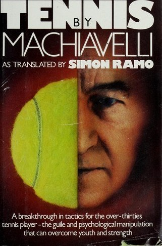
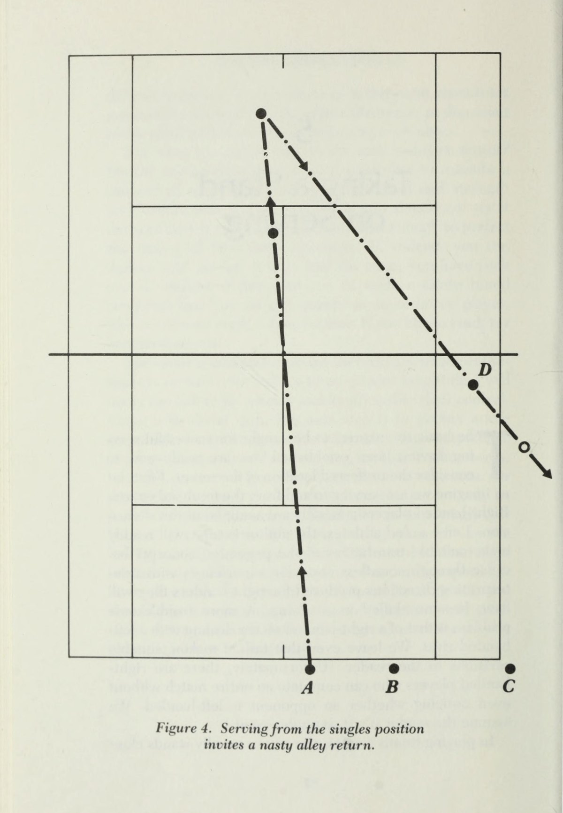
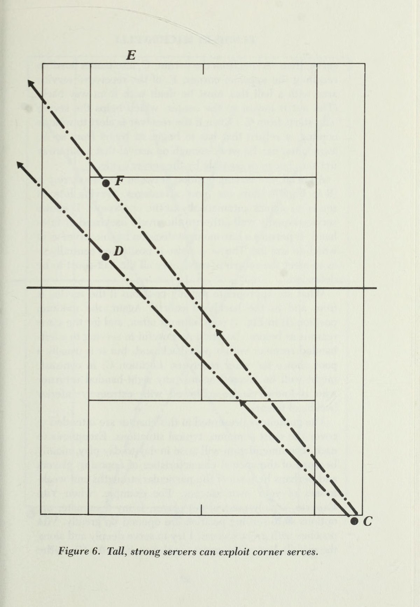
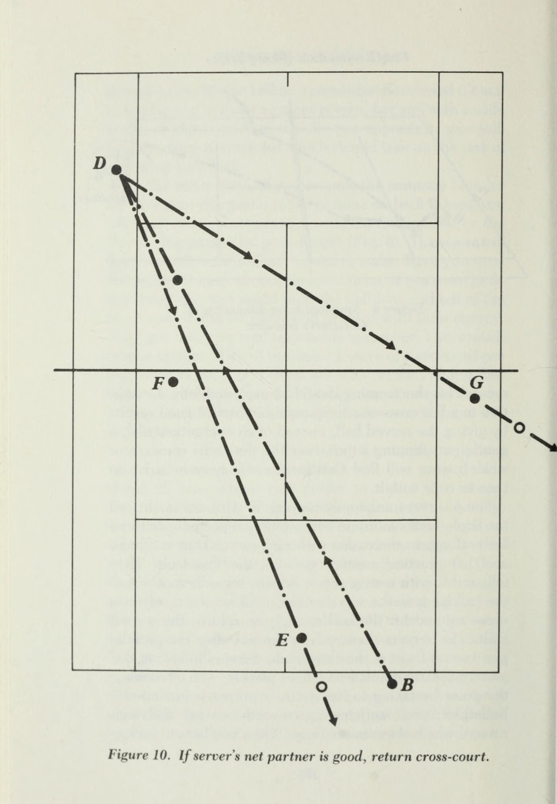
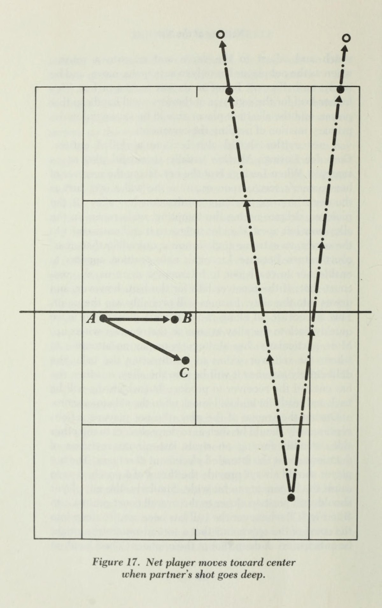
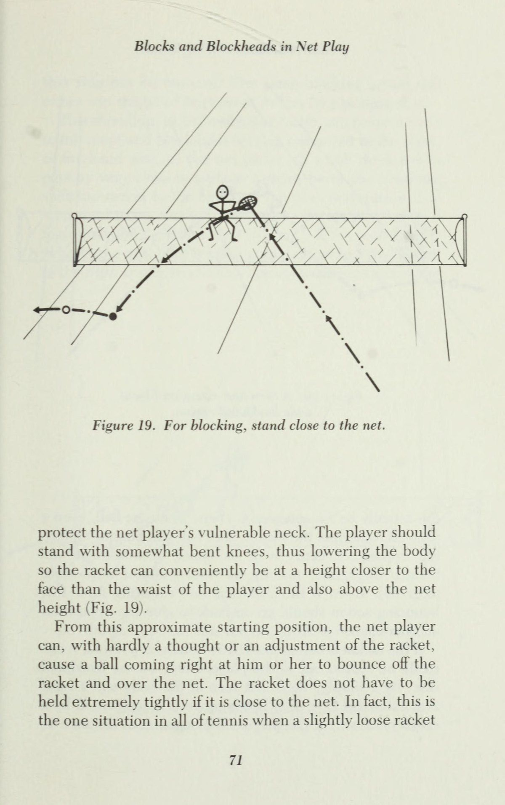
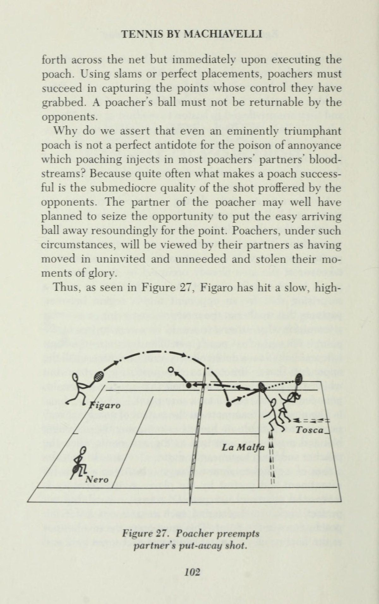

Tennis Theo Machiavelli (Tennis by Machiavelli)

Bản dịch Việt ngữ này chỉ dùng cho mục đích học tập cá nhân, phi thương mại. Bản quyền tác phẩm gốc thuộc về tác giả và nhà xuất bản.
Thống Trị Thông Qua Đánh Đôi
Sự thống trị thông qua đánh đôi Bạn có phải là độc giả thân mến, giống như tác giả, một tay vợt Như năng lực thể thao là bình thường? Nếu vậy, ngay từ đầu chúng ta hãy đồng ý rằng kích thước của sân tennis đã được chọn, cũng như chiều cao của lưới, để phù hợp với lối chơi của những người chơi xuất sắc. Sự kết hợp này cho phép thực hiện nhiều cú đánh quần vợt thú vị, từ các đường chéo sân ngắn đến các vị trí lùi sâu, từ lốp bóng qua đầu đối thủ, hữu ích khi họ di chuyển quá gần lưới, đến các cú đánh ghi điểm từ trên cao. Nói một cách đơn giản, kích thước cơ bản của sân tennis được cân bằng một cách hoàn hảo. Chúng hoàn toàn hài hòa với đặc điểm thể chất của những tay vợt trên mức trung bình về tốc độ, sức mạnh và thời gian. Nhưng nếu khu vực sân chỉ phù hợp cho các vận động viên quần vợt xuất sắc, thì điều đó có nghĩa là nó quá rộng rãi đối với những người chơi vì tài năng thể thao kém hơn và có lẽ khả năng suy giảm theo tuổi tác, thiếu năng lượng, bao quát sân nhanh, phản ứng cơ thể nhanh và những cú đánh mạnh mẽ. Những người chơi quần vợt, khi họ chậm lại, phải thông minh hơn. Đánh đôi, không phải đánh đơn, mới là trận đấu thích hợp. Mặc dù để tối đa hóa niềm vui của các trận đánh đôi, những con hẻm hẹp đã được thêm vào mỗi bên của sân đánh đơn, nhưng người chơi đánh đôi có ít lãnh thổ hơn để bảo vệ. Điều quan trọng không kém, đối tác đánh đôi của một người phải chịu trách nhiệm về khoảng một nửa tổng số tiền lãi mà đối thủ đưa ra. Do đó, trong khi đối tác tham gia vào việc để ngỏ khả năng giành được điểm, người ta có thời gian để đánh giá tình hình, di chuyển đến địa điểm có vẻ phù hợp nhất để phản ứng tốt với quả bóng tiếp theo có thể xảy ra và thậm chí cân nhắc xem nên đặt quả trả bóng ở đâu nếu có cơ hội. Hơn nữa, trong những khoảnh khắc mà đối tác đang che chắn cho một bên, người ta có thể lấy lại hơi thở, nghỉ ngơi vài giây và do đó cố gắng duy trì hoạt động mạnh mẽ trong suốt trận đấu. Tất cả người chơi đều được ưu tiên đánh đôi, ngoại trừ những người đặc biệt khéo léo và nhanh nhẹn, được thể hiện rõ khi quan sát trận đấu đơn giữa hai đối thủ tầm thường. Do họ thường xuyên phải chạy với mức tiêu hao năng lượng tối đa để đạt được các vị trí trả về hữu ích và họ thường không đến được vị trí đó cho đến giây phút cuối cùng có thể, nên các cú đánh của họ thường được thực hiện kém. Họ hiếm khi nắm bắt đủ thời gian để định vị cơ thể và chân một cách chính xác và đưa vợt về vị trí đầy đủ. Theo đó, quả bóng được đánh một cách hơi lộn xộn. Giả sử nó vượt qua lưới, nó có thể tiếp đất một cách khó lường ở hầu hết mọi nơi trong phần sân đối diện hoặc ra khỏi lưới. Do chuyển động của họ vụng về, tư thế và cú xoay của những người chơi như vậy khi họ tiếp xúc với quả bóng hiếm khi được các đối thủ đang tìm cách dự đoán quỹ đạo có thể sẽ đưa nó đi đến đâu. Theo đó, những đối thủ này gặp chính xác những khó khăn mà tôi vừa mô tả và đều khó khăn như nhau.
re you, dear reader, like the author, a tennis player Aes athletic prowess is ordinary? If so, let us agree at the outset that the size of the tennis court has been chosen, as has the height of the net, so as to accommodate the play of extraordinary players. The combination permits a wide variety of exciting tennis strokes, from short cross-courts to deep back-court placements, from lobs over opponents’ heads, useful when they have moved too close to the net, to point-scoring overhead slams. In simple words, the basic dimensions of a tennis court are beautifully balanced. They are in perfect harmony with the physical characteristics of players who are well above average in speed, strength, and timing. But if the court area is just right for outstanding tennis athletes, then it follows that it is too spacious for players who, by reason of lesser athletic talents and, perhaps, deterioration of abilities with age, are lacking in energy, fast court coverage, quick body reaction, and powerful strokes. Tennis players, as they slow down, must smart up. Doubles, not singles, is then the proper game. Even though to maximize the pleasures of doubles, narrow alleys have been added to each side of the singles court, a doubles player has less territory to defend. Equally important, one’s doubles partner is expected to assume responsibility for about one-half of all the returns of the opponents offerings. While the partner is thus engaged in holding open the possibility of winning the point, one has the time to assess the situation, move to what appears the most likely site for responding well to the probable next ball, and even consider where to place the return should the opportunity present itself. Moreover, during the moments when the partner is covering for the side, one can catch one’s breath, snatch a few seconds of rest, and so manage to remain vigorous throughout the match. That doubles is to be preferred for all players except those especially skillful and speedy is made evident when singles play is observed between two mediocre competitors. Owing to their constant need to run with maximum expenditure of available energy to reach useful return positions, and their usually failing to arrive there until the last possible moment, their strokes are most often executed poorly. They rarely capture enough time to position their bodies and legs properly and bring their rackets back fully. The ball is accordingly struck in a somewhat haphazard manner. Assuming it surmounts the net, it may land unpredictably almost anywhere in the opposite court or out of it. In view of the awkwardness of their motions, the stances and swings of such players as they connect with the balls are seldom worth noting by opponents seeking to predict where the ball’s likely trajectory will take it. Accordingly, these opponents have precisely the same difficulty I have just described and are equally hard put to arrive at ready positions from which satisfactory returns can be effected.
đến các vị trí sẵn sàng để có thể đạt được lợi ích thỏa đáng. Chơi trên lưới, một trong những khía cạnh hấp dẫn và có khả năng thú vị nhất của quần vợt, là một khía cạnh yếu kém của bất kỳ trận đấu đơn nào giữa những người chơi trung bình. Muốn chơi net thì trước hết bạn phải vào đó. Nhưng trong đánh đơn, để giao bóng hoặc nhận giao bóng, bạn phải đứng ở sân sau. Theo đó, bạn đang ở sai phần sân khi thực hiện bất kỳ loại chiến lược hoặc cú đánh nào trên lưới. Bạn phải trải qua bước bổ sung là chuyển địa điểm. Ngay cả khi đối thủ gửi cho bạn những quả bóng mềm, dễ dàng được bạn trả lại ở những vị trí xấu cho họ, bạn vẫn phải nhanh chóng có mặt đúng chỗ cho cú đập bóng dự đoán từ lưới của quả bóng tiếp theo dự kiến, có thể đập được từ phía bên kia. Tốt nhất là bạn có một cuộc chạy để thực hiện. Tệ nhất là bạn cần phải kết hợp đường chạy đó với việc sắp xếp bản thân ở cuối đường để có một cú đánh vào lưới thành công. Ngược lại, ở nội dung đánh đôi, hai trong số các đấu thủ có thể xuất phát từ vị trí trên lưới ngay cả khi bóng được giao để bắt đầu trận đấu. Chơi trên lưới là một thành phần tích cực và mạnh mẽ của việc đánh đôi ngay từ lần đầu tiên, ngay cả trong trận đấu giữa những người chơi bình thường. Phải thừa nhận rằng, một trận đấu quần vợt giữa hai tay vợt đánh đơn bình thường đôi khi có thể có một số trao đổi đáng khen ngợi. Tuy nhiên, nhìn chung, nó không có cảm hứng để xem. Nó mang lại cho cả hai người chơi những bài tập đáng kể nhưng chỉ có sự hài lòng khiêm tốn, một sự kết hợp kém cân bằng cho những gì được coi là thể thao, trái ngược với những cuộc cãi vã trong công việc hoặc gia đình. Đánh đôi chứ không phải đánh đơn đặc biệt là sự lựa chọn hợp lý của trò chơi dành cho những người chơi có thể chất trung bình nhưng có khả năng suy luận và hiểu biết về bản chất con người trên mức trung bình. Đánh đôi mang lại cho họ nhiều cơ hội hơn để áp dụng chiến lược và tâm lý. Các bước di chuyển trong một trận đấu đôi, thay đổi khi chúng thực hiện theo hình dạng tương đối về vị trí của bốn người chơi, dễ tuân theo hơn nhiều.
Net play, one of the most fascinating and potentially exciting aspects of tennis, is a weak dimension of any singles match between average players. To play net, you have to be there first. But in singles, either to serve or to receive a serve you must be positioned in the back court. You are, accordingly, in exactly the wrong part of the court for performing any type of strategy or stroke at the net. You must go through the extra step of shifting locations. Even if the opponents send you soft balls, easily returned well by you to bad locations for them, you still have to hurry to be properly in place for your anticipated smash from the net of the expected, smashable next ball from the other side. At best you have a run to perform. At worst you need to combine that run with arranging yourself at its end for a successful net shot. In doubles, in contrast, two of the players can start from net positions even as the ball is served to commence the game. Net play is an active, strong ingredient of doubles from the very first, even in a match among ordinary players. Admittedly, a tennis match between two ordinary singles players may on occasion display some laudatory exchanges. On the whole, however, it is not inspiring to watch. It provides both players with substantial exercise but only modest satisfaction, a poorly balanced mixture for what is intended as sport, in contrast with work or domestic quarrels.
việc sử dụng thủ đoạn gian trá và lừa dối hơn là di chuyển chỉ giữa hai người chơi. Gửi bóng để họ tiếp đất giữa các đối tác đánh đôi và thiên vị người yếu hơn trong hai người chỉ là hai trong số rất nhiều thủ đoạn có thể được sử dụng để gây nhầm lẫn, nhầm lẫn và làm khó hoạt động của các đấu thủ ở bên kia lưới. Một ví dụ khác là lốp bóng qua đầu tay vợt đối phương. Điều này sẽ khiến đồng đội của họ phải quyết định xem có nên chuyển từ nửa sân còn lại của họ sang phía sau tay vợt lưới và cố gắng xử lý cú lốp bóng hay không. Trong khi đó, người chơi trên lưới phải quyết định xem có nên cố gắng rút lui nhanh khỏi lưới để chặn cú lốp bóng đó hay không, lao sang nửa lưới còn lại để che chắn khu vực trống mà đối tác bỏ rơi, người có lẽ cũng đang tìm cách thực hiện cú trả bóng. Đối tác đôi phải hợp tác và tương thích. Thông thường, cơ hội thành công để đạt được trạng thái hạnh phúc đó là rất nhỏ. Sau đó, một đối thủ xảo quyệt có thể thực hiện các đòn trả đũa để phóng đại những điểm yếu như vậy trong tinh thần đồng đội nếu có thể tồn tại. Ví dụ, người chơi thường có những thói quen xấu dẫn đến mất điểm thường xuyên nhưng lại hoàn toàn không nhận thức được lối chơi không mong muốn của mình. Thông thường, các đối tác của họ có thể đánh giá nguyên nhân của các lỗi phạt là rất rõ ràng và tin rằng cách chữa trị sẵn có chỉ đơn giản là từ bỏ thói quen xấu, cách chữa trị mà người chơi dễ mắc lỗi từ chối xem xét, tạo ra sự khác biệt tiềm ẩn khó chịu giữa các đối tác mà đội kia có thể xây dựng. Vì vậy, hãy xem xét nhóm của Ostinata và chị gái Testarta của cô ấy. Ostinata thích đứng ở giữa lưới và đường biên cuối sân và cố gắng chơi tất cả các quả bóng đến phía sân của cô ấy từ điểm chính giữa khu vực của cô ấy. Cô ấy đã chứng kiến một tay vợt xuất sắc làm được điều đó và giành chiến thắng, và cô ấy nhất quyết noi gương thành tích đó. Như đã giải thích ở chương sau, khu vực trung lưu này khó chơi, thường dẫn đến thảm họa, trừ khi tay vợt cực kỳ nhanh nhẹn và có thời gian cũng như phong độ gần như hoàn hảo. Khi Ostinata bị mất điểm, Testarta cố gắng không thành công để thuyết phục em gái mình tiến lên lưới hoặc lùi lại, nhưng Ostinata vẫn cam kết ở giữa. Nếu đối thủ của họ hướng hầu hết các cú đánh vào chân Ostinatas, hai điều sẽ xảy ra. Những đối thủ này thường sẽ ghi điểm và họ cũng sẽ khiến Testarta thất vọng, khiến cô ấy càng tức giận hơn sau mỗi lần bắn. Khi một quả bóng đến tay Testarta, cô ấy sẽ chơi quá sức vì rối loạn cảm xúc. Hay hãy xem trường hợp của Lodovico Boccaccio và con trai ông Giambattista. Họ đều là những vận động viên xuất sắc và những tay vợt đánh đơn xuất sắc trong môn quần vợt. Cậu con trai mới bắt đầu đánh bại người cha ở nội dung đánh đơn. Với tư cách là một đội đôi, họ không suy nghĩ đủ về cách hợp tác và chia sẻ để tạo thành một đội tốt. Gửi một quả bóng giữa họ, mỗi người là một tay vợt nhanh nhẹn và năng nổ, và Lodovico sẽ đi nhận bóng, cảm thấy rằng vị trí cấp cao của anh ấy sẽ đảm nhận trách nhiệm của anh ấy, trong khi Giambattista sẽ di chuyển để trả bóng, tự tin rằng cú đánh của anh ấy sẽ mạnh hơn. Đôi khi chúng va chạm hoặc va chạm vào nhau. Họ luôn can thiệp lẫn nhau nên không thể trở lại tốt đẹp. Ví dụ cuối cùng là bạn tôi Castiglione, người có lẽ là tay vợt di chuyển nhanh nhất mà tôi biết. Anh ấy chơi đơn tốt vì tốc độ của mình, nhưng anh ấy hoàn toàn không biết gì về khả năng kết hợp chiến lược. Anh ta có một cú thuận tay mạnh mẽ và một cú trái tay tương đối yếu. Trong đánh đơn, anh ấy chạy quanh trái tay của mình và nhận hầu hết các quả bóng bằng tay thuận. Với sự nhanh nhẹn của mình, anh ấy đã vượt qua được nội dung đánh đơn. Nhưng Castiglione là một đối tác đôi khó chịu. Khi anh ta tránh sử dụng trái tay và thiên về thuận tay, anh ta phải di chuyển quá thường xuyên vào lãnh thổ của đối tác, dồn ép đối tác và để lại một khu vực trống ở phía bên kia của anh ta. Đối thủ đánh đôi xảo quyệt sẽ khai thác mô hình này.
Doubles, not singles, is especially the sensible choice of game for players who are average physically but possess above average reasoning ability and knowledge of human nature. Doubles offers them more opportunity for the injection of strategy and psychology. The moves during a doubles match, altering as they do the relative geometry of location of four players, are much more amenable to the employment of trickery and deception than the moves between only two players. Sending balls so they will land between the doubles partners and favoring the weaker of the two are but two of many ploys that can be used to confound, confuse, and roughen the workings of the players on the other side of the net. Another example is to lob over the opposing net player's head. This will cause his or her partner to have to decide whether to shift over from the other half of their court to get behind the net player and try to handle the lob. The net player meanwhile must decide whether to attempt a quick retreat from the net so as to intercept that lob or else rush to the other half of the net to cover the open area abandoned by the partner, who is perhaps also seeking to make the return. Doubles partners must cooperate and be compatible. Oftentimes their chance of success in attaining that happy situation is marginal. It then becomes possible for a crafty opponent to place returns so as to magnify such weaknesses in teamwork as may exist. For instance, it is common for players to possess bad habits that lead to frequent loss of points but to be totally unaware of their undesirable patterns of play. Equally commonly, their partners may judge the cause of the penalizing errors to be very evident and believe that a ready cure exists in simply abandoning the bad habit, a cure the error-prone player refuses to consider, making for a potentially nasty difference between partners that the other team can build upon. Thus consider the team of Ostinata and her sister Testarta. Ostinata loves to station herself halfway between the net and the back baseline and to try to play all balls coming to her side of the court from that center point of her area. She has seen an outstanding player do just that with winning results, and she insists on emulating that performance. As explained in a later chapter, this middle region is difficult to play, usually leading to disaster, unless the player is extraordinarily quick and has nearly perfect timing and form. As points are lost by Ostinata, Testarta tries without success to get her sister either to move up to the net or back, but Ostinata stays committed to the middle. If their opponents direct almost all their shots at Ostinatas feet, two things will happen. These opponents will usually make the point, and they will also frustrate Testarta, making her more furious with each shot. When a ball goes to Testarta, she will overdrive it because of her emotional disturbance. Or consider the case of Lodovico Boccaccio and his son Giambattista. They are both excellent athletes and exceptional singles players in tennis. The son is just beginning to defeat the father in singles. As a doubles combination they do not do enough thinking about how to cooperate and share so as to form a good team. Send a ball between them, each one a fast and aggressive player, and Lodovico will go for the ball, feeling that his senior position makes the responsibility his, while Giambattista will move in for the return, confident his hit will be stronger. They sometimes collide or strike each other. They always interfere with one another so neither can return well. As a final example, we take note of my friend Castiglione, who is perhaps the fastest moving tennis player I know. He does well in singles because of his speed, but he is completely oblivious to the possibility of incorporating strategy. He has a powerful forehand and a relatively powerless backhand. In singles he runs around his backhand and takes most balls on the forehand. With his quickness, he gets by in singles. But Castiglione is an annoying doubles partner. When he avoids using his backhand and favors his forehand, he has to move too often into his partner’s territory, crowding the partner and leaving an open area on his other side. Crafty doubles opponents will exploit this pattern.
Những vận động viên quần vợt có khả năng phân tích, những người có khả năng bổ sung yếu tố tinh thần của trận đấu vào thể chất, sẽ có lợi thế gấp đôi so với những người chơi có sở thích và năng khiếu hoàn toàn nằm ở khía cạnh thể chất của trò chơi. Đối với người chơi cân não, đánh đôi nên chiếm ưu thế. Nhưng điều này buộc chúng ta ngay từ đầu phải thảo luận về một vấn đề cơ bản đặc biệt của các cặp đôi, cụ thể là việc lựa chọn đối tác. Tiếp theo chúng ta hãy xem xét vấn đề then chốt này. * *Trong việc sắp xếp các trận đấu quần vợt hàng ngày, việc tập hợp bốn người chơi lại với nhau không phải lúc nào cũng khả thi và đôi khi cần phải sử dụng đến cách chơi đơn. Tốt nhất nên sử dụng những cuộc gặp gỡ đơn như vậy để phát triển trò chơi đôi của một người. Tác giả đã phát minh ra các biến thể của trò chơi đánh đơn thông thường, đặc biệt cho phép thực hành mô phỏng đánh đôi. Chúng có thể rất thú vị và mang lại lợi ích cho hai người chơi đánh đôi bị buộc phải tham gia vào một trận đấu đơn. Các lựa chọn quần vợt này, đã được chú thích thích hợp là "nửa đôi" thay vì đánh đơn, được mô tả trong chương cuối của bản thảo này.
Analytical tenniseers, those with the ability to add a mental component of the play to the physical, will have an advantage in doubles over players whose interests and aptitudes lie entirely with the physical side of the game. For the cerebral player, doubles should be dominant. But this forces us at the outset to discuss a basic problem peculiar to doubles, namely, the selection of partners. Let us next consider this key issue. *
Lựa Chọn Đối Thủ Dễ Bại
Lựa chọn
*In the day-to-day arranging of tennis games, it is not always feasible to bring four players together and is sometimes necessary to resort to singles play. Such singles encounters preferably should be used to develop one’s doubles game. The author has invented variations of the common game of singles that especially allow the practice of simulated doubles. They can be very enjoyable and profitable for two doubles players forced to engage in a singles match. These tennis options, which have been appropriately captioned “half-doubles” rather than singles, are described in this manuscript’s last chapter.
Đối thủ đáng gờm
và Đối tác đáng tin cậy
trò chơi nes có thể được cải thiện, nó được nhiều người biết đến, bởi C) iiss khi chống lại những người chơi giỏi hơn. Tuy nhiên, nếu tiên đề này được áp dụng đến mức tối đa, kết quả có thể là một người sẽ trở thành kỳ thủ tiến bộ nhất thế giới, đồng thời trở thành kỳ thủ không bao giờ chiến thắng. Mặt khác, việc cố tình tìm kiếm những đối thủ đủ yếu để đảm bảo thắng một trận là không trọn vẹn. Bạn, một người chơi có kế hoạch khai thác sự xuất sắc trong khía cạnh trí tuệ của trò chơi, nên chọn đối thủ như thế nào? Một câu trả lời đơn giản đã gợi ý: hãy chọn những người chơi có thể chất vượt trội và bạn cảm thấy hài lòng khi đánh bại những đối thủ đó bằng sự vượt trội về chiến lược của chính bạn. Bạn càng trở nên khôn ngoan và khéo léo hơn trong chiến thuật thì sức mạnh thể chất mà đối thủ nắm giữ càng được phép gia tăng nhiều hơn. Về việc lựa chọn đối tác, có một số khía cạnh rất đơn giản. Không cần phải nói cũng biết rằng những người bạn đời lý tưởng sẽ sở hữu những phẩm chất đáng ngưỡng mộ nhất định. Họ sẽ bình tĩnh thôi, ân cần, tốt bụng, hiểu biết, hợp tác, khéo léo, hy sinh, sâu sắc, bao dung, tha thứ, có khiếu hài hước và không có thói quen uống đồ uống có cồn ngay trước trận đấu. Thật vậy, bạn nên nỗ lực trau dồi chính xác những đặc điểm tính cách này để thể hiện chúng với đối tác của mình. Bạn và họ nên trao đổi các điều khoản trong suốt trận đấu, thỉnh thoảng trao đổi nhận xét giữa các điểm và đôi khi ngay cả trong khi chơi. Ví dụ, cần luôn nhớ rằng người chơi, vào thời điểm hiện tại, vừa trở về từ lưới luôn có thể nhìn thấy vị trí của đồng đội ở phía trước, trong khi điều ngược lại không phải lúc nào cũng đúng do vị trí cố định của mắt ở phía trước đầu và phần lớn thời gian cần phải hướng về phía đối thủ. Theo đó, người chơi ở phía sau đôi khi có thể phải ra hiệu cho đối tác phía trước chuyển từ trái sang phải hoặc ngược lại. Tương tự, một người chơi có thể cảnh báo đối tác, chẳng hạn như bằng cách gọi "nảy", rằng quả bóng đến có vẻ như hướng ra ngoài và tốt nhất là nên được phép nảy lên, do đó cho phép tự động giành được điểm trước khi cố gắng trả lại. Một lần nữa, các đối tác có thể hỗ trợ bên mình thực hiện cú trả bóng bằng cách gọi sớm "của bạn" hoặc "của tôi" khi thấy đối thủ đang gửi bóng vào giữa họ. Tuy nhiên, nhìn chung, các đối tác nên tránh đưa ra những gợi ý cụ thể về địa điểm và cách thức người kia nên trả bóng khi quả bóng thực sự đang trên đường đến từ phía đối diện. Ngoài ra, hiệu suất của đối tác trong lần chơi tiếp theo hiếm khi được nâng cao bằng các truy vấn sau khi bị mất điểm, chẳng hạn như "Tại sao bạn lại làm vậy?" hoặc "Khi nào bạn định học đánh trái tay?" hoặc bình luận hoàn toàn tiêu cực, chẳng hạn như "Đó là một cú đánh ngu ngốc" hoặc hướng dẫn, chẳng hạn như "Đừng đưa nó cho tay vợt lưới của họ để ném đi." Phải thừa nhận rằng, phải thể hiện sự quan tâm nhất định đến việc phân tích cách chơi của trò chơi nếu một người mong muốn thực hiện một cách tỉnh táo về mặt trí tuệ.
nes game can be improved, it is well known, by C) iiss against better players. Yet if this axiom were followed to the extreme, the result might be that one would become the world’s most improved player while, concurrently, a player who never wins. On the other hand, deliberately to seek out opponents weak enough to ensure winning a match is not fulfilling. How should you, a player who plans to exploit excellence in the intellectual aspects of the game, select opponents? A simple answer suggests itself: choose players who are physically superior and derive your pleasure from defeating those rivals by your own superiority in strategy. The more cunning and skilled you become in tactics, the greater can be the allowed increment in physical powers held by the opponents. As to choice of partner, some aspects are straightforward. It goes without saying that ideal partners will possess certain admirable qualities of character. They will be calm, considerate, kind, understanding, cooperative, tactful, self-sacrificing, perceptive, tolerant, forgiving, possessed of a sense of humor, and not in the habit of imbibing alcoholic beverages just before a match. Indeed, you should endeavor to cultivate precisely these personality traits so as to manifest them to your partners. You and they should be on speaking terms throughout the match, exchanging occasional comments between points and sometimes even during the play. For example, it should always be remembered that the player who, at the moment, happens to be well back from the net is always able to see a partner s location up front, whereas the opposite is not always true owing to the fixed location of the eyes on the front of the head and the need most of the time to face toward the opponents. Accordingly, a player at the rear might be expected from time to time to call out a signal to the forward partner to shift from left to right, or vice versa. Similarly, a player might warn a partner, say, with a call of “bounce,” that the arriving ball appears headed out and preferably should be allowed to bounce, thus allowing the point to be won automatically, before attempting a return. Again, partners can aid their side's execution of returns by early calls of “yours” or “mine” when it is seen that a ball is being sent between them by an opponent. On the whole though, partners should avoid making specific suggestions as to where and how the other should return a ball when it is actually on its way from the opposite side. Also, the performance of a partner on the next play is rarely enhanced by queries after a loss of a point, such as “Why did you do that?” or “When are you going to learn to hit a backhand?” or purely negative commentary, such as “That was a stupid shot,” or instructions, such as “Quit giving it to their net player to put away.” Admittedly, some interest must be shown in analyzing the play of the game if one aspires to perform in an intellectually alert manner.
Mặt khác, những lời chỉ trích công khai về lối chơi của đối tác ngay tại chỗ ngay sau khi nó xảy ra hiếm khi được đánh giá cao cho dù mang tính xây dựng và về nguyên tắc là hợp lý đến đâu. Đối với những người bị thuyết phục rằng họ sở hữu khả năng phân tích vượt trội đến mức yêu cầu họ chấp nhận trách nhiệm đưa ra các khuyến nghị trước hiệp hội chơi quần vợt, lời khuyên sau đây được đưa ra: Đóng góp lâu dài cho hậu thế thông qua việc trình bày rõ ràng các nguyên tắc cơ bản về quần vợt được đảm bảo tốt nhất bằng cách viết một luận án dành riêng cho vấn đề này, ngay cả như tác giả đã làm. Sau đó, tác phẩm có thể được người khác đọc lúc rảnh rỗi và nó không mang tính cá nhân. Đây là một cách thiết thực để mang lại lợi ích cho trò chơi của người khác và vượt trội hơn nhiều so với việc song song việc chơi một trận đấu với việc mổ xẻ thành tích của đối tác. Cũng giống như người ta không bao giờ nên giảng bài cho đối tác hoặc lớn tiếng đổ lỗi cho họ khi bị mất điểm, nên giảm thiểu việc thảo luận quá chi tiết về chiến lược. Trừ khi một người mong muốn chơi hầu như độc quyền với cùng một đối tác trong nhiều năm, thật thận trọng khi cho rằng việc chia sẻ mưu mẹo và chiến thuật xảo quyệt với một đối tác tại thời điểm đó có thể vô tình chia sẻ nó với đối thủ khi trong một trận đấu nào đó sau đó, đồng minh cũ trở thành đối thủ hiện tại. Hơn nữa, như sẽ được đánh giá cao sau này, khi những hành vi lệch lạc và thủ đoạn bẩn thỉu được mô tả trong văn bản này, điều tốt là chúng phải được giữ bí mật với đối thủ cũng như đối tác, không được đưa vào những lời thú tội tự nguyện cũng như không được thừa nhận nếu một người có bị thẩm vấn hay không. Rõ ràng, không có mục chiến lược cụ thể nào trong nội dung đánh đôi xứng đáng được ưu tiên cao hơn việc chọn đối tác mạnh nhất hiện có trong tổng thể. Có một phần thưởng gấp đôi ở đây. Sức mạnh của tay vợt đó không chỉ giúp ích cho đội của bạn mà sự vắng mặt của tay vợt đó ở phía bên kia và sự thay thế bởi một tay vợt kém hơn sẽ làm giảm chất lượng trận đấu trung bình của đội đối phương. Nhưng có nhiều điều hơn thế. Không ai là hoàn hảo nên bạn không thể có được một người bạn đời hoàn hảo.
On the other hand, open criticism of a partner’s play on the spot immediately after its occurrence is seldom appreciated no matter how constructive and, in principle, justified. To those convinced they possess such superior analytical abilities as to demand that they accept the responsibility to the tennis-playing society of formulating recommendations, the following advice is submitted: A lasting contribution to posterity through the articulation of tennis fundamentals is best ensured by writing a thesis devoted to the matter, even as has the author. The work then can be read by others at their leisure, and it is impersonal. This is a practical way to benefit the game of others and is far superior to paralleling the play of a match with running dissections of a partner's performance. Just as one should never lecture to partners or blame them vocally when points are lost, highly detailed discussion of strategy should be minimized. Unless one expects to play virtually exclusively with the same partner for many years, it is prudent to assume that sharing wiles and cunning tactics with a partner of the moment may result inadvertently in sharing it also with an opponent when in some later match the former ally becomes the present rival. Furthermore, as will be appreciated later, when devious acts and dirty tricks are described in this text, it is well that they remain secret from opponents and partners alike, neither included in voluntary confessions nor admitted to if one should ever be subjected to questioning. Obviously, no specific item of strategy in doubles deserves a higher priority than selecting the strongest available partner in the overall. There is a double reward here. Not only will that player’s strength aid your side, but his or her absence from the other side, and a replacement there by a lesser player, will lower the opposing team’s average quality of play. But there is more to it than that.
Nhưng sau khi đã làm hết sức mình trong việc lựa chọn và chiêu mộ đối tác đó, bạn nên biết rõ năng khiếu cũng như khuyết điểm của họ và nhận thức rõ ràng về điểm mạnh cũng như hạn chế của bản thân. Sau đó, bạn có thể xây dựng chiến lược cho nhóm của mình để tối đa hóa những mặt tích cực và giảm thiểu những mặt tiêu cực. Việc xác định đúng cách chơi của riêng bạn sẽ khiến bạn chọn một đối tác có lối chơi trùng lặp với lối chơi của bạn, điểm mạnh của người này bù đắp cho điểm yếu của người kia. Ví dụ như Bruno là một đối tác tốt đối với tôi. Anh ấy không có những cú đánh nhanh để xây dựng nhưng rất ổn định. Anh ta chắc chắn sẽ không đánh trúng lưới hoặc đánh bóng quá tốc độ với tốc độ hợp lý, thông thường. Anh ta sẽ gửi nó một cách đáng tin cậy, hết lần này đến lần khác, đến một nơi hợp lý ở phía bên kia. Anh ta không thể đập bóng vào một điểm nhất định hoặc cắt vào bóng để tạo cho nó một cú xoáy và một cú nảy khó hiểu, nhưng anh ta có thể lốp bóng chính xác. Anh ấy mang lại cho tôi nhiều tự do và tự tin để di chuyển, lên kế hoạch cho những thế đứng lừa dối, những vị trí thông minh và những cú đánh xa. Tôi biết chiến lược của mình sẽ không bao giờ bị phá hỏng bởi những pha di chuyển thiếu hợp lý hoặc đánh trượt bóng dễ dàng của Bruno trong khi tôi đang chuẩn bị giành điểm. Sự mềm dẻo nhất định khi đáp lại những đề xuất của bạn phải là đặc điểm của đối tác của bạn. Ví dụ: giả sử cú giao bóng của bạn cực kỳ yếu và chiến lược của bạn phải bao gồm việc đối tác chơi lại, tránh vị trí lưới khi bạn giao bóng. Khi đó, đối tác của bạn không nên là người khăng khăng muốn lên lưới, phớt lờ, bực bội hoặc không đánh giá cao sự khôn ngoan trong gợi ý của bạn để ở lại. Ngược lại, nếu cú giao bóng của bạn là phần mạnh nhất trong trò chơi của bạn, bạn phải tránh chọn một đối tác hoàn toàn không giỏi trên lưới. Cú trả giao bóng yếu dự kiến của bạn sẽ được đối tác trên lưới của bạn đón nhận và thực hiện gọn gàng để ghi điểm. Nếu đối tác của bạn về mặt thể chất không có khả năng thực hiện cú vồ cần thiết như vậy, thì khi bạn chấp nhận đối tác đó, ban đầu bạn sẽ mất đi lợi thế chính của mình. Tương tự, nếu trái tay của bạn yếu và do đó bạn cảm thấy bạn nên thực hiện phần sân thuận tay, không nên đá cặp với một tay vợt thuận tay trái cũng mắc chứng trái tay kém hiệu quả. Toàn bộ phần trung tâm của sân, khu vực trái tay chung của bên bạn, sẽ là vùng đất không có người ở cho cả hai bạn. Việc ghép đôi của bạn sẽ kích thích đối thủ gửi bóng giữa các bạn, những quả bóng mà cả hai bạn sẽ không xử lý tốt ở mức chấp nhận được ngay cả khi bạn cố gắng xác định xem ai trong số các bạn có trách nhiệm trả lại chúng ngay lập tức. Chiến thuật hướng các cú đánh vào giữa sẽ nhanh chóng bị đối thủ của bạn phát minh ra bất kể họ thường kém cỏi và không quan tâm đến việc chơi một trò chơi chiến lược như thế nào. Ví dụ cuối cùng, nếu bạn có kế hoạch khai thác những món quà mà bạn tin rằng mình sở hữu với tư cách là một kẻ cướp điểm khéo léo và thường xuyên vào lãnh thổ của đối tác, thì bạn phải tránh chọn một đối tác sẽ bị xáo trộn về mặt cảm xúc bởi những hành động như vậy từ phía bạn. Có rất nhiều người chơi như vậy, điều này sẽ được tiết lộ ở chương sau. Tuy nhiên, sau khi trích dẫn một vài ví dụ này, chúng tôi phải nhấn mạnh thêm rằng thành công của bạn khi sử dụng nhiều cách tiếp cận quần vợt ranh mãnh, gian xảo sẽ phụ thuộc ít vào đối tác của bạn hơn là vào chính bạn. Chúng ta sẽ sớm thấy rằng việc thực hiện các mưu đồ của người chơi tâm lý chủ yếu là biểu diễn solo.
Nobody is perfect, so you cannot have a perfect partner. But having done as well as you can in selecting and recruiting that partner, you should know his or her gifts and handicaps well and be thoroughly aware of your own strong points and limitations. Then you can build a strategy for your team to maximize the positives and minimize the negatives. Having your own play properly sized up should lead you to choose a partner whose play will overlap with yours, one's strong points covering the other's weaknesses. Bruno, for example, is a fine partner for me. He has no fast shots to build on but is very steady. He is sure not to net or overdrive a ball of usual, reasonable speed. He will send it reliably, time after time, to a sensible place on the other side. He cannot slam the ball for a sure point or cut into the ball to give it a spin and a confusing bounce, but he can lob accurately. He provides me with much freedom and confidence to move about, planning deceitful stances and clever placements and putting away shots. I know my strategy will never be spoiled by Bruno's moving irrationally or missing easy balls while I am setting up to take the point. A certain pliability in response to your suggestions must characterize your partner. For instance, suppose your serve is terribly weak and your strategy must include your partner s playing back, avoiding the net position, when you serve. Your partner then should not be one to insist on being up at the net, ignoring, resenting, or failing to appreciate the wisdom of your hint to stay back. Conversely, if your serve is the strongest part of your game, you must avoid choosing a partner who is totally inept at the net. The expected weak return of your serve should be pounced on by your net partner and dispatched neatly for the point. If your partner is physically incapable of such essential pouncing, then by your accepting that partner you will have ab initio thrown away your major advantage. Similarly, if your backhand is puny and you therefore Selecting Vincible Rivals and Pliable Partners feel you should take the forehand court, do not team up with a left-handed player also afflicted with an ineffectual backhand. The entire center of the court, the common backhand region of your side, will be a no-man’s land for both of you. Your pairing will stimulate your opponents to send balls between you, balls that neither of you will handle tolerably well even if you manage to sort out which of you has the immediate responsibility for returning them. The tactic of directing shots down the middle will be quickly invented by your opponents no matter how incompetent and disinterested they may generally be in playing a strategic game. As a final example, if you plan to exploit gifts you believe you possess as a skillful and frequent poacher into your partner's territory, then you must avoid selecting a partner who will be emotionally disturbed by such actions on your part. There are many such players, as will be disclosed in a later chapter. Having cited these few examples, however, we must make the additional point that your success in employment of a wide repertoire of sly, guileful approaches to tennis will depend much less on your partner than on yourself. We shall soon see that executions of ploys by the psychological player are mainly solo performances. ing score, tennis players expect a warm-up period.
Khởi Động Mưu Mẹo
điểm số, các tay vợt mong chờ giai đoạn khởi động. Hầu hết đều nghĩ rằng bài tập sơ bộ này chỉ nhằm mục đích thả lỏng các cơ và khớp của họ hoặc để thiết lập lại mô hình thời gian chuyển động của tay và chân khi bóng đến. Mặc dù hệ thống trí nhớ phối hợp của cơ thể bạn thường có thể giúp bạn sảng khoái một chút để chuẩn bị cho bạn sự chính xác về thể chất và khả năng tập trung tập trung, nhưng lý do chính khiến bạn khởi động phải là một điều gì đó khác. Nhiệm vụ quan trọng hơn nhiều mà bạn phải thực hiện trong giai đoạn sơ bộ là nhiệm vụ tình báo và trinh sát nhằm phát hiện và xác định những điểm yếu trong quá trình phòng thủ và tấn công của đối thủ. Vì vậy, khi bạn bắt đầu giao bóng để điều hòa các cú đánh của mình và của những người đam mê quần vợt ở phía đối diện lưới, ưu tiên hàng đầu là kiểm tra cú trái tay của người chơi đó, xác nhận rằng cú đánh đó yếu và nên được tận dụng trong suốt trận đấu, hoặc có thể khám phá trong BR trước khi bắt đầu trận đấu thực sự và giữ-.
Most think this preliminary exercise is solely to loosen their muscles and joints or to reestablish the pattern of their timing of arm and leg motions with the ball’s arrival. Although your body's coordinative memory system can usually do with a bit of refreshing to prepare you for physical precision and focused concentration, the prime reason for your warm-up should be something else. The much more important duty for you to perform during the preliminary period is an intelligence and reconnaissance mission intended to bring to the surface and pinpoint the weak spots in the defense and offense of your opponents. Thus as you start delivering balls to condition your strokes and those of the tennis enthusiast on the opposite side of the net, an early priority is to test that player's backhand, confirming that it is weak and should be taken advantage of during the game, or maybe discovering in-
thay vào đó nó mạnh một cách đáng ngạc nhiên và nên tránh. Phép lịch sự thông thường quy định rằng trong quá trình khởi động, bạn nên hướng bóng đều về phía thuận tay và trái tay của đối thủ, để họ có cơ hội thực hành cân bằng. Nhưng vì họ sẽ cho rằng độ chính xác và khả năng kiểm soát của bạn kém trong giai đoạn khởi động ban đầu, nên họ sẽ không nghĩ xấu về bạn nếu cú trả bóng ban đầu của bạn chủ yếu hướng về phía trái tay của họ và thậm chí buộc họ phải di chuyển đáng kể để đáp ứng những cú đánh có hướng xấu của bạn. Bạn nên bắt đầu bằng những cú đánh từ sân sau. Sau khi kiểm tra đầy đủ sự mất cân bằng trái tay và thuận tay của đối phương, bạn nên cố tình đánh một đường bóng dễ, chậm, ngắn, suýt chút nữa không qua lưới. Một lần nữa, hành vi của bạn khi làm điều này sẽ được coi là có thể tha thứ vì người ta cho rằng bạn vẫn còn lạnh lùng và chưa thể kiểm soát hoàn toàn các cú đánh của mình. Các đối thủ của bạn sẽ rất vui khi quan sát thấy bất kỳ điểm yếu nào được thể hiện trong lối chơi của bạn đến nỗi họ sẽ không nhận ra rằng bạn đã thực sự cố tình thực hiện cú trả thua kém cỏi đó. Tại sao tôi lại đề nghị bạn đặt một quả bóng ngắn như vậy cho đối thủ của bạn khi họ đang ở sân sau của họ? Chắc chắn không phải vì bạn muốn khuyến khích họ lao về phía trước để xử lý bóng của bạn chỉ sau một lần nảy. Trong quá trình khởi động, bất kỳ số lần nảy nào cũng có thể chấp nhận được. Không, mục tiêu của bạn là trở thành một mục tiêu tinh tế hơn và việc thực hiện nó đòi hỏi một số tài năng quan sát và chuyên môn. Ví dụ, hãy xem xét rằng mọi vận động viên giỏi, khi đứng ở vị trí lùi xa, sẽ thể hiện phản ứng tự động, nhanh chóng trước một cú trả bóng ngắn. Ngay cả khi bóng rời khỏi vợt, bạn nên quan sát kỹ mắt và cơ thể của đối thủ. Người đó, nếu có khả năng thể thao đặc biệt, sẽ căng cơ và lao về phía trước ngay lập tức. Vì đây là giai đoạn khởi động nên đối phương có thể nhanh chóng kiểm soát chuyển động tiếp theo, thư giãn và quyết định chỉ đợi bóng đến sau một hoặc hai lần nảy thêm. Nếu bạn quan sát rằng phản ứng ban đầu đã diễn ra, tuy nhiên, bạn sẽ được cảnh báo rằng đối thủ này có khả năng lấy được bóng của bạn ở bất cứ nơi nào bạn đặt chúng. Nếu không có phản ứng tự phát nào trên cơ thể đối thủ của bạn được ghi nhận, thì bạn sẽ học được rằng trong trận đấu, bạn có thể thoải mái tung ra một đường bóng ngắn đơn giản, khiêm tốn bất cứ khi nào đối thủ đó quay lại và bạn sẽ có cơ hội tuyệt vời để ghi điểm. Một số tay vợt gặp khó khăn khi thả bóng qua lưới từ vị trí phía sau sân. Tôi có thể đề xuất một dòng suy nghĩ hữu ích nhất trong việc thực hiện một cú đánh như vậy không? Hãy tưởng tượng rằng tại một điểm nào đó trên lưới, một mục tiêu nhẹ (có thể là một con chim bồ câu làm bằng gỗ mỏng) đang đậu, thăng bằng bấp bênh, sẵn sàng ngã nếu chỉ chạm vào. Công việc của bạn là hướng một quả bóng vào mục tiêu đó - không dùng vũ lực đánh bật nó ra và chắc chắn không làm nó quay cuồng sang phần sân đối diện với tốc độ cao mà chỉ làm nó lật nhào. Nếu bạn ghi nhớ hình ảnh này, bạn sẽ tự động điều chỉnh tư thế và xoay người một cách hoàn hảo để thực hiện cú đánh rơi. Nếu bạn không quay trở lại sân của mình khi xem xét cú đánh ngắn này, bạn có thể thấy đối thủ rất khó chịu nếu bạn ném một quả bóng quay qua lưới. Ở đây bạn phải tập trung chú ý vào việc cắt vào trong và phía dưới quả bóng để làm cho nó quay. Bạn có thể ném bóng qua lưới tốt nhưng nó vẫn không thể quay trở lại đối thủ nếu bạn bắt họ ở quá xa lưới. Ở đây, độ xoáy là thành phần quan trọng và bạn có thể quan sát trong quá trình khởi động nếu đối thủ của bạn, ngay cả khi họ tiến tới bóng để cố gắng xử lý nó, thấy khó điều chỉnh chuyển động khó hiểu của quả bóng quay của bạn sau khi nó nảy lên, kết quả chắc chắn của việc bạn cắt vào bóng. Rất khó để cắt một quả bóng và truyền cho nó tốc độ quay cao đồng thời đánh nó bằng tất cả sức lực của mình. Việc đạt được những cú đánh mạnh như vậy thường xuyên sẽ khiến bạn trở thành một người phi thường.
BR efore starting the actual play of the match and keep stead that it is surprisingly strong and should be avoided. Common courtesy dictates that during warm-up you should direct the balls to opponents equally toward their forehand and backhand sides, to grant them opportunity for balanced practice. But since they will expect your accuracy and control to be poor in the initial stages of warm-up, they will not think ill of you should your initial returns go mainly to their backhands and even force them to move substantially to meet your badly directed shots. You should start with ground strokes from your back court. After adequately examining the opponent’s backhand and forehand imbalances, you should deliberately hit an easy, slow ball that falls short, barely making it over the net. Again, your behavior as you do this will be regarded as forgivable because it will be assumed that you still are cold and not yet able to control your strokes fully. Your rivals will be so happy to observe any demonstrated weaknesses in your play that they will fail to perceive you have actually delivered that droopy return on purpose. Why do I suggest you place such a short ball to your opponents while they are in their back court? It definitely is not because you seek to exhort them to dash forward, so as to handle your ball after only one bounce. In warm-up any number of bounces is acceptable. No, yours is to be a more subtle objective, and carrying it out requires some observational talent and expertise. Consider, for example, that every good athlete, when stationed well back, will exhibit an automatic, quick response to a short return. Even as the ball leaves your racket, you should watch your opponent's eyes and body intently. That person, if of exceptional athletic ability, will be seen to tighten muscles and lunge forward instantly. Since it is the warm-up period, the opponent may quickly control further motion, relax, and decide merely to wait for the ball to arrive after an additional bounce or two. If you observe that the initial response has taken place, however, you will have been warned that this opponent has the likelihood of getting to your balls wherever you may place them. If no spontaneous reaction on the part of your competitors body is to be noted, then you will have learned that during the game you may at liberty send forth a simple, unpretentious short ball whenever that opponent is back, and you will enjoy an excellent chance of scoring the point. Some players have difficulty dropping a ball just over the net from a position back in the court. May I suggest a line of thought most helpful in executing such a stroke? Imagine that at some point along the net a lightweight target (perhaps a pigeon made of thin wood) is perched, balanced precariously, ready to fall over if merely touched. It is your job to direct a ball at that target—not to knock it off forcibly and certainly not to send it reeling into the opposite court at high velocity but merely to tip it over. If you hold this picture in mind you will automatically adjust your stance and swing perfectly to effect a drop shot. If you are not way back in your court when you contemplate this short shot, you may find it very annoying to your opponents if you toss a spinning ball over the net. Here your focus of attention must be on cutting into and under the ball to make it spin. You may deliver it well over the net, and it will still fail to go on back to your opponents if you catch them too far from the net. The spin here is the important ingredient, and you can observe during warm-up if your competitors, even if they get up to the ball to try to handle it, find it hard to adjust for the confusing motion of your spinning ball after its bounce, the certain result of your cutting into the ball.
nary, không chỉ đơn thuần là một người chơi bình thường. Nhưng không quá khó để đạt được độ xoáy khi trả bóng dễ dàng và độ xoáy khá thấp khi bạn tiếp xúc với nó. Ở đây một lần nữa, một hình ảnh tinh thần cụ thể lại rất hữu ích. Hãy tưởng tượng quả bóng đang đến gần bạn như có bán cầu bắc và bán cầu nam. Ở giữa bán cầu nam là lục địa Châu Phi. Giả vờ như bạn không thích nó ở đâu. Bạn muốn lau nó bằng vợt của mình khi quả bóng đến, để lái châu Phi về phía nam, thực sự là xuống Nam Cực. Điều này có nghĩa là bạn không vung bóng bằng một cú đánh lớn để hướng nó về phía trước, cánh tay của bạn lùi xa khi bạn bắt đầu vung bóng. Bạn không cầm vợt sao cho mặt dây thẳng đứng nên có thể đánh bóng trực tiếp bằng toàn bộ mặt vợt. Bạn cũng không nên đánh bóng với mặt vợt nằm ngang, dùng dây của mình lau sạch Nam Cực. Thay vào đó, bạn nghiêng vợt khoảng 45 độ để điểm tiếp xúc của bạn ở ngay trên Châu Phi, và bạn tiếp tục vào trong và dưới quả bóng, do đó cắt vào nó và quay Châu Phi về phía nam. Trước tiên hãy thực hành lối chơi này trên một đường bóng ngắn, chậm của đối thủ. Hãy tiến lên và đưa Châu Phi đi xuống. Bóng của bạn sẽ bay qua lưới, rơi xuống rồi nảy lên một cách đặc biệt. Đối thủ của bạn ở phía bên kia có thể chửi bới hoặc khen ngợi bạn nếu bạn làm điều này trong lúc khởi động. Khi đó, bạn nên khẳng định rằng cú trả giao bóng của bạn là kết quả ngẫu nhiên của việc bạn suýt đánh mất bóng và tình cờ bắt được nó khỏi khu vực hữu ích của dây. Trong quá trình chơi, bạn không cần bình luận gì sau khi bóng xoáy thành công. Đơn giản chỉ cần đăng ký điểm mỗi lần. Bạn nên lên lưới để khởi động một phần và đối thủ của bạn cũng phải làm như vậy. Nếu họ không làm như vậy thì bạn nên đề xuất điều đó như một hành động có vẻ hào phóng và hữu ích. Khi đối thủ của bạn ở trên lưới và nhận bóng khởi động từ bạn, sự lịch sự đòi hỏi bạn phải hướng bóng của mình đến vị trí sẵn sàng hiện tại của họ. Tương tự, họ nên trả bóng trực tiếp cho bạn. Các tay vợt đang khởi động trên lưới bị coi là có hành vi xấu nếu họ chọn một cú đánh góc rộng, một tay vợt cố tình bị đuổi sang một bên để tập giành điểm quyết định theo cách đó sau này trong trận đấu thực tế. Tuy nhiên, một số pha trả bóng xấu về phía bạn trong quá trình khởi động sẽ hoàn toàn được mong đợi và được tha thứ, đồng thời chiến thuật này cho phép bạn che đậy một số bài kiểm tra có mục đích khác mà bạn nên thực hiện về khả năng ra sân cơ bản của đối thủ. Ví dụ: bạn nên thỉnh thoảng nâng quả trả bóng trong lúc khởi động, có vẻ như là vô tình, để bóng bay qua đầu đối thủ khi họ đang thực hiện động tác trên lưới. Trong khi chơi trận đấu thực sự tiếp theo, đối thủ của bạn, khi ở trên lưới, có thể thực hiện những nỗ lực nhảy hết sức để chặn những nỗ lực lốp bóng như vậy. Hoặc họ có thể chạy lại phía sau cú lốp bóng và cố gắng đánh trả nó sau khi nó đã nảy lên. Nhưng trong thời gian tập luyện, việc một tay vợt có những nỗ lực anh dũng như vậy là rất hiếm. Mục tiêu của bạn khi thực hiện cú lốp bóng là lưu ý cẩn thận xem chuyển động cơ thể ban đầu nhanh chóng của đối thủ có xảy ra khi bóng rời khỏi vợt của bạn hay không. Nếu anh ấy hoặc cô ấy vẫn ngoan ngoãn trong giai đoạn đầu và bắt đầu lùi lại, nếu có, chỉ sau khi quỹ đạo cao của quả bóng đã được thiết lập hoàn toàn, bạn sẽ học được điều gì đó quan trọng. Người chơi trên lưới đó có thể dễ dàng bị đánh bại bởi một cú lốp bóng. Khi bạn ở trên lưới trong các bài tập mang thai, bạn nên cố gắng gửi mọi quả bóng mà bạn có thể tiếp cận trực tiếp đến đối thủ của mình. Nhưng cũng hãy đảm bảo để tất cả các quả bóng nằm ngoài tầm với của bạn một chút đi tiếp mà không cố gắng đánh chặn. Điều này sẽ tạo ra trong tâm trí đối thủ của bạn ấn tượng sai lầm rằng họ không cần phải lo sợ việc bạn chơi trên lưới và sẽ khuyến khích họ bất cẩn. Trong suốt trận đấu tiếp theo, họ sẽ gửi bóng đến vùng lân cận của bạn mà bạn có thể ghi điểm bằng cách chỉ cách vị trí lưới xuất phát của bạn một bước nhanh chóng, một hành động mà họ sẽ chưa bao giờ thấy bạn thực hiện trong buổi diễn tập.
It is difficult to cut a ball and impart a high rate of spin to it while also hitting it with all your might. Achieving such strong strokes regularly would stamp you as an extraordinary, not merely ordinary, player. But it is not too tough to achieve a spin when returning an easy ball that is quite low when you contact it. Here again a particular mental image is helpful. Think of the ball approaching you as having a northern and a southern hemisphere. In the middle of the southern hemisphere sits the continent of Africa. Pretend you do not like it where it is. You would like to wipe it with your racket, when the ball arrives, so as to drive Africa south, actually down into the South Pole. This means you do not swing at the ball with a big stroke to direct it forward, your arm well back as you begin the swing. You do not hold your racket so the string face is vertical, so you can smack the ball directly with the full face of the racket. Nor do you hit the ball with the racket face horizontal, wiping the South Pole itself with your strings. Instead, you tilt the racket about 45 degrees so your point of contact is right on Africa, and you continue into and under the ball, thus cutting into it and turning Africa south. Practice this play first on a short, slow ball from your opponents. Move up and send Africa downward. Your ball will pass over the net, drop, and then bounce peculiarly. Your enemy on the other side may either curse or compliment you if you do this during warm-up. You should claim then that your cutting return was the accidental result of your almost missing the ball and happening to catch it way off from the useful area of your strings. During the course of the game, you need make no comment after giving the ball a successful spin. Simply register the point each time. You should take to the net for a part of your warm-up, and your opponents should be expected also to do so. If they do not, it is in order for you to suggest it, as an apparently generous, helpful act. When your opponents are at the net, receiving warm-up balls from you, politeness requires that you direct your balls to their present, ready positions. Similarly, they should return balls directly to you. Players warming up at the net are considered to be behaving badly if they opt for a wide-angle shot, one deliberately sent off to the side to practice the winning of decisive points in that manner later in the actual play. Some bad returns on your part during warm-up will be wholly expected and forgiven, however, and this tactic enables you to cover up a few other purposeful tests you should make of your opponents basic court ability. For example, you should raise an occasional return during warm-up, apparently inadvertently, so that the ball will go well over your opponent's head while she or he is working out at the net. During the play of the real game to follow, your opponents, when at the net, may make all-out jump efforts to intercept such lob attempts. Or they may run back to get behind the lob and try to return it after it has bounced. But in the working-out period it is very uncommon for a player to indulge in such heroic efforts. Your objective in performing the lob shot is to note carefully whether a quick initial body motion of your competitor occurs when the ball leaves your racket. If he or she remains docile in the first stage and commences to move back, if at all, only well after the ball’s high trajectory has been fully established, you will have learned something important. That net player can be readily bested by a lob. When you are at the net during pregame exercises, you should try to send every ball you can reach directly to your opponents. But also be sure to allow all balls even slightly out of your reach to go on by, making no attempt at interception. This will create in your rivals’ minds the false impression that they do not have to fear your net play and will encourage them toward carelessness. During the match to follow they will send balls to your vicinity that you can put away for the point by taking only a single quick step away from your starting net position, an act they will never have seen you perform during rehearsal.
Khi đối thủ của bạn ở trên lưới, hãy quan sát cách cầm vợt. Liệu ở vị trí xuất phát như vậy thì bóng ở hai bên có thể được xử lý tốt như nhau không? Hay người chơi đó chọn tư thế vợt sao cho việc trả bóng chắc chắn sẽ bị chấp nếu bóng đến sai phía? Tức là, vợt được thiết lập chỉ để trả cú thuận tay chứ không phải cú đánh trái tay, hay ngược lại? Đối thủ của bạn dường như có khả năng lên lưới trong khi khởi động để đưa bóng về phía bạn ngay cả khi bạn thay đổi vị trí của mình một chút không? Hay cú trả về của chúng thất thường, cho thấy rằng tốc độ bắn của bạn nhanh hơn một chút sẽ khiến chúng thành công? Bạn nên rất cẩn thận trong việc kiểm tra điều này. Không bao giờ tăng dần tốc độ bóng để đối thủ trên lưới tìm cách khám phá giới hạn khả năng xử lý bóng nhanh của họ. Ngay cả khi bạn có lý khi cho rằng đối thủ của mình có chút thủ đoạn, bạn cũng nên cẩn thận để không làm họ nghi ngờ. Nếu bạn hướng những quả bóng cứng, không thể trả lại vào lưới các tay vợt trong lúc khởi động, bạn có nguy cơ khiến họ cảm thấy kém cỏi trên lưới. Điều này có thể dẫn đến việc họ bị loại khỏi lưới trong suốt trận đấu. Nếu đối thủ là những người chơi lưới yếu, bạn nên ưu tiên họ vào lưới thường xuyên hơn là hiếm khi. Sau này chúng tôi sẽ đề cập đến các khía cạnh bổ sung của việc khai thác giai đoạn khởi động. Nhưng đã đến lúc phải nói về những hành động thể chất và tinh thần phù hợp cần thực hiện trong quá trình diễn ra trận đấu thực sự.
When your opponent is up at the net, observe how the racket is held. Is it in such a starting position that a ball to either side can be equally well handled? Or does that player choose a racket posture such that returns are bound to be handicapped if the ball arrives on the wrong side? That is, is the racket set only to return a forehand but not a backhand, or vice versa? Do your opponents seem to have the ability at the net while warming up to direct balls back to you even as you vary your position somewhat? Or are their returns erratic, indicating that a little more speed in your shots will do them in? You should be very careful in testing this. Never gradually increase the speed of the ball to opponents at the net seeking thereby to discover the limits of their abilities to handle fast balls. Even if you are justified in assuming little guile on the part of your opponents, you should take care not to raise their suspicions. If you direct tough, unreturnable balls at net players during warm-up, you risk causing them to feel incompetent at the net. This may result in their ruling out coming to the net at all during the match. If the opponents are weak net players, you should prefer that they take to the net often, rather than seldom.
Ảo Tưởng Về Cú Ace Giao Bóng
không thường xuyên ghi bàn trên sân quần vợt bằng những cú đánh xuất sắc, siêu nhanh, cực kỳ chuẩn xác. Trên thực tế, số điểm thường bị mất nhiều hơn là được. Đối với mỗi hành động quyết định giành được một điểm trong một trận đấu trung bình, ít nhất hai điểm sẽ không giành được, bị bỏ đi vì mắc sai lầm. Tôi không đề cập đến những lỗi cố ý, kết quả của những cú đánh quá mạnh hoặc những bước di chuyển thông minh của đối thủ, mà là những rủi ro ngu ngốc, những lỗi mà ít có lý do bào chữa ngoại trừ sự bất cẩn, mất tập trung hoặc điểm yếu trong khả năng tư duy của người mắc lỗi. Những lỗi như vậy sẽ gây ra hậu quả (con trai của lỗi, hoặc SOB). Vì vậy, một pha lao toàn lực đến một phần xa của sân nhằm cố gắng trả lại quả bóng đánh đầu ở đó, thay vì để thủng lưới, có thể dẫn đến hụt hơi. Lỗi này có thể khiến hai hoặc ba pha trả bóng tương đối dễ dàng tiếp theo của đối thủ bị người chơi khó thở xử lý sai, mất điểm liên tiếp, tất cả đều là SOB. Ngoại trừ việc thi đấu giữa các vận động viên nổi bật, điểm được tính
We shall later mention additional aspects of the exploitation of the warm-up period. But the time has come now to speak of appropriate mental and physical actions to be taken during the actual play of the match. not scored on the tennis court most often by brilliant, super-fast, exceedingly well-placed shots. In fact, points are more often lost than won. For every decisive action that wins a point during an average match, at least two points are unearned, being given away because of mistakes. I refer not to forced errors, the results of exceptionally strong strokes or clever moves of the opponent, but rather to stupid mishaps, those for which there is little excuse except carelessness, loss of concentration, or weaknesses in the thinking capacity of the error-maker. Such botches have consequences (sons of botches, or SOBs). Thus, an all-out dash to a distant part of the court in an attempt to return a ball headed there, rather than conceding the point, may result in a loss of breath. This botch may cause the next two or three relatively easy returns from the opponent to be badly mishandled by the breathless player, a succession of lost points, all SOBs.
Chiến lược cơ bản dành cho những tay vợt mà thể lực không giúp họ vượt qua được lối chơi của đối thủ là tập trung vào việc giảm thiểu sai sót. Quy tắc này được áp dụng trong suốt trận đấu. Nó đặc biệt cần được nhấn mạnh ngay từ đầu trận đấu, với cú giao bóng. Giao bóng là lần duy nhất trong các trận đấu quần vợt mà người chơi có cơ hội tự mình mất điểm hoàn toàn mà không có sự can thiệp nào từ đối thủ hoặc đối tác—đặc biệt là vì khu vực giao bóng mà bóng phải được đặt vào có kích thước quá hạn chế và vì lưới đứng tinh nghịch ngay trên ô vuông nhỏ đó. Việc tìm cách giao một quả bóng giao bóng mạnh và nhanh đến mức không thể trả lại là điều cực kỳ hấp dẫn. Những người chơi hàng đầu đạt được mục tiêu đó với tần suất hợp lý, thậm chí đôi khi trước những đối thủ có kỹ năng và tốc độ phản ứng vượt trội. Tuy nhiên, người chơi bình thường nên loại bỏ một mục tiêu đầy tham vọng như vậy hoặc hiếm khi cố gắng đạt được nó và sau đó phải thận trọng và dè dặt. Phân tích kỹ lưỡng về cơ hội thực sự của một người chơi trung bình để "chiếm ưu thế" đối thủ thường mang lại kết quả đáng nản lòng. Thay vào đó, việc cố gắng giành được một con át chủ bài sẽ ghi điểm ngay lập tức có thể thường xuyên bị mất nó hơn, vì hai lý do. Đầu tiên là quả giao bóng có thể bị lỗi quá thường xuyên, bóng chạm lưới hoặc đi quá khu vực nhỏ mà lẽ ra nó phải tiếp đất. Chỉ giao bóng cho việc nghe những lời kêu gọi lặp đi lặp lại đơn điệu về "lỗi!" thực sự là dịch vụ vượt ra ngoài nhiệm vụ. Lý do thứ hai là mặc dù nỗ lực đó có thể tạo ra một quả bóng "vào" tốt nhưng nó có thể không đạt được tốc độ thực sự của quân át và sẽ chỉ nảy cao. Một quả bóng được nâng cao sau khi nảy giúp người nhận thực hiện một cú trả bóng mạnh sẽ ngay lập tức gây rắc rối cho người giao bóng. Một nỗ lực xuất sắc chỉ thành công một lần trong mười lần sẽ đóng góp quá nhỏ khi nó thành công. Vì chỉ được phép thử hai lần cho mỗi lần giao bóng và phải có lỗi kép tránh được, quả giao bóng thứ hai theo sau nỗ lực hạ gục đối thủ có thể sẽ an toàn và chậm rãi. Do đó, bóng cũng có khả năng được trả lại bằng lực và được đặt đúng vị trí. Cách tiếp cận ở giữa là tốt nhất cho người chơi muốn khai thác chiến lược hợp lý. Điều này đòi hỏi phải cân bằng giữa hai nhu cầu: giảm thiểu việc mất điểm do mắc lỗi kép và tối đa hóa việc giành chiến thắng bằng cách lựa chọn hợp lý quỹ đạo (đường đi) và vị trí giao bóng. Lưu ý sơ đồ, so sánh ba đường cong quỹ đạo đa dạng của các quả bóng được giao. Người được đánh dấu A là quân Át. Nó bắt đầu ở một độ cao cao và di chuyển với vận tốc khủng khiếp trên một đường thẳng gần như trực tiếp như trong hình. Để đạt được quỹ đạo A, quả bóng phải được ném lên cao để giao bóng, cao hơn đầu người giao bóng. Cú vung vợt phải bắt đầu từ phía sau, đầu vợt lúc bắt đầu gần như chạm vào phần nhô ra phía sau của người giao bóng. Sau đó, vợt phải được đưa nhanh chóng đến người giao bóng của người giao bóng.
F xcept for play between athletic standouts, points are The fundamental strategy for players whose physical prowess does not enable them to surmount their opponents play is to concentrate on minimizing errors. This rule applies throughout the match. It is especially to be emphasized at the very beginning of play, with the serve. Serving is the only time during tennis matches in which players have the opportunity to lose the point entirely by themselves, with no contribution to the action from opponents or partners—especially because the service area into which the ball must be placed is so limited in size and because the net stands mischievously right in the way of that little square. It is extremely tempting to seek to deliver a served ball so hard and fast that it cannot be returned. Top players attain that objective with reasonable frequency, sometimes even against opponents of remarkable skill and speed of reaction. The ordinary player, however, should discard such an ambitious goal or attempt to reach it rarely and then with caution and reservations. Thoughtful analysis of an average player's real chances of “acing” the opponent usually yields discouraging results. Trying for an ace that will make the point immediately may much more often lose it instead, for two reasons. The first is that the serve may become a fault too frequently, the ball either striking the net or else overshooting the small area in which it should land. To serve only to hear monotonously repetitive calls of “fault!” is truly service beyond the call of duty. The second reason is that even though the effort may result in a good “in” ball, it may fall short of attaining the real speed of an ace and will merely bounce high. An elevated post-bounce ball helps the receiver to execute a forceful return that will immediately present trouble to the server. An ace attempt which is successful only once in ten times makes too small a contribution when it works. Since only two tries are permitted per serve and a double fault must be avoided, the second serve that follows the effort to ace the opponent is likely to be safe and slow. The ball is accordingly also likely to be returned with power and to be well placed. An in-between approach is best for a player who wishes to exploit sound strategy. This requires balancing the two needs: to minimize losing the point through double faulting and to maximize winning it by sensible choice of the trajectory (path) and placement of the serve.
Hộp giao bóng trở lại Đường lưới phía sau. Ba quả giao bóng: Át, So-So và Tung tầm với cao nhất, trong đó nó phải kết nối với quả bóng giống như vợt, cánh tay và vai hợp tác để tạo ra một hành động giống như roi khiến vợt đánh bóng một cách mạnh mẽ, nắm lấy nó trong một khoảnh khắc vô cùng nhỏ và đưa nó về phía trước một cách điên cuồng. Tốc độ cực lớn của quả bóng tạo cho quỹ đạo A một đường thẳng, có đặc điểm giống như chùm sáng. Điểm bắt đầu của quỹ đạo A càng cao thì vùng cấm bị che khuất bởi lưới càng nhỏ, một lợi thế. Tuy nhiên, độ nảy càng cao sẽ là một bất lợi. Quỹ đạo B cho thấy một cú giao bóng ở mức trung bình, dễ dàng hơn đáng kể, một quỹ đạo có quỹ đạo được uốn cong theo chiều dọc khiến bóng đi chệch lưới với một khoảng cách lớn và rơi vào khu vực giao bóng về phía người nhận. Quỹ đạo C mô tả cú giao bóng chậm nhất. Đó là một cú ném nhẹ nhàng, nhưng thay vì được đưa lên cao để dọn lưới an toàn, nó lại được cố tình hướng sao cho vừa đủ vượt qua chướng ngại vật đó. Do vận tốc tương đối thấp khi chạm sàn nên độ phản xạ của quả bóng bay lên là khiêm tốn nhất. Bây giờ chúng ta đã hiểu tại sao việc ném bóng lên rất cao và cố gắng giành được quân Át lại có thể mang lại một kết quả đáng thất vọng. Nếu cú xoay không gần như hoàn hảo, nó có thể thiếu toàn bộ lực và khiến quả bóng có lực đẩy không tập trung. Khi đó, kết quả chỉ là tốc độ bóng trung bình và thật không may, khi bắt đầu ở tốc độ cao, bóng cũng sẽ nảy cao. Điều này sẽ cho phép người nhận bóng tác dụng toàn bộ lực từ vai để đánh trả một quả bóng sâu, cứng hoặc một quả bóng có góc chéo sân rộng. Xem xét cú giao bóng B, cú giao bóng dọn lưới một cách hào phóng, chúng tôi thấy rằng không có ích gì khi bắt đầu nó ở độ cao lớn nhất. Chúng tôi cũng quan sát thấy rằng cú giao bóng dễ nhất, C, thực sự có thể trở thành cú giao bóng khó trả lại nhất. Điều này là do quỹ đạo C yêu cầu máy thu kết nối với quả bóng khi nó ở gần mặt đất hơn. Phải thừa nhận rằng, một tay vợt tennis có nhiều cú đánh trong mọi trường hợp có thể thực hiện được một quả bóng thấp như vậy và, bằng cách
Note the diagram of Figure 1, which compares three diverse trajectory profiles of served balls. The one marked A is an ace. It starts at a lofty height and travels with terrific velocity on a virtually direct, straight line as seen in profile. To achieve trajectory A the ball must be thrown up high for the serve, well above the server's head. The racket swing must start from way back, the racket’s head at the start almost touching the server's posterior protrusion. The racket then must be brought speedily to the server's er” rs A eB wee ee tae ee ee Te Figure 1. Three serves: The Ace, the So-So, and the Toss highest reach, where it must connect with the ball just as the racket, arm, and shoulder cooperate to create a whiplike action causing the racket to strike the ball mightily, grab it for an infinitesimal instant, and dispatch it forward in a mad rush. The ball’s enormous speed gives trajectory A its straight line, light-beam-like characteristic. The higher the starting point of the A trajectory, the smaller becomes the forbidden area shadowed by the net, an advantage. The higher also will be the resulting bounce, however, a disadvantage. Trajectory B shows a substantially easier, so-so serve, one whose trajectory is arched in vertical profile enabling the ball to miss the net by a large margin and fall into the service area on the receiver's side. Trajectory C depicts the slowest serve of all. It is a gentle toss, but instead of being sent high to clear the net safely, it is deliberately directed so that it barely clears that obstacle. Because of its relatively low velocity when it hits the court floor, the ball’s reflective rise is most modest.
Cú giao bóng có độ nảy thấp khó chịu áp dụng sự kết hợp giữa lực và độ xoáy, gửi nó trở lại theo cách để thách thức sự trả lại của một người chơi bình thường. Nhưng đối với hầu hết những vận động viên quần vợt chúng ta, việc đánh một quả bóng bay về phía trước với độ nảy cao hơn thắt lưng và cao hơn chiều cao của lưới sẽ dễ dàng hơn nhiều. Điều này là do sau đó chúng ta có thể đánh nhẹ xuống với toàn bộ sức mạnh của mình nhưng vẫn trượt lưới, lực đẩy xuống đồng thời khiến chúng ta không thể đánh bóng lâu. Ngược lại, một quả bóng phải được đưa gần sàn sân sẽ đưa đến một tình huống khó xử gấp ba lần. Nếu nó bị đánh mạnh, đồng thời được đặt theo một quỹ đạo đi lên để chắc chắn đi qua lưới, nó có thể rơi ra ngoài giới hạn. Nếu đánh mạnh như nhau nhưng không hướng lên trên thì sẽ bị lưới chặn lại. Nếu chạm nhẹ để tạo ra một quỹ đạo hình vòng cung từ từ đi qua lưới, chuyển động chậm của nó có thể khiến tay vợt đối phương có quá nhiều thời gian để phản ứng. May mắn thay cho người giao bóng, họ được phép thử đưa bóng vào khu vực giao bóng của sân hai lần. Nếu việc giao bóng dẫn đến một lỗi, chẳng hạn như cứ bốn lần thì một lần, thì lỗi kép sẽ chỉ xảy ra một lần trong mười sáu lần, một sai sót có thể chấp nhận được đối với bản ghi của các người giao bóng trung bình. Việc nhân đôi lỗi thậm chí ít thường xuyên hơn là quá bảo thủ. Những người giao bóng như vậy không cố gắng đủ thường xuyên để có được một cú giao bóng tốt hơn, có thể là một cú giao bóng nảy ở một góc hoặc dọc theo một cạnh của hình chữ nhật giao bóng. Mặt khác, nếu lỗi kép xảy ra trung bình thường xuyên hơn một lần trong mỗi trận đấu được giao bóng, thì người giao bóng đang làm việc quá sức, cố gắng vượt qua người nhận mặc dù thời gian và sự phối hợp mà họ có thể tập hợp được quá kém để có thể thực hiện được. Bây giờ hãy để tôi, như một lời cảnh báo đặc biệt, kể cho bạn nghe về người bạn Apropos Brutezza của tôi, người sở hữu một cú giao bóng át chủ bài đáng chú ý nhất, không thể đánh trả được. Nó có tốc độ siêu nhanh, đồng thời, nó có độ xoáy mạnh. Tôi đang mô tả cú giao bóng của Brutezza vì bạn cũng có thể liệt kê một hoặc hai người cùng chơi quần vợt với Brutezza và có thể tự hỏi làm thế nào bạn có thể phản ứng tốt nhất. Kết quả giật gân từ cú giao bóng của anh ấy thật mê hoặc và quyến rũ. Chơi gần anh ấy có xu hướng khiến bạn tin rằng bạn nên cố gắng bắt chước hành động của anh ấy. Nếu bạn thực sự là một người chơi bình thường thì con đường đó sẽ là thảm họa đối với bạn. Chúng ta hãy xem tại sao. Hãy hình dung năm cặp bóng và vợt. Trong các bản phác thảo này, cùng một cây vợt và cùng một quả bóng được vẽ ở các vị trí liên tiếp theo thời gian từ A đến E, bắt đầu từ khi quả bóng được bắt bởi vợt của Brutezza lần đầu tiên và kết thúc khi nó được ném về phía đối thủ.
We see now why throwing the ball up very high and trying for an ace may yield a disappointing result. If the swing does not come off with near perfection, it may lack full power and deliver to the ball a misfocused thrust. Then only a medium ball speed will result and, unfortunately, having started high, the ball will also bounce high. This will permit the receiver to apply full force from the shoulders to return a deep, hard ball or one with a wide crosscourt angle. Examining serve B, which clears the net generously, we see there is no point in starting it at the greatest height. We also observe that the easiest serve, C, actually can turn out to be the one most difficult to return. This is because the C trajectory requires that the receiver connect with the ball when it is closer to the ground (Fig. 2). Admittedly, a tennis whiz with a large repertoire of strokes for all occasions can take such a low ball and, by Figure 2. The annoying low-bouncer serve applying a combination of force and spin, send it back in such a manner as to defy return by an ordinary player. But for most of us tenniseers, it is far easier to hit a ball that comes forward with a bounce higher than one’s waist and well above the height of the net. This is because we can then hit slightly downward with our full power and yet miss the net, the downward thrust simultaneously keeping us from hitting the ball long. In contrast, a ball that must be taken close to the court floor presents a triple dilemma. If it is struck hard, and at the same time is put on a rising trajectory so as to be sure to go over the net, it may land out of bounds. If hit equally strongly, but not also directed upward, it will be intercepted by the net. If touched softly to produce an arcing trajectory that slowly passes over the net, its retarded motion may allow the opposing player too much time in which to respond. Fortunately for servers, they are allowed two tries at putting balls into the service region of the court. If serving results in a fault, say, once in four times, then a double fault will occur only once in sixteen times, a tolerable blemish on the average servers record. To double fault even less frequently is to be too conservative. Such servers are not trying often enough for a superior serve, perhaps one that bounces in a corner or along an edge of the service rectangle. On the other hand, if double faults occur on the average more often than once per served game, the servers are overdoing, endeavoring to ace the receiver even though the timing and coordination they can muster is too poor to bring it off. Let me now, as a special warning, tell you about my friend Apropos Brutezza, who possesses a most remarkable, impossible to return ace serve. It is super-fast, and, at the same time, it has a severe spin. I am describing
Trong một cú giao bóng xoáy mạnh, vợt đánh bóng theo một góc. Điều này có nghĩa là vợt không đối diện trực tiếp với bóng mà đi vào và "cắt" vào bóng theo một góc. Vị trí này là kết quả của sự kết hợp của nhiều động tác, bao gồm cả việc sử dụng cách cầm trái tay* và, tất nhiên, cú đánh hoặc vung vợt tự nhiên của Brutezza. Anh ấy bắt đầu với cây vợt của mình rất thấp phía sau anh ta, khuỷu tay anh ta cong về phía sau, và sau đó, với sự kết hợp tuyệt vời giữa tốc độ và sức mạnh, đưa vợt vào bóng theo cách mà nó không thể nào quên. *Trong cách cầm vợt thuận tay thông thường, vợt được cầm như thể đang bắt tay với nó khi mặt dây thẳng đứng. Đối với cách cầm vợt trái tay, bàn tay và các ngón tay được xoay nhẹ ngược chiều kim đồng hồ.
Brutezza’s serve because you too may number among your tennis-playing associates a Brutezza or two and may wonder how you can best respond. The sensational result of his serve is mesmerizing and seductive. Playing near him tends to cause you to believe you should attempt to emulate his actions. If you are truly an ordinary player, that course will be disastrous for you. Let us see why. Look at the five ball-and-racket pairs that make up Figure 3. In these sketches, the same racket and the same ball are pictured in successive positions in time from A to E, starting as the ball is first caught by Brutezza’s racket and ending as it is sent forth toward the opponent. Notice that the racket is not facing the ball head-on, directly, but comes in and “cuts” into it on an angle. This position is the result of a combination of moves, including the use of the backhand grip* and, of course, the stroke or swing that is natural to Brutezza. He starts with his racket very low behind him, his elbow bent way back, and then, with a beautiful combination of speed and strength, brings the racket into the ball in a way it does not soon forget. The *In the usual forehand grip, the racket is held as though shaking hands with it when the string face is vertical. For the backhand grip, the hand and fingers are rotated slightly counterclockwise. shocking experience of the ball is paralleled by a severe, traumatic effect on the strings of the racket, so great is the impact of the racket on the ball, and vice versa, and the momentum the racket and its motion impart to the ball. Position A is just before the ball is struck. Position B shows the ball caught and flattened by the initial collision, with the strings yielding at the same time. In C, the racket has moved forward and is carrying the ball along in its sweep. Because of the angle of the face of the racket, the great friction of the flattened ball against the strings, and the increasing speed of the racket, the ball is wiped and rolled and further flattened. It is slid along the strings even as it is carried forward on the racket. Under the power of this serve we must think of the ball as being like resilient putty. By now the ball is in terrible shape—no longer a sphere—and the strings have been pushed back and stretched (D). At about this point, three things happen almost at once to give the ball a tremendous surge forward in velocity. First, the ball, having been compressed into a puzzled egg shape, is ready to react and rebound to try to get back to being a sphere. Second, the strings of the racket, presumably very tight, have been distorted by the impact and, like any powerful spring, are ready to spring back to eject the intruding ball forcibly (D). Third, the ball is carried by the racket, which is now suddenly moving at an increasingly higher speed, particularly just before the ball is released, as the arm, wrist, elbow, shoulders—the whole body of powerful Brutezza—snap the racket around with the ball near the top of a mad arc of high velocity. The misshaped ball shoots forward like a missile fired from a gun, spinning and changing its shape as it goes, a cannonball with some peculiar curves added (E). When it hits the ground, its odd shape and spin cause it to react peculiarly. The ball bounces unpredictably and is very difficult to return. The scenario up to this point constitutes much of the story of playing against Brutezza, so dominant is the effect of this service in beginning each play.
Trải nghiệm gây sốc khi chạm bóng song song với tác động chấn thương nghiêm trọng lên dây của vợt, tác động của vợt lên bóng rất lớn và ngược lại, cũng như động lượng mà vợt và chuyển động của nó truyền cho bóng. Vị trí A là ngay trước khi bóng được đánh. Vị trí B cho thấy quả bóng bị cuốn vào và bị dẹt do va chạm ban đầu, đồng thời các dây bị đứt. Ở C, vợt đã di chuyển về phía trước và mang theo bóng trong quá trình quét của nó. Do góc của mặt vợt, lực ma sát lớn của quả bóng dẹt với dây và tốc độ của vợt ngày càng tăng, quả bóng bị lau và lăn và bị dẹt thêm. Nó trượt dọc theo dây ngay cả khi nó được đưa về phía trước trên vợt. Dưới sức mạnh của cú giao bóng này, chúng ta phải coi quả bóng giống như một loại bột bả đàn hồi. Lúc này quả bóng đã có hình dạng khủng khiếp—không còn là hình cầu nữa—và các sợi dây đã bị đẩy lùi và căng ra (D). Vào thời điểm này, có ba điều xảy ra gần như cùng một lúc khiến quả bóng có vận tốc tăng vọt về phía trước. Đầu tiên, quả bóng, sau khi bị nén thành hình quả trứng khó hiểu, sẵn sàng phản ứng và bật lại để cố gắng trở lại hình cầu. Thứ hai, dây của vợt, có lẽ là rất căng, đã bị biến dạng do va chạm và giống như bất kỳ lò xo mạnh mẽ nào, sẵn sàng bật ngược lại để đẩy quả bóng xâm nhập một cách cưỡng bức (D). Thứ ba, bóng được mang bởi vợt, lúc này đột ngột chuyển động với tốc độ ngày càng cao hơn, đặc biệt là ngay trước khi bóng được thả ra, khi cánh tay, cổ tay, khuỷu tay, vai—toàn bộ cơ thể của Brutezza mạnh mẽ—đập vợt xung quanh với quả bóng gần đỉnh của một vòng cung điên cuồng với vận tốc cao. Quả bóng bị biến dạng bắn về phía trước giống như một tên lửa được bắn ra từ một khẩu súng, xoay tròn và thay đổi hình dạng khi nó di chuyển, một quả đạn đại bác có thêm một số đường cong kỳ dị (E). Khi đánh nề, hình dạng kỳ lạ và chuyển động quay của nó khiến nó phản ứng một cách kỳ lạ. Quả bóng nảy lên không thể đoán trước và rất khó quay lại. Kịch bản cho đến thời điểm này cấu thành phần lớn câu chuyện thi đấu với Brutezza, vì vậy tác dụng của quả giao bóng này chiếm ưu thế trong đầu mỗi lần chơi. Nhưng những điều này có liên quan gì đến quần vợt thông thường? Nếu bạn có đủ khả năng thể chất để thực hiện một cú giao bóng đại bác—nếu bạn có tốc độ, sức mạnh và sự phối hợp để thực hiện nó—bạn vẫn không nên thử nó trong trận đấu trừ khi bạn luyện tập thường xuyên đủ để hoàn thiện thời gian của toàn bộ động tác. Thực sự, nếu bạn có thể tung ra một quân át chủ bài như vậy ít nhất một nửa thời gian, thì bạn có khả năng thể thao tổng thể như vậy và đang ở trong tình trạng được điều chỉnh tốt đến mức bạn không đủ tư cách là một tay vợt bình thường. Đây không phải là cuốn sách của bạn. Không đi xa hơn. Nếu bạn thích đọc, hãy thử tiểu thuyết lịch sử. Cách tiếp cận thông minh để giao bóng cho những người đam mê quần vợt thông thường là ném bóng lên độ cao không cao hơn mức sẽ khiến bóng chắc chắn và chắc chắn trong tầm kiểm soát của họ. Sử dụng cách cầm vợt thuận tay, bước tiếp theo là hoàn thiện một cú giao bóng an toàn, hầu như luôn giao bóng thành công. Sau khi đạt được năng lực này, bạn nên bắt đầu cố gắng tìm những vị trí tốt hơn, gần các góc hoặc các đường rìa của khu vực giao bóng. Hoặc bạn nên thử thực hiện một cú giao bóng chỉ cách lưới một hoặc hai inch rồi thả nhẹ xuống để có độ nảy thấp khó chịu. Nếu bạn có khả năng, việc tạo một chút xoáy lên quả bóng bằng cách di chuyển tay cầm của bạn một chút về phía trái tay là cực kỳ hiệu quả - hắc ín hơn là cố gắng giao bóng nhanh nhưng cuối cùng lại không quá nhanh và nảy cao. Bạn chỉ nên lập kế hoạch nâng cao các tiết mục giao bóng của mình dần dần, để lỗi kép sẽ xảy ra không thường xuyên hơn khoảng một trong mười lần giao bóng.
But what has any of this to do with ordinary tennis? Should you possess the physical capability to execute a cannonball service—if you have the speed and strength and coordination to pull it off—you still should not try it during a match unless you practice often enough to perfect the timing of the entire operation. If, indeed, you can deliver such an ace at least half the time, you have such overall athletic ability and are in such a finely tuned condition that you do not qualify as an ordinary player. This is not your book. Go no further. If you like to read, try historical novels. The smart approach to serving for ordinary tennis enthusiasts is to throw the ball up to no greater height than will cause the ball to be reliably and firmly under their control. Using a forehand grip, the next step is to perfect a safe serve, which almost always lands in. After this competence is attained, you should start trying for better placements, near the corners or the edge lines of the service area. Or you should attempt a serve that clears the net by only an inch or two and then drops lightly for an annoyingly low bounce. If you are capable of it, putting some spin on the ball by moving your grip around a bit toward the backhand is exceedingly effective—tar more so than an attempted fast serve that ends up being not so fast and bounces tall. You should plan on enhancing your serve repertoire only gradually, so that a double fault will occur no more frequently than about once in ten serves.
Đứng lên

khi Dịch vụ đã được thiết lập, giờ đây chúng tôi đã sẵn sàng xem xét vị trí ưa thích của người giao bóng. Đầu tiên, hãy tưởng tượng chúng ta đang giao bóng tới và đi từ các sân thuận tay. Người chơi thuận tay phải thường được giả định trong cuộc thảo luận này. Tác giả chắc chắn rằng các vận động viên thuận tay trái sẽ dễ dàng thực hiện các bản dịch phù hợp về các khái niệm được trình bày bởi vì thông qua vô số trải nghiệm khó chịu với việc diễn giải lại các hướng dẫn được tạo ra cho người thuận tay phải, họ sẽ trở nên thành thạo trong việc làm đó. Một vấn đề rắc rối hơn là người giao bóng thuận tay phải giao dịch với đối thủ thuận tay trái. Chúng tôi thậm chí còn giao nhiệm vụ sửa đổi phù hợp cho người đọc. (Thật không may, có những người chơi thuận tay phải có thể hoàn thành toàn bộ trận đấu mà không hề nhận thấy đối thủ có thuận tay trái hay không. Chúng tôi cho rằng người đọc không quá tinh ý.) Khi chơi quần vợt đơn, người giao bóng thường đứng gần quỹ đạo cơ bản của T để tìm kiếm cú giao bóng thành công.
ing having been established, we are ready now to consider the preferred location of the server. First, let us imagine we are serving to and from the forehand courts.
Vị Thế Đứng Giao Bóng
vào giữa đường sau của sân (A trong Hình 4), để sẵn sàng bảo vệ toàn bộ sân đánh đơn, ở bên trái cũng như ở bên phải của người giao bóng. Trong các trận đấu đôi, trong khi một nửa vạch cuối sân dài hơn có sẵn cho người giao bóng (A đến C trong Hình 4), tâm gần đúng (B) của đoạn đường này thường được chứng minh là vị trí tốt nhất. Để hiểu lý do tại sao, chúng ta hãy xem xét việc giao bóng từ hai vị trí cực đoan, đầu tiên là A và sau đó là C. Tại sao người giao bóng lại phải đảm nhận vị trí A, để lộ ra hầu như toàn bộ nửa sân bên phải để người nhận giao bóng đối phương nhanh chóng trả lại? Chỉ có thể có một lý do: để thực hiện một cú giao bóng thành công dễ dàng hơn ngay phía trước về phía trái tay của một tay vợt chỉ có khả năng trả bóng trái tay ít ỏi (Hình 4). Một người sẽ không giao bóng theo cách đó đối với một tay vợt tinh vi, một người mà cú trả bóng gần như chắc chắn sẽ là một cú đánh chéo sân nhanh, ngắn hoặc nếu không thì một cú đánh rơi gần lưới ở điểm D (Hình 4), cả hai đều quá xa để người giao bóng ở vị trí kém có thể tiếp cận được. Vị trí giao bóng A nên được sử dụng một cách tiết kiệm và không bao giờ chống lại một người chơi có cú trái tay mạnh (hoặc người nhận thuận tay trái với cú thuận tay thậm chí ở mức trung bình). Nếu bạn chọn giao bóng từ một vị trí cực đoan khác, góc xa (C), bạn đã ngay lập tức báo hiệu ý định thực hiện một cú giao bóng chéo sân cực đoan, một cú giao bóng sẽ buộc đối thủ của bạn phải rời sân để xử lý nó, mặc dù bằng một cú thuận tay. Trên thực tế, nếu đây không phải là mục tiêu của bạn thì việc bắt đầu giao bóng từ điểm C là một điểm chấp. Góc giao bóng rộng đó chắc chắn sẽ gây khó khăn cho bạn trong việc đưa một quả bóng chắc chắn về phía trái tay của người nhận, nếu đó là điều bạn thực sự muốn đạt được. Nếu cú giao bóng của bạn ở mức độ nhẹ, một cú giao bóng chéo sân cực đoan từ vị trí C sẽ khiến cả bạn và đối tác trên lưới của bạn gặp nguy hiểm đặc biệt khi quả giao bóng được giao cho một đối thủ có năng lực và có tư duy. Như trong tình huống sau, Stradiveri giao bóng từ điểm C, một cú trả giao bóng dễ dàng nhưng có điểm có thể
Right-handed players generally are assumed in this discussion. Left-handed athletes, the author is sure, will readily make suitable translations of the presented concepts because through countless annoying experiences with reinterpreting directions produced for right-handers they will have become skilled in so doing. A more troublesome problem is that of a right-handed server dealing with a lefthanded rival. We leave even that task of making suitable revisions to the reader. (Unfortunately, there are righthanded players who can complete an entire match without even noticing whether an opponent is left-handed. We assume the reader is not so unobservant.) In playing tennis singles, the server usually stands close Ts basic trajectories to be sought for successful serv- Figure 4. Serving from the singles position invites a nasty alley return. to the center of the court's backline (A in Fig. 4), so as to be ready to defend the entire singles court, that to the left as well as that to the right of the server. In doubles, while half of the longer baseline is available to the server (A to C in Fig. 4), the approximate center (B) of this line segment usually proves to be the best location. To understand why, let us consider serving from the two extreme positions, first A and then C. Why should the server ever take the A position, leaving virtually the entire half-court to the right exposed for a quick return by the opposing receiver? There can be only one reason: to make easier a successful serve straight ahead into the backhand of a player who possesses only a meager backhand return capability (Fig. 4). One would not serve that way to a sophisticated player, one whose return would almost certainly be a fast, short cross-court or else a drop shot near the net at D (Fig. 4), both too far away to be reached by the poorly positioned server. Service location A should be used sparingly and never against a player with a strong backhand (or a left-handed receiver with even an average forehand). If you choose to serve from the other extreme position, the far corner (C in Fig. 5), you have immediately signaled your intention to deliver an extreme cross-court serve, one that will force your opponent off the court to handle it, albeit with a forehand. In fact, if this is not your objective, then starting a serve from C is a handicap. The wide angle of that serve certainly makes it difficult for you to deliver a sure ball to the receivers backhand, if that is what you really want to accomplish. If your serve is mild, an extreme cross-court serve from position C puts both you and your net partner in special danger when the serve is delivered to a competent and thinking opponent. As shown in Figure 5, in which Stradiveri serves from C, an easy but point-winning return can

Một cú giao bóng chéo sân nhẹ là nguy hiểm. được Guarneri tung từ ngoài sân đến khu vực phía sau Amati trên lưới, vượt qua cô ấy. Nếu Amati di chuyển vào ngõ để đoán trước một cú đánh như vậy và ngăn cản hoặc chặn nó, Guarneri có thể lưu ý động tác này và chọn hướng trả về phía bên kia của Amati, thẳng vào giữa sân, buộc Stradiveri phải lao tới thực hiện quả trả bóng bằng trái tay. Phải thừa nhận rằng, một cú giao bóng được thực hiện tốt từ quả phạt góc, C, có thể rất tệ nếu nhanh và bắt đầu từ một điểm cao, chẳng hạn như kiễng chân với một người giao bóng cao và khỏe. Điều này cho phép bóng nảy gần lưới (D trong Hình 6), bóng bị lệch sang một bên sân. Một người nhận giao bóng có thói quen nhạy cảm, một người chờ đợi quả giao bóng ở vị trí thường ở giữa và xa về phía sau (E trong Hình 6), có thể là một kẻ yếu đuối đối với kiểu giao bóng này. Ngay cả khi nó chỉ ở tốc độ vừa phải, nó có thể bất ngờ trở thành quân át, người nhận không thể đến đủ gần thậm chí để chạm bóng bằng vành vợt. Nếu người giao bóng thường có khả năng hoạt động mạnh mẽ
Figure 5. A mild cross-court serve is dangerous. be sent by Guarneri from off court to the area behind Amati at the net, outflanking her. If Amati moves to the alley to anticipate such a shot and to discourage or intercept it, Guarneri can note this move and choose to direct the return to the other side of Amati, straight into the middle of the court, forcing Stradiveri to rush to handle the return with his backhand. Admittedly, a serve well hit from the corner, C, can be wicked if fast and started from a high point, say, at tiptoe reach for a tall, strong server. This permits a bounce close to the net (D in Fig. 6), the ball angling off severely to the side of the court. A habitually imperceptive receiver, one who awaits the serve in a generally centered and far back position (E in Fig. 6), can be a patsy for this kind of serve. Even if it is of only fair speed, it can suddenly emerge as an ace, the receiver not being able to get close enough even to touch the ball with the racket’s rim. If the server is often capable of a reasonably potent Figure 6. Tall, strong servers can exploit corner serves.
giao bóng, sau đó giao bóng từ quả phạt góc, C, cũng giúp bạn có thể chạm tới góc đối diện, F, trong khu vực giao bóng của người nhận bóng mà bóng phải được xử lý từ phía sau. (Lưới thấp nhất ở giữa, điều này giúp ích cho người giao bóng bắt đầu từ C.) Ngay cả khi người nhận cảnh giác với những gì sắp xảy ra, một cú trả bóng phải bắt đầu di chuyển từ rất xa thường có thể đủ yếu khi đến mức khiến phía người giao bóng có thể thực hiện được một cú đánh vào lưới. Nhìn chung, vị trí giao bóng giữa hai thái cực (B) mang lại nhiều lợi thế nhất. Giao bóng từ B không tự động gửi tín hiệu cho đối thủ. Nó cho phép giao bóng tốt như nhau đối với cú trái tay hoặc thuận tay của đối thủ. Nó cho phép người giao bóng đưa ra quyết định vào thời điểm cuối cùng về mục tiêu cần hướng tới. Người giao bóng cũng được đặt ở vị trí trung tâm để đáp ứng việc trả giao bóng trên toàn bộ nửa sân được bảo vệ. Vị trí giao bóng thích hợp là gì nếu quả giao bóng được thực hiện từ và tới các sân trái tay? Một lần nữa, vị trí trung bình (B) mang lại hiệu quả thường xuyên nhất và vì những lý do tương tự như trước đây. Vị trí A rất hữu ích trong việc giao bóng cho người nhận thuận tay trái có cú đánh trái tay kém, nhưng nó thường là sự lựa chọn kém đối với những người nhận giao bóng khác. Ngược lại, vị trí C có thể được ưa chuộng hơn bất kỳ người thuận tay phải nào được biết đến là người có tài năng trái tay cực kỳ kém. Các hướng dẫn được trình bày trong chương này nhằm mục đích đề cập đến các tình huống điển hình, phổ biến nhất. Các trường hợp ngoại lệ đối với mỗi khuyến nghị sẽ nảy sinh trong quá trình chơi hàng ngày, chủ yếu là do những đặc điểm đặc biệt của những người chơi đối phương và có lẽ do những điểm mạnh và điểm yếu cụ thể của đối tác của bạn. Ví dụ, khi Vito Experto, một tay vợt chơi lưới thực sự kỳ diệu, là đồng đội của tôi, các lựa chọn về vị trí giao bóng của tôi được mở ra rất nhiều. Vito cướp điểm thành công rực rỡ. Tôi cố gắng giao bóng sâu và dọc theo đường giữa sân (từ A trong Hình 4 hoặc 7) vì vậy người nhận bóng sẽ quay lại và chỉ có góc tối thiểu cho một cú đánh chéo sân theo một trong hai hướng. Điều này có nghĩa là quả bóng được trả lại (cho dù tôi đang giao bóng từ phần sân thuận tay hay trái tay) sẽ phải đi qua lưới ở đâu đó trong khu vực giữa của nó, một khu vực được Vito bao phủ rộng rãi. Hoặc, hãy xem xét La Belle. Cô ấy chơi thuận tay và luôn trả lại cú giao bóng thuận tay của tôi bằng một cú giao bóng chéo rất rụt rè và chạm tới gần lưới. Cô ấy làm điều này không phải vì xảo quyệt mà vì sự yếu đuối. Vì vậy, tôi chọn luôn giao bóng cho cô ấy từ góc cực cao (C trong Hình 4). Điều này giúp tôi có khoảng cách ít nhất để chạy lên và thực hiện một cú đánh ngắn nhanh, chéo góc ngay trước mặt cô ấy nhưng lại lệch sang một bên để ghi điểm.
serve, then serving from the corner, C, also makes possible reaching the opposite corner, F, of the receivers’ service area with a ball that must be dealt with from way back. (The net is lowest in the center, which helps the server who starts from C.) Even if the receiver is alert to what is coming, a return that has to begin its travel from so far away often can be weak enough on arrival that a put-away net shot becomes possible by the server's side. All in all, the serving position between the two extremes (B in Fig. 7) offers the most advantages. Serving from B sends no signals automatically to the opponents. It allows service equally well either to the rival's backhand or forehand. It permits a last-moment decision by the server as to which to aim for. The server also is positioned centrally so as to meet the return of serve over all the half-court to be defended. What are appropriate serving positions if the service is from and to the backhand courts? Again, the medium position (B in Fig. 7) pays off most often, and for the same reasons as before. Location A is useful in serving to a lefthanded receiver with a poor backhand, but it is usually a poor choice for other receivers. Location C, in contrast, might well be favored against any right-handed returner who is known to be endowed with extremely inferior backhand talents. The guidelines presented in this chapter are intended to cover the most common, typical situations. Exceptions to each recommendation will arise in day-to-day play, mainly because of the special characteristics of opposing players and perhaps because of the particular strengths and weaknesses of your own partner. For example, when Vito Experto, a truly magical net player, is my teammate, my options as to serving position are opened up greatly. Vito poaches with great success. I try to serve deeply and along the middle line of the court (from A in Figs. 4 or 7) so the receiver will be back and have only the minimum angle for an attempted cross-court in either direction. This means the returned ball (whether I am at the moment serving from my forehand or backhand court) will have to pass over the net somewhere in its middle region, an area covered broadly by Vito. Or, consider La Belle. She plays the forehand court and always returns my forehand serve with a very timid crosscourt that lands near the net. She does this not from guile but from weakness. Thus I choose always to serve to her from the extreme corner (C in Fig. 4). This gives me the least distance to run up and send a quick, cross-courted short shot right in front of her but off to the side for the point.
Khai Thác Triệt Để Quả Giao Bóng Dễ
người vi phạm có cơ hội tự mình mất điểm do mắc lỗi kép. Theo một nghĩa nào đó, người nhận giao bóng có thể làm tệ hơn, thậm chí ngay cả khi họ chỉ có thể nhường một điểm tại một thời điểm. Họ có thể mất điểm cho đội của mình nếu phạm phải một trong vô số lỗi khi trả giao bóng. Tất nhiên, một con át thực sự là một điểm kiếm được. Người nhận quân át không cần phải cảm thấy rằng họ đã phạm lỗi và hạ gục đối tác nếu họ không trả lại quả giao bóng, hoặc nếu điều tốt nhất họ có thể làm là hầu như không đưa vợt của mình vào bóng để họ gài bẫy đối thủ để đánh kẻ yếu đuối nhanh chóng quay trở lại để giành một điểm chắc chắn. Nhưng con át không phổ biến trong trò chơi quần vợt thông thường. Hơn nữa, người nhận bóng, ngay cả khi đối đầu với một người giao bóng có khả năng giao bóng được định hướng tốt và với tốc độ hoặc độ xoáy đến mức không thể đánh trả lại, thường có thể thực hiện các bước để cản trở hiệu suất khuấy động như vậy của người giao bóng, như chúng ta sẽ quan sát sau đây. Tuy nhiên, trước tiên chúng ta hãy giải quyết không phải với con át mà với con át.
ervers have the opportunity to lose the point all by themselves by double faulting. The receivers of serves can do worse, in a sense, even granted they can give away only one point at a time. They can lose points for their side by displaying any one of a great multitude of faults when returning serves. Of course, a true ace is an earned point. Receivers of aces need not feel they have committed a botch and let down their partners if they fail to return the serve at all, or if the best they can do is barely to get their rackets on the balls so they set up an opponent to slam the feeble return away quickly for a sure point. But the ace is not common in ordinary tennis play. Moreover, the receiver, even when confronted with a server who is capable of delivering a ball so well directed and with such speed or spin that it is impossible to return, usually can take steps to interfere with such a stirring performance by the server, as we shall presently observe.
cú giao bóng thông thường, cú giao bóng mà chúng ta thường gặp nhất trong lối chơi trung bình. Ngay cả những người giao bóng mạnh mẽ nhất, khi bị buộc phải thực hiện quả giao bóng thứ hai do mắc lỗi trong lần thực hiện đầu tiên, thường đưa ra cho chúng ta một cú giao bóng có thể trả lại được nếu chúng ta hành động khôn ngoan thay vì ngu ngốc. Cú giao bóng thông thường không phải là cú giao bóng đến với chúng ta, yêu cầu được đánh để tạo lợi thế một cách ung dung và bất cẩn, mà nó có thể có quỹ đạo sao cho người nhận có mọi cơ hội để đánh trở lại khu vực bên phải của phần sân đối phương. Việc chuẩn bị cho một cú trả giao bóng tốt bắt đầu bằng việc nghiên cứu sâu sắc về bản chất của kết quả đầu ra của người giao bóng. Thông lệ trong quần vợt xã hội là cho phép người giao bóng thực hiện một vài nỗ lực khởi động (hoặc thậm chí cấp đặc quyền giao bóng cho đến khi bóng rơi vào) khi giao bóng lần đầu tiên trong trận đấu. Cho dù người giao bóng đang giao bóng cho đối tác của bạn hay cho bạn, bạn phải theo dõi chặt chẽ những gì họ làm trong giai đoạn sơ bộ này, vị trí và thế đứng ưa thích của họ cũng như thói quen liếc nhìn của họ khi họ chuẩn bị ném bóng lên và đưa vợt vào đó. Hầu hết các người giao bóng đều có cái nhìn thoáng qua lần cuối về khu vực rất cụ thể trong khu vực giao bóng mà họ định hướng các cú giao bóng của mình tới. Ví dụ, họ có thể nghĩ đến việc giao bóng về phía trái tay của bạn và nghĩ rằng, có lẽ đúng, rằng bạn ít có khả năng trả bóng tốt về phía đó. Nếu đúng như vậy, bạn gần như chắc chắn sẽ thấy họ tập trung mắt ngay lập tức vào phần trái tay của khu vực giao bóng của bạn. Vị trí mà người giao bóng chọn dọc theo tuyến dịch vụ cũng sẽ cho bạn biết nhiều điều. Như đã chỉ ra trong Hình 4, một số người giao bóng có ý định giao bóng trái tay của bạn (nếu bạn ở sân thuận tay) sẽ thực sự vào thế đứng tại điểm A, vị trí giao bóng đơn thông thường. Có lẽ, họ sẽ không tập trung quá nhiều vào lãnh thổ của đối tác và để trống một phần lớn nửa sân của mình nếu họ đã lên kế hoạch cho bất cứ điều gì ngoại trừ một cú giao bóng trái tay của bạn. Ở một thái cực khác, người giao bóng có thể chiếm các vị trí gần góc (C trong Hình 4) vì họ có ý định cung cấp cho bạn một đường chéo sân cực đoan, như được hiển thị, khiến bạn bị đẩy về bên phải, rời khỏi sân, khi bạn tìm cách quay trở lại. Việc lưu ý cả cái nhìn cuối cùng của người giao bóng trước khi ném bóng lên và sự lựa chọn vị trí của người giao bóng sẽ giúp bạn rất nhiều trong việc dự đoán vị trí quả bóng được giao sẽ đến và sẵn sàng cho nó. Một tay vợt giao bóng liên tục không có lực thường thiếu độ chính xác cũng như sức mạnh. Một người giao bóng như vậy phải được thỏa mãn chỉ để đưa bóng vào cuộc thành công và có ít tham vọng về việc tạo ra một quỹ đạo cực kỳ rắc rối cho bên này hoặc bên kia của bạn. Kết quả giao bóng đó có thể tương đương với một cú ném qua lưới đơn thuần và nó thường sẽ phá lưới với một biên độ quá rộng và nảy khá cao. Bạn sẽ có thời gian để đưa mình đến một vị trí xuất sắc để trả lại nó một cách tốt đẹp. Có lẽ người giao bóng namby-pamby này, người rất vui nếu quả bóng rơi vào bất kỳ vị trí nào trong ô giao bóng, sẽ nhìn về hướng hình chữ nhật nhỏ đó trước khi giao bóng. Nhưng cái nhìn thoáng qua sẽ cho bạn biết một chút rằng bạn chưa biết về mô hình của người giao bóng đó. Để đáp lại cú giao bóng kém đó, bạn nên chắc chắn rằng mình không bị bắt quá xa về phía sau. Bạn nên di chuyển đến vị trí sao cho bạn có thể đánh bóng một cách mạnh mẽ khi nó đạt đến điểm cao hoặc đỉnh đường đi sau khi nảy, điểm này có thể cao hơn nhiều so với chiều cao của lưới. Đánh bóng ở đỉnh, không muộn và thấp.
Let us deal first, however, not with aces, but with the common serve, the one we are most likely to encounter in average play. Even the most energetic of servers, when forced to a second serve because of faulting on the first effort, presents us most often with a serve that is returnable if we act wisely rather than foolishly. The ordinary serve is not one that floats to us, asking to be smacked to advantage cavalierly and carelessly, but it is likely to be of such trajectory as to provide the receiver with every chance for a sound return to the right region of the opponent's court. Preparation for a good return of serve starts with a perceptive study of the nature of the server's output. It is customary in social tennis to allow a server a few warm-up efforts (or even to grant the privilege of serving until a ball eventually lands in) when serving for the very first time during the match. Whether servers are serving to your partner or to you, you must watch closely what they do during this preliminary period, their preferred locations and stances, and their habits in the casting of glances as they get set to throw the ball up and bring their rackets onto it. Most servers take a final glimpse at the very specific region within the serving area to which they plan to direct their serves. For instance, they may have in mind serving to your backhand, thinking, probably correctly, that you are less able to return a ball well on that side. If that should be the case, you will almost certainly find them focusing their eyes for a revealing instant on the backhand portion of your service area. The location a server chooses along the service line also will tell you a lot. As was indicated in Figure 4, some servers, intent on serving to your backhand (if you are in the forehand court) will actually take a stance at point A, the customary singles service position. Presumably, they would not crowd their partner’s territory so much and leave so large a fraction of their own half-court wide open if Easy Exploitation of Easy Serves they planned anything but a serve to your backhand. At the other extreme, servers may take positions near the corner (C in Fig. 4) because they intend to provide you with an extreme cross-court, as shown, to cause you to be driven to your right, way off the court, as you seek to make your return. Noting both the last look on the part of the server before throwing the ball up and the server's choice of location should help you greatly in anticipating where the served ball will arrive and to be ready for it. A player whose serve is continually powerless usually lacks precision as well as strength. Such a server has to be satisfied merely to get the ball in play successfully and entertains few ambitions about producing a troublesome extreme trajectory to one side of you or the other. That resulting serve is likely to be the equivalent of a mere toss over the net, and it will usually clear the net by an overly generous margin and bounce rather high. You will have time to get yourself forward to an excellent position to return it well. Perhaps this namby-pamby server, who is happy if the ball lands anywhere within the service box, will look in the direction of that little rectangle before finally delivering. But the glance will tell you little you do not already know about that server's pattern.
cho phép bạn đánh bóng theo hướng hơi nghiêng xuống và mạnh như bạn mong muốn để có được cú trả bóng mạnh, nhanh và có góc rộng, hoặc nếu không thì ngay giữa hai đối thủ, những người sẽ không có thời gian để tìm ra người sẽ đảm nhận nhiệm vụ trả bóng cho bạn. Mặt khác, nếu bạn mắc phải sai lầm phổ biến là chờ đợi quả giao bóng nhẹ nhàng quay trở lại với mình, bạn sẽ thấy mình kết nối tốt với bóng sau khi cú nảy đã vượt qua độ cao đỉnh điểm. Khi đó, bạn sẽ có một cú đánh khó thực hiện hơn nhiều, phải đưa bóng lên cao để đưa nó qua lưới. Vì nếu bạn thực hiện động tác này một cách mạnh mẽ, bạn có thể đưa bóng đi xa và ra khỏi sân, bạn có thể bị hạn chế để đánh nó với ít năng lượng, khiến đối thủ của bạn dễ dàng phục hồi hơn. Việc cân nhắc này thường áp dụng cho cú giao bóng thứ hai của một người giao bóng có cú giao bóng đầu tiên khó và sâu nhưng lại rút lui sau lỗi đầu tiên để thực hiện cú giao bóng thứ hai nghiêm túc, điều này có thể khiến bạn bị lùi quá xa (nếu bạn lơ đãng cho rằng cú giao bóng thứ hai sẽ giống như cú giao bóng đầu tiên). Bạn đặc biệt muốn sẵn sàng biến câu trả lời của mình thành một cảnh quay theo vị trí. Để đạt được điều này, bạn phải quyết định trước nơi bạn muốn chuyển khoản hoàn trả. Hãy xem xét tình huống sau. Người nhận Spumoni sắp thực hiện cú trả giao bóng của Catiatoris. Một số khả năng cực kỳ hấp dẫn được cung cấp bởi người giao bóng imep Catiatori nên được Spumoni nghĩ đến. Vì vậy, Catiatori chọn đứng ở vị trí sân đánh đơn, A, gần giữa đường cuối sân, nhưng lại rụt rè đưa một cú giao bóng mèo vào cú thuận tay của Spumoni. Trước lỗi này của Catiatori, Spumoni nên di chuyển lên để bắt bóng ở điểm cao rồi hướng nó càng mạnh càng tốt về phía biên ngang, vào khu vực rộng mà Catiatori đã ngu ngốc để hoàn toàn bỏ ngỏ. Một người giao bóng có thể chất nhút nhát và hơn nữa, người tạo cơ hội đặc biệt này cũng thể hiện sự thiếu hụt về mặt tư duy-
To respond to that poor serve, you should be sure you are not caught too far back. You should move to such a position that you can hit the ball forcibly when it reaches the high point or crest of its path after the bounce, which likely will be well above the net’s height (Fig. 8). This will ae er en a Crest ies eK omy, TM, a Pe aes Figure 8. Hit the ball at the crest, not late and low. permit you to hit the ball on a somewhat downward tilt and as hard as you wish for a potent return, fast and with a wide angle, or else right between the two opponents, who will not have time to work out which should take on the task of returning your ball. On the other hand, if you commit the common blunder of waiting for the gentle serve to come on back to you, you will find yourself connecting with the ball well after the bounce has passed its peak height (Fig. 8). Then you will have a much more difficult stroke to make, having to send the ball up to raise it over the net. Since, if you were to do this forcefully, you might send the ball long and out of the court, you might be restrained to hit it with little energy, making it easier for your opponents to recover. This consideration applies often to the second serve of a server whose first serve is tough and deep but who retreats after a first fault to a demure second serve that may find you too far back (if you absentmindedly assume the second serve will be like the first). You want especially to be ready to turn your response into a placement shot. To achieve this you must decide ahead of time where you prefer to direct the return.

Spumoni lợi dụng sai lầm của Catiatori. tâm trí. Nhược điểm này cần được khai thác triệt để. Ngoài khả năng tạt bóng nhanh, Spumoni sẽ đạt được kết quả tốt bằng cách đưa bóng giao bóng, thay vì một cú tấn công mạnh mẽ, một cái vỗ nhẹ, lật nó qua lưới để hậu quả là lực nảy yếu của nó sẽ khiến Catiatori ở quá xa để đến kịp thời để đối phó. Một số người giao bóng không vui vẻ mắc phải cái mà chúng ta có thể gọi là hội chứng lỗi ba lần vì họ liên tục thực hiện ba lỗi liên tiếp trong mỗi lần giao bóng. Họ cố gắng giành được một quân át mà thực tế không bao giờ có được: lỗi đầu tiên. Họ thực hiện theo điều này bằng một cú giao bóng yếu ớt, bất kể bóng chạm vào vị trí nào trong ô giao bóng, đều cho phép người nhận bóng di chuyển lên và đánh trả bóng mạnh: lỗi thứ hai. Các người giao bóng sau đó lao vào lưới sau quả giao bóng thứ hai nhỏ bé đáng thương: lỗi thứ ba. Những người giao bóng theo mô hình này tìm cách mô phỏng những người chơi xuất sắc, những người thường ghi điểm bằng cách đưa bóng lên lưới theo đúng một cú giao bóng như đạn, dự đoán chính xác một cú trả bóng yếu và cao, mà họ sẽ đập tan. Khi bạn phải đối mặt với một vấn đề dưới
Consider Figure 9. Here receiver Spumoni is about to handle the return of Catiatoris serve. A number of extremely attractive possibilities offered by imept server Catiatori should be at the front of Spumonis mind. Thus Catiatori chooses to stand in the singles court position, A, near the center of the baseline, yet sending a pussycat serve timidly to Spumoni's forehand. In view of this error on Catiatoris part, Spumoni should move up to catch the ball at its high point and then direct it as strongly as possible to the extreme cross-court, into the big area Catiatori has stupidly left completely open. A server who is physically shy and who, moreover, provides this special opportunity exhibits anemia also in the thinking depart- Easy Exploitation of Easy Serves Figure 9. Spumoni takes advantage of ment. This shortcoming should be exploited fully. In addition to a fast cross-court, Spumoni will attain good results by giving the served ball, instead of an energetic strike, a gentle pat, flipping it just over the net so its consequent weak bounce will find Catiatori too far away to arrive in time to cope with it.
người giao bóng thực hiện lỗi ba lần, bạn có thể ghi bàn bằng cách trả bóng ở hầu hết mọi nơi, kể cả ngay tại chân người giao bóng đang tới. Có những lựa chọn tuyệt vời khác để quay lại một người giao bóng khác. Giả sử cú giao bóng đến từ vị trí trung bình hợp lý (B trong Hình 10), bạn (tại D) có thể hướng phản ứng của mình sâu vào trái tay của người giao bóng (E). Điều này không dễ thực hiện nếu người giao bóng đã hướng bóng về phía thuận tay quá cao của bạn vì đối tác của người giao bóng trên lưới (F) có thể cản đường. Bạn không nên cố gắng trả lại cú đánh trái tay của người giao bóng nếu người chơi trực tuyến hỗ trợ người giao bóng xuất sắc. Khi đó, đường chéo tới G sẽ được ưu tiên hơn. Tất nhiên, nếu người giao bóng có một đối tác chơi trên lưới miễn cưỡng và quá bảo thủ, người luôn bám sát con hẻm, điều này sẽ mời gọi người giao bóng quay trở lại với cú đánh trái tay. Đôi khi, một người giao bóng có hàm lượng calo thấp, mềm mại chiếm vị trí ở góc xa (C) trong nỗ lực thực hiện một cú tạt bóng cực mạnh cho bạn, nhưng không thành công, chỉ cần đặt bóng, như được hiển thị, gần giữa khu vực giao bóng của bạn. Nếu điều này xảy ra, bạn (tại D) sẽ được trao một không gian rộng rãi để bạn có thể gửi tiền lãi nhanh chóng, bao gồm cả một cú đánh nhanh qua tay vợt lưới (F) về phía trái tay của người giao bóng. Điều này sẽ ghi điểm ngay lập tức hoặc buộc người giao bóng phải quay lại bằng một cú đánh yếu ớt, tạo cơ hội cho bạn thực hiện cú ném xa để đáp trả. Tiếp theo chúng ta hãy thảo luận về một cách trả giao bóng cụ thể có thể rất hiệu quả trong nhiều trường hợp khác nhau. Đây là cú lốp bóng qua đầu của tay vợt lưới vào góc phía sau. Nếu cú giao bóng không có lực mạnh, bạn có thể dễ dàng thực hiện được một cú lốp bóng tốt. Nếu bạn đánh giá khả năng lốp bóng của mình kém hơn mức trung bình, tôi cầu nguyện cho bạn rằng đừng quyết định xóa cú đánh trả này khỏi tiết mục của bạn. Thay vào đó, hãy quyết tâm thực hành cú lốp bóng, chịu đựng một số điểm bị mất cho đến khi bạn phát triển được độ tin cậy và độ chính xác. Nó sẽ trở thành một khoản đầu tư mà bạn sẽ nhận được lợi ích tốt.
Some servers unhappily indulge in what we might call the triple-fault syndrome because they repeatedly do three faulty things in succession with each serve. They try for an ace that practically never goes in: the first fault. They follow this with a sissy serve, which, regardless of where the ball lands in the service square, allows the receiver to move up and hit the ball strongly in return: the second fault. The servers then rush to the net after the pitifully puny second serve: the third fault. Servers following this pattern seek to emulate excellent players, who often make the point by taking to the net in a proper follow-up of a bulletlike serve, anticipating correctly a weak and high return, which they smash away. When you face an under- Figure 10. If server's net partner is good, return cross-court. Easy Exploitation of Easy Serves powered server who executes the triple fault, you can score by returning the ball almost anywhere, including right at the servers oncoming feet. There are other excellent choices for return to a diffident server. Assuming the serve is from a sensible medium position (B in Fig. 10), you (at D) might direct your response deep into the servers backhand (E). This is not easy to do if the server has directed the ball to your extreme forehand because the server's partner at the net (F) may stand in the way. You should not attempt returns to the servers backhand if the net player assisting the server is outstanding. Then the cross-court to G is much to be preferred. Of course, if the server has a reluctant and overly conservative net-playing partner who always hugs the alley, this will invite a return to the server's backhand.
Trả lại cú giao bóng góc yếu về phía trái tay của người giao bóng.
Sometimes a server of low-caloried, flabby balls takes the far corner position (C in Fig. 11) in an effort to deliver an extreme cross-court to you, but fails, simply depositing the ball, as shown, near the center of your service area. If this happens, you (at D) will have been handed generous space into which you can deposit a snappy return, including a quick shot past the net player (F) to the server's backhand. This will either score the point immediately or else force the server to return with a flimsy shot, giving you a chance for a put-away in response.
Tất nhiên, bạn không nên lốp bóng nếu tay vợt lưới đối phương dường như có thể đọc được ý định của bạn và nhanh bất thường. Những người chơi trên lưới như vậy sẽ lùi lại quá nhanh, khiến bạn có rất ít khoảng trống phía sau họ để đặt cú lốp bóng của bạn và thường buộc bạn phải đánh dài và mất điểm. Đặc biệt, học cách không vô tình nhấc bóng lên một cách cẩu thả, tạo ra một "lobette" (một cú lốp bóng ngắn, trôi nổi). Một quả lốp bóng được đặt ở vị trí hoàn hảo để người chơi lưới nhanh nhẹn đó có thể ghi điểm bằng một động tác đánh đầu dễ dàng. Khi đối mặt với những cú lốp bóng thông thường, những tay vợt chơi lưới thực sự xuất sắc sẽ chọn quay lưng lại với bạn và nhanh chóng lùi về phía sau. Ở đó, khi cảm nhận và tính toán chính xác đường đi của cú lốp bóng của bạn, họ sẽ xoay người, sẵn sàng đón bóng và sẽ đánh bóng trước hoặc sau khi bóng nảy lên Khi đối đầu với một tay vợt chơi trên lưới đối phương có kỹ năng như vậy, trung tâm điều khiển não của bạn sẽ không bao giờ thừa nhận những ý nghĩ về một cú lốp bóng qua một bên sự xui xẻo khi đối mặt với một tay vợt chơi lưới xuất sắc, chúng ta hãy mô tả các trường hợp khác trong đó một cú lốp bóng có thể là một cú trả bóng tuyệt vời.
Let us next discuss a particular return of serve that can be very effective in a variety of circumstances. This is to lob over the net player's head into the corner behind. If the serve is not high-powered, you should readily be able to produce a good lob. Should you judge your lobbing ability to be less than so-so, do not, I pray you, decide to erase this return stroke from your repertoire. Rather, be determined to practice the lob, enduring some loss of points until you develop reliability and accuracy. It will turn out to be an investment on which you will realize a good return. Figure 11. Return a weak corner serve to server's backhand. Easy Exploitation of Easy Serves Of course, you should not lob if the opposing net player seems able to read your intention and is unusually fast. Such net players will move back too quickly, leaving you with little room behind them in which to place your lob and often forcing you to hit long, with loss of the point. Especially, learn not accidentally to lift the ball up sloppily, creating a “lobette’ (a floating, short lob). A lobette is positioned perfectly for that agile net player to smash for the point with an easy overhead action.
Vibrato, như được hiển thị, chọn giao bóng từ góc xa, C. Một cú trả bóng lốp bóng của Legato đặt phía sau đối tác lưới của Vibrato, Ritarde, sẽ yêu cầu Vibrato phải chạy đua toàn diện trên toàn bộ chiều rộng của sân. Anh ta sẽ biết mình phải giải quyết cú lốp bóng ở E vì Ritarde không phải là một tay vợt ngôi sao và sẽ không thể quay ngược thời gian. Cú lốp bóng này đặc biệt hiệu quả để Legato thực hiện nếu cô ấy đã bối rối trong lúc khởi động hoặc trong giai đoạn đầu của trận đấu mà cú trái tay của Vibrato bị lùi lại. Nhiều người chơi có cú đánh trái tay khá hiệu quả đối với các cú đánh nền thông thường nhận thấy việc trả bóng cao, nảy về phía trái tay của họ, là kết quả của một cú lốp bóng, hầu như không thể đạt được. Tất nhiên, nếu những người chơi như vậy chỉ chạy khoảng cách bổ sung bằng chiều rộng của vai họ, thì họ có thể trả bóng bằng những cú thuận tay mạnh hơn. Bất cứ ai theo đuổi một cú lốp bóng cao, có cú trái tay yếu nhưng lối chơi của họ không dễ dàng kết hợp với phương pháp điều trị này là chỉ di chuyển xa hơn của vai để gặp bóng bằng cú thuận tay ưa thích, có lẽ nên từ bỏ quần vợt để tham gia một số môn thể thao khác - có lẽ là đấu vật, nơi mà vai cực rộng hoặc đầu dày sẽ có lợi thế hơn hoặc ít chấp hơn. Một khuyến nghị nữa vẫn cần được đưa ra về việc bạn trả lại một cú giao bóng ở mức trung bình khi đối tác của người giao bóng từ bỏ vị trí lưới và quyết định chơi lại. Trên thực tế, nếu những nỗ lực của người giao bóng không hiệu quả, mang lại cho bạn, người nhận cú giao bóng, nhiều lựa chọn tuyệt vời, thì đối tác của người giao bóng nên sớm nhận ra rằng việc lên lưới là điều vô nghĩa. Chơi ở đó chỉ đơn thuần là mở ra toàn bộ phần sân sau để bạn thả bóng vào. Ngay cả một tay vợt chơi lưới xuất sắc cũng có thể cảm thấy thất vọng nếu cú giao bóng của đối tác khiêm tốn và có thể rút lui về vị trí phía sau, mặc dù luôn sẵn sàng lao về phía trước trong trường hợp đối phương vô tình tạo ra một cú lốp bóng.
Confronted with ordinary lobs, truly excellent net players will elect to turn their backs on you and retreat to the rear rapidly. There, having sensed and timed the path of your lob correctly, they will turn, ready for the ball, and will hit it before or after its bounce with considerable power. Against such a skilled opposing net player your brain's control center should never admit thoughts of a lob. Putting aside the bad luck of facing an outstanding net player, let us describe other circumstances in which a lob can be an excellent return. One is illustrated in Figure 12. Figure 12. Lob over the net player to a server's weak backhand. Vibrato, as shown, elects to serve from the distant corner, C. A lob return by Legato placed behind Vibrato’s net partner, Ritarde, will require of Vibrato an all-out race over the width of the entire court. He will know he must deal with the lob at E because Ritarde is not a star player and will be unable to move back in time. This lob is especially effective for Legato to perform if she has already discoyered during warm-up or in the earlier course of the play that Vibrato’s backhand is backward. Many players whose backhands are reasonably effective for ordinary ground strokes find the return of a high, bouncing ball on their backhand side, the result of a lob, almost impossible to achieve. Of course, if such players would only run the additional distance equal to the width of their shoulders, they then could return the lob with their stronger forehands. Anyone chasing after a high lob, who has a frail backhand yet whose play does not readily incorporate this remedy of merely traveling the further span of the shoulders to meet the ball on the preferred forehand, probably should give up tennis for some other sport—perhaps wrestling, where exceptionally wide shoulders or a thick head would be advantageous or handicap less.
Khi người giao bóng và đối tác của họ đều quay lại gần đường biên ngang của họ, bạn nên ưu tiên đưa bóng vào giữa họ. Điều này đặc biệt hữu ích nếu bạn sở hữu khả năng trả bóng khá nhanh, điều này có nhiều khả năng hơn nếu bạn chú ý kỹ đến lời khuyên trước đó về việc đánh bóng ở đỉnh quỹ đạo của nó—và nếu bạn uốn cong đầu gối sao cho chiều cao của bóng, khi nó bị bạn đánh, gần bằng chiều cao của vai bạn thay vì cao ngang thắt lưng, đầu gối hoặc thậm chí thấp hơn. Khi đó, bạn có thể nghĩ đến việc đánh bóng bằng tất cả sức lực của mình, nhắm ngay phía trên lưới, điều này sẽ tự động khiến đường bóng của bạn nghiêng xuống. Lực lượng này sẽ mang quả bóng của bạn nhanh chóng đến gần đường biên ngang của đối thủ và sẽ không cho họ nhiều thời gian để tham gia vào các cuộc đàm phán xem bên nào sẽ chấp nhận đặc quyền trả lại quả bóng đó. Mặt khác, nếu bạn biết cú trả bóng của mình sẽ rất tệ, thay vào đó, bạn nên thử ném bóng nhẹ qua lưới, hy vọng rằng nó sẽ rơi rất gần lưới và có độ nảy thấp. Điều này sẽ đặt lên cả hai đối thủ đang ở phía sau của bạn nhu cầu tuyệt vọng phải chạy về phía trước ngay lập tức, thậm chí có thể dẫn đến va chạm, nếu bạn đã định vị cú đánh trả của mình giữa họ mà không thiên về bên nào. Trong mọi trường hợp khi lượt trả bóng của bạn được đặt giữa hai đối thủ, thời gian họ mất đi khi cố gắng quyết định xem ai sẽ xử lý bóng của bạn có thể mang lại lợi ích mà rất thường có thể giúp bạn ghi điểm. Ngay cả khi đối thủ của bạn cuối cùng đã đạt được cú đánh trả lại của đối thủ, thì đó có thể là một miếng bánh lốp nhẹ. Nếu đã sẵn sàng, bạn có thể bước về phía lưới và đập bóng sang một bên để ghi điểm. Bây giờ chúng ta hãy chuyển sự chú ý của mình sang tình huống khi bạn nhận được một quả giao bóng ở phần sân trái tay của mình. Ở đây trước tiên chúng ta sẽ giả định rằng cú đánh trái tay của bạn kém hơn và đối thủ của bạn nhận thức được điều đó. Người giao bóng sẽ đặt mức độ ưu tiên trên mặt sân chéo cho trái tay của bạn. Giả sử anh ấy hoặc cô ấy giao bóng liên tục về phía trái tay của bạn và bạn liên tục đáp trả bằng một cú đánh dù muốn hay không, không đúng vị trí, một cú đánh mà người giao bóng sau đó sẽ khai thác một cách dễ dàng. Bạn sẽ có ít mất mát bằng cách làm điều gì đó khác biệt. Cú trả bóng trái tay của bạn có thể trở nên tốt hơn nếu bạn chỉ cầm vợt của mình để biến nó thành điểm dừng. Bằng cách đó bạn có thể bật bóng lên một cách phòng thủ. Tất nhiên, bạn phải đảm bảo nghiêng vợt để phản bóng qua người chơi trên lưới. Hãy yên tâm rằng đây là một kỹ năng dễ học hơn nhiều so với việc phát triển một cú xoay thực sự mạnh mẽ cho cú đánh trái tay của bạn. Tất nhiên, bạn phải luyện tập để tránh vô tình thực hiện một cú lốp bóng ngắn đáng thất vọng dâng cao nhưng không đủ cao hoặc đủ sâu và thay vào đó tạo cho đối thủ một cơ hội đánh bóng từ trên cao dễ dàng thực hiện. Một số người giao bóng có thói quen chạy lên lưới sau mỗi lần giao bóng để tham gia cùng đối tác đã có mặt trên lưới và do đó tạo ra mặt trận hai người chơi. Nếu đối phương thực hiện được thủ thuật này, bạn nên thực hiện bất kỳ cú lốp bóng đơn giản nào mà bạn có thể thực hiện được. Cú lốp bóng đó có thể được thực hiện ở bất cứ đâu, đến giữa phần sân sau của đối thủ hoặc đến một trong các góc sau của họ, không ai ở nhà ở bất kỳ khu vực nào trong số đó. Có lẽ, vì trái tay của bạn chưa đủ tốt nên cú lốp bóng của bạn sẽ không tự tin. Sau đó, bạn nên hài lòng khi chặn bóng về phía giữa sân của họ. Thật không may, đó là khoảng cách ngắn hơn và bạn có thể có xu hướng đánh xa và ra ngoài khi cố gắng thực hiện một cú lốp bóng cao. Nhưng điều này sẽ được bù đắp vì khi cú lốp bóng của bạn tiếp đất thành công, khi cả hai đối thủ đều đã rời khỏi trung tâm phía sau sân, bạn có thể sẽ giành được điểm ngay tại đó. Chúng tôi phải nói thêm rằng khi bạn ở phần sân trái tay và bạn lốp bóng vào góc phía sau tay vợt lưới, người giao bóng, nếu anh ta vẫn lùi lại, có thể di chuyển sang bên phải và trả cú lốp bóng của bạn về phía thuận tay mạnh của anh ta. Nhưng nếu trái tay của bạn là punk và cả hai đối thủ đều có năng lực, bạn có thể mong đợi
One further recommendation remains to be made about your return of a submediocre serve when the partner of the server gives up the net position and decides to play back. Actually, if the server's efforts are lame, giving you, the receiver of the serve, many excellent options, the server's partner should realize early that it is senseless to be up at the net. Playing there merely lays open all of the back court for you to drop lobs in. Even an outstanding net player can be frustrated if the partner's serve is modest and would do well to retreat to a rear position, although ready at all times to rush forward in case a lobette is inadvertently produced by the opposition. When servers and their partners are both back near their baseline you should favor sending the ball between them. This is especially useful if you are possessed of a reasonably fast return capability, which is more likely if you pay close attention to the advice given earlier about hitting the ball at the crest of its trajectory—and if you bend your knees so that the ball’s height, when it is struck by you, is close to the height of your shoulders rather than being at waist or knee height or even lower. You might then have in mind striking the ball with all your might, aiming for just above the net, which will automatically give your ball’s path a downward tilt. The force will carry your ball quickly almost to your opponents baseline and will not offer them much time to engage in negotiations as to which should accept the privilege of returning that ball. On the other hand, if you know your return will be punk anyway, you should try instead for a light toss of the ball over the net, hoping that it will drop very close to the net and have a low bounce. This will put upon both of your back-stationed opponents the desperate need to run forward at once, even perhaps to a collision, if you have positioned your return between them, favoring neither. Under all circumstances in which your return is placed between the two opponents, the time lost by them in trying to decide who ought to handle your ball may provide the margin which very often can net you the point. Even if a return of your shot is finally achieved by one or the other of the opponents, it may be a piece-of-cake lobette. If you are ready, you can step toward the net and smash the ball off to the side for the point. Let us shift our attention now to the situation when you are receiving a serve in your backhand court. Here we shall assume first that your backhand stroking is inferior and that your opponent is aware of that fact. The server will set a priority on a cross-court to your backhand. Suppose he or she serves repeatedly to your backhand and you constantly reply with a willy-nilly, not well-placed shot, one the server then exploits with ease. You will have little to lose by doing something different. Your backhand return may turn out to be superior if you merely hold your racket so as to make of it a backstop. That way you can pop up the ball defensively. Of course, you must be sure to angle the racket to reflect the served ball over the net player. Be assured that this is a much easier skill to acquire than to develop a really strong swing to your backhand stroke. Of course, you must practice so as to avoid accidentally delivering a lobette, that disappointingly short lob that rises but does not go high or deep enough and instead presents the net opponent with an easy-to-make overhead slam opportunity. Some servers habitually run to the net after each serve to join the partner already at the net and thus present a two-net-player front. If the opposition pulls this trick, you should go for any simple lob you can manage to produce. That lob can be placed anywhere, to the center of your opponents back court or to either of their back corners, nobody being home in any of those regions. Perhaps, since your backhand is inadequate, your lob will not be confident. Then you should be satisfied to block the ball up toward their court’s center. Unfortunately, that is a shorter distance, and you may be inclined to go long and out when you try for a high lob. But this will be compensated for because when your lob does succeed in landing in, with both opponents having abandoned the back center of the court, you probably will win the point right there. We must add that when you are in your backhand court and you lob to the corner behind the net player, the server, if he remains back, can move to his right and return your lob on his strong forehand side. But if your backhand is punk and both opponents are competent, you may expect
Anonimo Fortissimo. Người nhận thuận tay mạnh lợi dụng cú giao bóng sai.
Figure 13. Strong forehanded receiver takes advantage of wrong serve.
để mất điểm với cú trả bóng khập khiễng của bạn. Bạn cũng có thể thử động tác lốp bóng. Điều gì sẽ xảy ra nếu bạn có một cú trái tay hiệu quả? Việc thực hiện cú trả giao bóng lốp bóng thường xuyên vẫn là điều tốt. Nhưng bây giờ bạn cũng có thể xem xét thực hiện một cú đánh chéo sân cực kỳ góc cạnh để đáp lại cú giao bóng trái tay của bạn. Giả sử rằng, khi bạn đang ở phần sân trái tay, bóng đến bên thuận tay của bạn. Ở đây, nếu những cú giao bóng cho bạn chỉ có sức mạnh vừa phải, bạn phải đặc biệt cảnh giác với một cơ hội nhất định. Lưu ý tình huống sau, trong đó người chơi Pizzicato di chuyển về phía giữa, sau khi quan sát thấy quả bóng được giao từ Giulini đến phía thuận tay của Fortissimo. Vì Fortissimo có thể di chuyển lên và thực hiện quả giao bóng thông thường ở đỉnh điểm nảy của nó, nên anh ta có thể đánh nó nhanh chóng và tự tin để bắt Pizzicato bằng một cú giao bóng chéo sân ngắn. Mặt khác, nếu người chơi trên lưới Pizzicato không di chuyển và thay vào đó ôm lấy con hẻm của anh ta, thì cú trả thuận tay của Fortissimo sẽ chắc chắn ở giữa sân, giữa Pizzicato và Giulini. Trong cả hai trường hợp, Anonimo, người chơi thứ tư, sẽ không tham gia vì điểm sẽ được hoàn thành nhanh chóng. Một pha trả bóng thuận tay tốt không kém của Fortissimo, nếu anh ta nhận thấy Giulini có cú trái tay yếu, là nhắm vào góc trái tay của sân Giulini. Ở đây khoảng cách là dài nhất và rất có thể bóng của Fortissimo sẽ ở lại sân ngay cả khi anh ta đánh nó bằng toàn bộ sức mạnh của mình. Khả năng tương đương là nó sẽ không được trả lại hoặc sẽ xuất hiện để Fortissimo hoặc Anonimo đập vào lưới.
to lose the point anyway with your limp return. You might as well try the lob. What if you have an effective backhand? It is still well to execute a lob return of serve reasonably often. But now you can also consider performing an extremely angled crosscourt shot in response to a serve to your backhand. Suppose that, while you are in your backhand court, the ball comes to your forehand. Here, should the serves to you be of only fair strength, you must be especially alert to a certain opportunity. Note Figure 13, in which the player Pizzicato moves toward center, having observed the served ball from Giulini arriving to Fortissimo’s forehand. Since Fortissimo is able to move up and take the ordinary serve at the crest of its bounce, he can hit it swiftly and confidently to catch Pizzicato with a short cross-court. On the other hand, should net player Pizzicato not move and, instead, hug his alley, then Fortissimo’s forehand return should be solidly down the center of the court, between Pizzicato and Giulini. In either case, Anonimo, the fourth player, is out of the action because the point will be completed quickly. An equally good forehand return by Fortissimo, if he notices that Giulini has a weak backhand, is to aim for the backhand corner of Giulini’s court. Here the distance is the longest, and it is probable that Fortissimo’s ball will stay in the court even if he hits it with all his power. It is equally likely that it either will not be returned or will be popped up for Fortissimo or Anonimo to slam at the net.
Thao Túng Tâm Lý Tay Giao Bóng Cơ Bắp
Tâm lý
is exceedingly difficult to handle. Suppose certain superpowered servers are in the habit of scoring aces at your expense. What can you do to increase the potential of their producing faults instead of aces on their first serves?
Tay giao bóng cơ bắp
cực kỳ khó xử lý. Giả sử một số người giao bóng siêu mạnh nhất định có thói quen ghi điểm bằng chi phí của bạn. Bạn có thể làm gì để tăng khả năng họ mắc lỗi thay vì át trong lần giao bóng đầu tiên? Một lần nữa, điều quan trọng là phải theo dõi ánh nhìn và tư thế của người giao bóng. Ngay cả những vận động viên xuất sắc đã thành thạo nghệ thuật giao bóng bằng súng thần công cũng rất có thể sẽ xem xét lần cuối và thực hiện điều chỉnh tăng dần cuối cùng về đội hình cơ thể và cú xoay người khi họ nhắm tới một phần cụ thể của ô giao bóng của bạn. Thông báo trước này, nếu được theo dõi cẩn thận, có thể giúp bạn đặt vợt theo hướng bóng nhanh và, nếu không có gì khác, tạo cơ hội cho bạn chặn bóng qua đầu đối phương trên lưới. Điều này sẽ đưa bóng vào cuộc, điều này tốt hơn nhiều so với việc không thể trả lại bóng. Phải thừa nhận rằng, những người giao bóng mạnh có thể khiến chúng ta giải quyết được tình huống quan trọng của một cú giao bóng di chuyển ra phía sau đối tác trên lưới của họ, lấy quả bóng được nâng lên của bạn, và gần như xé nát nó trong cú đánh tiếp theo của họ. Nhưng họ cũng có thể vô tình đưa quả bóng đó vào lưới hoặc đưa nó ra ngoài, họ không thể tặng quà gì cho bạn nếu bạn không tiếp xúc được với quả bóng giao bóng của họ. Một mánh khóe dễ học thường có thể hữu ích cho bạn khi đối đầu với những người chơi quân át bởi vì tất cả những cú giao bóng cực kỳ khó khăn của họ có thể đi theo cùng một con đường một cách cứng nhắc. Ví dụ: thông thường, các cú giao bóng quân át sẽ được gửi xuyên sân, người giao bóng thích khoảng cách xa hơn để giúp đảm bảo một cú giao bóng át được thực hiện thành công. Nếu bạn quan sát thấy người giao bóng tuân theo mô hình lặp đi lặp lại đó, hãy thử chiến thuật này: Ngay khi họ ném bóng lên để bắt đầu thực hiện động tác giao bóng, hãy di chuyển từ vị trí ban đầu sai, cố tình thực hiện (A) đến vị trí tối ưu (B), nơi bạn nghĩ mình có cơ hội đánh chặn tốt nhất. Bạn phải thực hiện hành động này một cách rõ ràng để các người giao bóng nhận thấy điều đó. Khi kết thúc giao bóng thực sự bắt đầu, giờ đây họ sẽ đột nhiên nhận ra rằng bạn dường như cũng đột ngột đoán trước được nơi giao bóng sẽ đến. Vị trí mới của bạn dường như sẽ đảm bảo cho họ một điểm nếu bóng được chuyển hướng vào khu vực mà bạn đã chọn không che chắn. Tất nhiên, các người giao bóng sẽ tiếp tục xử lý bạn như thường lệ. Tuy nhiên, những người giao bóng mạnh thường cảm thấy hoàn toàn không thể cưỡng lại được việc cố gắng thay đổi vào giây cuối cùng trên đường giao bóng của họ để bóng sẽ đến vị trí bạn đã ở (A), chứ không phải vị trí bạn đang ở hiện tại (B). Tuy nhiên, thật không may cho các người giao bóng, cú giao bóng át có lẽ sẽ không hoạt động ngay bây giờ. Bạn thấy đấy, những cú giao bóng đó đã trở nên thành công đối với người giao bóng vì họ tuân theo một đường hướng được thiết lập tốt và được thực hành kỹ lưỡng. Quy trình giao bóng bẩy của thế đứng và cú xoay người được tính thời gian chính xác và không thể dễ dàng thay đổi. Hãy nhớ rằng, không dễ để một người giao bóng có thể kết hợp nhiều thành phần của một pha giao bóng đẹp mắt với nhau, tất cả đều được đồng bộ hóa một cách chắc chắn.
Again, it is critical to watch the glances and stances of servers. Even those exceptional athletes who have mastered the art of the cannonball serve will very likely take a last look and make a final incremental adjustment of the lineup of body and swing as they aim for a particular portion of your service square. This advance notice, if watched for diligently, may help you to place your racket in the way of the fast ball and, if nothing else, give you a chance of blocking it up over the head of the opponent at the net. This will get the ball into play, which is far better than failing to return at all. Admittedly, strong servers may et us now tackle the important situation of a serve that move over behind their net partners, take your uplifted ball, and almost tear the cover off it with their next stroke. But they may also accidentally drive that ball into the net or send it out, neither of which gifts can they present to you if you have missed contact with their served ball. An easily learned ploy often can be helpful to you against producers of aces because all their extremely tough serves may rigidly follow the same path. For example, it is common for ace serves to be sent cross-court, the servers liking the longer distance involved to help ensure a successfully implemented ace. If you should observe that servers are committed to that repetitive pattern, try this tactic: Just when they throw the ball up to commence the serve action, move over from a purposely taken, wrong initial position (A in Fig. 14) to the optimal place (B), where you think you have the best chance of interception. You must make this move conspicuously, so that the servers notice it.
Mới
With the serve windup actually started, they will now suddenly perceive that you seem equally suddenly to have anticipated where the serve will arrive. Your new position will seem to guarantee them the point if only the ball is redirected into the area you have chosen not to cover. Of course, the servers should go right ahead and ace you as usual. Strong servers, however, usually find it absolutely irresistible to attempt a last-second shift in their serve path so the ball will arrive where you were (A), not where you now are (B). But, unfortunately for the servers, the ace serve probably will not work now. Those serves, you see, became successful for the servers because they stuck to a well-established, highly practiced line of direction. The polished serve routine of stance and swing is precisely timed and cannot readily be altered. Remember, it is not easy for a server to put the many components of a beautiful ace serve action together, all solidly synchronized. Any-
Làm hỏng mẫu của người giao bóng át chủ bài điều làm xáo trộn một chút sự phối hợp của mẫu có thể gây ra lỗi xấu cho người giao bóng. Việc giao bóng chống lại một người nhận di chuyển trong lúc kết thúc bản thân nó đã khiến tôi rất bối rối. Người giao bóng át chủ bài có thể cực kỳ có năng lực, về cơ bản có thể kết hợp các chỉnh sửa phù hợp một cách nhanh chóng và do đó vô hiệu hóa tất cả các hành động tai quái gian xảo của bạn. Nhưng bạn sẽ đưa ra một yếu tố bổ sung mà Acer bây giờ phải quan tâm, và độ chính xác cũng như sức mạnh của cú giao bóng sẽ bị suy giảm ít nhất ở mức độ nào đó mà bạn không phải trả bất kỳ chi phí nào. Những người chơi bình thường, nếu họ cố gắng giao bóng hết sức có thể, hãy thường xuyên giao bóng gấp đôi. Những cú giao bóng đầu tiên của họ thậm chí còn mắc lỗi thường xuyên hơn. Đối với một người giao bóng cố gắng như vậy và đối với hầu hết tất cả các người giao bóng, lần giao bóng thứ hai khác xa so với lần giao bóng đầu tiên. Người giao bóng phải chịu áp lực rất lớn để thực hiện cú giao bóng thứ hai đó và mọi hành động đều hướng đến sự an toàn. Quả giao bóng thứ hai sẽ dễ dàng hơn nhiều để bạn trả lại nếu bạn tiếp cận nhiệm vụ đó một cách sáng suốt. Khi nhận được quả giao bóng thứ hai từ một người giao bóng mạnh, điều quan trọng là bạn phải điều chỉnh lại vị trí của mình. Có lẽ bạn đã chơi tốt về phía sau để cố gắng xử lý cú giao bóng đầu tiên, cú đánh át. Đối với cú giao bóng thứ hai kém mạnh mẽ hơn, ngay cả khi người giao bóng thực hiện một cú xoáy vào bóng, bạn sẽ thấy nên di chuyển lên trên. Mức độ thay đổi của bạn phụ thuộc vào tất cả các yếu tố mà chúng ta đã thảo luận. Một lần nữa, bạn phải quan sát con mắt của người giao bóng ở lần giao bóng thứ hai để giúp bạn dự đoán địa điểm mà quả bóng sẽ nhắm tới. Điều này rất quan trọng khi phản hồi lại cú giao bóng thứ hai của những người giao bóng mạnh vì họ có thể có khả năng xác định vị trí chính xác trong cú giao bóng thứ hai đó. Quả bóng được giao bóng thứ hai đó có thể sẽ có độ xoáy mạnh. Trong mọi trường hợp, bạn nên quan sát và chuẩn bị cho một quả bóng giao bóng có độ xoáy cao bất kỳ lúc nào từ bất kỳ người giao bóng nào, cho dù đó là quả giao bóng đầu tiên hay quả giao bóng thứ hai. Nếu người giao bóng là chuyên gia át chủ bài sử dụng cách cầm vợt trái tay và cắt vào bóng như o2 một phần của hành động quất mạnh mẽ và nhanh chóng của anh ta, sẽ gần như không thể quan sát được hiện tượng quay trong đội hình. Bạn có thể làm tốt hơn với các người giao bóng khác. Nhiều người giao bóng không phải át chủ bài, tốc độ hợp lý có thể thành công trong việc tạo ra một cú xoáy nhanh và đáng lo ngại cho các quả bóng giao bóng của họ và họ hoàn thành điều đó bằng hành động vợt, cổ tay và cánh tay tiết lộ đầy đủ những gì họ đang làm. Bạn phải theo dõi hành động đó. Người giao bóng xoáy không ném bóng lên quá cao và thực hiện thao tác vuốt hoặc quét bóng giống như một cú đánh về phía trước. Hãy tưởng tượng một quả bóng đang quay trên một trục thẳng đứng trước mặt bạn. Nếu bạn muốn tăng tốc độ quay bằng tay, bạn sẽ không đánh vào quả bóng. Bạn sẽ lau vỏ quả bóng khi nó quay, di chuyển ngón tay của bạn tiếp tuyến trên nó theo hướng bạn muốn độ xoáy tăng lên. Bạn có thể dễ dàng nhận ra hành động này khi người giao bóng thực hiện nó. Thật không may, trên đường đến chỗ bạn, quả bóng quay có thể bị lật, vì vậy bạn không thể chắc chắn, trừ khi bạn đã thấy đầu ra của người giao bóng đó trước đó, liệu quả bóng sẽ ngoằn ngoèo sang phải hay sang trái sau khi nảy. Nó có thể kết thúc như một cú xoay đỉnh với một cú bật thẳng đứng đáng ngạc nhiên khi nảy lên. Tuy nhiên, thông thường, bất kỳ đặc điểm nảy nào mà vòng quay của người giao bóng tạo ra sẽ tự lặp lại. Bạn phải xem mọi quả bóng mà người giao bóng phát ra, cho dù là với bạn hay đối tác của bạn. Sau đó, bạn phải định vị bản thân để bù lại độ xoáy và độ nảy.
Figure 14. Spoiling the ace server's pattern thing that slightly disturbs the coordination of the pattern may give birth to a bad botch by the server. To serve against a receiver who moves during the windup is very disconcerting all by itself. The ace server may be extremely competent, basically able to incorporate the right corrections quickly and so neutralize all your shifty motion shenanigans. But you will have introduced an additional factor with which that acer must now be concerned, and the resulting serve’s accuracy and power will be at least somewhat impaired, at no cost to you. Ordinary players, if they try to serve as hard as possible, serve doubles often. Their first serves are faults even more frequently. For such a hard-try server, and for virtually all servers, the second serve is far different from the first. The server is under great pressure to get that second serve in, and all action becomes geared to safety. The second serves will be considerably easier for you to return if you approach that task with good sense. In receiving the second serve from a stout server, it is important that you readjust your position. Probably you have been playing well back to try to handle the first serve, the ace attempt. For the less mighty second serve, even if the server puts a spin on the ball, you will find it advisable to move up. The extent of your shift depends on all of the factors we have discussed. Again, you must watch the eyes of the server on the second serve to help you anticipate the site toward which the ball will be aimed. This is very important as a response to the second serve of potent servers because they are probably capable of accurate placement on that second serve. That second-served ball is likely to have a severe spin. In any case, you should be looking and prepared for a high, spinning served ball at any time from any server whether it be the first or the second serve. If the server is an ace expert who uses a backhand grip and cuts into the ball as part of his powerful and quick whip action, it will be almost impossible to observe the spin phenomenon in formation. You can do better with other servers. Many non-ace, reasonable-speed servers can succeed in imparting a rapid and disturbing spin to their served balls, and they accomplish it with a racket, wrist, and arm action that fully discloses what they are up to. You must watch for that action. The spin-ball server does not throw the ball up very high and performs a swipe or wipe at the ball just as much as a hit forward. Picture a ball turning on a vertical axis in front of you. If you wanted to increase the speed of rotation with your hand, you would not hit at the ball. You would wipe the ball’s cover as it spins, moving your fingers tangentially over it in the direction you want the spin to increase. You can readily discern this act when the server does it.
Giao Bóng Tinh Quái Cho Kẻ Trả Bóng Quái Chiêu
e đã xem xét cách bạn có thể trở thành người trả giao bóng khéo léo. Nhưng giả sử bạn là người giao bóng và bạn gặp phải một đối thủ xảo quyệt mà việc trả lại dịch vụ của bạn thể hiện mọi khuyến nghị mà chúng tôi đã mô tả. Nếu bạn tình cờ là một người giao bóng cường quốc đối mặt với những người chơi chỉ có khả năng trả lại những cú giao bóng đúng vị trí, giống như viên đạn của bạn một cách nhẹ nhàng, thì vấn đề đó không có gì đáng bàn. Bạn sẽ thắng mọi trận đấu mà bạn giao bóng một cách dễ dàng. Điều khiến chúng ta quan tâm là tình huống của một tay vợt có cú giao bóng trung bình ở mức khá. Nếu bạn là một người giao bóng như vậy, điều quan trọng là bạn phải đánh lừa người trả giao bóng của mình. Về cơ bản, bạn nên xem xét danh sách những điều "không nên làm". Đừng đam mê bất kỳ lỗi nào được liệt kê dưới đây. Hậu quả là SOB của họ sẽ không theo ý thích của bạn và bạn có thể tránh được. Trước khi bắt đầu kết thúc trận đấu, hãy đưa ra quyết định chắc chắn về khu vực nào trong ô giao bóng của đối thủ mà bạn dự định nhắm tới. Nhưng đừng tiết lộ ý định của bạn. làm o4 bạn nên thực hành giữ thế đứng của cơ thể và chỉ nhìn trực quan vào trung tâm của khu vực mục tiêu giao bóng, không bao giờ ở các góc hoặc cạnh của nó, mặc dù bạn có thể cố tình có ý định giao bóng gần các ranh giới đó. Khi bạn đã để ý đến trung tâm đó và điều chỉnh cơ thể, chân và vai của mình một cách hợp lý để đưa bóng đến đó, hãy nghĩ đến việc bạn dự định thiên vị ra xa trung tâm, nhưng đừng thể hiện điều đó trong nháy mắt. Hãy nhớ thêm mức tăng thích hợp cho hướng bạn đưa bóng khi hành động giao bóng của bạn hình thành và tự hoàn thành, điều chỉnh lực đẩy của cú giao bóng sang phải hoặc sang trái. Bạn sẽ nhanh chóng quen với việc đưa những chỉnh sửa nhỏ như vậy vào cú giao bóng của mình, vì vậy, việc sắp xếp ban đầu và xem tâm của khu vực giao bóng là tất cả những gì bạn cần. Nếu bạn thực sự muốn tỏ ra ranh ma, ngay trước khi bắt đầu giao bóng, hãy tập trung ánh mắt ranh mãnh trong giây lát, rất có chủ ý và dễ thấy - không đúng chỗ. Đừng bao giờ để ý đến những chuyển động ở giây cuối cùng của người sẽ trả giao bóng cho bạn. Hãy nhớ rằng người nhận thay đổi vị trí thường nghĩ rằng họ đã nhận được thông tin mới hoặc đang có ý đồ lừa đảo. Nếu không thì họ đã chọn được vị trí tốt nhất rồi. Vì chúng tôi đã đồng ý rằng bạn sẽ không cung cấp cho người nhận manh mối nào nên bạn phải nhận ra rằng chuyển động của họ chỉ nhằm mục đích gây rối loạn tâm thần và khiến bạn mất tập trung. Không cho phép nó! Đừng thực hiện cú giao bóng chéo sân cực kỳ ngắn nếu cú giao bóng của bạn là một cú giao bóng dễ —không phải, nghĩa là, nếu bạn đã xác định chắc chắn rằng đối thủ của mình là người lén lút và có cú thuận tay tốt. Như Staccato, anh ta hoặc cô ta sẽ dễ dàng trả lại cú đánh chéo góc nghiêm trọng của bạn ngay cho bạn một cách nghiêm khắc không kém, hoặc, cũng khó chịu không kém, ném nó ra phía sau người chơi trên lưới của bạn, Bona Fides. Đừng đưa bóng lên lưới sau cú giao bóng dễ dàng của bạn. Chỉ cần chuẩn bị sẵn sàng để chạy lên nếu người nhận bóng vô tình (hoặc cố ý) gửi cho bạn một đường bóng ngắn.
Unfortunately, on its way to you, the spinning ball may turn over, so you cannot be certain, unless you have seen that server's output before, whether the ball will zig right or left after the bounce. It may end up as a top spin with a surprising vertical shoot up in its bounce. Usually, however, whatever bounce characteristic that server's spin engenders will repeat itself. You must watch every ball that server emits, whether to you or your partner. Then you must position yourself to compensate for the spin and the bounce. e have examined how you can be a cunning returner of serves. But suppose you are the server, and you encounter a crafty contender whose return of your service embodies every recommendation we have described. If you happen to be a powerhouse server facing players capable only of gentle returns of your bulletlike, well-placed serves, the problem is not worth discussing. You will win every game you serve with great ease. What should interest us is the situation of the player whose average serve is only fair. If you are such a server, it is critical for you to outwit the returner of your serve. Basically, you should consider a list of “don'ts.” Don't indulge in any of the botches listed below. Their consequent SOBs will not be to your liking, and they can be avoided. Before commencing your windup, make a firm decision about what region in your opponent's service square you plan to aim for. But don’t give away your intentions. Make Sly Service to a Roguish Receiver it a practice to line up your body stance and do your visual sighting exclusively on the center of the service target area, never on its corners or edges, even though you may deliberately intend to serve close to such boundaries. When you have eyed that center and adjusted your body, legs, and shoulders properly to send a ball there, think about your planned bias away from center, but don’t show it in your glance. Have in mind adding the appropriate increment to the direction you give the ball as your serve action shapes and completes itself, tailoring the thrust of the serve to the right or to the left. You will quickly become accustomed to injecting such small corrections into your serve, so the initial lining up on and viewing of the center of the service region is all you will need. If you really want to be devious, just before you start the serve, focus your eyes slyly for an instant, very deliberately and conspicuously—at the wrong place. Don't ever pay heed to last-second movements by the would-be returner of your serve. Remember that receivers who shift position usually think they have received new information or have trickery in mind. Otherwise, they would already have chosen the best position. Since we have agreed that you will provide receivers with no clues, you must recognize that their motions can only be intended to psych and distract you. Don't allow it! Don't engage in the extreme, short cross-court serve if your serve is an easy one (Fig. 15)—not, that is, if you have ascertained that your opponent is sneaky and has a good forehand. As Staccato is seen to do in Figure 15, he or she will easily return your severe cross-court right back at you equally severely, or, just as annoyingly, dump it behind your net player, Bona Fides.
Bạn. Đừng giao bóng chéo góc dễ dàng, ngắn cho người nhận có cú thuận tay mạnh.
Don't take to the net after your easy serve. Merely be prepared to run up if the receiver accidentally (or purposely) sends you a short ball.
Đừng khuyến khích đối tác của bạn chơi lưới nếu cú giao bóng của bạn kém khiêm tốn và bạn nhận thấy rằng người nhận có khả năng đánh trả tốt. Bóng của đối thủ sẽ luôn bỏ qua đối tác trên lưới của bạn và khiến họ không thể tham gia cuộc chơi. Nhiều nhất họ chỉ có thể đài thọ một phần nhỏ của sân đấu cho bạn. Nếu họ cố gắng chơi gần giữa nửa sân của họ, những cú giao bóng nhẹ của bạn sẽ dễ dàng bị trả lại dưới chân họ hoặc cũng dễ dàng bị đưa trở lại nhanh chóng về phía bên này hoặc bên kia của họ. Tương tự, nếu đối tác lưới của bạn vào vị trí để bảo vệ con hẻm, bạn sẽ phải bao quát gần 90% phần sân còn lại, bao gồm cả trung tâm và khu vực phía sau người chơi lưới cũng như một nửa của bạn. Vì người nhận các cú giao bóng tốc độ thấp, độ nảy cao của bạn có rất nhiều diện tích sân để họ có thể hướng cú trả bóng của mình vào đó, nên họ sẽ không có lý do gì để giao dịch với các đối tác chơi trên lưới của bạn. Bạn sẽ là người chơi thực sự tích cực duy nhất ở phe mình, buộc phải cạnh tranh với hai người chơi ở phía bên kia. Cả hai đối thủ của bạn sẽ tận hưởng sự thoải mái khi nghỉ ngơi giữa các cú đánh, một người vào vị trí tốt nhất trong khi người kia đang tập trung vào việc trả bóng thuận lợi cho bạn, trong khi một mình bạn sẽ phải trả lại mọi quả bóng mà mỗi người trong số họ có thể đánh trúng. Nếu cú giao bóng của bạn yếu và đối tác của bạn vẫn chơi trên lưới, tốt hơn hết họ phải là chuyên gia chơi trên lưới và đủ nhanh để chuyển gần như ngay lập tức từ nơi này sang nơi khác trên lưới. Nó cũng sẽ hữu ích nếu đối thủ ở phía bên kia không có khả năng đánh bóng mạnh. Nếu những điều kiện này không đạt được, đối tác của bạn nên bỏ lưới và quay trở lại. Khi đó mỗi bạn sẽ chỉ phải che một nửa sân. Đừng quên quan sát người nhận cú giao bóng của bạn một cách chăm chú như trước đây chúng tôi đã khuyến nghị người nhận hãy theo dõi bạn, người giao bóng. Quan sát tư thế và ánh mắt của họ, tìm kiếm cảnh báo sớm về nơi họ dự định gửi phản hồi cho cú giao bóng của bạn. Cố gắng xác định sớm xem o7 các pha trả bóng sẽ là bóng ngắn, xoáy, lốp bóng, trái tay sâu hoặc thuận tay chéo sân. Người nhận giao bóng một cách tinh quái sẽ cố gắng làm bạn mất tập trung. Bạn cũng nên đánh lạc hướng người nhận đó. Thỉnh thoảng, sau khi đã chuẩn bị sẵn sàng để giao bóng, với một số động tác nảy bóng có chủ ý, thắt chặt dây và thắt lưng cũng như các bước chuẩn bị trang trọng khác — tất cả đều được thực hiện từ một vị trí mà bạn không có ý định giao bóng — hãy di chuyển nhanh chóng và giao bóng từ vị trí giao bóng thực sự mà bạn đã lựa chọn. Bạn cũng có thể tạo ra sự xao lãng theo một cách khác. Với tư cách là người giao bóng, bạn phải chịu trách nhiệm chính trong việc theo dõi số điểm trong trò chơi đó. Sau khi tỏ ra gần như sẵn sàng giao bóng, bạn nên thông báo tỷ số nhưng cố tình bỏ lỡ một điểm—một điểm chống lại bạn, không phải cho bạn. Ví dụ: nếu tỷ số thực sự là 30-30 và bạn đang giao bóng ở phần sân thuận tay, hãy nói rằng tỷ số bây giờ là 15 30, rõ ràng là lỗi về tỷ số hoặc vị trí giao bóng của bạn. Hãy làm điều này khi đối mặt với một tay vợt mà kinh nghiệm cho bạn biết là một người ghi bàn rất cầu kỳ. (Mỗi bộ tứ người chơi quần vợt đều có ít nhất một.) Những người chơi như vậy sẽ sửa lỗi cho bạn, hoặc người khác sẽ làm, nhưng họ vẫn sẽ xem lại các điểm trong quá khứ trong đầu để chắc chắn rằng tỷ số chính xác đã được thiết lập và mọi nhầm lẫn về nó đã chấm dứt, trong khi bạn kết thúc và gửi cho họ cú giao bóng tiếp theo. Bạn càng thường xuyên tạo ra nhu cầu xem lại lịch sử hình thành điểm để đi đến hoặc xác nhận điểm số thì bạn sẽ càng được tha thứ cho sự lơ đãng của mình. Bạn sẽ khiến mọi người tin rằng bạn là một trong những người dị ứng với những con số và việc ghi điểm. Sẽ không ai buộc tội một người lẫn lộn, thiếu định lượng như vậy là kẻ lừa đảo, thực sự gây ra sự xao lãng.
Figure 15. Don’t serve easy, short cross-courts to a receiver with a strong forehand. Sly Service to a Roguish Receiver Don't encourage your partners to play net if your serve is less than unpretentious and you observe that the receiver is capable of hitting it back well. Your opponents’ balls will always bypass your net partners and keep them out of the play. They will be able at most to cover only a small part of the court for you. If they try to play close to the middle of their half of the court, your mild serves will be easily returned at their feet or just as easily sent back swiftly to one side or the other of them. Equally, should your net partners position themselves to defend the alley, you will have to cover almost 90 percent of the court that remains, including the center and the area behind the net player, as well as your half. Since the receivers of your low-speed, high-bouncer serves have so much court area into which they can direct their returns, they will have no reason to deal with your net-playing partners. You will be the only really active player on your side, forced to compete against two players on the other side. Both of your rivals will enjoy the luxury of resting between shots, one getting into the best position while the other is concentrating on a good return to you, while you alone will have to return every ball each of them may hit. If your serve is puny and your partners nevertheless play net, they had better be exceptionally expert at net play and fast enough to shift almost instantaneously from one place along the net to another. It also will help if the competitors on the other side are not capable of hitting the ball hard. Should these conditions not obtain, your partner should abandon the net and come on back. Each of you then will have to cover only half of the court. Don’t fail to watch the receivers of your serve as intently as we previously recommended the receivers watch you, the server. Observe their stances and glances, seeking an early warning of where they are planning to send their responses to your serve. Try to determine early whether the returns will be short balls, spinners, lobs, deep backhands, or cross-court forehands. A roguish receiver of your serves will attempt to distract you. You should also distract that receiver. Occasionally, after getting all set to serve, with some deliberate ball bouncing, tightening of laces and belts, and other formal preparations—all done from a position you do not intend to serve from—move over quickly and serve from your real choice of serving spot. You may also inject distraction of a different kind. As server, you are expected to take the main responsibility for keeping track of the point score within that game. After appearing almost ready to serve, you should announce the score but miss it purposely by one point—a point against you, not for you. For instance, if the score is actually 30- 30, and you are serving into the forehand court, state that the score is now 15~30, an obvious error of either the score or your serving position. Do this when facing a player who, experience tells you, is a very fussy scorekeeper. (Every quartet of tennis players has at least one.) Such players will correct you, or someone else will, but they will still be going over the past points in their minds to be sure the correct score has been established and that all confusion about it has ended, while you wind up and send them your next serve. The more often you create a need to review the history of point formation so as to arrive at or confirm the score, the more you will be forgiven for your absentmindedness. You will have caused everyone to be convinced that you are one of those people who is allergic to numbers and scorekeeping. No one will accuse such a mixed-up, nonquantitative person of trickery, of actually fomenting distractions.
Gây Ức Chế Tại Lưới
Ném lưới vào người Lối Đánh Trên Lưới cố tình giữ thế đứng gần lưới A nên có hai mục đích. Một là xử lý bóng từ đối phương nếu nó đến trong tầm với, hoặc đập bóng đi để lấy điểm ngay lúc đó hoặc ít nhất là chặn bóng lại một cách phòng thủ để ngăn đối phương ghi bàn bằng những cú chuyền nhanh. Mục tiêu khác là khai thác vị trí lưới bằng cách liên tục thay đổi nó và điều động một cách mạnh mẽ và tinh quái trong suốt trận đấu để hạ gục các tay vợt đối phương. Ở đây, mục tiêu của bạn là từ chối họ những lựa chọn thích hợp hơn, buộc họ phải bận rộn tính đến vị trí mới nhất của bạn (và vị trí tiếp theo có thể có của bạn), can thiệp vào kế hoạch của họ, khiến họ không thoải mái khi họ chuẩn bị thăng bằng cơ thể và đưa vợt trở lại để đánh bóng, và nói chung là để chọc tức và làm họ thất vọng. Đầu tiên chúng ta sẽ thảo luận về chức năng thứ hai, lưới lưới, bởi vì mặc dù thường không được người chơi bình thường coi là một yêu cầu, nhưng đây là khía cạnh quan trọng nhất o9 chơi trên lưới. Đúng là việc ghi bàn bằng cách đập bóng một cách hiệu quả từ vùng lân cận lưới là một điều cực kỳ thú vị, nhưng cơ hội để làm điều đó có thể không thường xuyên xuất hiện trong hầu hết các trận đấu. Đôi khi những người chơi chọn vị trí gần lưới, nghĩ rằng họ đang hỗ trợ đối tác giao bóng, không bao giờ trong toàn bộ trận đấu tìm thấy một cú trả bóng nào đủ gần để họ có thể tham gia. Những người khác có thể lên lưới một cách dũng cảm trong khi chơi nhưng cuối cùng lại không đạt được gì hơn ngoài việc trao toàn bộ lợi ích trong tương lai cho đối tác của họ. Tất cả những người chơi ròng như vậy thường có chung một thiếu sót lớn về chiến lược. Họ có xu hướng cố định ở vị trí ròng ban đầu của họ. Việc họ không muốn nhúc nhích, trừ khi một quả bóng được gửi cụ thể và gửi đến họ để trả lại, trở nên rõ ràng đối với đối thủ, những người nhanh chóng thiên vị lối chơi của họ để tránh những bức tượng trên lưới. Ngược lại, những người Lối Đánh Trên Lưới liên tục điều chỉnh lựa chọn địa điểm của họ để phù hợp với động lực của trò chơi sẽ liên tục hỗ trợ đối tác của họ bằng cách đánh lạc hướng đối thủ của họ. Khi đó, những đối thủ này sẽ dễ mắc sai lầm hơn khi để mất điểm hoặc lùi về không hiệu quả, tạo cơ hội cho phía tay vợt lưới giành vị trí ghi điểm. Hãy xem xét một số ví dụ cụ thể. Ulcera đang ở trên lưới và đối tác của anh ta, Angelica, chuẩn bị giao bóng. Ulcera đang theo dõi rất kỹ người nhận bóng, Andantino, khi anh ta chờ đợi quả giao bóng. Khi bóng đi qua lưới (và thậm chí ngay trước đó, trong khi bóng vẫn đang tiến đến lưới) Ulcera thấy Andantino bắt đầu phản ứng, bắt đầu phản ứng cơ thể và vợt khi anh ấy chuẩn bị cho cú trả bóng. Người Lối Đánh Trên Lưới Ulcera nên làm gì trong những giây phút quan trọng này? Chắc chắn là không giữ nguyên vị trí ban đầu một cách cứng nhắc - mặc dù những người chơi lưới bình thường mắc phải sai lầm này. Khi vị trí của Ulcera lần đầu tiên được đảm nhận, anh ta không thể biết liệu quả giao bóng có rơi gần đường giữa sân hay không, do đó
player who deliberately takes a stance near the net A should have two purposes in mind. One is to handle a ball from the opponents if it comes within reach, either to smash it away for the point then and there or at least to block it back defensively to prevent the other side from scoring with fast passing shots. The other objective is to exploit the net position by constantly changing it and maneuvering so aggressively and mischievously during the play as to nettle the opposing players. Here your aim should be to deny them preferable options, to force them to be busy taking into account your latest location (and your possible next one), to interfere with their plans, to give them no ease as they ready their body balances and bring rackets back to address the balls, and generally to ruffle and frustrate them. We shall first discuss the second function, net nettling, because although usually not even recognized as a requirement by the average player, it is the most important aspect of net play. True, it is marvelously exciting to score by slamming the ball effectively from the vicinity of the net, but the opportunity to do so may arise infrequently during most games. Sometimes players who choose positions near the net, thinking they are supporting their partners serves, never in an entire game find a single return coming close enough to enable their participation. Others may take to the net gallantly during play but end up accomplishing no more than handing the full load of future returns to their partners. All such net players usually share a major strategy shortcoming. They tend to remain fixed in their initial net positions. Their unwillingness to budge, unless a ball is specifically sent and addressed to them for return, becomes readily apparent to the opponents, who quickly bias their plays to avoid the statues at the net. In contrast, net players who continually adjust their site selections to match the dynamics of the play are constantly aiding their partners by distracting their rivals. These opponents will then be more likely to err for a loss of the point or to return ineffectively, setting up the net player's side for a scoring placement. Consider some specific examples. In Figure 16, Ulcera is at the net and his partner, Angelica, is about to serve. Ulcera is watching the receiver, Andantino, very closely as he awaits the serve. When the ball comes over the net (and even an instant before, while the ball is still approaching the net) Ulcera sees Andantino starting to respond, commencing a body and racket reaction as he readies himself for the return. What should net player Ulcera be doing during these critical fractional seconds? Certainly not remaining rigidly in his initial position—although ordinary net players make precisely this mistake. When Ulcera’s position was first taken, he could not have known whether the serve would fall near the court’s centerline, thus Figure 16. Net players must move. coming into Andantino’s backhand, or turn out to be a severe cross-court, requiring Andantino to move to his right for a forehand return. Ulcera’s first position was of necessity an average position, useful only as a preliminary starting point. It needs to be corrected as more information arrives on the eventuation of the serve. What do Andantino’s motion and racket dynamics say might be his intended mode of returning Angelica’s serve? Does he appear to be preparing for a cross-court to Angelica? A lob over Ulcera? Whatever Andantino’s response, Ulcera’s job is to sense it ahead of time and move to intercept or thwart it, while Andantino is still assembling the delivery of his return. Because of Ulcera’s movements, Andantino is forced not only to adjust to handle the serve as it descends on him but to do so even as Ulcera is clearly setting up to interfere with his return. Does Andantino indeed contemplate a lob? If so, noticing that Ulcera is starting to move back, Andantino may now consider giving up the lob even before he has started it, while he still must keep his eyes and thoughts mainly on the oncoming serve.
Angelica. Người chơi trên lưới phải di chuyển.
Should Andantino consider shifting to a cross-court to Angelica? But perhaps net player Ulcera will move toward the center in a poach threat, causing Andantino to hit wide as he tries to evade Ulcera.

thực hiện cú đánh trái tay của Andantino, hoặc trở thành một pha tạt bóng nghiêm trọng, yêu cầu Andantino phải di chuyển sang bên phải để thực hiện cú trả bóng thuận tay. Vị trí đầu tiên của Ulcera nhất thiết phải là một vị trí trung bình, chỉ hữu ích như một điểm khởi đầu sơ bộ. Nó cần phải được sửa chữa khi có thêm thông tin về sự kiện giao bóng. Chuyển động và động lực của vợt của Andantino nói lên điều gì có thể là phương thức dự định của anh ấy để trả giao bóng cho Angelica? Có phải anh ta dường như đang chuẩn bị cho một cuộc đối đầu với Angelica? Một cú lốp bóng qua vết loét? Dù phản ứng của Andantino là gì, công việc của Ulcera là cảm nhận trước và di chuyển để ngăn chặn hoặc ngăn chặn nó, trong khi Andantino vẫn đang tập hợp việc giao hàng trở lại của mình. Vì chuyển động của Ulcera, Andantino buộc không chỉ phải điều chỉnh để xử lý quả giao bóng khi nó giáng xuống anh ta mà còn phải làm như vậy ngay cả khi Ulcera rõ ràng đang chuẩn bị can thiệp vào việc anh ta trả bóng. Andantino có thực sự dự tính một cú lốp bóng không? Nếu vậy, nhận thấy rằng Loét đang bắt đầu lùi lại, Andantino giờ đây có thể cân nhắc từ bỏ cú lốp bóng ngay cả trước khi anh ấy bắt đầu nó, trong khi anh ấy vẫn phải để mắt và suy nghĩ chủ yếu về quả giao bóng sắp tới. Andantino có nên cân nhắc việc chuyển sang đá chéo sân với Angelica không? Nhưng có lẽ người chơi trên lưới Ulcera sẽ di chuyển về phía trung tâm trong một mối đe dọa cướp điểm, khiến Andantino đánh ra xa khi anh ta cố gắng né tránh Ulcera. Đối tác của người giao bóng trên lưới sẽ buộc người trả giao bóng vào một cuộc đấu tay đôi trong đó mỗi người cố gắng đoán trước người kia. Tất nhiên, nếu một trong hai đối thủ vượt trội hơn đối thủ rất nhiều về tốc độ và kỹ năng tổng thể, thì đối thủ kém hơn sẽ bị đánh bại. Nhưng nếu hai người chơi có thể so sánh được thì chiến lược tốt nhất là gì? Người Lối Đánh Trên Lưới, mọi thứ khác đều bình đẳng, sẽ có lợi thế, nghĩa là nếu thực hiện các hành động và phản ứng thích hợp. Rốt cuộc, người nhận giao bóng phải bận rộn với một nhiệm vụ bổ sung mà người chơi trên lưới không phải gánh nặng vào lúc này. Người trả giao bóng phải theo dõi và điều chỉnh quả giao bóng và thực hiện quả trả bóng, trong khi người chơi trên lưới chỉ cần dự đoán, di chuyển và sẵn sàng, không có quả bóng nào trên đường đến chỗ anh ta hoặc cô ta. Tải trọng cao hơn này đối với người trả giao bóng sẽ gây bất lợi cho người chơi đó và người chơi cảnh giác trên lưới sẽ thành công trong nhiệm vụ chính là hạ gục đối thủ. Người câu lưới cũng phải trở thành người dụ dỗ khéo léo. Hãy lấy mưu đồ thường thành công của Lusinga Medios làm ví dụ. Khi Lusinga ở trên lưới, đối mặt với người nhận giao bóng của đối tác, đôi khi cô ấy sẽ di chuyển, ngay khi người giao bóng đến, dường như từ bỏ con đường của mình. Nếu người nhận bóng, mặc dù lưu ý đến khu vực rộng, hấp dẫn trong con hẻm hiện đang bị bỏ ngỏ, quyết định bỏ qua nó và ném bóng chéo sân về phía người giao bóng, thì giờ đây, cần phải có một góc cực cao cho cú trả bóng chéo sân đó vì vị trí mới của Lusinga dường như cho phép cô ấy vươn tay ra để chặn một cú đánh chéo sân thông thường hơn. Tuy nhiên, nếu người nhận rơi vào mồi và lái xe vào con hẻm, Lusinga có thể sẽ giành được điểm. Điều này là do cô ấy đã lên kế hoạch di chuyển nhanh chóng trở lại con hẻm ngay khi ống nghe kết thúc. Đặc biệt hơn, chiến lược của cô ấy là không chú ý đến vị trí mà người nhận bóng dường như đang hướng bóng. Cô ấy cố tình cho rằng nó sẽ đi vào con hẻm, một cú trả bóng mà cô ấy đã dụ người nhận thực hiện nhưng cô ấy sẽ quay lại và sẵn sàng thực hiện và sẽ lao sang một bên để ghi điểm. Trong suốt quá trình chơi, các hành động của người chơi trên lưới phải liên tục như từ chối các lựa chọn của phía bên kia, liên tục buộc đối thủ phải xem xét lại các quyết định vào phút cuối về vị trí trả lại dự kiến. Người chơi trên lưới phải luôn tạo ra mối đe dọa cướp điểm để khiến đối thủ đánh ra xa. Tương tự, người chơi trên lưới nên chuyển vị trí gần tâm sân tổng thể hơn (A đến B trong Hình 17) bất cứ khi nào bóng đã được đưa quá sâu vào phần sân của đối phương đến mức có thể đoán trước được một pha trả bóng hạng hai. Một cú đánh sâu về phía trái tay của đối phương, trong
The server's partner at the net should force the returner of the serve into a duel in which each attempts to anticipate the other. Of course, if one of those two competitors exceeds the other greatly in speed and overall skill, the less well endowed will be defeated. But if the two players are comparable, what is the best strategy? The net player, everything else being equal, should have the advantage, that is, if engaged in proper actions and reactions. The receiver of the serve, after all, has to be occupied with one additional task that the net player is not burdened with at the moment. The serve returner must watch and adjust to the serve and execute a return, whereas the net player has only to anticipate, move, and be ready, no ball as yet being on its way to him or her. This higher load for the returner of the serve will handicap that player, and the alert net player should be successful in the primary mission of nettling the opponent. A net nettler should also become a skilled enticer. Consider Lusinga Medios usually successful ploy as an example. When Lusinga is at the net, facing the receiver of her partners serve, upon occasion she will move, just as the serve arrives, seeming to abandon her alley. If the receiver, despite noting the tempting, wide region in the alley now left open, decides to ignore it and cross-court to the server, an extreme angle is now required for that crosscourt return because Lusingas new position appears to enable her to reach out to intercept a more usual crosscourt shot. If the receiver falls for the bait, however, and drives into the alley, Lusinga will probably win the point. This is because all along she will have planned to move quickly back to the alley as soon as the receiver winds up. More particularly, her strategy is to pay no attention to where the receiver seems to be directing the ball. She deliberately assumes it will be into the alley, a return she has enticed the receiver to produce but which she will be back and ready for and will knock off to the side for a score. During the course of the play, the net player's actions continuously should be such as to deny choices to the other side, steadily forcing on rivals last-minute revisions of decisions about the intended placement of returns. The net player should always provide the threat of a poach so as to cause the opponents to hit wide. Similarly, the net player should shift position closer to the overall court center (A to B in Fig. 17) whenever the ball has been sent so deep into the court of the opponents that a second-rate return might be anticipated. A deep shot to the opponent's backhand, in Figure 17. Net player moves toward center when partner's shot goes deep.
kỳ vọng về một cú trả bóng trái tay không hiệu quả, đặc biệt đòi hỏi người chơi trên lưới phải mạo hiểm bao quát toàn bộ chiều rộng của sân và chuẩn bị cho một cú đánh xa ở bất kỳ đâu. Nỗi sợ hãi về người chơi trên lưới hung hãn này sẽ khiến cho một cú trả bóng có vẻ yếu lại trở nên yếu hơn hoặc một cú trả bóng cao, nếu cố gắng, sẽ sai lầm. Hơn nữa, khi đối thủ buộc phải thực hiện một cú đánh sâu, tay vợt đánh lưới nên di chuyển về phía giữa lưới để che được chiều rộng lưới càng nhiều càng tốt. Hành động này sẽ khuyến khích đối phương cảm thấy rằng một cú lốp bóng là cần thiết. Người chơi trên lưới cũng nên lùi lại một chút so với lưới (đến C), tạo cho đối phương có ấn tượng rằng cú lốp bóng tốt hơn nên được đưa lên cực cao để bay qua đầu của người chơi trên lưới đó. Điều này thường sẽ dẫn đến việc lốp bóng đi quá tuyến sau. Đối thủ của bạn sẽ khó thực hiện cú trả bóng hơn nếu đối tác của bạn đánh một quả bóng nhanh và mạnh. Khi đó, một vị trí gần lưới hơn rõ ràng là tốt hơn việc lùi lại để đề phòng một cú lốp bóng khó xảy ra. (Nếu đối thủ của bạn lốp bóng, bắt bạn quá gần lưới để chặn nó, cách chơi đúng là bạn hét to "của bạn" với đồng đội của mình.) Khi đấu thủ đánh lưới di chuyển, để che lối đi hoặc về phía giữa sân, điều đó phải liên quan trực tiếp đến vị trí, trên phần sân đối phương, quả bóng đang chơi vào thời điểm đó dường như sẽ nảy lên. Ví dụ: một cú giao bóng chéo sân nghiêm trọng (XY), yêu cầu người chơi trên lưới phải di chuyển khỏi vị trí trung tâm (A) về phía ngõ (B) để từ chối đặc quyền của người nhận được thực hiện một cú đánh vào hẻm sâu phía sau người chơi trên lưới. Nếu bóng di chuyển về phía đối phương lại gần đường giữa sân của họ hơn (XZ), thì người chơi lưới nên đánh cược bằng việc rời khỏi sân và di chuyển sang bên phải một chút (C). Đối thủ gặp khó khăn trong việc đưa bóng vào con hẻm bỏ hoang từ gần giữa sân của họ vì tay vợt đánh lưới đứng ở vị trí thuận lợi để chặn một nỗ lực góc rộng như vậy.
expectation of an inept backhand return, especially calls for the net player to take the risk of covering more of the entire width of the court and preparing for a put-away shot anywhere. Fear of this aggressive net player will help cause a likely weak return to end up even weaker, or a high lob return, if attempted, to go wrong. Further, when the opponents are forced to handle a deep shot, the net player should move toward the net’s center, to cover as much net width as possible. This action will encourage the opposition to feel that a lob is essential. The net player also should pull back a bit from the net (to C), creating in the opposing would-be lobber’s mind the impression that the lob had better be lofted exceedingly high to soar over the head of that net player. This will often lead to the lob’s overshooting the backline. It is more difficult for your opponent to lob a return if your partner has hit a hard, fast ball. Then a position closer to the net is obviously superior to stepping back in anticipation of the unlikely lob. (If your opponent lobs after all, catching you too close to the net to intercept it, the correct play is for you to yell “yours” loudly to your partner.)
Người chơi lưới đi vào ngõ trên mặt sân chéo cực của đối tác.
When the net player moves, either to cover the alley or toward the center of the court, it should be in direct relationship with where, in the opponents’ court, the ball in play at the moment is apparently going to bounce. For example, a severe cross-court serve (XY in Fig. 18), requires that the net player move away from a center position
Một ví dụ khác nữa, giả sử một đối thủ và đồng đội của bạn đang tham gia vào một loạt các cuộc trao đổi mạnh mẽ giữa các sân và phớt lờ bạn. Sau đó, bạn có thể cân nhắc việc đột ngột cướp điểm, lao vào làn đường hai chiều nơi bóng của họ đang di chuyển. Bạn nên làm điều này ngay khi đối thủ thực hiện cú đánh. Bạn có thể sẽ cản trở việc thực hiện cú đánh đúng cách, khiến bóng được đưa ra ngoài sân hoặc vào lưới, nếu không đến tay bạn. Chúng ta sẽ quay lại để trình bày chi tiết hơn về việc cướp điểm, nhưng trước tiên chúng ta hãy thảo luận về các vai trò khác của người chơi trên lưới.
(A) toward the alley (B) to deny the receiver the privilege of a deep alley shot behind the net player. If the ball moving toward the opponents happens to be closer to the central line of their court (XZ in Fig. 18), then the net player should gamble on abandoning the alley and move somewhat to the right (C). It is difficult for opponents to direct balls into the abandoned alley from near the center of their court because the net player is stationed so as to be in a good position to intercept such a wide-angle attempt.
Chặn Bóng Và Những Kẻ Ngu Ngốc
Chặn bóng và Những Kẻ Ngu Ngốc
Figure 18. Net player goes to alley on partner's extreme cross-court.
trong Lối Đánh Lưới
trừ khi một người chơi trên lưới với đối thủ đã bị loại, chơi trên lưới đòi hỏi phản xạ và tốc độ chuyển động của cánh tay, cổ tay và cơ thể nhanh hơn nhiều so với chơi ở sân sau. Những lý do là hiển nhiên. Trên lưới bạn đang đứng gần vợt của đối phương hơn. Những quả bóng bay thẳng tới bạn giúp bạn có ít thời gian hơn để phản ứng so với khi bạn trả bóng ở phần sân sau. Không chỉ là khoảng cách ngắn hơn, thường là gấp đôi hoặc nhiều hơn. Ngoài ra, bóng thường phải được xử lý không nảy, không có cơ hội, đồng thời theo dõi độ nảy để điều chỉnh thế đứng và vị trí vợt của mình. Chơi trên lưới đòi hỏi tốc độ cao đến mức thật hợp lý khi đặt câu hỏi liệu một người chơi bình thường có nên di chuyển lên lưới hay không ngoại trừ những dịp đặc biệt. Có rất nhiều dịp đặc biệt như vậy. Chẳng hạn, chúng sẽ xảy ra trong trận đấu khi đối thủ được cho là đang gặp rắc rối ở sâu trong sân của họ và xuất hiện.
As still another example, suppose an opponent and your own partner are engaged in a series of strong cross-court exchanges, ignoring you. Then you might consider suddenly poaching, lunging into the two-way lane in which their balls are traveling. You should do this just at the instant when the opponent is committing a stroke. You probably will interfere with the swing’s proper execution, causing the ball to be sent, if not to you, then out of the court or into the net. We shall return to elaborate on poaching shortly, but first let us discuss other roles of the net player. nless one is playing at the net against pooped-out opponents, net play requires much faster reflexes and speed of arm, wrist, and body motions than does back-court play. The reasons are obvious. At the net you are standing closer to the opposition’s rackets. Balls that come right at you allow you much less time for response than when you are returning balls in your back court. It is not just that the distance is shorter, often by a factor of two or more. It is also that the ball must usually be handled without a bounce, with no opportunity, while watching the bounce, to adjust one’s stance and racket position. Net play requires such speed that it is reasonable to question whether the average player should ever move up to the net except for special occasions.

chỉ có khả năng cung cấp các lốp nhẹ mềm, ngắn, cao. Những pha này có thể dễ dàng bị chặn trên lưới, cần có thời gian để chuẩn bị và đánh bóng ở một góc cực lớn để ghi điểm ngay lập tức. Ngay cả khi bóng đến tay tay vợt trên lưới không đẹp mắt mà ở bên này hay bên kia, vẫn sẽ có thời gian để di chuyển để đón bóng. Cơ hội chung cho những người chơi bình thường để ghi điểm trên lưới là hỗ trợ một người giao bóng tốt. Các cú giao bóng không nhất thiết phải là quân át hoặc thậm chí là đặc biệt phức tạp. Tuy nhiên, chúng phải sâu, nảy gần đường sau của khu vực giao bóng hình chữ nhật. Một cú giao bóng nông, đặc biệt nếu nó dễ dàng, thường khiến người nhận bóng di chuyển lên trên quả bóng đang tới. Khi đó, cú đánh của vợt vào bóng quá gần hậu vệ trên lưới. Không có thời gian để phản ứng tốt trước một đường đánh vô-lê nhanh. Một cú giao bóng sâu đòi hỏi người nhận phải lùi lại. Ngay cả khi bóng được trả lại được đánh mạnh, nó vẫn đi về phía tay vợt lưới từ xa. Anh ấy hoặc cô ấy có thời gian để hành động. Bởi vì bóng phải qua lưới nên nó thường có biên độ tốt và có thể đến độ cao vừa phải để tay vợt đánh lưới mạnh mẽ. Nhưng hầu hết người chơi trên lưới thường gặp phải vấn đề khó khăn hơn. Một quả bóng trung bình sẽ đến và đi quá nhanh, khiến người nhận bóng có quá ít thời gian để đưa ra phán đoán và điều chỉnh theo đường đi của nó để xử lý nó. Một cú trả bóng thông thường từ đối thủ, một cú trả bóng nảy và tiếp tục đến một đấu thủ ở sân sau và dễ dàng trả bóng từ đó, thường sẽ quá nhanh và đưa ra quá ít cảnh báo để người chơi trên lưới thực hiện đúng bằng một cú trả bóng. Kết quả là những người chơi thiếu tốc độ phản ứng và chuyển động phù hợp, những người không sử dụng đầu và vẫn thường xuyên chơi trên lưới sẽ trông giống như những tên đầu đất. Sự kém cỏi tự nhiên của những người chơi như vậy sẽ được phóng đại lên rất nhiều và họ sẽ tỏ ra lúng túng ở mức cao nhất khi không xử lý được những quả bóng hướng thẳng vào mình. Họ sẽ tiếp cận các quả bóng khác ở bên này hoặc bên kia, hoặc đánh trượt hoàn toàn hoặc cố gắng chạm vào chúng muộn và vụng về, bằng vành vợt của chúng, khiến bóng rơi xuống sân của họ một cách đáng xấu hổ vì mất điểm. Nếu, ngoài việc không có những ý tưởng phù hợp để chơi trên lưới, những người chơi này còn mắc phải một số sai lầm, họ sẽ trông đặc biệt ngu ngốc khi tiếp tục phạt điểm của đội mình. Ví dụ, một số người chơi mắc lỗi chơi trên lưới nghĩ rằng họ nên mang vợt về và đánh mạnh vào bóng, giống như cách họ làm khi bóng bay vào phần sân sau của họ sau khi nảy ở giữa sân. Nhưng thông thường, không có thời gian trên lưới để phản hồi đầy đủ. Hoặc họ sẽ lùi về phía lưới vừa đủ xa để đối thủ dễ dàng hướng bóng vào chân họ hoặc nảy vài inch trước chân đó, vợt của họ không bao giờ có cơ hội ảnh hưởng đến bóng đến. Tuy nhiên, có những chiến thuật hợp lý mà những người chơi trung bình, ngay cả khi họ hơi chậm, có thể kết hợp vào lối chơi trên lưới của họ để mang lại những lợi ích cực kỳ giá trị. Kỹ thuật quan trọng nhất là khối. Việc chặn cú đánh của đối thủ mất ít thời gian và chuyển động hơn nhiều so với việc đón bóng bằng một cú phản đòn đáng kể được thực hiện bằng một cú vung tay và vợt. Nếu vợt được giữ đúng cách, việc chặn bóng có thể có hiệu quả ngay lập tức đối với những quả bóng bay thẳng vào người chơi trên lưới, ngay cả những quả bóng có tốc độ khá cao. Sau một thời gian thực hành chặn bóng, người chơi có thể nhanh chóng mở rộng vợt để thực hiện chặn bóng về phía này hoặc phía bên kia của người chơi trên lưới. Việc chặn được thực hiện tốt nhất như thế nào? Bước đầu tiên để trở nên thành thạo trong việc cản phá, người chơi trên lưới phải đứng rất gần lưới. Vợt phải được giữ ở vị trí trái tay, như thể mặt vợt là một tấm chắn để
There are many such special occasions. They will occur, for instance, during the match when the opponents are seen to be in trouble deep in their court and appear Blocks and Blockheads in Net Play capable of delivering only soft, short, elevated lobettes. These can easily be intercepted at the net, with time to get set and hit the ball off at an extreme angle to register a point immediately. Even if the ball does not come nicely to the net player but is to one side or the other, there will be time to move to meet it. A common opportunity for ordinary players to score points at the net is in support of a good server. The serves do not have to be aces or even particularly tricky. They do, however, have to be deep, bouncing near the backline of the rectangular in-serve area. A shallow serve, especially if it is easy, too often allows the receiver to move up on the oncoming ball. The strike of racket on ball is then too close to the defender at the net. There is no time to react well to a fast ball passing by. A deep serve requires the receiver to be back. Even if the returned ball is strongly stroked, it comes toward the net player from a distance. He or she has time to act. Because the ball must clear the net, it often does so with good margin and may arrive at just the right height for a powerful hit by the net player. But most often a player at the net has a tougher problem. The average ball will come and go by too quickly, giving the receiver too little time to make a judgment and adjust to its path in order to deal with it. An ordinary return from an opponent, one that bounces and continues on to a player in the back court and is straightforward to return from there, often will be too fast and offer too little warning for the net player to do right by a return. The result is that players who lack adequate speed of reaction and motion, who do not use their heads, and who nevertheless insist on playing net very often will look like blockheads. The ineptness natural to such players will be highly magnified, and they will appear conspicuously at peak awkwardness as they fail to handle balls directed right at them. They will reach out for other balls to one side or the other, either missing them entirely or managing merely to touch them late and clumsily, with their racket rims, causing an embarrassing drop of the ball into their own court for loss of the point. If, in addition to not having the right ideas in mind for net play, these players are committed to a few wrong ones, they will look particularly stupid as they go on penalizing their side’s score. For example, some blundering net play practitioners think they should bring their rackets back and strike forcefully at the ball, just as they might for a ball coming into their back court after a bounce in mid-court. But most often, no time is available at the net for a full stroked response. Or they will play back just far enough from the net to make it easy for opponents to direct balls at their feet or so as to bounce a few inches in front of those feet, their rackets never having a chance of influencing the arriving balls. Yet there are sound tactics that average players, even if they are a bit slow, can incorporate into their net play with extremely valuable resulting benefits.
Bảo vệ cổ dễ bị tổn thương của người chơi lưới. Người chơi nên đứng với đầu gối hơi cong, do đó hạ thấp cơ thể để vợt có thể thuận tiện ở độ cao gần mặt hơn thắt lưng của người chơi và cũng cao hơn chiều cao của lưới (Hình 19). Từ vị trí xuất phát gần đúng này, người chơi trên lưới có thể, hầu như không cần suy nghĩ hoặc điều chỉnh vợt, khiến quả bóng bay thẳng về phía mình bật ra khỏi vợt và bay qua lưới. Vợt không cần phải giữ quá chặt nếu ở gần lưới. Trên thực tế, đây là tình huống duy nhất trong tất cả các môn quần vợt khi vợt hơi lỏng
The most important technique is the block. It takes far less time and movement to block a shot from an opponent than to meet the ball with a substantial counterstroke executed by a swing of the arm and racket. If the racket is held properly, the block can be immediately effective against balls coming directly at the net player, even those of fairly high speed. After a fair amount of practice in blocking, a player can quickly extend the racket to accomplish a block against balls to one side or the other of the net player.
Một cú rẽ và phần mở rộng chặn vùng trái tay rộng. thực sự có thể có lợi. Sau đó, khi quả bóng, dù là rất nhanh, chạm vào vợt, quả bóng đó sẽ bật ra phần sân đối phương với tốc độ bị hấp thụ và độ nảy không đáng kể, khiến cho việc đánh trả gần như không thể (Hình 19). Ngay cả khi quả bóng phản xạ từ hành động nảy này sẽ quay trở lại để tạo cơ hội cho đối phương đánh nó, một điểm vẫn được bảo toàn. Nếu vợt được giữ theo kiểu trái tay như một tấm chắn, nó có thể dễ dàng được di chuyển sang bên trái của người chơi, ở phía trái tay, bằng một động tác đơn giản, hơi xoay người sang trái và duỗi thẳng cánh tay phải. Nếu động thái này đi kèm với một bước nhỏ về phía bên trái của người chơi, một khoảng cách vừa phải bên đó có thể được che chắn. Hành động chặn tương tự sẽ giành được điểm hoặc ngăn chặn việc mất điểm bằng một cú đánh chuyền. Chiến thuật che chắn hoặc phản xạ bóng này thậm chí có thể được sử dụng để đánh chặn và chặn những quả bóng đi về phía bên phải hoặc phía thuận tay của người chơi trên lưới. Nếu một quả bóng có nguy cơ bay qua rất gần bên phải của người chơi, người đó không cần phải chuyển vợt sang phía thuận tay mà thay vào đó có thể chọn xoay vợt để lộ mặt phải của quả bóng tới và sau đó đẩy vợt ra về phía nó. Nếu tay vợt trên lưới ở gần lưới, một cú đánh nhanh như vậy có thể phản bóng sang bên phải ở một góc quá lớn để có thể trả bóng. Một cú chặn bóng trái tay đến phía thuận tay đối thủ rất khó có khả năng xảy ra. Chuyển động tương tự, được hỗ trợ bởi một bước duy nhất, nhanh chóng về bên phải, có thể được sử dụng để đưa bóng sang bên phải mà thông thường người ta cho rằng cần phải chuyển vợt sang cách cầm thuận tay và đưa bóng trở lại để thực hiện cú đánh. Khi các trình chặn trở nên nhanh hơn và thường khéo léo hơn, bạn có thể thử mở rộng ý tưởng chặn phức tạp hơn. Ngay cả khi bóng cứng đi rất rộng về phía thuận tay của người chơi trên lưới, do đó cần phải chuyển vợt sang phía thuận tay và vươn xa để lấy bóng, bạn vẫn nên bắt đầu với ý tưởng chặn bóng và sử dụng vị trí chắn ban đầu cho vợt. Có thể thực hiện một cú xoay vợt nhanh, đặc biệt, từ tấm chắn trái tay sang chặn thuận tay. Sự thay đổi này khác với sự thay đổi thường được thực hiện khi một đấu thủ ở sân sau chuyển từ tư thế trái tay sang tư thế thuận tay và có ý định đưa vợt về phía sau, sẵn sàng cho một cú vung vợt hoàn toàn. Khi người chơi ở trên lưới và thực hiện chặn, mặt vợt phải được giữ thẳng đứng trong khi bằng cách mở rộng cánh tay phải, vợt chỉ chuyển từ ở phía trước cơ thể sang nhô ra phía bên phải của người chơi. Nghĩa là, vợt bắt đầu nhô ra bên trái của khuỷu tay và thay vào đó lại nhô sang bên phải của nó. Cùng với một bước về bên phải, khối mở rộng như vậy có thể bao phủ một phần đáng kể của sân ở bên phải của người chơi trên lưới. Khi người chơi trên lưới có khả năng thực hiện các hành động chặn này, bước tiếp theo là hoàn thiện góc vợt nhanh chóng và tinh tế ngay trước khi bóng chạm vào dây của nó. Điều này sẽ cho phép hướng bóng phản xạ một cách thuận lợi về phía bên kia hoặc giữa hai đối thủ, hoặc đôi khi thậm chí theo một quỹ đạo lốp bóng bay lên có chủ ý đi qua đầu của một đối thủ ở gần. Chuyên gia Lối Đánh Trên Lưới chuyên nghiệp nhất có lẽ sẽ không coi khối là phương tiện yêu thích của họ để chơi trên lưới. Một lý do là
How is blocking best accomplished? As a first step in becoming skilled at blocking, the net player should take a stand very close to the net. The racket should be held in the backhand position, as though its face were a shield to Blocks and Blockheads in Net Play Figure 19. For blocking, stand close to the net. protect the net player’s vulnerable neck. The player should stand with somewhat bent knees, thus lowering the body so the racket can conveniently be at a height closer to the face than the waist of the player and also above the net height (Fig. 19). From this approximate starting position, the net player can, with hardly a thought or an adjustment of the racket, cause a ball coming right at him or her to bounce off the racket and over the net. The racket does not have to be held extremely tightly if it is close to the net. In fact, this is the one situation in all of tennis when a slightly loose racket Figure 20. A turn and extension blocks wide backhand region. can actually be advantageous. Then, when the ball, even a very fast one, hits the racket, that ball will bounce off into the opponents court with its speed absorbed and its bounce negligible, making its return almost impossible (Fig. 19). Even if the reflected ball resulting from this bouncing action should go on back to give the opposition another chance to hit it, a point still has been saved. If the racket is held in backhand fashion as a shield, it can easily be moved out to the player’s left, on the backhand side, by a simple, slight left turn of the body and a right arm extension (Fig. 20). If this move is accompanied by a single small step to the player’s left, a generous distance on Blocks and Blockheads in Net Play that side can be covered. The same blocking action will either win the point or prevent its loss by a passing shot. This shielding, or ball-reflecting tactic, can be used even to intercept and block balls coming somewhat to the right, or forehand side, of the net player. If a ball threatens to pass by very close to a player's right, he or she need not shift the racket to the forehand but can choose instead to turn so as to expose the right side to the arriving ball and then push the racket out at it (Fig. 21). If the net player is close to the net, such a quick stroke can reflect the ball off to the right at so extreme an angle as to make return by the Figure 21. A backhand block of a ball opponents highly improbable. The same movement, aided by a single, speedy step to the right, can be used to send balls off to the right that ordinarily would be thought to require that the racket be shifted to the forehand grip and brought back for a swing.
Cú trái tay mở ra thuận tay. rằng họ sẽ không muốn ôm lưới, theo yêu cầu để dễ dàng bị chặn, cảm thấy rằng làm như vậy sẽ khiến đối thủ có khả năng lốp bóng quá nhiều. Tuy nhiên, các tay vợt bình thường sẽ thấy vị trí gần lưới có lợi nhất, không chỉ vì nó cho phép cản phá đơn giản, hiệu quả mà còn vì một lý do nữa. Nó giúp loại bỏ khả năng đối phương làm các tay vợt trên lưới bối rối khi bóng hướng vào chân họ hoặc khiến bóng nảy ngay trước mặt họ. Một tay vợt trên lưới phải cực kỳ nhanh nhẹn và phối hợp tốt mới có thể nhặt được một quả bóng nảy gần đến mức việc đảo hướng đột ngột vào phút cuối khiến vấn đề về thời gian gần như không thể giải quyết được. Hơn nữa, bất kỳ quả bóng nào ở gần mặt đất mà chưa nảy lên là cực kỳ khó để người chơi đánh trả. Những tay vợt vô địch khi ở trên lưới nghĩ về một khối không gian ba chiều đáng kể là khu vực mà họ mong đợi sẽ thống trị. Nó kéo dài chiều cao từ mặt đất đến tầm nhảy và bề mặt sàn mà chúng có thể bao phủ lớn hơn toàn bộ hình chữ nhật giao bóng. Bằng cách hoạt động từ trung tâm của khối không gian này, những người chơi lưới thực sự bóng bẩy có thể di chuyển và bao quát từ con hẻm đến đường giữa sân và từ lưới đến sân sau chỉ bằng hai hoặc ba bước nhanh nhẹn. Những người chơi như vậy có thể đặt vợt của họ sang hai bên và xử lý bóng từ ngón chân đến cách đầu họ 5 feet. Những nghệ sĩ lưới xuất sắc này khi bị phát hiện có mặt trên sân thì tốt nhất nên tránh xa các đối thủ cạnh tranh của họ. Ngoài ra, thật đáng buồn, tài năng chơi bóng của họ ít được sử dụng làm hình mẫu cho những người chơi trung bình. Người chơi bình thường tốt nhất nên ở gần lưới nếu việc chơi trên lưới bị lợi dụng. Đối đầu với những đối thủ ghi điểm bằng cách liên tục lốp bóng qua đầu tay vợt lưới, lời khuyên tốt nhất là đừng thử bắt chước chuyên gia chơi lưới siêu nhanh vừa mô tả. Đúng hơn, cách phản công thích hợp là rút lui về sân sau và bỏ lưới vì vị trí xấu.
As blockers become faster and generally more skillful, a more sophisticated extension of the blocking idea can be tried. Even if a hard ball comes very wide to the net player's forehand, so it is necessary to shift the racket to the forehand and to reach far out for the ball, it is still well to start with the blocking concept in mind and use the initial shield position for the racket. A special, fast turn of the racket, from backhand shield to forehand block, is possible (Fig. 22). This shift is different from that normally taken when a player in the back court goes from a backhand to a forehand body stance and is intent on getting the racket all the way back, ready for a full swing. When the player is at the net and engaged in blocking, the face of the racket should be kept vertical while, by unfolding the right arm, the racket is merely shifted from being in front of the body to sticking out to the player's right side. That is, the racket starts out protruding to the left of the elbow and ends up protruding to its right instead. Accompanied by one step to the right, such an extended block can cover a substantial part of the court to the right of the net player. Once the net player becomes capable of performing these blocking actions, the next step is to perfect a quick and subtle angling of the racket face just before the ball impinges on its strings. This will enable the directing of the reflected ball advantageously to either extreme side, or between the two opponents, or sometimes even in a purposely rising lob trajectory that goes over the head of an opponent who is close by. The most expert of net players probably will not cite the block as their favorite vehicle for net play. One reason is Blocks and Blockheads in Net Play Figure 22. Backhand unfolds to forehand. that they will not want to hug the net, as required for easy blocking, feeling that doing so gives away too much of the court behind them for potential lobbing by an opponent. Ordinary players, however, will find the position close to the net most advantageous, not only because it permits straightforward, effective blocking, but for an additional reason. It eliminates the possibility of the opponents embarrassing the net players with balls directed at their feet or that are caused to bounce just in front of them. A net player must be extraordinarily quick and well coordinated to be able to pick up a ball that bounces so close, that sudden reversal of direction at the last instant making for a timing problem nearly impossible to handle. Moreover, any ball very near the ground that has not yet bounced is extremely difficult for the so-so player to return. Champion tennis players when at the net think of a substantial volume of three-dimensional space as the region in which they expect to reign. It extends in height from the ground to a jump reach, and the floor surface they can cover is more than the entire service rectangle. By operating from the center of this cube of space, truly polished net players can move and cover from the alley to the centerline of the court and from the net to the back court with but two or three agile steps. Such players can put their rackets out to either side and handle balls from their toes to five feet over their heads. These exceptional net artists, when they are discovered to be on the court, had best be avoided by their competitors. Also, sadly, their playing talents are of little use as models for average players.
Lối Đánh Smash Trên Lưới
Khi Đập Bóng
The ordinary player had best remain close to the net if net play is to be exploited. Against opponents who make points by continually lobbing over the head of the net player, the best advice is not to try emulating the super-fast net-playing expert just described. Rather, the proper counter is to retreat to the back court and abandon the net as a bad location.
Lối Đánh Trên Lưới
khi họ giao quân Át, không có cú đánh nào trong quần vợt mang lại cảm giác hài lòng ngay lập tức như một cú vô lê nhanh từ lưới, một cú đánh trả bóng của đối phương bằng một cú đánh trên cao đầy phấn khích. Những người chơi quần vợt thông thường sẽ hiếm khi cảm thấy hài lòng khi thực hiện cú giao bóng mạnh được đánh, nảy lên và chạm vào hàng rào phía sau, mỗi bước tạo ra một tiếng nổ ngắt quãng mạnh mẽ, quả bóng vẫn không bị ảnh hưởng bởi người nhận bóng bị mê hoặc và mất tinh thần. Những người chơi bình thường thiếu các thuộc tính thể chất cho một màn trình diễn như vậy. Nhưng chính những vận động viên quần vợt trung bình này lại có khả năng đạt được mức độ vui vẻ và hồi hộp gần như cao khi ở trên lưới. Điều này là do trong một hiệp đấu điển hình, các đối thủ bình thường không kém của họ thường đưa ra những pha nâng cao và uốn cong nhẹ nhàng, nâng cao nhưng có độ sâu nông mà ngay cả những người chơi tầm thường cũng có thể xử lý dứt điểm nếu ở trên lưới. Họ có thể tấn công một quả bóng như vậy bằng tất cả sức mạnh mà họ có, ngoại trừ cảm giác mà servia đã trải qua.
ers when they deliver aces, no shot in tennis provides such instant gratification as a fast volley from the net, a return of an opponent's ball with an exhilarating overhead slam. Ordinary tennis players will rarely feel the satisfaction of executing the powerful serve that is struck, bounces, and hits the back fence, each step producing an emphatic staccato bang, the ball remaining untouched by the mesmerized and dismayed would-be receiver. Ordinary players lack the physical attributes for such a performance. But these same average tenniseers are capable of attaining almost as high a level of joy and thrill when at the net. This is because during a typical set, their equally ordinary opponents frequently will offer up softly rising and arching, uplifted but shallow-depth lobettes that even mediocre players can dispose of with finality if at the net. They can attack such a ball with all the power they possess
và gửi nó đi để ghi điểm, miễn là họ sử dụng đầu cũng như cánh tay của mình. Ở đây chúng ta không nói về một quả bóng từ phía bên kia lao vào lưới với vận tốc khủng khiếp. Quả bóng đó tốt nhất có thể bị chặn bởi một tay vợt bình thường trên lưới. Chúng tôi cũng không ám chỉ đến một cú lốp bóng chuẩn xác bay cao qua đầu các tay vợt trên lưới. Một cú đánh như vậy chỉ có thể được khai thác bởi một chuyên gia lưới sở hữu tốc độ cao và thời gian hoàn hảo, người đoán trước được cú lốp bóng, bắt đầu lùi sớm và bắt bóng ở vị trí cao trên đường đi của nó trước khi nó gần đến điểm nảy ở phía sau, đập bóng trở lại với một cú đánh trên cao mạnh mẽ, đạt được bằng một cú nhảy phối hợp lên trên. Phản ứng đó đối với một cú lốp bóng không dành cho những người chơi lưới bình thường, những người chỉ phải hy vọng đối tác sẽ ở sân sau hoặc sẽ đến đó để trả lại cú lốp bóng từ đó. Ở đây chúng tôi chỉ quan tâm đến cú đập từ trên đầu của những quả bóng dễ dàng bay vào lưới và cầu xin được xử lý đúng cách. Những đối thủ khéo léo đương nhiên rất hiếm khi tạo ra những cơ hội như vậy, bởi vì khi trả đòn bằng một cú trả bóng yếu, bay cao vừa phải thì đó thực sự là một cú đánh hỏng. Nhưng đó chính xác là lý do tại sao những cơ hội này thường xảy ra trong lối chơi lộn xộn của những người cầm vợt trung bình, những người mà nỗ lực của họ luôn kèm theo đủ loại sai lầm ngớ ngẩn. Nguyên nhân của những khoản lợi ích không thành công nhằm mang lại cơ hội ghi điểm trên lưới rất đa dạng. Có lẽ tay vợt đối phương đã mất tập trung, bị xáo trộn, hoặc hụt hơi trong giây lát do chơi hỏng ván trước, hoặc đơn giản là chưa sẵn sàng. Có thể một cú giao bóng được thực hiện tốt và người trả giao bóng bị bất ngờ và mất thăng bằng. Hoặc có lẽ người trả bóng rất lúng túng ở phía trái tay, hoặc chuyển động đột ngột của tay vợt trên lưới đã khiến người trả bóng không thể kết nối tốt với quả bóng đang tới. Có nhiều khả năng hơn nữa. Vì những lý do không bao giờ chính đáng, một lý do phổ biến kinh nghiệm của những người chơi trung bình là tay cầm vợt bị lỏng ngay khi bóng được đánh. Hoặc đối thủ có thể đang cố gắng thực hiện một cú lốp bóng và thất bại thảm hại, thay vào đó lại tạo ra một cú lốp bóng ngắn, ở độ cao trung bình. Hoặc bóng được đánh vào khung chứ không phải vào dây. Những khoản hoàn trả này có thể xảy ra bất cứ lúc nào trong suốt quá trình chơi game. Kết quả trong mọi trường hợp có thể là một quả bóng đơn giản, khá cao, bay chậm mà người chơi trên lưới có thể và nên giết. Nhưng đáng tiếc là có nhiều người chơi cờ thiếu suy nghĩ đã bỏ lỡ cơ hội tận dụng những món quà được tặng này. Phản ứng đáng lo ngại nhất nhưng thường xuyên xảy ra trên lưới là trả lại ngay cho đối phương một cách tử tế, mang lại cơ hội thứ hai. Một hành vi ghê tởm khác cũng phổ biến không kém là biến một tình huống hoàn hảo thành một bàn thua đáng hổ thẹn bằng một cú đánh quá phấn khích, sai thời điểm đưa bóng vào lưới hoặc ra khỏi sân. Tại sao những hành động tàn bạo như vậy lại được thực hiện bởi những tay vợt chơi trên lưới tầm thường khi đối thủ rất hữu ích, nâng bóng lên từ từ để cho phép người chơi ở vị trí trên lưới có nhiều thời gian để thực hiện một thế đứng và thực hiện cú đánh hoàn hảo? Câu trả lời hẳn nằm ở sự bất cập trong tư duy của người chơi. Đó không phải là sự thiếu hụt về mặt thể chất bởi vì xét cho cùng, bất kỳ người chơi nào có thể thực hiện cú giao bóng trong sân giao bóng bằng một cú đánh trên cao, ngay cả khi nó có sức mạnh khiêm tốn, đều có thể dễ dàng đập một quả bóng cao và chậm gần lưới về mặt thể chất. Để chứng minh điểm này, chúng ta hãy tưởng tượng một lát. Hãy hình dung một đối thủ đang chờ bạn giao bóng. Bây giờ, hãy tưởng tượng rằng bạn đã được phép bởi người nhận giao bóng - người trong giấc mơ này đang nóng lòng giúp đỡ bạn bằng mọi cách để đạt được một cú giao bóng át chủ bài - gian lận ở trạm giao bóng của bạn ở tuyến sau và tiến lên đáng kể về phía lưới. Khi bạn bắt đầu giao bóng từ trên đó, bạn sẽ thấy mình không còn lo lắng nhiều về việc lưới cản đường bạn và bạn sẽ không còn lo lắng nhiều nữa.
F xcept possibly for the sensation experienced by serv and send it away for the point, provided they use their heads as well as their arms. We are not speaking here of a ball from the other side that shaves the net with terrific velocity. That ball can at best be merely blocked by the average player at the net. Nor do we allude to a well-placed lob soaring well over the net players head. Such a shot can be exploited only by a net expert possessing high speed and perfect timing, who anticipates the lob, starts back early, and, catching the ball high in its path before it has neared its bounce point in the rear, smacks it back with a powerful overhead, achieved by a coordinated leap upward. That response to a lob is not for the average net player, who must merely hope the partner will be in the back court, or will get to it, to return the lob from there. We are interested here solely in the overhead smash of those easy balls that arrive at the net begging to be disposed of properly. Skillful opponents naturally provide such opportunities very seldom, because when the return is a weak, moderately high-flying lobette, it is truly a botch. But that is precisely why these opportunities occur often in the haphazard play of average racket wielders, whose efforts are always generously peppered with blunders of every kind. The causes of botched returns that are destined to offer smash opportunities at the net are diverse. Perhaps the opposing player has sustained a loss of concentration, or is disturbed, or is momentarily out of breath as a result of botching the previous play, or is merely not ready. Maybe a serve is well placed, and the returner is surprised and caught off balance. Or perhaps the returner is terribly awkward on the backhand side, or the sudden motion of the net player has nettled the returner, who fails to connect well with the oncoming ball. There are further possibilities. For reasons that are never justified, a common experience of average players is that the racket grip comes loose just as the ball is hit. Or the opponent may be trying for a lob and fails miserably, producing instead a short, medium-altitude lobette. Or the ball is hit on the frame rather than the strings. These returns can happen at any time during the course of a game. The result in all instances may well be a simple, fairly high, slow-floater ball that the net player can and should kill. But, lamentably, many are the unthinking players at the net who miss taking advantage of these proffered gifts. A most distressing, yet frequent, response at the net is a kindly return right back to the opponent, providing a second chance. Another equally common abomination is to convert the perfect setup for making the point into a disgraceful loss of it by an overly excited, mistimed stroke that sends the ball into the net or out of the court.
giờ đây có thể dễ dàng hướng bóng của bạn đến bất kỳ vị trí nào bạn chọn trong khu vực giao bóng. Những người sắp nhận giao bóng của bạn sẽ thiếu thời gian để điều chỉnh vì bạn đang đứng quá gần họ. Bây giờ, đặt tất cả sự tưởng tượng sang một bên, lợi thế của bạn trong cách chơi trên lưới thông thường thậm chí còn lớn hơn trong tình huống giao bóng tưởng tượng mà chúng ta vừa hình dung bởi vì trong một cú đập bóng từ lưới, bạn không bị giới hạn trong việc đưa bóng của mình vào ô giao bóng nhỏ đó. Thay vào đó, bạn có đặc quyền đặt nó ở bất kỳ đâu trong toàn bộ sân đánh đôi, có diện tích lớn hơn gấp 5 lần. Ngay cả khi đối thủ đoán được hướng đánh của bạn và lùi đủ xa để cố gắng lấy bóng của bạn sau khi chúng nảy lên, chúng vẫn có thể bật qua đầu họ. Bước đầu tiên để đập lưới thành công khi đối phó với những quả bóng nâng chậm ngoài ý muốn được đưa ra cho bạn là nhận ra những lợi thế tự nhiên này và quyết tâm khai thác chúng. Bước tiếp theo là thực hành một thói quen sẵn sàng nhất định. Khi đứng trên lưới quan sát đối thủ của bạn chuẩn bị trả bóng, bạn nên liên tục tự hỏi mình câu hỏi cụ thể này: "Nếu tôi được ưu ái thực hiện một cú đánh nhẹ nhàng, chắc chắn, dễ dàng, đặt ở vị trí thuận lợi, tôi sẽ hướng dẫn cú trả bóng giành điểm của mình ở đâu?" Việc thực hiện truy vấn này trong mỗi lần chơi trò chơi không phải là gánh nặng. Bạn không quá bận rộn khi đối tác của bạn là người trả bóng. Trong khi bạn đang suy nghĩ và lập kế hoạch, đối thủ mới là người gặp vấn đề vì một mình họ phải xử lý một quả bóng đến với mình vào đúng thời điểm đó. Bạn phải luôn chú ý đến những khoảng trống trên sân đối phương khi trận đấu diễn ra. Luôn cập nhật danh sách các địa điểm hấp dẫn, không bị phòng thủ. Nếu bạn, Amnesia, đang ở trên lưới, trong khi đối thủ Allegro đang chuẩn bị trở lại và đối thủ Asbestos đang ở trên lưới, thói quen sẵn sàng đã phát triển của bạn sẽ khiến bạn cho rằng Allegro có thể sớm đề nghị bạn
Why are such atrocities committed by mediocre net players when the opponents have been so helpful, lifting a ball up in a slow rise that permits the net-positioned player ample time for a perfect slam stance and execution? The answer must lie with an inadequacy in the thinking department of the player. It is not a physical deficiency because, after all, any player who can deliver a serve within the service court with an overhead stroke, even if it is of modest power, should find it straightforward physically to smash a high and slow ball near the net. To prove this point, let us fantasize for a moment. Picture an opponent awaiting your serve. Now, imagine that you have been permitted by the receiver—who in this dream is anxious to help you in every way to achieve an ace serve—to cheat on your serving station at the backline and move up substantially toward the net. As you commence to serve from up there, you would find you no longer have much concern about the net’s being in your way and you would now easily direct your ball to any spot you choose in the service area. The would-be receivers of your serves would lack the time to adjust because you are standing so close to them. Now, putting all fantasy aside, your advantage in ordinary net play is even greater than in the imaginary serving situation we have just pictured because in a slam from the net you are not limited to sending your ball into that little service square. Instead, you are privileged to place it anywhere in the entire doubles court, an area five times larger. Even if the opponents guess the directions of your smashes and are back far enough to attempt taking your balls after they bounce, they may bounce over their heads.
Đập Bóng Trên Lưới
Amnesia đang suy nghĩ nên trả lại một chiếc lốp nhẹ nếu nó đến. cú đánh mà bạn đang hy vọng. Nếu Allegro làm vậy, thì xin Chúa đừng đánh trả lại tay vợt không xứng đáng đó một cách ngu ngốc. Hãy tự nghĩ rằng bạn sẽ đặt nó ở khu vực bóng mờ phía sau Amiăng, nơi mà không đối thủ nào có thể chạm tới được. Hãy chuẩn bị di chuyển vài feet theo bất kỳ cách nào để đạt được cú đập của bạn vì sự trở lại thất bại của Allegro sẽ mang lại thời gian để thực hiện chuyển động đó. Những người Lối Đánh Trên Lưới vứt bỏ cơ hội đập một quả bóng quà được nâng lên một cách hòa bình thường là những người có tinh thần quá lười biếng để tham gia vào các cuộc cân nhắc trước thời hạn.
The first step toward smashing success at the net in response to unintended slow-lifted balls presented to you is to recognize these natural advantages and be determined to exploit them. The next step is to practice a certain readiness routine. While standing at the net watching your opponent getting set to return a ball, you should constantly be asking yourself this specific question: “If I should be favored with a soft, sure, easy, put-away shot, where will I direct my point-winning return?” Working this query during each and every play of the game is no burden. You are not overly busy when your partner is the one returning the ball. While you are engaged in this thinking and planning, it is the opponents who have the problem because they alone have to handle a ball coming to them at that very moment. You should always note the empty spaces in the opponents court as the play progresses. Have an up-to-themoment inventory of attractive, undefended locations in mind. If you, Amnesia, are at the net (Fig. 23), while opponent Allegro is back preparing to return and opponent Asbestos is up at the net, your developed readiness habit should cause you to assume that Allegro may soon offer you Figure 23. Amnesia is thinking where to return a lobette if it comes. the shot you are hoping for. If Allegro does, then do not for heaven's sake hit an inane return right back to that undeserving player. Be thinking to yourself that you will place it in the shaded area behind Asbestos, where neither opponent can reach it. Be prepared to move a few feet either way to achieve your smash because the botched return of Allegro will offer the time to make that movement possible.
Họ không làm gì cho đến khi sự việc thực sự xảy ra. Khi đó đã quá muộn vì họ không thể suy nghĩ đủ nhanh. Cuối cùng, họ phản ứng một cách bừa bãi và thiếu hiểu biết, trong khi thay vào đó, họ có thể ghi được những chiến thắng thường xuyên. Các siêu vận động viên, ít nhất là một số trong số họ, dường như được sinh ra với các chương trình tính giờ chính xác được cài sẵn. Mắt, tay chân và cơ bắp của trẻ dường như tự động đồng bộ hóa với các cơ hội khi chúng phát triển. Họ không cần phải cân nhắc nhiều khi việc chơi hết một điểm đang diễn ra. Theo bản năng, họ dường như làm chính xác những điều đúng đắn khi tình huống diễn ra và họ làm điều đó với tốc độ nhanh chóng bù đắp cho sự chuẩn bị nâng cao ở mức độ chi tiết tối thiểu. Chúng ta, những người chơi bình thường trên lưới, nếu muốn giành được điểm thì phải suy nghĩ và tính toán trước.
Net players who throw away opportunities for a smash of a peacefully lifted gift ball are usually people who are too lazy mentally to engage in deliberations ahead of time.
Vượt Lên Trên Tầm Trung Bình
Tiến lên phía trên
They do nothing until the actual opening occurs. Then it is too late because they cannot think fast enough. They end up reacting haphazardly and ineptly, when, instead, they could be scoring triumphs routinely.
tầng lớp trung lưu
vị trí ở giữa lưới và đường sau. Phần lớn người chơi sẽ phát hiện ra những biện pháp nửa vời như vậy là bẫy. Chuyên gia quần vợt bóng bẩy sẽ nhanh chóng tiến một hoặc hai bước khỏi điểm xuất phát ở giữa để đánh trả những cú vô lê mạnh, trả lại những quả bóng được lấy trước khi chúng nảy lên. Những tay vợt như vậy cũng sẽ tiến lên lưới để thực hiện cú đập bóng nếu một quả bóng mềm, chậm bay tới, hoặc tương tự, sẽ di chuyển trở lại nhanh nhẹn hoặc nhảy lên để đánh trả nỗ lực lốp bóng của đối phương để ghi điểm, một lần nữa mà không cần đợi bóng nảy lên. Những người chơi mạnh, bằng cách đóng quân ở trung tâm của một khu vực rộng lớn mà họ sẵn sàng bao phủ, sẽ ngăn cản những nỗ lực lốp bóng. Họ ức chế đối thủ nói chung trên mọi mặt trận. Ngược lại, những người chơi trung bình, khi bị bắt ở giữa, thường sẽ trở nên vẫy tay không hiệu quả khi đánh vô-lê cho hai bên. Họ thường bị bẽ mặt khi bóng chạm vào giày và không thể tính điểm B vì họ có thể khai thác nó, các vận động viên hàng đầu rất thích được tham gia.
Super athletes, at least some of them, seem to be born with built-in correct timing programs. Their eyes, limbs, and muscles seem automatically to synchronize around opportunities as they develop. They do not have great need to deliberate as the playing out of a point proceeds. They seem instinctively to do exactly the right thing as the situation forms, and they do it with speed that makes up for their minimum of detail in advanced preparation.
cú đánh từ trên cao ngay cả khi họ cố gắng lùi lại đủ nhanh để chặn một cú lốp bóng trước khi nó bật ra. Điều này không có nghĩa là chơi ở giữa sân là một cách tiếp cận không thể thực hiện được đối với những người chơi không có cảm hứng. Nhưng nó lại phóng đại lên rất nhiều vấn đề trong việc thực hiện những cú đánh tốt của họ. Những người có thể thực hiện thành công điều đó rõ ràng là thành viên của tầng lớp vận động viên quần vợt thượng lưu. Chúng ta, những người chơi thuộc tầng lớp trung lưu, phải tránh khu vực giữa vì ở đây những kẻ tầm thường đáng xấu hổ nhất của chúng ta chắc chắn sẽ bị vạch trần một cách rõ ràng. Khi chúng ta thấy mình không ở gần lưới cũng như không ở phía sau sân, chúng ta buộc phải dành phần lớn thời gian để cố gắng thực hiện những cú vô lê, những quả bóng lao tới chúng ta mà không nảy lên. Sẽ rất hữu ích nếu những quả bóng đó bay lên cao nhưng không vượt quá tầm với của chúng ta. Nếu chúng ta đánh mạnh và trên dây gần điểm ngọt chứ không phải trên khung, chúng ta có thể gửi những quả bóng như vậy trở lại đối thủ với vận tốc cao hơn và với góc rất rộng, khiến họ gặp rắc rối đáng kể. Nhưng than ôi, chúng ta thường thiếu tốc độ và sự phối hợp để đáp ứng nhanh chóng theo yêu cầu. Sẽ tốt hơn nhiều cho chúng ta nếu quả bóng nảy cách chúng ta 10 feet vì lực nảy sẽ lấy đi một phần động lượng của quả bóng. Chúng ta cần tăng thêm thời gian trong khi quả bóng di chuyển quãng đường dài hơn để chuẩn bị cho một cú đánh trả chắc chắn. Nếu chúng ta định trả bóng trước khi chúng nảy lên, tốt nhất chúng ta nên đứng trên lưới, chặn những quả bóng cứng sang hai bên và đập xuống và đập đi ở những cú trả bóng cao, bồng bềnh và không thành công. Thay vào đó, khi chúng ta lùi lại vài bước, chúng ta có thể gặp rất nhiều bóng thấp và nhanh. Đây là những mối đe dọa cực kỳ khó chịu. Chúng tôi có thể dùng vợt tấn công họ, nhưng chúng tôi không thể chặn họ lại vì chúng tôi ở quá xa lưới và lợi ích phản ánh của chúng tôi thường sẽ thiếu hụt hoặc tăng vọt. Bởi vì vợt phải được giữ cách xa mắt chúng ta nên góc và độ nghiêng của nó (chưa kể đến nó).
We ordinary players at the net, if we wish to win points, must think, and think ahead. a position halfway between the net and the backline. The majority of players will discover such halfway measures to be traps. The polished tennis expert will quickly take a step or two away from a central starting point to punch back hard volleys, returns of balls taken before they bounce. Such players will also move up to the net for a smash put-away if a soft, slow ball comes up, or equally, will move back agilely or leap up to send a lob attempt by an opponent back for a scoring point, again without waiting for the ball to bounce. Strong players, by stationing themselves in the center of the large territory they are prepared to cover, discourage lob attempts. They inhibit their opponents generally on all fronts. In contrast, average players, when caught in the middle, usually will be reduced to ineffectual waving at passing shots on either side of them. They will often be humiliated by balls hitting their shoes and will be unable to time an B ecause they can exploit it, top athletes relish being in overhead slam shot even should they manage to step back rapidly enough to intercept a lob before it bounces. This is not to say that playing the middle of the court is an impossible approach for uninspiring players. But it greatly magnifies the problem of their executing good strokes. Those who can do it successfully are distinctly members of the upper class of tennis players. We middleclass players must avoid the middle ground because here our most shameful mediocrities are certain to be prominently exposed. When we find ourselves located neither up near the net nor back in the court's rear, we are forced to spend most of our time trying to hit volleys, balls coming at us without a bounce. It is helpful if those balls arrive high, but not above our easy reach. If we hit forcefully, and on the strings near the sweet spot rather than on the frame, we can send such balls back to our opponents at higher velocity and with very wide angles, giving them significant trouble. But, alas, we often lack the speed and coordination to respond as quickly as is required. It is far preferable for us if the ball bounces ten feet in front of us because the bounce takes some of the steam out of the ball’s momentum. We need the added increment of time, while the ball travels the longer distance, to get set for a solid return. If we are going to return balls before they bounce, we had best be up at the net, blocking the hard balls off to the sides and smashing down and away at high, floating, botched returns. When, instead, we stand back several feet, we can expect to encounter lots of low and fast balls. These are terribly annoying menaces. We might get a racket on them, but we can’t block them back because we are too far from the net and our reflected returns usually will fall short or go wild. Because the racket has to be held down far from our eyes, its angle and tilt (not to mention its
vị trí cơ bản) quá khó để chúng tôi điều chỉnh, đặc biệt với tốc độ cực nhanh được yêu cầu. Tệ hơn nữa, khi chúng ta bị mắc kẹt ở khu vực giữa sân, đó là sự bất lực của chúng ta trước một quả bóng không chịu bay trở lại vợt đang chờ của chúng ta mà thay vào đó nhất quyết nảy lên chỉ cách nó vài inch. Thật khó để căn thời gian và nghiêng hình chiếu của vợt để đón bóng đến khi nó ở quá thấp, nhưng một cú nảy đột ngột chắc chắn là một sự thay đổi thô lỗ trên đường đi của nó. Đối với điều này, chúng ta phải đột ngột bù đắp bằng tư thế và chiều cao của vợt, và điều đó cực kỳ khó khăn. Vậy thì chúng ta kết luận điều gì? Người chơi bình thường có nên loại trừ hoàn toàn vị trí giữa chừng không? Liệu nó có nên chỉ tập trung vào việc đánh vô-lê, chẳng hạn như khi đấu thủ đang di chuyển từ sân sau lên lưới hoặc lùi về phía sau khi trận đấu có thể yêu cầu? Câu trả lời là có những lý do để người chơi bình thường đặt mình vào vị trí không lên hoặc lùi mà đúng hơn ở giữa - nhưng trong mọi trường hợp, đó là một vị trí tạm thời hoặc chuẩn bị. Trong mọi trường hợp như vậy, đấu thủ nên lập kế hoạch lao vào lưới hoặc sân sau cùng một lúc, tùy thuộc vào hành động tiếp theo được dự đoán của đối phương. Hãy để chúng tôi minh họa. Đối tác của bạn, Carnera, đang nhận giao bóng từ Capone. Mặc dù hầu hết bạn đều mong đợi Carnera sẽ trả lại một cú đánh sâu cho Capone, nhưng đôi khi anh ấy lại gây thất vọng vì sự bất cẩn và dễ dàng đáp trả trực tiếp cho Sophia trên lưới. Nếu bạn, Vivaldi, được bố trí ở tuyến sau (C), bạn sẽ cho Sophia cơ hội tối đa để đáp trả lời đề nghị đáng thất vọng của Carnera bằng một cú đánh chéo sân ngắn tới A để ghi điểm. Nếu bạn đang ở lưới ở A, bạn sẽ không thể chạm vào bóng của Sophia vì chắc chắn cô ấy sẽ đưa bóng về phía sau bạn về phía C. Bằng cách xuất phát ở vị trí giữa, B, bạn sẽ có cơ hội tốt hơn để đánh trả cú đánh của Sophia.
Advancing above the Middle Class basic position) are too tough for us to adjust, particularly with the lightning speed required. Even worse, when we are stuck in the halfway region, is our helplessness before a ball that refuses to come on back to our waiting racket and insists instead on bouncing just inches in front of it. It is difficult enough to time and tilt a racket’s projection to meet the ball’s arrival when it comes in so low, but a sudden bounce is certainly a rude change in its path. For this we must equally suddenly compensate in racket posture and height, and that is brutally difficult. What, then, do we conclude? Should the average player entirely rule out the halfway position? Should it be occupied only in passing, as when the player is engaged in shifting from back court up to the net or getting back to the rear as the play of the moment may require? The answer is that reasons do exist for ordinary players to position themselves upon occasion neither up nor back but rather right in the middle—but in every instance it is a temporary or preparatory position. In every such circumstance the player should plan to go either to the net or the back court at once, depending on the opponent's anticipated next action. Let us illustrate. Your partner, Carnera (Fig. 24), is receiving serve from Capone. Although most often you expect Carnera to return a deep shot back to Capone, he sometimes disappoints through carelessness and offers an easy return directly to Sophia at the net. If you, Vivaldi, are positioned at the backline (C) you will be allowing Sophia the maximum chance of returning Carnera's disappointing offering with a short cross-court shot to A for the point. If you are at the net at A, Sophia’s ball will be impossible for you to touch because she surely will send it behind you to C. By starting at the middle position, B, you will have a better chance to return Sophia's shot.
Bắt đầu ở giữa nhưng di chuyển.
Figure 24. Start in the middle, but move.
Tuy nhiên, chúng ta hãy thừa nhận rằng đó chỉ là một biện pháp phòng thủ và an toàn mà ban đầu bạn nên chọn địa điểm B khi Carnera tiếp nhận. Ngay khi bạn thấy rằng Carnera đang thành công trong việc quay trở lại lưới của Capone như thường lệ và đang tránh Sophia trên lưới, bạn phải di chuyển vị trí, thường là di chuyển ngay lên lưới ở A. Ở đây, bạn sẽ sẵn sàng tấn công Capone, chặn cú trả bóng của anh ta nếu nó nhanh và gần bạn, hoặc đón bóng của anh ta bằng một cú đập từ trên đầu nếu đó là một đường lốp nhẹ cao, yếu. Tất nhiên, nếu bạn biết Capone thường xuyên lốp bóng và với độ chính xác, tốt hơn hết bạn nên nhanh chóng rời khỏi khu giữa để giành lấy vị trí ở tuyến sau (C). Trong mọi trường hợp, bạn không nên cho phép mình mắc kẹt ở B. Hãy xem xét một tình huống khác. Victor đã trở lại, và đồng đội của anh, Emanuel, cũng trở lại, vừa thực hiện một cú lốp bóng cao đẹp mắt vào góc trái tay của đối thủ. Garibaldi, ban đầu ở sai góc, đang bắt đầu chạy để cố gắng trả lại cú lốp bóng đó. Đối tác của Garibaldi trên lưới, Lolabridgida, dự đoán chính xác, đang chuyển sang bên phải của cô ấy. Giờ đây, Victor và Emanuel đều biết rất rõ rằng Garibaldi tội nghiệp đang gặp rắc rối vì cú trái tay yếu. Mặc dù chạy hết sức nhưng anh ta có thể phải trả bóng bằng một cú trái tay cao về phía bên trái và có thể trượt hoàn toàn. Ngay cả khi anh ấy bắt bóng thành công, cú trả bóng của Garibaldi sẽ thiếu lực. Đó có thể là một quả lốp nhẹ có thể bị Victor hoặc Emanuel cản phá nếu một trong số họ vào lưới. Trong những trường hợp này, cả Victor và Emanuel đều không nên ở tuyến sau. Họ nên di chuyển nhanh chóng đến vị trí giữa sân ngay khi cú lốp bóng của Emanuel bắt đầu bung ra. Họ nên dừng lại ở đó để xem hành động của Garibaldi diễn biến. Nếu cú chào của Garibaldi ngắn và mềm, thì Victor hoặc Emanuel nên nhanh chóng thực hiện hai hoặc ba bước cần thiết để thực hiện một cú đánh bóng vào lưới. Mặt khác, nếu Garibaldi kết nối tốt và chuyền cao, Victor và Emanuel có nhiều thời gian để
Advancing above the Middle Class Let us recognize, however, that it is only as a defensive and safety measure that you should initially choose site B when Carnera is receiving. The instant you see that Carnera is succeeding in achieving a routine return to Capone and is avoiding Sophia at the net, you must relocate, most often moving right up to the net at A. Here you will be ready to nettle Capone, blocking his return if it is fast and near you, or to meet his ball with an overhead slam if it is a weak, high lobette. Of course, if you know Capone often lobs, and with accuracy, you might better leave the middle quickly for a perch at the backline (C). In no case should you allow yourself to remain stuck at B.
Emanuel. Tiến lên một cú lốp bóng tốt cho người chơi có cú trái tay yếu. rút lui về vị trí ban đầu của họ ở phía sau, giống như họ chưa bao giờ rời bỏ họ. Họ sẽ cần nhiều tốc độ hơn mức sở hữu để vào lưới nếu họ trì hoãn việc rời tuyến sau cho đến khi bóng trả về của Garibaldi đã đến. Bằng cách sử dụng biện pháp nửa chừng, Victor và Emanuel có thể thêm một phương án hiệu quả, một phương án thường mang lại điểm. Một số tay vợt xuất sắc không bao giờ thực hiện cú lốp bóng bằng một cú lốp bóng khác. Trên thực tế, với độ nảy cao của một cú lốp bóng, một người giao bóng chủ bài, khi lùi lại và thực hiện một cú lốp bóng ở phía thuận tay, có thể đánh nó sau cú nảy bằng một cú đập trên đầu, một cú đánh gần giống với cú giao bóng át nhưng thậm chí còn hơn thế nữa.
Consider another situation (Fig. 25). Victor is back, and his partner, Emanuel, also back, has just sent a beautiful high lob into the backhand corner of the opponents. Garibaldi, originally in the wrong corner, is starting to run to attempt a return of that lob. Garibaldi’s partner at the net, Lolabridgida, anticipating correctly, is shifting to her right. Now, Victor and Emanuel know very well that poor Garibaldi is in trouble because of a weak backhand. Although running at full force, he may have to return with a backhand high over his left side and may miss entirely. Even should he connect successfully with the ball, Garibaldi’s return will lack force. It may be a lobette that can be put away by Victor or Emanuel if one of them is at the net. Under these circumstances, neither Victor nor Emanuel should stay put at the backline. They should move quickly to halfway positions as soon as Emanuel’s lob starts to unfold. They should pause there to watch Garibaldi’s act develop. If Garibaldi’s offering arches up short and soft, then Victor or Emanuel should quickly take the two or three steps necessary to perform a put-away slam at the net. On the other hand, if Garibaldi should connect well and loft a high ball, Victor and Emanuel have ample time to Figure 25. Move up on a good lob to player with weak backhand. retreat to their original positions far back, just as if they had never left them. It would require more speed than they possess for them to get to the net if they delayed leaving the backline until Garibaldi’s return ball is already on its way. By using the halfway measure, Victor and Emanuel can add an effective option, one that will often yield a point.
nguy hiểm vì nó sẽ phải xảy ra ở bất kỳ điểm nào trên toàn bộ sân đánh đôi. Đối mặt với một người chơi sắp nhận được một cú lốp bóng như vậy, bạn sẽ không muốn bị bắt giữa chừng. Nếu bạn đang ở sân sau, hãy ở lại đó và lên kế hoạch cố gắng đánh trả sau khi bóng nảy lên. Nếu bạn đang ở trên lưới, hãy ôm chặt nó và con hẻm của bạn và chuẩn bị cho một khối phòng thủ để tránh bị xấu hổ bởi một cú đánh nhanh hoặc một cú đánh trúng ngực hoặc lông mày của bạn. Những người chơi khác ưa thích và chuyên về các cú lốp bóng, thực hiện chúng rất chính xác và ngược lại, không bao giờ phát triển khả năng thực hiện các cú trả bóng mạnh, thấp bay qua lưới. Nếu bạn đang ở trên lưới khi những đối thủ như vậy dường như đã được giao một quả bóng có thể lốp bóng, bạn cần phải cho rằng họ có thể lốp bóng tốt. Ở đây, việc bạn đột ngột rút lui về vị trí giữa sân có thể làm xáo trộn kế hoạch của họ và khiến họ nghi ngờ về việc lao vào nửa sân của bạn. Kết quả của sự thiếu quyết đoán trong hành động của bạn có thể là một pha trả bóng không hiệu quả, tốc độ thấp mà bạn có thể bước lên lưới để xử lý, đưa bóng sang bên này hoặc bên kia để ghi điểm. Giống như các hướng dẫn khác được đề xuất trong chương này, các trường hợp đặc biệt chắc chắn sẽ phát sinh trong đó các quy tắc sẽ bị vi phạm. Ví dụ, mặc dù khi chơi đôi, tôi coi vị trí giữa là không thoải mái và tạm thời khi tôi ở trong đó, chiến lược của tôi hoàn toàn thay đổi khi tôi có đặc quyền có Furore Alighieri làm đồng đội. Furore đánh mọi đường bóng rất mạnh. Hầu hết các cú đánh của anh ấy đều đi vào lưới và tất cả đều nảy gần tuyến sau. Tôi đã sớm quan sát thấy rằng tất cả những gì đối thủ có thể làm khi chống lại các cú đánh của anh ta là đáp trả bằng một quả bóng phòng thủ yếu, dâng cao, gần như là một khối nhưng là một khối xuất phát từ phía sau. Nếu tôi đứng ở lưới, quả trả bóng có thể bay qua đầu tôi. Nếu tôi đứng lùi lại, tôi không thể làm gì đặc biệt với quả bóng sau khi nó nảy lên. Vị trí nửa chừng vừa phải khi
Some outstanding players never return a lob with another lob. In fact, given the high bounce of a lob, an acey server, when back and presented with a lob on the forehand side, may well hit it after the bounce with an overhead slam, a shot akin to the ace serve but even more Advancing above the Middle Class dangerous because it will have to be expected at any point of the entire doubles court. Against such a player about to receive a lob, you do not want to be caught halfway. If you are in the back court, remain there and plan to try a return after the ball’s bounce. If you are at the net, hug it and your alley closely and prepare for a defensive block to avert being shamed by a quick passing shot or one that bounces off your chest or eyebrows.
Furore là đối tác của tôi. Sau đó, các quả bóng bay về phía tôi với tốc độ khiêm tốn và ở độ cao chính xác trước khi nảy để tôi có thể tính thời gian và thực hiện một cú đập trên đầu. Tôi có thể đạt được những điểm mà tôi không thể đạt được ở bất kỳ vị trí nào khác.
Other players favor and specialize in lobs, becoming very accurate at executing them, and, conversely, never developing the ability to send forth hard, low returns that pass just over the net. If you are at the net when such opponents seem to have been delivered a ball that lends itself to a lob, you need to assume they may well lob. Here a sudden retreat by you to the halfway position may disturb their plans and put a doubt in their minds about lobbing into your half of the court. The result of the indecision your move will engender might be an ineffective, low-speed return that you can step up to the net to handle, sending the ball off to one side or the other for the point. As with other guidelines recommended in this chapter, exceptional circumstances are bound to arise in which the rules should be violated. For example, although in my own doubles playing I treat the middle position as uncomfortable and temporary when I am in it, my strategy is totally altered when I have the privilege of having Furore Alighieri as my partner. Furore hits every ball very hard. Most of his shots go in, and all bounce near the backline. I early observed that all the opponents can do against his drives is to respond with a weak, rising, defensive ball, virtually a block but a block originating from way back. If I stand at the net, the return may go over my head. If I stand all the way back, I can do nothing special with the ball after its bounce. The halfway position is just right when Furore is my partner. The balls then come toward me at modest speed and at precisely the correct height before the bounce for me to be able to time and execute an overhead smash. I can make points I could not achieve from any other position.
Giả Vờ Bằng Những Tín Hiệu Giả
Giả mạo
player who starts early to get into position to return A= oncoming ball enjoys a decided advantage in accomplishing the return effectively. Some tennis athletes are particularly sensitive to an opponent's body stance, orientation, glances, and swings. Such perceptive surveyors of what you are preparing to do, when they are your opponents, may move to the right spots and get their rackets set well before your balls reach them. If you do not engage in suitable countering tactics, and opponents talented at anticipating you are about as competent as you in every other aspect of the game, you will surely go down to defeat.
với những manh mối sai lầm
tay vợt bắt đầu sớm để vào vị trí trả bóng A= bóng đang tới sẽ có lợi thế quyết định trong việc thực hiện cú trả bóng một cách hiệu quả. Một số vận động viên quần vợt đặc biệt nhạy cảm với tư thế cơ thể, hướng, ánh mắt và cú xoay người của đối thủ. Những người khảo sát sâu sắc như vậy về những gì bạn đang chuẩn bị làm, khi họ là đối thủ của bạn, có thể di chuyển đến đúng vị trí và đặt vợt tốt trước khi bóng của bạn chạm tới họ. Nếu bạn không áp dụng các chiến thuật phản công phù hợp và những đối thủ có tài đoán trước bạn cũng có năng lực ngang bằng với bạn trong mọi khía cạnh khác của trò chơi, bạn chắc chắn sẽ bị đánh bại. Bạn phải nỗ lực phát triển kỹ năng phỏng đoán có giá trị liên quan đến quỹ đạo có thể xảy ra của cú đánh tiếp theo của đối thủ. Làm như vậy trước tiên đòi hỏi bạn phải quyết tâm khắc sâu vào lối chơi của mình sự quan sát tập trung, liên tục về đối thủ khi họ chuẩn bị tung ra cú đánh.
You must endeavor to develop valuable guessing skill concerning the likely trajectory of your rival’s next shot.
sự trở lại của họ. Chúng tôi đã nhấn mạnh rằng đây là một thói quen tốt khi đối thủ đang giao bóng cho bạn. Nhưng nó cũng được áp dụng trong suốt trò chơi. Giả sử rằng đặc điểm chơi của đối thủ của bạn không bị chi phối bởi sự gian xảo và thủ đoạn (một giả định hợp lý khi áp dụng cho người chơi nói chung vì rất ít người có thể đã nghiên cứu văn bản này), những gì họ dự định ít nhất sẽ được phát hiện sớm một phần. Khi những cú trả bóng mà họ tập hợp đang trên đường đến với bạn, bạn nên tiến tới sự kết hợp tốt nhất giữa vị trí và cú đánh để đảm bảo phản hồi chắc chắn, những bước đầu tiên hướng tới mục tiêu đó đã được thực hiện trước khi bóng đến. Tuy nhiên, bạn nên nắm lấy mục tiêu thứ hai, mục tiêu kết hợp chính xác sự xảo quyệt và lừa dối mà bạn hy vọng đối thủ của mình sẽ không dùng đến. Bạn đặc biệt nên tìm cách đánh lừa các thí sinh ở bên kia lưới nếu bạn biết họ đang quan sát sự chuẩn bị của bạn cho cú đánh trả về với sự siêng năng và năng lực cao độ. Bạn nên sử dụng sự giả vờ trắng trợn và giả tạo trên chúng, hiển thị những manh mối dễ thấy và cố tình sai sự thật. Nếu đối thủ là người thường ít chú ý đến bạn, quan sát cẩn thận những quả bóng bạn gửi nhưng không đánh giá cao giá trị của việc liên tục trinh sát người của bạn, thì hành động của bạn khi bạn thực hiện cú đánh tiếp theo phải đặc biệt khoa trương để chúng sẽ thu hút sự chú ý và do đó đánh lừa đến mức tối đa. Về nguyên tắc, việc đánh lừa đối thủ về nơi bạn định đưa bóng là không có giới hạn. Trò chơi đầu lâu như vậy có thể bao gồm một số thủ thuật thể chất rất khó, chỉ phù hợp với một cá nhân kết hợp những phẩm chất tốt nhất của một vận động viên bóng bẩy với những phẩm chất của những người tung hứng, nhào lộn và diễn viên chuyên nghiệp. Do đó, một tay vợt ở gần lưới khi nhìn thấy một quả bóng cao đang bay tới có thể cố gắng tỏ ra sẵn sàng.
Doing so requires, first, that you be determined to inculcate into the pattern of your play a constant, concentrated observation of your opponents as they prepare to produce their returns. We have already stressed that this is a good habit when your opponent is serving to you. But it applies as well throughout the game. Assuming that the playing characteristics of your opponents are not dominated by guile and trickery (a justified assumption when applied to players in general since few are likely to have studied this text), what they are up to will be at least partially discoverable early. When the returns that they assemble are on their way to you, you should be well on your way to the best combination of location and swing to ensure a solid reply, the first steps toward that objective having been taken before the ball arrives.
thực hiện một cú vô lê cực mạnh để khiến đối thủ phải chạy đua về phần sân sau của họ để tìm cơ hội xử lý quả trả bóng sau cú trả bóng. Sau pha che giấu kịch tính này, thuật sĩ, vào khoảnh khắc cuối cùng có thể, có thể khiến quả bóng trượt nhẹ ra khỏi vợt xuống sàn đối phương gần lưới, một pha ghi bàn không thể trả lại. Một màn trình diễn như vậy là cực kỳ khó thực hiện được. Nó liên quan đến sự kết hợp giữa sự phối hợp chặt chẽ về thể chất và thời gian với diễn xuất có chất lượng phù hợp với rạp hát hợp pháp. Việc giả mạo như vậy không được khuyến khích đối với người chơi bình thường. Thay vào đó, chúng ta hãy tập trung vào hai cú đánh cơ bản, hàng ngày, thông thường, khi thực hiện chúng, mục tiêu của bạn là tạo ra ấn tượng sai lầm về hướng trái-phải của cú đánh trả hoặc vị trí hướng lên phía sau của nó. Chúng tôi giả sử bạn đang đánh trả một quả bóng bình thường, một quả bóng có tốc độ trung bình, đi ngang qua lưới không quá cao so với lưới cũng không quá gần lưới, nảy ở giữa sân và quay trở lại để bạn chạm bóng sau khi bóng nảy khi bạn đứng ở phần sau của sân. Chúng tôi cũng giả định thêm rằng bạn có khả năng quay trở lại khá mạnh mẽ nhưng không phải là cú trở lại giật gân về sức mạnh hoặc bất kỳ khía cạnh nào trong quỹ đạo của nó. Đây là những quả bóng thường được chuyền qua lại giữa những người chơi trung bình ở hai bên lưới cho đến khi ai đó phạm lỗi hoặc người khác đánh một quả bóng ở vị trí đặc biệt tốt so với vị trí nhất thời của người chơi. Chúng tôi giả định rằng vấn đề mà cả bốn tay vợt đều gặp phải là dự đoán các cú đánh của đối thủ và sau đó chọn vị trí sao cho có thể đánh tốt mỗi quả bóng đến. Vì vậy, Tempus đang chuẩn bị quay trở lại và đối mặt với Presto, một tay vợt chơi lưới nhanh ở phía bên kia. Tempus muốn tránh mặt Presto, vì vậy Tempus ủng hộ một sự đáp trả thẳng thắn nhắm vào Giuseppi. (Chúng ta sẽ giả sử rằng trên
You should embrace a second objective, however, one that incorporates exactly the cunning and deception to which you hope your opponents will not resort. You should especially aspire to mislead contestants on the other side of the net if you know they are engaged in observing your preparation for a return shot with great diligence and competence. You should employ flagrant feigning and fakery on them, displaying conspicuous clues that are deliberately false. If the opposing player is one who typically pays little attention to you, watching carefully the balls you send but not appreciating the value of continual reconnaissance of your person, then your actions as you formulate the execution of your next shot should be especially flamboyant so they will attract attention and thus mislead to the maximum. In principle, deceiving opponents as to where you plan to send the ball has no limits. Such skullduggery can encompass some very difficult physical tricks, suitable only for an individual who combines the best qualities of the polished athlete with those of professional jugglers, acrobats, and actors. Thus a player near the net, viewing an oncoming high ball, may contrive to appear to be readying for a powerful slam volley so as to cause the opponents to race to their back court in order to seek a chance to handle the return after the bounce. After this dramatic dissembling, the wizard, at the last possible instant, may cause the ball merely to be slid softly off the racket onto the opponents floor near the net, an unreturnable, scoring coup. Such a performance is extremely difficult to pull off. It involves the combining of tight physical coordination and timing with acting of a quality suitable for the legitimate theater. Such faking is not recommended for the ordinary player. Instead, let us concentrate on two basic, everyday, ordinary strokes, in the execution of which your goal will be to create a false impression either about the left-right direction of your return or the up-back positioning of it. We assume you are returning an ordinary ball, one of medium speed, coming across the net neither too high above it nor too close to it, bouncing in mid-court, and coming on back for you to engage it after the bounce as you stand in the back part of your court. We further assume that you are capable of a fairly energetic return but not one that is sensational in power or any aspect of its trajectory. These are the balls that typically go back and forth between average players on the two sides of the net until someone commits a botch or someone else hits an especially wellplaced ball relative to the momentary position of the players. We assume that the problem all four players face is that of anticipating the opponents’ shots and then positioning themselves so as to be able to strike well each arriving ball. Thus in Figure 26, Tempus is getting set for a return and is facing Presto, a fast net player on the other side. Tempus would like to avoid Presto, so Tempus favors a straightforward return directed at Giuseppi. (We shall assume that on net opponent guessing.
Người quay lại phải tiếp tục đoán đối thủ trên lưới. vở kịch này, đối tác của Tempus, Lola, sẽ không cung cấp cho anh ta nhiều hơn sự hỗ trợ tinh thần thầm lặng.) Bây giờ, Tempus nhận thức được một vấn đề cơ bản có thể cản trở việc anh ta chỉ cần bắt đầu một cuộc đấu tay đôi giữa các sân đấu với Giuseppi và sau đó hy vọng rằng những cuộc trao đổi giữa các sân đấu như vậy sẽ dẫn đến việc Giuseppis mắc lỗi trước khi Tempus mắc lỗi. Vấn đề này là Presto có xu hướng cướp điểm, hành động mà anh ấy có năng khiếu. Quan sát chuyển động của Tempus và dự đoán chính xác chúng, Presto có thể bất ngờ bước về phía giữa lưới và chặn đường trả về của Tempus cho Giuseppi.
this play Tempus’s partner, Lola, will offer him no more than quiet mental support.) Now, Tempus is aware of one basic problem that may interfere with his simply starting a cross-court duel with Giuseppi and then hoping that such cross-court exchanges will result in Giuseppis making an error before Tempus does. This problem is that Presto has a tendency to poach, at which action he is gifted. Observing Tempus’s motions and anticipating them correctly,
Để giải quyết vấn đề chiến thuật ngoài đời thực này, Tempus nên dùng đến việc đưa ra một hoặc hai manh mối sai lầm. Một là thực hiện một cái nhìn nhanh chóng, không thể nhầm lẫn, có chủ đích để nhận biết xuống con hẻm của Presto. Sau đó, khi quả bóng từ Giuseppi đến gần, Tempus nên đặt cơ thể và vợt của mình ở vị trí sao cho có thể hướng một cú trả bóng mạnh mẽ chính xác vào con hẻm đó. Hành động này sẽ khiến Presto quyết định canh gác con hẻm và chuẩn bị đánh chặn ở đó. Trên thực tế, Presto rất có thể tin rằng khả năng quan sát và dự đoán xuất sắc của mình sẽ giúp anh ta có thể chặn được cú đánh mạnh vào hẻm của Tempus, đưa nó sang một bên để giành một điểm chắc chắn. Tuy nhiên, vào thời điểm cuối cùng, Tempus, ngay cả khi cú vung vợt của anh ấy vẫn đang trong quá trình thực hiện, chỉ đơn thuần là cho phép mình quá nhiệt tình khi đưa vợt từ sau ra trước và đánh bóng. Điều này sẽ giúp anh ta có thể vượt qua cú swing của mình. Kết quả là sự trở lại của anh ấy rốt cuộc sẽ trở thành một đường chéo đối với Giuseppi. Đây là một cú đánh rất dễ học vì nó luôn nằm trong những lựa chọn sẵn có của một người chơi quần vợt, khi cú vung được thực hiện, để vượt quá thời gian. Điều ngược lại không hề dễ dàng chút nào. Nó khó và khó có thể giả mạo được. Nghĩa là, nếu Tempus sắp xếp thế đứng và hướng cơ thể cũng như cú vung vợt của anh ấy để chuẩn bị cho một cú tạt bóng mạnh tới Giuseppi, anh ấy sẽ thấy gần như không thể thực hiện một sự thay đổi tức thời cuối cùng để giảm tốc độ và căn thời gian vung vợt để đưa bóng vào hẻm của Presto. Việc giảm tốc độ sau khi bắt đầu một cú vung mạnh cũng khó như dừng một cú nuốt sau khi nó đã bắt đầu đi xuống cổ họng. Nó sẽ dẫn đến một hành động vụng về, rõ ràng và yếu ớt của cánh tay. Bóng có thể chạm vào mép vợt hoặc đi vào lưới hoặc thoát ra ngoài. Điều gì sẽ xảy ra nếu Presto cảm thấy có điều gì đó không ổn và đột nhiên lao vào trung tâm, quyết tâm loại bỏ đường chéo sân mà anh ta kết luận sẽ tạo nên sự trở lại của Tempus? Sau đó Tempus, đã sẵn sàng, có thể đi dẫn trước và đi vào con hẻm của Presto và ghi điểm ngay lập tức. Presto không thể quay lại được. Anh ta có thể nhanh, nhưng anh ta sẽ tự cam kết sẽ di chuyển nhanh theo hướng sai lầm. Cuộc thảo luận trước đó đã đưa ra giả định rằng đấu thủ liên quan đang chơi phần sân thuận tay và đang đánh một quả bóng thuận tay chéo sân vào phía thuận tay của đấu thủ đối phương. Thế còn việc đánh một cú đánh trái tay chéo sân sang đối thủ ở góc trái tay đối diện thì sao? Điều này không làm thay đổi tính hữu ích hấp dẫn của việc giả mạo mà chúng tôi đã mô tả. Ngay cả với một cú trái tay tương đối yếu, một lần nữa, đúng là việc liếc nhìn và áp dụng tư thế gợi ý cho phía đối diện rằng quả bóng đang hướng về phía trước, thay vì chéo sân, vẫn sẽ khiến thủ phạm của hành vi lừa dối này có cơ hội tuyệt vời để thực hiện một trong hai điều đó. Một lần nữa, cú đánh quá cao sẽ biến cú đánh về phía trước thành cú đánh chéo sân. Điều này sẽ khiến phe đối lập bối rối, khiến họ không biết chuyện gì sẽ xảy ra cho đến khi quá muộn. Những điều kiện tương tự có thể được thiết lập bởi một người chơi xảo quyệt đối với bản chất thuận lợi của cú trả bóng. Trong suốt một trận đấu điển hình, đối thủ của bạn rất muốn biết trước liệu bạn có định cố gắng tấn công phần sân sau của họ hay không, tức là lốp bóng qua đầu họ khi họ ở trên lưới, hoặc, tương tự, để giới thiệu họ, khi họ tình cờ quay trở lại, bằng một cú đánh ngắn đưa bóng qua lưới. Trong tất cả các trường hợp này, chúng ta đang nói về một quả bóng đến với bạn với tốc độ bình thường hoặc trung bình, một quả bóng nảy gần được nửa sân của bạn và tiếp tục đến chỗ bạn để trả lại một cách dễ dàng sau khi nó nảy lên. (Thay vào đó, nếu quả bóng bay tới với tốc độ đặc biệt và ở xa bạn, để bạn có tất cả những gì có thể làm để đạt được khoảng cách đánh bóng, thì bạn sẽ phải cố gắng hết sức có thể. Khi đó, bạn sẽ không có đặc quyền để lựa chọn nhiều về việc lốp trả bóng hay giao bóng ngắn.
Presto may suddenly step toward the center of the net and intercept Tempus's return to Giuseppi. To solve this real-life tactical problem, Tempus should resort to dropping a false clue or two. One is to do a quick unmistakable, intended-to-be-perceived glance down Presto’s alley. Then, as the ball from Giuseppi approaches, Tempus should put his body and racket in such a position as to be able to direct a forceful return precisely into that alley. This action will cause Presto to decide to guard the alley, and he will prepare to make his interception there. In fact, Presto is very likely to believe that his brilliant observation and anticipation will put him in a position to block Tempus’s strong alley shot, sending it off to the side for a sure point. At the last moment, however, Tempus, even as his swing is still in process, has merely to allow himself to be too enthusiastic as he brings his racket from back to forward and strikes the ball. This will enable him to overshoot on his swing. The result will be that his return will turn out to be a cross-court to Giuseppi after all. This is a very easy stroke to learn because it is always within the available options of a tennis player, as the swing is carried through, to overshoot on the timing. The opposite is not at all easy. It is difficult and can hardly be faked. That is, if Tempus were to arrange his body stance and orientation and the swing of his racket so as to be set for a strong cross-court to Giuseppi, he would find it almost impossible to perform a last-instant alteration to slow down and time the swing so as to drive the ball into Presto’s alley instead. A slowdown after starting a forceful swing is as difficult as stopping a swallow after it has started down the throat. It will result in an awkward, obvious, feeble arm action. The ball may be hit by the racket’s rim or go into the net or way out. What if Presto should sense that something is amiss and suddenly dart for the center after all, determined to put away the cross-court that he concludes will constitute Tempus’s return? Then Tempus, being all set for it, can go ahead and hit into Presto’s alley and make the point right off. Presto cannot possibly get back. He may be fast, but he will have committed himself to move quickly in exactly the wrong direction.
Để có được những đòn phòng thủ như vậy, tâm trí của bạn không nên bận rộn thông đồng với mục đích đánh lừa đối thủ. ) Như trước đây, khi chúng tôi mô tả các manh mối trái-phải, bạn có thể tạo thói quen khai thác ánh nhìn và tư thế. Khi cả hai đối thủ đều quay lại, bạn có thể làm ra vẻ như bạn sắp thực hiện một cú đánh ngắn qua lưới cho họ. Bạn chỉ cần bắt đầu làm điều đó với tất cả sự cẩn thận có chủ ý. Ngay lập tức điều này có thể khiến họ vội vàng lao về phía trước. Ít nhất, điều đó chắc chắn sẽ khiến họ do dự khi ở lại vị trí hiện tại và sẽ tạo ra nghi ngờ về việc họ nên ưu tiên khu vực nào trên sân. Đặt chúng vào tình thế khó khăn sẽ giúp bạn có được lợi thế. Bạn có thể chắc chắn rằng việc họ trả bóng lại cho bạn sẽ kém hiệu quả hơn, cho dù bạn tiếp tục thực hiện cú thả bóng của mình hay bạn chuyển sang một cú lốp bóng mà không báo trước. Bạn muốn ở vị trí mà khi đã báo hiệu một trong các khả năng, bạn có thể thoải mái hoàn thành một trong hai khả năng mà không tiết lộ thêm bất kỳ thông tin nào cho kẻ thù. Tất nhiên, bạn sẽ quan sát chuyển động của đối thủ bằng tầm nhìn ngoại vi của mắt mình. Nếu họ vẫn ngoan cố ở nơi xuất phát, gần tuyến sau, bạn có thể ném bóng qua lưới. Nếu họ di chuyển mạnh mẽ, bạn có thể chọn thực hiện động tác nhấc bóng ở phía sau họ. Bây giờ, bạn xử lý cơ thể và vợt của mình như thế nào để vẫn giữ được tùy chọn và khả năng thành công với một trong hai lựa chọn đánh trả mà không tiết lộ bạn đang làm gì? Không được có sự khác biệt rõ rệt giữa cách bạn hành động theo hai khả năng cho đến khi bạn gần hoàn thành cú đánh. Rõ ràng, chúng tôi sẽ không khuyến nghị việc trình bày sai mục đích cụ thể này nếu không tồn tại một thủ thuật thực tế, tương đối dễ học để làm cho việc giả mạo đó trở nên hấp dẫn đối với người chơi bình thường. Đầu tiên bạn nên nghĩ đến việc định vị bản thân chính xác như bạn sẽ làm nếu bạn chỉ có ý định thực hiện cú đánh rơi ngắn. Điều này thường có nghĩa là bạn phải chắc chắn uốn cong đầu gối của mình và đảm bảo rằng vợt của bạn ở dưới bóng khi tiếp xúc được thực hiện để tạo ra tính chất ném. Lực dự tính của cú đánh của bạn cho đến thời điểm này phải ở mức khiêm tốn để cú ném sẽ nhẹ nhàng, không đưa bóng đi quá xa phần sân của đối phương mà chỉ cho phép nó phá lưới. Mọi thứ bạn làm với cơ thể và vợt của mình phải hoàn toàn và chính xác những gì bạn sẽ làm nếu bạn không có kế hoạch nào khác ngoài việc giao bóng rất ngắn đó một cách đáng tin cậy. Là một sai lệch vào phút cuối, quá muộn để đối thủ của bạn kịp thời tìm hiểu để đưa vào kế hoạch của họ, bạn chỉ cần thả cú đánh của mình ra để nó sẽ khó hơn và nhanh hơn một chút. Điều này sẽ nâng bóng vào phần sân sau của đối phương. Như trước đây, với cú đánh chéo sân trái-phải, việc thêm cú vuốt ve quá mức này không có vấn đề gì. Ngược lại sẽ rất khó khăn. Nghĩa là, nếu bạn chuẩn bị đánh một quả bóng cao và sâu rồi quyết định (trước khi tiếp xúc với bóng) lùi lại và cố gắng thực hiện một cú bỏ nhỏ ngắn thì vấn đề về kiểm soát và căn thời gian sẽ rất lớn. Bạn sẽ có xác suất thực hiện thành công rất thấp, đánh bóng vào lưới hoặc làm hỏng cú đánh thường xuyên hơn nhiều so với việc bạn thực hiện thành công. Nếu người đọc có ý định lừa dối thì lúc này sẽ có một câu hỏi được đặt ra. Có hợp lý không khi thử làm giả gấp đôi? Bạn có thể chuẩn bị cho một cuộc lội ngược dòng để đồng thời gieo rắc những nghi ngờ từ cánh trái, cánh phải và những manh mối sai lầm vào tâm trí đối thủ không? Liệu họ có thể thắc mắc không chỉ liệu bạn có ý định thực hiện một cú lốp bóng hay một cú đánh ngắn mà còn liệu bạn có ý định thực hiện cú lốp bóng chéo sân hay thẳng tiến về phía trước không? Câu trả lời là về nguyên tắc việc này hoàn toàn có thể thực hiện được. Nó có thực tế hay không phụ thuộc vào khả năng xử lý tâm lý của bạn.
The previous discussion has made the assumption that the player concerned is playing the forehand court and is hitting a forehand cross-court ball into the forehand of the opposing player. What about hitting a backhand stroke cross-court over to an opponent in the opposite backhand corner? This does not alter the attractive usefulness of the faking we have described. Even with a relatively weak backhand, it again is true that throwing glances and adopting a stance that suggests to the opposite side that the ball is being directed forward, rather than cross-court, will still leave the perpetrator of this deceit with the splendid option to do either. Once more, an overshoot will turn a forward shot into a cross-court one. This will confuse the opposition, leaving them ignorant as to which it will be until it is too late. Similar conditions can be set up by a crafty player as to the up-back nature of a return. All during a typical game your opponents would dearly love to know ahead of time whether you plan to try for their back court, that is, to lob over their heads, when they are up at the net, or, similarly, to present them, when they happen to be back, with a short drop shot that just makes it over the net. In all these instances we are speaking of a ball coming to you with ordinary or medium speed, one that bounces roughly halfway in your court and continues on to you for a straightforward return after its bounce. (If, instead, the ball should come over with exceptional speed and be distant from you, so that you have all you can do to get within striking distance, you will simply have to do the best you can. You will not then be privileged to do much choosing about whether to lob the return or to deliver a short ball. For such defensive returns, your mind should not be busy conniving with the intent of misleading your opponents. ) As before, when we described left-right clues, you can make it your habit to exploit glances and stances. When the opponents are both back you might make it appear that you are going to deliver to them a short drop over the net. You simply set out to do just that with all deliberate care. Immediately this may cause them to rush forward hurriedly. At least, it surely will make them hesitant to remain back where they are and will create doubts as to what regions of the court they should favor. Putting them in a quandary mode puts you at an advantage. You can be certain their eventual return of your ball is likely to be less effective, whether you go on with your drop shot or whether you shift without notice to a lob. You want to be in a position where, having signaled one of the possibilities, you can indulge in completing either one without divulging any further information to the enemy. Of course, you will be watching your opponents movements out of the peripheral vision of your eyes. If they remain stubbornly where they started, near the backline, you can dump the ball just over the net. If they move up with vigor, you can elect to execute a lifting of the ball well behind them. Now, how do you handle your body and racket so that you will retain the option and capability to succeed with either of the two choices of return shots without disclosing what you are up to? There must be no discernible difference between how you act under the two possibilities until you have nearly finished the stroke. Obviously, we would not be recommending this particular misrepresentation of intentions if there did not exist a practical, relatively easily learned maneuver to make such faking attractive for the ordinary player. First, you should have in mind positioning yourself precisely as you would if you were intent only on doing the
sự tập trung liên quan đến việc hành quyết. Nó thực sự không phải là một nhiệm vụ mang tính trí tuệ cao. Ví dụ: bạn có thể bắt đầu bằng việc ra hiệu và chuẩn bị cho cú đánh trực tiếp vào con hẻm nhưng vẫn giữ được đặc quyền lốp bóng vào sân sau, cũng trực tiếp về phía trước. Sau đó, tùy thuộc vào cách đối thủ của bạn phản ứng và định vị lại vị trí của họ, bạn có thể chọn thực hiện theo vợt của mình để nâng bóng lên nhiều hơn, đồng thời, vung vợt qua bên để tạo ra một đường chéo sân. Kết quả cuối cùng sẽ là một cú lốp bóng vào góc chéo sân. Tương tự như vậy, bạn có thể tiếp tục thực hiện cú ném ngắn theo đặc điểm đánh trả ngược của cú trả bóng của mình và đồng thời vượt qua trong cú đánh theo hướng trái-phải của bạn, do đó đặt cú đánh ngắn đó ngay trên lưới nhưng chéo sân. Cả hai cách đánh kết hợp này đều dễ dàng thành thạo nếu bạn thực hành ở mức độ hợp lý. Điều gì sẽ xảy ra nếu đối thủ của bạn dần dần chuyển từ nghi ngờ sang tin chắc rằng bạn là người đưa ra manh mối sai lầm vì ánh mắt và ngôn ngữ cơ thể gây chú ý của bạn? Họ vẫn sẽ phải tính đến việc mình không thể phán đoán sớm liệu bạn sẽ gửi cho họ một đường bóng ngắn hay sâu và liệu bạn sẽ hướng nó thẳng về phía trước hay dọc theo một góc chéo sân. Có một số cách tiếp cận giả mạo và manh mối sai khác có thể được những người chơi trung bình sử dụng thành công nếu họ nhận thức được các khả năng và quan tâm đến việc áp dụng đủ nỗ lực tinh thần để phát triển chúng. Tuy nhiên, chúng liên quan đến việc chơi trên lưới và tốt nhất nên xử lý chúng như một phần mở rộng của nghệ thuật cướp điểm mà chúng ta sẽ đề cập tiếp theo.
short drop shot. This generally means that you must be sure to bend your knees and see that your racket is under the ball as contact is made so as to give the resulting return a toss character. The contemplated power behind your stroke up to this instant should be modest so that the toss will be a gentle one that does not carry the ball far into the court of the opponents but rather merely allows it to clear the net. Everything you do with your body and racket should be totally and precisely what you would do if you had no other plan in the world except to deliver that very short ball reliably. As a last-instant deviation, too late for your opponents to learn about in time to include in their plans, you simply release your stroke so it will be a bit harder and faster. This will lift the ball into the opponent's back court. As before, with the left-right cross-court stroke, it is no problem to add this overstroking. The opposite would be very difficult. That is, if you gear yourself to hit a ball high and deep and then decide (before contact with the ball) to hold back and try to accomplish a short drop shot, the problem of control and timing will be enormous. You would enjoy a very low probability of successful execution, netting the ball or otherwise spoiling the shot much more often than you would bring it off. If the reader has a mind designed for deception, a question will come to it at this point. Is it sensible to attempt double fakes? Can you prepare for a return so that, simultaneously, both left-right and up-back doubts and false clues can be planted in the opponents’ minds? Can they be caused to wonder not only whether you are intent on a lob or a short drop stroke but also whether you intend to go cross-court or directly ahead with it? The answer is that doing this is in principle quite possible. Whether it is practical depends on your ability to handle the mental concentration involved in the execution. It is not actually a highly taxing intellectual task.
Bản Ngã Và Trứng — Nghệ Thuật Bắt Lưới Trộm
Nghệ thuật cướp điểm
trò chơi đôi thành công đòi hỏi các đối tác phải có sự chia sẻ tương thích nhiều—về lãnh thổ, nhiệm vụ, trách nhiệm, trách nhiệm và vinh quang. Trò chơi bao gồm việc tuân thủ nghiêm ngặt quy tắc luân phiên vai trò giao bóng và nhận bóng khi lượt chơi của mỗi điểm bắt đầu. Thật vậy, việc chỉ định các sân thuận tay và trái tay tương ứng làm khu vực bao quát ban đầu của các đối tác đánh đôi là một cam kết được đưa ra ngay từ đầu hiệp đấu và nó không thể thay đổi từ trận này sang trận khác hoặc điểm này sang điểm khác trong suốt hiệp. Hai người chơi nên cẩn thận lựa chọn đội hình xuất phát để mang lại cho họ nhiều lợi thế nhất hoặc để giảm thiểu những điểm yếu đã biết của đội mình. Tuy nhiên, sau khi giao bóng và trả giao bóng, các quy tắc cho phép các đồng đội đánh đôi thay đổi vị trí cá nhân và tương đối của họ theo bất kỳ cách nào họ muốn. Họ có thể ra lệnh xử lý các quả bóng đang tới theo ý muốn của họ mọi lúc.
For example, you might start with signaling and preparing for the drop shot directly ahead into the alley but retaining the privilege of lobbing into the back court, also directly ahead. Then, depending upon how your opponents have responded and repositioned themselves, you can elect to follow through with your racket so as to lift the ball more and, at the same time, overshoot your side swing so as to create a cross-court. The end result will be a lob into the extreme cross-court corner. Similarly, you can go ahead with the tossed short shot as to the up-back characteristic of your return and simultaneously overshoot in your left-right follow-through, thus placing that short shot just over the net but cross-court. Both of these combination shots are easy to master with a reasonable amount of practice.
trong thời gian chơi hết điểm. Về nguyên tắc, đối tác mạnh hơn có thể đảm nhận công việc trả lại mỗi quả bóng đến. Các khía cạnh không thể đoán trước của trò chơi có thể dẫn đến những thay đổi đột ngột trong mô hình vị trí của người chơi và họ có đặc quyền nhanh chóng điều chỉnh lại theo ý muốn. Vì vậy, một cú lốp bóng rơi ra phía sau tay vợt trên lưới có thể yêu cầu đồng đội ở phần sân sau lao sang một bên để xử lý. Đến lượt người chơi trên lưới thường sẽ phải chuyển sang phía bên kia của sân, nơi cho đến thời điểm đó vẫn là khu vực hoạt động của đối tác. Không có chuyển động nào được thực hiện trong trận đấu nhằm chống lại chiến thuật và vị trí đặt bóng của đối thủ hoặc để khai thác sơ hở mà phía bên kia để lại có thể được mô tả chính xác là hành vi cướp điểm. Cướp điểm trong quần vợt là hành động xâm phạm lãnh thổ của đối tác. Đó là sự xâm nhập, lấn chiếm, chiếm đoạt diện tích đã bị đối tác chiếm giữ. Cướp điểm không phải là một hành động phòng thủ. Một nỗ lực tuyệt vọng để gặp một cú đánh bất ngờ của đối thủ vào khu vực giữa các đối tác mà hiện tại không có khả năng che chắn hoặc một nỗ lực giải cứu nếu không thì sẽ bị mất điểm nhất định không phải là một kẻ cướp điểm. Cướp điểm là một bước tấn công, cơ hội và táo bạo. Đó là một nỗ lực có chủ ý nhằm đánh chặn một quả bóng mà đối thủ đã hướng tới đối tác của kẻ cướp điểm nhưng kẻ cướp điểm lại coi đó là một quả bóng có thể lấy được, vồ lấy và đuổi đi để đạt được một điểm nhất định. Đồng đội của kẻ cướp điểm, vào thời điểm kẻ cướp điểm, có thể nhận thấy không gặp khó khăn gì trong việc trả lại quả bóng đang tới của mình và có thể ngạc nhiên như đối thủ khi kẻ cướp điểm bất ngờ đảm nhận nhiệm vụ trả bóng. Trên thực tế, hành động của kẻ cướp điểm hầu như luôn là cơ sở để người chơi phẫn nộ và phản đối khi lãnh thổ bị xâm phạm và chiếm đoạt. Tất nhiên, một cách tốt (nhưng không hoàn hảo) để hóa giải nhanh chóng sự oán giận đó là để kẻ cướp điểm giành được điểm. Điều này phải xảy ra một cách dứt khoát - không phải là kết quả cuối cùng của một số trao đổi qua lại bổ sung.
What if your opponents gradually go from suspicion to conviction that you are a false clues dropper because of your noticeable glances and body language? They still will have to reckon with their inability to judge early whether you are going to send them a short or a deep ball and whether you will direct it straight ahead or along a cross-court angle. There are some other faking and false clue approaches that can be employed with success by average players if only they are aware of the possibilities and are interested in applying enough mental effort to develop them. They involve play at the net, however, and are best dealt with as extensions of the art of poaching, which we take up next. uccessful doubles play requires that the partners engage in much compatible sharing—of territory, duties, responsibilities, blame, and glory. The game includes rigid compliance with the rule of alternating the roles of serving and receiving when the play of each point commences. Indeed, the respective assignment of forehand and backhand courts as initial areas of coverage by the doubles partners is a commitment made at the beginning of the set, and it cannot be altered from game to game or point to point during the set. The two players should carefully choose their point-starting formation to offer them the most advantages or to minimize their team’s known weaknesses. After the serve and its return, however, the rules allow the doubles teammates to shift their individual and relative positions in any manner they wish. They may order their handling of the oncoming balls as they choose at all times
qua lưới nhưng ngay sau khi thực hiện hành vi cướp điểm. Bằng cách sử dụng những cú đánh hoặc vị trí hoàn hảo, những kẻ cướp điểm phải thành công trong việc chiếm được những điểm mà chúng đã nắm quyền kiểm soát. Đối phương không được phép trả lại bóng của kẻ cướp điểm. Tại sao chúng tôi khẳng định rằng ngay cả một kẻ cướp điểm xuất sắc cũng không phải là liều thuốc giải độc hoàn hảo cho chất độc khó chịu mà nạn cướp điểm tiêm vào máu của hầu hết các đối tác cướp điểm? Bởi vì thường thì điều làm nên thành công của một kẻ cướp điểm là chất lượng cú đánh của đối thủ ở mức trung bình. Đối tác của kẻ cướp điểm rất có thể đã lên kế hoạch tận dụng cơ hội để đưa quả bóng đến dễ dàng một cách vang dội để ghi điểm. Những kẻ cướp điểm, trong những trường hợp như vậy, sẽ bị đối tác của họ coi là đã di chuyển không được mời và không cần thiết và đã đánh cắp những khoảnh khắc vinh quang của họ. Do đó, như được thấy trong Hình 27, Figaro đã đánh một cú đánh chậm và cao. Hình 27. Kẻ cướp điểm chặn trước cú ném xa của đối tác.
Egos and Eggs—The Art of Poaching during the playing out of the point. The stronger partner, in principle, may take over the job of returning every arriving ball. Unpredictable aspects of the play may call for sudden alterations in the pattern of location of the players, and they are privileged to hasten to readjust at will. Thus a lob that falls behind the net player may call for the partner in the back court to rush sideways to handle it. The net player in turn usually will have to shift to the other side of the court, which up until that instant had been the partners region of operation. No movements made during a game to counter the tactics and ball placements of the opponents or to exploit openings the other side has left can be properly described as poaching. A poach in tennis is an act of invasion of one’s partner's territory. It is an intrusion, an encroachment, a takeover of the area already occupied by the partner. A poach is not a defensive act. A desperate try to meet a surprising shot by an opponent into a region between partners that neither at the moment is covering or a rescue attempt for what otherwise would be a certain loss of the point is not a poach. A poach is an offensive step, opportunistic and bold. It is a deliberate try at intercepting a ball the opponents have directed to the poacher’s partner but which the poacher sees as a ball that can be gotten to, pounced on, and sent off for a sure point. The poacher’s teammate, at the instant of poaching, may perceive no difficulty in his or her returning the oncoming ball and may be as surprised as the opponents when the poacher suddenly assumes the duties of return. In fact, the action of a poacher almost always constitutes a basis for resentment and protest by the player whose territory is trespassed upon and usurped. Of course, a good (but not perfect) quick neutralizer of such resentment is for the poacher to win the point. This must occur decisively—not as the final result of several additional exchanges back and forth across the net but immediately upon executing the poach. Using slams or perfect placements, poachers must succeed in capturing the points whose control they have grabbed. A poachers ball must not be returnable by the opponents. Why do we assert that even an eminently triumphant poach is not a perfect antidote for the poison of annoyance which poaching injects in most poachers partners bloodstreams? Because quite often what makes a poach successful is the submediocre quality of the shot proffered by the opponents. The partner of the poacher may well have planned to seize the opportunity to put the easy arriving ball away resoundingly for the point. Poachers, under such circumstances, will be viewed by their partners as having moved in uninvited and unneeded and stolen their moments of glory. Thus, as seen in Figure 27, Figaro has hit a slow, high-partner's put-away shot.

trôi nổi, thất bại khi quay trở lại Tosca. Cô ấy quay lại nhưng thấy rằng quả bóng của Figaro sẽ tiếp đất ngắn và do đường đi cong lên của nó nên sẽ nảy lên cao. Tosca đã bắt đầu tiến về phía trước và nảy ra ý tưởng đánh bóng của Figaro sau khi nó nảy lên bằng một cú đập từ trên đầu nghiêng sang bên phải, quá xa và quá nhanh để Figaro có thể đến gần. Trong tâm trí, cô ấy thậm chí còn hình dung ra hình ảnh cho thấy mình, nếu Figaro đoán trước được sự trở lại bất khả chiến bại của cô ấy và di chuyển lên phía bên trái của anh ấy để cố gắng xử lý nó, đưa quả bóng đến nơi Figaro từng ở, để chắc chắn trong cả hai trường hợp. Nhưng trước sự kinh ngạc và ghê tởm của Tosca, đồng đội của cô, La Malfa, được cho là đang bảo vệ một nửa đội của mình từ vị trí trong lưới, đột nhiên lao về phía bên phải của anh ta. Anh tiếp đất ngay trước mặt Tosca và thực hiện cú đánh góc rộng từ Figaro về phía cực phải để giành điểm mà Tosca đã tính sẵn trong đầu. Tosca thông minh trước sự xâm lược này của La Malfa. Nhưng ít nhất phe của cô ấy đã giành được điểm, và cô ấy biết không có gì đảm bảo tuyệt đối rằng nếu cô ấy thực hiện lượt về theo cách đã dự tính thì cô ấy cũng sẽ giành chiến thắng tương tự. Nhưng nếu La Malfa thất bại thì sao? Đối với Tosca, hành động cướp điểm của anh ta là biểu hiện của cảm giác vượt trội. Anh đánh giá cơ hội hoàn thành mục tiêu của mình cao hơn việc giao nó cho Tosca. Anh ta sẽ không bao giờ cướp điểm nếu anh ta nghĩ rằng cơ hội giành được chiến thắng chỉ là rất nhỏ. Kẻ cướp điểm phải có cái tôi mạnh mẽ. Để thành công trong việc cướp điểm thỏa mãn cái tôi đó. Thất bại là đẻ một quả trứng* và tạo ra một đối tác giận dữ. Cướp điểm là một công việc nguy hiểm, không chỉ vì nó gây nguy hiểm cho mối quan hệ giữa các đối tác và có thể dẫn đến việc *Machiavelli, không quen thuộc với thành ngữ Mỹ, đã viết theo nghĩa đen là "để lấy trứng vào mũi to", có lẽ là một cách diễn đạt cao cấp hơn để mô tả một gã khốn nạn phạm tội.
Egos and Eggs—The Art of Poaching floating, botched return to Tosca. She is back but sees that Figaro’s ball will land short and, because of its arching, rising path, will bounce high. Tosca has started to move forward and drools over the idea of hitting Figaro’s ball after its bounce with an overhead smash that will be angled off to the right side, too far away and too fast for Figaro to get near it. In her mind's eye she even has formed the image that shows her, should Figaro anticipate her invincible return and move up and to his left to try to handle it, sending the ball to where Figaro used to be, for a sure point in either case. But much to Tosca’s amazement and disgust, her partner La Malfa, supposedly defending his half of their side from a net position, suddenly lunges to his right. He lands directly in front of Tosca and proceeds to wide angle the ball from Figaro to the extreme right to win the point that Tosca has mentally already booked. Tosca smarts under this aggression by La Malfa. But at least her side has won the point, and she knows there is no absolute guarantee that had she executed the return the way she had planned she would have been similarly victorious. But what if La Malfa had failed? To Tosca, his poaching act was a manifestation of his feeling of superiority. He rated his chances of accomplishing his objective as higher than leaving it to Tosca. He would never have poached had he thought the chances were only marginal for him to achieve the win. A poacher has to have a strong ego. To succeed in the poach satisfies that ego. To fail is to lay an egg* and create an enraged partner. Poaching is a dangerous business, not merely because it endangers relations between partners and may lead to the *Machiavelli, not being familiar with the American idiom, literally wrote “to get egg on one’s big nose,” which is probably a superior expression to describe a buttinsky who commits a botch.
dùng vợt của kẻ cướp điểm đập mạnh vào đầu kẻ cướp điểm. Tệ hơn nữa, việc cướp điểm quá mức có thể dẫn đến mất điểm liên tục. Tuy nhiên, những kẻ cướp điểm có tay nghề cao lại là tài sản to lớn của họ. Cướp điểm—thậm chí chỉ là mối đe dọa cướp điểm—<an tạo thành một khoản thu nhập rất cao bằng cách tăng cường cảnh giác chơi trên lưới, đặc biệt là lưới tầm ma, như đã thảo luận trước đó. Điều gì tạo nên hành vi cướp điểm có năng lực, hiệu quả và hoàn toàn có thể tha thứ được? Không có một tiêu chí nào mà rất nhiều tiêu chí mà một kẻ cướp điểm lành nghề phải đáp ứng. Kẻ cướp điểm phải nhanh so với tốc độ của quả bóng mà họ quyết định đánh chặn. Không bao giờ nên cố gắng cướp điểm để đáp lại sự trả đũa của một tay vợt có tốc độ và khả năng kiểm soát trên mức trung bình và người đang xử lý một quả bóng thông thường. Không nên bắt đầu một cú đánh cho đến khi đối phương có bóng bị phản công dường như đã thực hiện cú đánh. Đối thủ, nếu về cơ bản là người chơi giỏi hơn và nhanh hơn kẻ cướp điểm, chắc chắn sẽ quan sát được sự khởi đầu của kẻ cướp điểm. Nếu chưa phạm lỗi bằng tay và thân, đối thủ đó sẽ hướng bóng gọn gàng vào vùng vắng của kẻ cướp điểm. Điều này sẽ làm giảm đi cái tôi của kẻ cướp điểm. Nó cũng sẽ làm mất điểm của kẻ cướp điểm. Nó có thể khiến đối tác kêu gọi kẻ cướp điểm từ chức. Trong một khoảng thời gian, với nhiều trao đổi qua lại giữa hai bên, một thước đo đơn giản có thể được sử dụng để xác định xem nỗ lực cướp điểm có được chứng minh là thỏa đáng hay không. Tỷ lệ giữa số lần bắn thành công, thành công, thắng lợi mà kẻ cướp điểm đạt được với số lần thất bại đáng xấu hổ là bao nhiêu? Giả sử một kẻ cướp điểm thành công tương đương với việc giành được điểm và một kẻ cướp điểm không thành công tương đương với việc mất điểm, những kẻ cướp điểm chỉ cần đạt mức trung bình cao hơn 50%. (Chúng tôi cho rằng kẻ cướp điểm không thường xuyên phạm phải tội không thể tha thứ là can thiệp vào quả bóng mà đồng đội của kẻ cướp điểm chắc chắn sẽ xử lý để giành điểm. Với điểm chấp của kiểu sai lầm như vậy, chỉ thành công 100% trong hồ sơ cướp điểm mới có thể được coi là chấp nhận được. ) Điều quan trọng là phải ghi nhớ thước đo định lượng này khi đánh giá kẻ cướp điểm. Đối tác của kẻ cướp điểm, có liên quan đến cảm xúc, có thể đưa ra đánh giá có giá trị rất khác. Một điểm mà kẻ cướp điểm giành được có khả năng bị đối tác đánh giá thấp hơn so với điểm bị mất. Khi một kẻ cướp điểm phá hỏng nỗ lực và đánh trúng quả bóng hoặc đuổi nó ra khỏi sân vì thua, đối tác của kẻ cướp điểm có thể sẽ nghĩ hoặc nói, "Sao anh không đứng về phía mình?" Những hành động khán đài thất bại sẽ đặc biệt khiến những kẻ cướp điểm gặp những số phận như vậy bị đánh giá là đánh giá quá cao bản thân và do đó có những khiếm khuyết về nhân cách cũng như những khiếm khuyết khi chơi. Nếu kẻ cướp điểm bị đánh bại trong một cuộc đấu tay đôi được đoán trước bởi một đối thủ sắc bén, kẻ đã bắn hạ con hẻm bị bỏ hoang của kẻ cướp điểm để giành một điểm nhanh chóng và mang tính quyết định, đối tác của kẻ cướp điểm có thể có xu hướng đưa ra chỉ dẫn nghiêm khắc, "Hãy canh giữ con hẻm của bạn!" Tuy nhiên, rõ ràng, một người chơi không bao giờ bị đối thủ bắt khi rời khỏi một con hẻm không phòng thủ là người hạn chế chơi quá nhiều trong chế độ phòng thủ. Không thể thực hiện việc cướp điểm thành công (hoặc bất kỳ hình thức giăng lưới hiệu quả nào) nếu không chấp nhận rủi ro về những cú đánh vào ngõ hẻm sẽ khiến đối thủ ghi điểm khiến kẻ cướp điểm phải xấu hổ. Điều quan trọng là tần suất những thảm kịch như vậy xảy ra so với tần suất các vụ cướp điểm thành công. Cho dù các đội ở hai bên lưới có kỹ năng chơi quần vợt gần như ngang nhau hay kém cỏi, các cơ hội cướp điểm tiềm năng sẽ xảy ra khá thường xuyên. Để khai thác cơ hội vốn có trong việc trao đổi các cú đánh chéo sân sâu giữa hai người chơi, một tình huống rất phổ biến, một người đam mê cướp điểm có thành tích thành công cao hơn 50% nên coi cướp điểm là một chiến thuật cần thiết và bắt buộc để đưa vào danh mục sẵn sàng. Điều này đặc biệt đúng nếu kẻ cướp điểm coi trọng hoặc đồng đội của cô ấy, thường là người chơi có khả năng mắc lỗi đầu tiên trong một loạt các lần hoán đổi liên tiếp với đối thủ. Nếu tất cả các hoạt động cướp điểm bị loại trừ chỉ vì sự nhạy cảm quá mức của đối tác của kẻ cướp điểm, thì chính tính cách của đối tác đó thực sự là yếu tố cản trở lối chơi đồng đội tốt nhất có thể, chứ không phải xu hướng cướp điểm của kẻ cướp điểm. Nếu cả hai đồng đội đều không có khả năng thực hiện hành vi cướp điểm để giành được điểm trong hơn một nửa thời gian, điều này có thể cho thấy đội đó yếu hơn đội đối phương. Việc cướp điểm không thể được đánh giá là tốt hay xấu một cách tuyệt đối. Đó là một thủ tục hợp lý nếu nó hiệu quả và nó thường sẽ không hiệu quả nếu đội đối phương vượt trội hơn đáng kể. Nhìn chung, trong những hoàn cảnh đó, việc cướp điểm không thể giúp ích được gì. Đội nào cũng sẽ phải nhận thất bại. Việc cướp điểm sẽ chỉ làm cho tỷ số trở nên nghiêng về một phía hơn. Ngược lại, nếu đội của một người thậm chí còn vượt trội hơn một chút so với đối phương về tốc độ, sức mạnh và chiến lược, thì việc cướp điểm có thể mang lại tỷ lệ thành công lớn hơn 50%. Do đó, cướp điểm là một cách để nâng cao sự khác biệt tồn tại trong khả năng chơi nói chung. Việc cướp điểm sẽ giúp ích cho đội sử dụng nó tốt hơn và làm tổn thương đội kém hơn. Theo đó, nếu cạnh tranh rất sít sao, việc cướp điểm sẽ đẩy nhanh tốc độ làm lộ ra đội nào vượt trội hơn.
violent applying of the poachee’s racket to the poacher’s head. Worse, overdoing poaching can lead to steady losses of points. Skilled poachers, however, are tremendous assets to their side. Poaching—even the mere threat of poaching—<an constitute a very high payoff by enhancing alert net play, particularly of net nettling, as earlier discussed. What constitutes competent, effective, and totally forgivable poaching? There is not one criterion, but many, that a sound poacher must meet. The poacher must be fast relative to the speed of balls he or she decides to attempt to intercept. Poaching should never be tried in response to a return from a player who is well above average in quickness and control and who is engaged in handling an ordinary ball. A poach should not be begun until the opponent whose ball is to be countered seems already committed to the stroke. An opponent, if basically a better and faster player than the poacher, will surely observe the beginning of the poach. If not already committed with arm and body, that rival will direct the ball neatly into the poacher’s deserted region. This will deflate the poacher’s ego. It also will lose the poacher the point. It may lead the partner to call for the poacher’s resignation. Over a period of time, with many exchanges back and forth between the two sides, a simple yardstick can be used to settle whether poaching efforts have proven satisfactory. What is the ratio of the number of resounding, put-away, winning shots achieved by the poacher to the number of embarrassing failures? Assuming a successful poach is equatable to the winning of the point and an unsuccessful one to the losing of it, poachers need only average better than 50 percent. (We assume the poacher does not regularly commit the unpardonable sin of interfering with a ball that the poacher’s partner would surely handle so as to win the point. Under the handicap of such a blunder pattern, Egos and Eggs—The Art of Poaching only a 100 percent success in the poaching record could be counted as acceptable. ) It is important to keep this quantitative measure strongly in mind in judging a poacher. A poacher’s partner, being emotionally involved, may make a very different value judgment. A point won by the poacher is likely to be undervalued by the partner in comparison with a point lost. When a poacher botches the attempt and nets the ball or sends it out of the court for a loss, the poacher’s partner is likely to think or say, “Why don’t you stay on your own side?’ Grandstand acts that fizzle will particularly cause poachers who meet with such fates to be judged as overrating themselves and accordingly possessed of personality defects as well as playing deficiencies. If the poacher is beaten in an anticipatory duel by a sharp opponent who sends a shot down the poacher’'s abandoned alley for a quick, decisive point, the partner of the poacher may be inclined to issue the severe instruction, “Guard your alley!” But, clearly, a player who is never caught by the opponents’ leaving an undefended alley is one who confines play too much to a defensive mode. It is not possible to realize successful poaching (or any form of effective net nettling) without accepting the risk of alley shots that will net the opponents points embarrassing to the poacher. What counts is how often such tragedies occur in comparison with the frequency of successful poaches. Whether the teams on the two sides of the net possess roughly equal tennis skills or are badly mismatched, potential poaching openings will arise reasonably frequently. To exploit the opportunity inherent in an exchange of deep cross-court shots between two players, a very common situation, a poaching enthusiast whose record of success is better than 50 percent should consider poaching to be an essential and mandatory tactic for inclusion in the ready repertoire. This is especially true if the poacher regards his or her partner as, more often than not, the player likely to make the first error in a series of successive interchanges with an opponent. If all poaching is ruled out solely because of exaggerated sensitivity on the part of a poacher's partner, then it is really that partner's personality that constitutes the bottleneck to the best possible team play, not the tendency of the poacher to poach. If neither of two teammates is capable of performing poaching that wins points more than half the time, this may indicate that team to be weaker than the team on the other side. Poaching cannot be rated as good or bad in the absolute. It is a justified procedure if it works, and it usually will not work if the opposing team is substantially superior. On the average, under those circumstances, poaching cannot help. The team will go down to defeat anyway. Poaching will only make the score even more one-sided. Conversely, if one’s team is even slightly superior on the whole to the other side in speed, power, and strategy, then poaching is likely to yield a greater than 50 percent success score. Poaching is hence a way to enhance the difference that exists in general playing ability. Poaching will help the better team that employs it and hurt the poorer one that does so. Accordingly, if the competition is very close, poaching will speed up the disclosure of which team is superior.
Mười Điều Tự Sát Đáng Trừng Phạt Nhất
cách chơi của những người chơi quần vợt bình thường là để giảm tần suất mắc lỗi của họ. Sẽ không phải là một điều tồi tệ khi không thể trả lại bóng của đối phương nếu nó di chuyển với tốc độ cực lớn và đến một vị trí không thể tiếp cận một cách khó lường. Hơn nữa, hầu hết mọi hành vi vi phạm, nếu không xảy ra thường xuyên, đều có thể được tha thứ. Không một tay vợt nào có thể đạt được sự hoàn hảo. Nhưng trong lối chơi điển hình của những người chơi trung bình, tỷ số sẽ hướng về chiến thắng cho bên nào mắc ít sai lầm nhất và nhiều hành vi thiếu sót như vậy là không thể tha thứ được. Trên thực tế, một số người bị trừng phạt và không thể tha thứ đến mức bị coi là tội phạm một cách thích đáng. Tuy nhiên, chúng dễ bị loại bỏ hàng loạt bởi những người chơi phạm tội. Trong suốt cuốn sách, chúng tôi đã kêu gọi sự chú ý đến nhiều lỗi cụ thể và hậu quả của chúng. Những điều này đã được mô tả trong bối cảnh của nhiều vấn đề khác nhau đang được thảo luận. Bây giờ chúng tôi đã sẵn sàng trình bày một cách có trật tự danh sách các con đường chắc chắn nhất, dễ dàng nhất và có kết quả cao nhất đối với các lỗi ứng biến thường được quan sát thấy nhất ở bất cứ nơi nào quần vợt thông thường được chơi. Chúng tôi làm điều này bởi vì bước đầu tiên để phá bỏ thói quen thường xuyên đắm chìm trong những tiếng la ó này là xác định chúng một cách tập trung và rõ ràng. Tất nhiên, khi những người chơi đi lang thang trên sân và tạo ra những hành vi bừa bãi của mình, thì khuôn mẫu của họ cũng khác nhau, vì vậy danh sách sau đây có thể không theo thứ tự quan trọng nhất đối với từng độc giả. Hơn nữa, mặc dù thường có một số lựa chọn thay thế để xử lý chính xác bất kỳ pha chơi nào có thể xảy ra trong một cuộc chạm trán quần vợt, nhưng vẫn có vô số cách để xử lý sai từng tình huống. Năng lực thu hẹp các lựa chọn vì nó giúp người chơi tập trung vào cách tiếp cận tốt nhất. Ngược lại, sự tầm thường có xu hướng mở rộng phạm vi của những sai sót, không có giới hạn nhất định về mức độ sáng tạo mà sự ngu ngốc có thể tạo ra trong việc tạo ra sai sót. Theo đó, tất cả những người chơi bình thường có thể tin tưởng vào việc phát triển một số chế độ chơi hoàn toàn nguyên bản nhưng vô nghĩa, khiến họ bị mất điểm một cách không cần thiết. Với tất cả những sai lầm mang tính cá nhân hóa, tùy chỉnh như vậy, vẫn đúng nếu tránh những sai lầm cụ thể mà chúng tôi sắp liệt kê sẽ dẫn đến thành tích quần vợt xuất sắc trước những người chơi bình thường khác. Điều này đặc biệt đúng nếu đối thủ chưa biết rằng việc mắc lỗi có ảnh hưởng lớn đến việc xác định tỷ số hơn là những cú ném xa xuất sắc.
ing the game of ordinary tennis players is to reduce the frequency of their errors. It is not a botch to fail to return an opponent's ball if it moves with enormous speed and arrives unpredictably at an unreachable location.
- Không Xem Bóng
Ngoài yêu cầu bắt buộc phải để mắt đến bóng, người chơi phải liên tục nhận biết vị trí của cả hai đối thủ (và, đối với vấn đề đó, của đồng đội của họ) và phải có trong đầu họ vị trí mà họ dự định hướng bóng đến. Những nhiệm vụ bổ sung này của mắt thường dẫn đến việc chúng không được chú ý.
Moreover, almost any botch, if engaged in only infrequently, is forgivable. No tennis player can attain perfection. But in the typical play of average players, the score marches inexorably toward a victory for the side that makes the least blunders, and many such ineptitudes are unforgivable. In fact, some are so penalizing and unpardonable as to be properly regarded as criminal. Yet they are susceptible to mass elimination by the players committing them. We have called attention throughout the book to many specific botches and their consequences. These were described in the context of various issues then under discussion. We now are ready to present in an orderly way a list of
bóng vào những thời điểm quan trọng. Nhưng hầu hết dữ liệu trực quan hữu ích trong quá trình chơi chỉ cần được cảm nhận trong phạm vi đôi chân. Bản thân quả bóng phải được theo dõi chính xác hơn nhiều, thực sự trong phạm vi inch hoặc phân số của nó. Vì vậy, ngoại trừ một hoặc hai cái liếc nhanh ở nơi khác trước khi bóng đến gần, đồng tử của mắt phải tuyệt đối cố định, kiên quyết nhìn vào quả bóng đến cho đến khi nó trở thành quả bóng đi. Tầm nhìn từ bên cạnh hoặc ngoại vi phải đủ để hoàn thiện bức tranh về vị trí của đối thủ và môi trường chung của sân khi bóng đến gần.
T« surest, easiest, and highest payoff route to improv errors most often to be observed wherever ordinary tennis is played. We do this because the first step in breaking the habit of regularly indulging in these boo-boos is to identify them with focused clarity.
- Trả giao bóng không thành công
Các tay vợt bình thường trả lại một phần lớn các cú giao bóng vào lưới hoặc ngoài sân thi đấu. Ở đây chúng ta không nói về quân át hay gần quân át mà là về những quả bóng được giao có tốc độ và vị trí trung bình mà người trả giao hoàn toàn có khả năng trả tốt. Tại sao tội phạm này lại xảy ra thường xuyên như vậy? Những lý do phổ biến, ngoài việc rời mắt khỏi quả bóng, còn là mải mê trò chuyện ngay trước hoặc trong khi giao bóng; cầm vợt không chắc chắn; nói chung là chưa sẵn sàng và chưa đúng chỗ; đánh người đánh thấp quá mạnh; không khuỵu gối khi đánh bóng ở độ cao ngang thắt lưng hoặc thấp hơn; dán mắt vào đối phương trên lưới thay vì nhìn vào bóng; mất quá nhiều thời gian để quyết định nên di chuyển để trả bóng được giao bằng cú đánh trái tay hay thuận tay; thay đổi ý định, quá muộn trong cú swing, về vị trí để đưa bóng; thay đổi từ một cú đánh sang một cú lốp bóng quá muộn. Chúng ta chỉ cần liệt kê những khiếm khuyết của tay vợt này để kết luận một cách chính xác rằng chúng vừa không cần thiết vừa có thể chữa được chỉ bằng kỷ luật có chủ ý.
Of course, as players wander the courts producing their indiscretions, their patterns vary, so the list that follows may not be in the order of greatest importance for every individual reader. Furthermore, although there usually are several alternatives for the correct handling of any play that may occur during a tennis encounter, an infinite number of ways exist to mishandle each situation. Competence narrows the options because it helps a player to converge on the best approach. Mediocrity, in contrast, tends to broaden the spectrum of botches, there being no set limit to the degree of creativity which stupidity can inspire in the generation of errors. Accordingly, all ordinary players can be counted on to develop some wholly original, yet senseless, modes of play that result in their losing points unnecessarily. Granted all such personalized, custom-made mistakes, it is still true that avoiding the particular ones we are about to list will lead to sterling tennis performance against other ordinary players. This especially will be true if the opponents have not yet learned that the making of errors is more influential in determining the score than brilliant put-away shots. In addition to the imperative need to keep eyes on the ball, players must be aware constantly of the location of both opponents (and, for that matter, their own partner) and must have in their minds’ eyes the spot to which they plan to direct the ball they are returning. These extra duties for the eyes often result in their not being held on The Ten Most Unwanted Criminal Errors the ball at critical moments. But most of the visual data useful during the play need be sensed only to within feet. The ball itself must be followed much more accurately, truly within inches or fractions thereof. Thus except for a quick glance or two elsewhere before the ball comes near, the pupils of the eyes must be absolutely fixed, held determinedly, on the arriving ball until it becomes the departing ball. Side or peripheral vision must suffice for completing the picture of the rivals whereabouts and the overall court environment as the ball approaches. Ordinary players return an extraordinary fraction of serves into the net or out of the playing court. We speak here not of aces or near aces but rather of served balls of average speed and placement which the returner is totally capable of returning well. Why does this crime occur so often? Common reasons, in addition to taking eyes off the ball, are indulging in conversation just before or during the serve; not holding the racket firmly; generally not ready and not in place; hitting a low bouncer too hard; not bending the knees for balls hit at waist height or lower; glueing eyes on the opponent at the net instead of on the ball; taking too long to decide whether to move to return the served ball with a backhand or forehand stroke; changing one’s mind, too late in the swing, about where to send the ball; changing from a drive to a lob too late. We need only list these player defects to conclude correctly that they are both unnecessary and curable through willful discipline alone.
- Bức tượng bất đắc dĩ
Những lỗi lầm tội lỗi được phạm phải là không thực hiện được một bước nhỏ nào khi thấy rõ nhu cầu thực sự cần phải làm điều đó ngay từ đầu.
Sinful errors are committed in a failure to take one little step when the absolute need for it is evident early. The immovable, lazy player waits in a museum pose and hopes for a slow ball to come on back only to end up with a ball that must then be dealt with near the ground. By taking one step forward, the player could have struck the ball with force at the peak height of its bounce. Or a player allows a long ball to bounce just in front of him or her, settling for the difficult blocking of such a “half-volley’ when a single step backward could have made possible a solid swing. Or the player tries for a high ball, one really out of reach from the present location, without the mandatory single step back for which there is time, and hits crazily on the racket’s top rim instead of the strings or misses entirely.
một tay vợt bất động, lười biếng chờ đợi trong tư thế bảo tàng và hy vọng một quả bóng chậm sẽ quay trở lại để rồi kết thúc bằng một quả bóng sau đó phải được xử lý ở gần mặt đất. Bằng cách tiến một bước về phía trước, người chơi có thể đánh bóng với lực ở độ nảy cao nhất. Hoặc người chơi để cho một quả bóng dài nảy ngay trước mặt mình, gặp khó khăn trong việc chặn một cú “nửa vô lê” như vậy khi lùi lại một bước cũng có thể tạo nên một cú vung chắc chắn. Hoặc người chơi cố gắng đánh một quả bóng cao, một quả bóng thực sự nằm ngoài tầm với của vị trí hiện tại, không bắt buộc phải lùi lại một bước để có thời gian, và đánh điên cuồng vào vành trên của vợt thay vì dây hoặc trượt hoàn toàn.
Frequently during tennis play both doubles partners will inadvertently turn up in one part of the court, each badly out of position. Owing to confused reaction to a surprising lob, or in consequence of a mishandled poach, the two players temporarily may even be touching, leaving a vast area uncovered, with little chance of accomplishing a repositioning soon enough to meet the opponent's next shot. Or, perhaps because of a ball well-placed between them, the partners will almost collide as they rush to the same spot, all the rest of the court on each side of them remaining at that moment unoccupied and undefendable.
- Phần mở đầu bị bỏ quên
Thường xuyên trong khi chơi quần vợt, cả hai đối tác đánh đôi sẽ vô tình xuất hiện ở một phần sân, mỗi người đều ở sai vị trí. Do phản ứng bối rối trước một cú lốp bóng bất ngờ, hoặc do hậu quả của một pha bắt bóng sai, hai người chơi thậm chí có thể tạm thời chạm vào nhau, để lại một khu vực rộng lớn không được che chắn, có rất ít cơ hội hoàn thành việc định vị lại đủ sớm để đáp ứng cú đánh tiếp theo của đối thủ. Hoặc, có lẽ vì một quả bóng được đặt đúng vị trí giữa họ, các đối tác sẽ gần như va chạm khi họ lao đến cùng một vị trí, tất cả phần còn lại của sân ở mỗi bên tại thời điểm đó vẫn trống và không thể phòng thủ được. Vì vậy, một cú lốp bóng hoàn hảo của Monteverdi rõ ràng đã đi qua đầu De Gaspis khi cô ấy đang ở trên lưới khiến cô ấy phải vội vàng lùi về góc sau để xử lý. Nhưng đối tác của cô, Savoy, không lường trước được nỗ lực dũng cảm của De Gaspis và nghĩ rằng một mình anh ấy có thể đến kịp lúc, đã từ bỏ cú thuận tay của mình và tiến về góc đó. Savoy thành công trong việc đến đó và kết nối với quả bóng nhưng hầu như không thể tạo ra một pha ấm áp
Thus, as illustrated in Figure 28, a perfect lob from Monteverdi clearly going over De Gaspis head while she is at the net causes her to retreat hurriedly to her back corner to handle it. But her partner, Savoy, not anticipating De Gaspis valiant effort and thinking he alone can arrive in time, abandons his forehand court and heads for that same corner. Savoy succeeds in getting there and connecting with the ball but just barely is able to produce a lukewarm
Chiếc lốp nhẹ điểm cinch bị bỏ lỡ tới Columbo. Đó là một quả bóng mềm đẹp ở độ cao chính xác phù hợp để Columbo quay trở lại một cách vô cùng dễ dàng từ một điểm nhất định đến bất kỳ vị trí nào trong khu vực rộng lớn, hấp dẫn hiện đang bị bỏ trống. Nhưng Columbo đã phá hỏng nó, điên cuồng khiến anh ta quay trở lại lưới để thua. Tại sao? Một nguyên nhân gây ra sự cố trong những tình huống như thế này là sự háo hức quá mức, mất kiểm soát do phấn khích. Việc ghi điểm chắc chắn được cảm nhận, hơi thở nặng nề và chảy nước dãi bắt đầu dự đoán. Một cú đánh bình tĩnh, một cú đánh không có độ chính xác và tốc độ cao hơn mức người chơi có thể đạt được trong những trường hợp bình thường, sẽ hoàn toàn đủ. Như với Columbo trong ví dụ của chúng tôi, người ta chỉ cần hướng bóng đến những không gian rộng mở, rõ ràng. Nhưng vận động viên quần vợt nhiệt tình bị cuốn vào kịch tính này—cảm thấy sắp có lưới và muốn đổ máu—sẽ thực hiện một cú đánh góc rộng, tốc độ cao, mạnh mẽ mà dường như may mắn sẽ có, có xu hướng chạm lưới hoặc đi xa. Một điểm chắc chắn đột nhiên trở thành một trận thua đáng thất vọng và nhục nhã.
Figure 28. The missed cinch point lobette to Columbo. It is a nice soft ball at exactly the right height for Columbo to return with infinite ease for a certain point to any place in the large, inviting area now left vacant. But Columbo blows it, madly driving his return into the net for a loss. Why? One source of a botch in situations like this one is overeagerness, a loss of control through excitement. The sure scoring of the point is sensed, and heavy breathing and drooling start in anticipation. A calm stroke, one with no more accuracy and speed than the player is readily capable of achieving under normal circumstances, will fully suffice. As with Columbo in our example, one need only direct the ball to the evident, big, open spaces. But the enthusiastic tenniseer caught up in this drama—feeling the coming kill and wanting blood—goes for a powerful, highvelocity, wide-angle shot that, as luck would seemingly have it, is prone to hit the net or go far out. A cinch point is suddenly turned into a disappointing and humiliating loss.
Sự lo lắng luôn là điều tự nhiên. Cách chữa trị chắc chắn nhất là nhận ra trước rằng sự nhiệt tình không kiểm soát có thể xảy ra bất cứ khi nào phía bên kia đưa ra sơ hở không thể cưỡng lại. Người ta phải sẵn sàng cho điều đó và thể hiện quyết tâm thực hiện cú đánh trước khi nó thực sự đến và phải được thực hiện. Việc vứt bỏ cơ hội bằng cách đáp trả bằng một đường bóng hoàn hảo, dễ trả lại, hướng thẳng về phía một đối thủ đang bị bất ngờ, ở sai vị trí cũng là điều không thể tha thứ. Làm thế nào điều này có thể xảy ra? Ngay cả khi người chơi hoàn toàn thiếu sự hiện diện và ý thức chiến thuật - điều này nói lên rằng cú trả về về cơ bản sẽ không có mục đích - tại sao cú trả về không đến một phần nào đó của khu vực rộng lớn không được bảo vệ của sân? Theo luật trung bình, ngay cả một pha trả bóng lơ đãng cũng thường giành được điểm vì đối thủ đang ở vị trí quá tệ. Để đối phương có cơ hội đánh bóng một lần nữa sẽ bị coi là phá hoại, ném trận đấu nếu cố ý. Không phải vậy, nhưng nó vẫn xảy ra, bất chấp mọi logic. Đó là một điều bí ẩn!*
Some nervousness is always natural. The most certain cure is to recognize ahead of time that a botch owing to uncontrolled zeal is possible whenever the other side offers up an irresistible opening. One should be ready for it and register the resolve to underplay the shot before it actually arrives and has to be taken on. It is equally unforgivable to throw away the opportunity by responding with a perfectly routine, easily returnable ball directed right back to an amazed, out-of-place opponent. How can this possibly occur? Even with a complete lack of presence and tactical sense by the player—which says the return will be essentially unaimed—why does the return not go to some part of the huge unprotected area of the court? By the law of averages, even an absentminded return should usually win the point because the opponents are so badly out of position. To hand the opponents a chance to hit the ball once again would constitute sabotage, a throwing of the game, if it were deliberate. It is not, and yet it happens, defying all logic. It is a mystery!*
- Làm việc với người yếu thế hơn
Thông thường, mặc dù không phải lúc nào cũng vậy, bạn có tùy chọn gửi quả trả bóng của mình cho một trong hai đối thủ của mình. Điều này đặc biệt đúng nếu cả hai đều quay lại và nếu cú đánh đến với bạn là bình thường và có thể kiểm soát được. Vì vậy, bạn phải luôn tính toán xem nên ưu ái đối thủ nào của mình. Nếu *] ghét việc đoán thứ hai Machiavelli, nhưng có thể đưa ra một lời giải thích hợp lý: Người chơi quá phấn khích khi nhìn thấy sơ hở ngon lành được tạo ra trước mắt mình đến nỗi quá trình suy nghĩ bị tắc nghẽn. Bản năng chiếm lĩnh. Thật không may, sâu trong não bộ chúng ta lại tìm thấy một mô hình trả bóng đã được cha mẹ chúng ta thấm nhuần khi còn nhỏ, đó là, bạn nên ném lại quả bóng cho người ném bóng đã gửi nó cho bạn. Khi sự lo lắng tột độ cản trở suy nghĩ lý trí, hành động phản xạ đã được hình thành từ lâu là trả lại quả bóng ngay cho người gửi.
Most often, although not always, you have the option to send your return to either of your two opponents. This is especially true if both are back and if the shot coming to you is ordinary and manageable. Therefore, you must always have in mind which of your rivals to favor. If there is *] hate to second-guess Machiavelli, but a plausible explanation can be postulated: The player is so excited upon seeing the delicious opening created before his or her eyes that the thinking process is jammed. Instinct takes over. Unfortunately, deep in the brain is to be found a ball-return pattern that was instilled in all of us as toddlers by our parents, namely, that you should toss back the ball to the tosser who sent it to you. When ultranervousness blocks rational thought, the reflex action, established long ago, is to return the ball right back to the sender.
một sự khác biệt rõ rệt giữa họ, và thông thường là có, bạn phải thiên về người yếu hơn trong hai người, không phải đối thủ có khả năng thực hiện một cú trả bóng mạnh mẽ và rắc rối, mà là đối thủ kém tin cậy hơn trong việc tạo ra một loạt cú đánh tốt liên tiếp, người dễ mắc lỗi hơn. Tất nhiên, bạn sẽ cần xem xét xếp hạng tương đối của người chơi cùng với vị trí nhất thời của họ. Ví dụ: một tay vợt nhất định có thể được coi là yếu hơn nhiều khi phòng thủ bằng trái tay so với khi ở phần sân thuận tay hoặc ngược lại. Vấn đề là bạn phải luôn nắm rõ các thước đo thích hợp về sức mạnh tương đối của hai đối thủ trước mình. Bỏ qua thứ tự này và đơn giản quay lại ngẫu nhiên với cái này hay cái kia, như thể chúng đều có khả năng làm hỏng việc trả lại hoặc đưa ra một câu trả lời sắc bén như nhau, là không biết đến chiến lược cơ bản. Ngay cả khi bạn coi hai đối thủ của mình có năng lực tương đương nhau, như được gợi ý bởi thành tích thi đấu của họ trong một khoảng thời gian, bạn nên tạo thói quen thường xuyên để hiệu chỉnh lại chúng khi trận đấu trong ngày diễn ra. Một đối thủ có thể đang có một ngày nghỉ. Làm cho nó tồi tệ hơn bằng cách cho người chơi đó ăn một lượng lớn bóng từ phía bạn. Tương tự, hãy tránh xa người chơi đang “bật” và dường như không thể làm gì sai vào ngày hôm đó.
The Ten Most Unwanted Criminal Errors a marked difference between them, and usually there is, you must favor the weaker of the two, not the opponent likely to accomplish a strong and troublesome return, but the one less reliable in producing a series of successive good strokes, the one who is more error-prone. Of course, you will need to consider the players’ relative ratings in conjunction with their momentary positions. For instance, a given player may be perceived as much weaker when defending in the backhand than when in the forehand court, or vice versa. The point is that you must hold the pertinent measures of the relative strengths of your two opponents always before you. To neglect this ordering and simply to return at random to one or the other, as though they are equally likely to botch a return or deliver an incisive reply, is to be oblivious to elementary strategy.
- Giao bóng "Ảo tưởng về sự vĩ đại"
Một căn bệnh tâm thần làm suy yếu khả năng giao bóng thành công thường xảy ra ở những tay vợt nam có khả năng thể thao bình thường nhưng có sức mạnh phi thường. Họ có khả năng đấm bóng với những cú đánh vợt mạnh mẽ nhưng không có sự kết hợp giữa thời gian, hình thức và sự phối hợp cơ bắp để tạo ra một cú giao bóng át chủ bài. Không phải hiếm khi những Samson như vậy chọc thủng lưới bằng những đường bóng tốc độ siêu thanh trong lần giao bóng đầu tiên. Để tránh điều này trong những lần thử tiếp theo, họ có thể nâng cao tầm nhìn, nhưng sau đó những quả bóng được bắn bằng đại bác thường sẽ đánh nề quá xa đường sau của hình chữ nhật giao bóng. Việc tìm kiếm vùng "ở trong" rất nhỏ giữa hai thái cực càng khó khăn hơn khi hành động giao bóng càng mạnh và tài năng thể thao cơ bản của người giao bóng càng yếu. Nếu bạn mắc phải căn bệnh này, bạn phải tự mình nhận ra các triệu chứng. Chúng thường dễ dàng nhận thấy. Chúng bao gồm những cú giao bóng đầu tiên làm mất bóng và đánh bật cỏ nhưng hiếm khi tiếp đất, với rất nhiều lỗi kép. Cách chữa trị là giảm bớt sức mạnh và tốc độ của thói quen giao bóng và kết hợp nó tốt hơn với khả năng phối hợp của bạn. Mặc dù hội chứng này đặc biệt gây bất lợi cho những người đàn ông có sức mạnh thể chất tuyệt vời, những người xấu hổ vì chỉ có thể thực hiện một cú giao bóng trung bình, nhưng nó cũng gây đau khổ cho hai tầng lớp người chơi quần vợt khác: những người đàn ông có thể chất hạn chế, những người cũng sở hữu trí tuệ hạn chế, thấy rằng thực tế là họ thiếu sức mạnh là không thể chấp nhận được; và những người phụ nữ mạnh mẽ hơn họ thông minh. Vấn đề rõ ràng là vấn đề về tinh thần bởi vì, khi sức mạnh trí não phù hợp được kết hợp với khả năng rèn luyện thể chất hợp lý, những cá nhân có sức mạnh và kích thước khiêm tốn có thể phát triển những cú giao bóng tốt. Một người phụ nữ nặng 100 pound có thể đưa ra một quả bóng giao bóng đủ tốc độ để khi được giao với độ chính xác vượt trội - cho phép đánh vào các đường biên và các góc của khu vực giao bóng mà không cần gợi ý trước về nơi bóng sẽ được gửi - nó thường thực sự tạo thành một quân át chủ bài trước một tay vợt cỡ lớn có năng lực trung bình thuộc cả hai giới.
Even if you consider your two rivals to be about equal in competence, as suggested by their playing records over a period of time, you should make it a regular habit to recalibrate them as the match of the day develops. One opponent may be having an off day. Make it worse by feeding that player the bulk of the balls from your side. Similarly, avoid the player who is “on” and seemingly can do nothing wrong that day. 6. The “Illusion of Grandeur” Serve A mental illness that undermines successful serving is common among men players of ordinary athletic ability but extraordinary strength. They are capable of punching balls with powerful racket blows but do not possess the combination of timing, form, and muscle coordination to produce an ace serve. It is not a rarity that such Samsons will perforate the net with supersonic speed balls on their first serves. Seeking to avoid this on their next attempts, they may raise their sights, but then the cannon-powered balls usually will touch ground well past the backline of the service rectangle. Finding the very small “in” region between the two extremes is made all the more difficult the stronger is the serve action and the weaker the basic athletic talent of the server. If you suffer from this malady, you must bring yourself to recognize the symptoms. They are usually readily discernible. They include first serves that take the cover off the ball and dislodge the grass yet rarely land in, with double faults galore. The cure is to temper the force and speed of the serving routine and match it better to your coordinative capabilities. Although this syndrome is particularly penalizing to men of great physical prowess, who are ashamed to be capable of producing only an average serve, it has been known also to afflict two other classes of tennis players: men with limited physiques who, also possessing limited intellect, find the fact of their lack of power unacceptable; and women who are stronger than they are smart. The problem is clearly a mental one because, when adequate brain power is combined with reasonable calisthenic gifts, individuals of modest strength and size can develop good serves. A one-hundred-pound woman can give a served ball enough speed so that when delivered with outstanding precision—enabling hitting the edge lines and corners of the service area with no precursive hint of where the ball is being sent—it often actually constitutes an ace against a large-sized player of average competence of either sex.
- Quá mức cần thiết
Nghiên cứu cẩn thận về cách chơi đôi giữa những người chơi bình thường tiết lộ rằng điểm thường có thể giành được bằng cách trả về chỉ với tốc độ trung bình nếu vị trí được lựa chọn một cách cơ hội và khôn ngoan cũng như thực hiện hợp lý. Về cơ bản,.
Careful study of doubles play among ordinary players discloses that points usually can be won by returns of only average speed if the placement is opportunistically and wisely chosen and soundly executed. Fundamentally, the
sân rất rộng so với diện tích mà người chơi có thể nhanh chóng tiếp cận. Tất nhiên, họ có thể chạy để mở rộng phạm vi tiếp cận của mình, nhưng một quả bóng có tốc độ bình thường qua lại trong quá trình trao đổi giữa các bên sẽ di chuyển nhanh hơn các tay vợt. Một số quả bóng, chẳng hạn như lốp bóng cao, sẽ sử dụng thời gian để bay lên và thả xuống, nhưng những quả bóng khác sẽ đi sang một bên và sẽ yêu cầu, để đánh chặn, tay vợt phòng ngự phải di chuyển xa khỏi sân thi đấu - nghĩa là cần phải che phủ chân trong suốt trận đấu trên một khu vực thậm chí còn lớn hơn kích thước của sân trong. Do đó, đó là một dấu hiệu cho thấy khả năng phán đoán sai lệch khi người chơi thường phạm lỗi và mất điểm do cố gắng quá mức để đạt được những cú trả bóng mạnh mẽ và nhanh chóng. Ưu tiên trong tâm trí người chơi làm điều này là sai. Đầu tiên cần chú ý đến việc chọn nơi hướng sự trở lại. Khi đó, sức mạnh đặt sau cú đánh sẽ được giới hạn trong phạm vi hiệu suất của người chơi, nơi có thể đạt được độ tin cậy và độ chính xác không có lỗi. Phạm vi này chỉ nên được vượt quá không thường xuyên và sau đó là một phần của chương trình luyện tập có chủ ý dần dần để mở rộng phạm vi thực tế sẵn có của người chơi.
The Ten Most Unwanted Criminal Errors court is very large compared with the area quickly reachable by the players. Of course, they can run to extend their reaches, but a ball of normal speed going back and forth in the course of exchanges between sides travels faster than the players. Some balls, such as high lobs, will use time soaring up and dropping down, but others will go off to the side and will require, for their interception, that the defending player move well off the playing court—which is to say that foot coverage is required during the match over an area even greater than the inner court’s dimensions.
- Cuộc Trao Đổi Thôi Miên
Nhiều người chơi chưa bao giờ bận tâm đến việc phát triển một loạt các cú đánh đáng tin cậy. Họ chỉ tập trung vào một hoặc hai điều, sau đó có thể đoán trước được. Những việc này họ thực hiện một cách đơn điệu mà không cần suy nghĩ. Hãy xem xét ví dụ sau. Umberto và Luigi bị kẹt trong một trận chiến thuận tay chéo sân, sử dụng cú đánh mà cả hai đều ưa thích. Khi chúng ta bắt gặp họ trong cuộc trao đổi này, mỗi người đã hướng thành công nửa tá quả bóng cho người kia và họ đã bị thôi miên trong kiểu đánh qua lại các cú thuận tay chéo sân, mỗi người xác định rằng người kia sẽ đánh trượt trước. Họ đã trở thành không biết đến sự tồn tại của Nicola và Tesla. Tuy nhiên, Nicola có thể lao vào để giành điểm từ vị trí của cô ấy trên lưới, khả năng ngày càng tăng là Umberto dường như không để ý đến sự hiện diện của cô ấy trong thời gian dài hơn. Tại sao Luigi không làm mọi người ngạc nhiên bằng cách làm gián đoạn thói quen chạy dọc sân đó và hướng một cú đánh vào Tesla, thẳng vào con hẻm trái tay của Tesla? Động thái này sẽ đặc biệt hợp lý nếu Tesla có một cú trái tay yếu ớt và ngoài ra, có khả năng là Luigi sẽ thua trong cuộc đấu tay đôi với Umberto vì người sau này là người chơi ổn định hơn, như được đánh giá bằng chiến thắng của anh ấy trong mọi pha trao đổi chéo sân khác như vậy, Luigi đã cho phép mình bị lôi kéo vào lưới với Umberto trước đó trong trận đấu. Hoặc, nếu Umberto là người yếu hơn và do đó có khả năng là kẻ thua cuộc, tại sao anh ta không thử lốp bóng qua Nicola, buộc Luigi phải chạy như điên để thực hiện cú lốp bóng ở góc trái tay của mình? Càng nhiều người chơi xây dựng lối chơi của họ xoay quanh sức mạnh và độ tin cậy chỉ trong một hoặc hai pha trả bóng ở phạm vi hẹp yêu thích, thì càng có nhiều khả năng họ sẽ bị những người chơi có nhiều chiến thuật tấn công ngay cả khi những người chơi đó yếu hơn về thể chất và ít có khả năng giành chiến thắng trong các cuộc đấu tay đôi thôi miên trong các chuyên môn của những người chơi hẹp.
It is thus an indication of warped judgment that players often commit botches and lose points by overly avid attempts to hit powerful, fast returns. The priority in the mind of the player who does this is wrong. First attention should go to selecting where to direct the return. The power put behind the stroke should then be limited to that range in the performance of the player where error-free reliability and accuracy is attainable and likely. This range should be exceeded only infrequently and then as part of a deliberate practice program gradually to broaden the practical available scope of the player. Many players have never bothered to develop a repertoire of reliable shots. They concentrate on only one or two, which then become predictable. These they perform monotonously without thinking. Consider the example shown in Figure 29. Umberto and Luigi are locked into a forehand cross-court battle, which employs their mutually favored stroke. As we catch them now in this exchange, each has successfully directed a half dozen balls to the other, and they have become hypnotized in their pattern of hitting cross-court forehands back and forth, each determined that the other shall miss first. They have become The Ten Most Unwanted Criminal Errors oblivious to the existence of Nicola and Tesla. Yet Nicola may move in for a point-winning poach from her position at the net, an increasing likelihood the longer Umberto appears to be unmindful of her presence. Why doesn't Luigi surprise everyone by interrupting that cross-court routine and directing a shot at Tesla, directly ahead into Tesla’s backhand alley? This move would be especially sensible if Tesla has a flimsy backhand and if, in addition, the odds are that Luigi is going to lose the duel to Umberto because the latter is the steadier player, as judged by his victory in every other such crosscourt exchange Luigi has allowed himself to be drawn into with Umberto earlier in the match. Or, if Umberto is the weaker one and hence the likely loser, why does he not try a lob over Nicola, forcing Luigi to run like mad to take the lob in his backhand corner?
- Tên Trộm Phi Lý
Có một cách chắc chắn hơn để mất hết điểm này đến điểm khác một cách không cần thiết hơn là để một tay vợt kém cỏi, phản ứng chậm vào lưới. Chính vì vậy mà người chơi net đó cũng mê cướp điểm. Không có gì lạ khi sự kết hợp sai lầm này lại tồn tại ở một người chơi. Cho rằng việc một tay vợt lên lưới nếu hoàn toàn không có đủ trình độ để trở thành một tay vợt đánh lưới là điều ngu ngốc, thì không có gì đáng ngạc nhiên khi người chơi đánh lưới không may đó lại tiếp tục làm những điều ngu ngốc. Ví dụ, hãy xem xét người Lối Đánh Trên Lưới Lento. Lento về cơ bản là một người Lối Đánh Trên Lưới không đủ tiêu chuẩn vì anh ta
The more players build their plays around strength and reliability in only one or two favorite narrow-range returns, the more likely they are to be done in by players with breadth of tactics even if those players are physically weaker and less likely to win hypnotic duels in the specialties of the narrow players. There is one surer way to lose point after point unnecessarily than to station an inept, slow-reacting player at the net. It is for that net player also to be in love with poaching. It is not uncommon for this combination of mistalents to reside in one player. Given that it is idiotic for a player to be up at the net if totally lacking the qualifications to be a net player, it should not be surprising when that unfortunate net diddler proceeds to do idiotic things. Consider, for example, net player Lento in Figure 30. Lento is basically an unqualified net player because he is Figure 30. A preposterous poach The Ten Most Unwanted Criminal Errors too slow. Even if a nice lobette is accidentally offered by the opponents and it rises to a perfect spot in the air for a put-away, Lento at best simply returns a routine ball that the opponents can handle with ease. At worst, he vigorously nets the ball for a loss. But as an added fatal curse, Lento foolishly thinks that to poach is the best way to exploit his position. He has a no-good backhand, but he insists on running to his left, where he interjects himself and tries to return ordinary balls headed for the superior forehand of his partner, Delareesa.
Lombardy Delareesa. Một kẻ cướp điểm lố bịch
Possessing no real slam potential, his returns, even when his racket connects, are soft marshmallows. Opponent
quá chậm. Ngay cả khi đối thủ vô tình đưa ra một quả lốp bóng đẹp mắt và nó bay lên vị trí hoàn hảo trên không để thực hiện cú ném xa, thì tốt nhất Lento chỉ cần trả lại một quả bóng thông thường mà đối thủ có thể xử lý dễ dàng. Tệ nhất là anh ta sút mạnh vào lưới để thua. Nhưng như một lời nguyền chí lưới bổ sung, Lento dại dột nghĩ rằng cướp điểm là cách tốt nhất để khai thác vị trí của mình. Anh ấy có một cú trái tay không tốt, nhưng anh ấy nhất quyết chạy sang bên trái, nơi anh ấy tự xen vào và cố gắng trả lại những quả bóng thông thường hướng tới cú thuận tay vượt trội của đối tác của anh ấy, Delareesa. Không sở hữu tiềm năng đánh bóng thực sự, những cú trả bóng của anh ấy, ngay cả khi vợt của anh ấy kết nối, vẫn giống như những viên kẹo dẻo mềm. Đối thủ Lombardy thường xuyên đáp lại những đóng góp của Lento bằng cách tung ra những cú đánh vào con hẻm bỏ hoang của Lento để ghi điểm. Hành vi cướp điểm ngớ ngẩn, phi lý thường xảy ra ở những người chơi hung hãn và thường liên quan đến một người chơi trên lưới vừa có trình độ thể thao kém vừa không có khả năng tự đánh giá đầy đủ, thiếu hụt trí tuệ.
Lombardy regularly responds to Lento’s contributions by dropping shots into Lento’s abandoned alley for the point.
- Hội chứng lốp nhẹ này đến lốp nhẹ khác
Khi bạn gửi cho một số người chơi một cú lốp bóng, họ sẽ tự động trả lại một cú lốp bóng cho bạn. Họ là những kẻ cuồng tín về một luật mà họ tuân theo, quy định rằng một cú lốp bóng phải được đáp lại bằng một cú lốp bóng khác. Những người chơi này thậm chí có thể khiến bản thân cảm thấy bị xúc phạm khi đối thủ phá vỡ khuôn mẫu, như thể đó là hành vi báng bổ và vi phạm lời cam kết với nhau và với một quyền lực cao hơn nào đó trong vũ trụ là trả lời mỗi cú lốp bóng bằng một cú lốp bóng. Việc chèn một cú trả bóng từ trên cao của một cú lốp bóng có độ nảy cao hoặc bất kỳ hình thức trả bóng nào khác ngoại trừ một cú lốp bóng, sẽ rất đáng lo ngại đến mức đảm bảo sẽ thất bại trong cú đánh tiếp theo bởi người vận động lốp bóng sai lầm về mặt cảm xúc. Sau khi thực hiện cú lốp bóng đầu tiên, những người chơi cam kết thực hiện liên tiếp các cú lốp bóng liên tiếp cũng thường mong đợi thực hiện các cú lốp bóng luân phiên của họ từ góc này sang góc khác. Xem tình huống sau,
Preposterous, silly poaching is frequent among aggressive players and is most often associated with a net player who is both underskilled athletically and incapable of adequate self-evaluation, an intellectual deficiency.
Curiosa. Hội chứng lốp bóng luân phiên nhàm chán trong đó Scalapini và Curiosa đã thực hiện một pha hoán đổi như vậy, buộc hai tay vợt trên lưới của họ, Antipasto và Saliva, phải dao động đồng bộ. Ở đây, chỉ cần quay trở lại cùng một góc thay vì tiếp tục luân phiên sẽ gây sốc cho những người chơi sùng đạo lốp bóng đến mức họ sẽ gây rối ở lượt về sau.
When you send some players a lob, they will automatically return a lob back to you. They are fanatics about a law they live by that says a lob must be replied to with another lob. These players can even bring themselves to feel offended when an opponent breaks the pattern, as if it were sacrilegious and a violation of a pledge to each other and to some higher power in the universe to answer each lob with a lob. The insertion of an overhead slam return of a high-bouncing lob, or any other form of return except a lob, will be so perturbing as to guarantee a botch in the very next stroke by the emotionally misguided lobberolic. Once the first lob has been launched, players committed to an unending succession of lobs usually also expect to alternate their lobs from corner to corner. See Figure 31, Figure 31. The boring alternation lob syndrome in which Scalapini and Curiosa have engaged in such an interchange, forcing their two net players, Antipasto and Saliva, to oscillate in synchronization. Here, simply returning to the same corner rather than continuing the alternation will be so shocking to devout lob-to-lob players that they will mess up the following return.
việc tham gia một trận đấu quần vợt thường bị coi là không đúng mực, khiếm nhã và khó chịu vì nó có thể khiến họ mất tập trung nghiêm trọng. Tính chất đặc biệt của cuộc trò chuyện như vậy—sức mạnh làm xao lãng của nó—là quá lôi cuốn khiến chúng ta không thể bỏ qua. Nó buộc chúng ta phải đối mặt với thách thức không thể cưỡng lại được là biến cuộc trò chuyện thành một công cụ tấn công hữu ích. Chẳng phải chúng ta là những tay vợt quyết tâm sử dụng tâm lý và thủ thuật để giúp mình giành chiến thắng sao? Nhưng làm thế nào chúng ta có thể làm được điều này trong khi vẫn duy trì tư cách thành viên đầy đủ trong một hội anh em vui chơi đòi hỏi phải có hành vi mẫu mực trong mọi lúc? Câu trả lời là bất kỳ cuộc nói chuyện nào mà chúng ta tham gia đều phải được thiết kế sao cho không chỉ khiến các đấu thủ đối phương gặp bất lợi đáng kể mà còn khiến họ luôn hài lòng với hành vi của chúng ta trên sân. Chúng ta hãy xác định nhiệm vụ của mình theo cách đơn giản nhất: Chúng ta phải thông đồng để làm cho mọi giao tiếp với đối thủ của chúng ta trở nên tốn kém đối với họ đồng thời khiến họ thích điều đó. T: hướng cuộc trò chuyện không cần thiết vào đối thủ trong lúc-
ing a tennis match is usually considered improper, discourteous, and annoying because it is likely to be seriously distracting to them. The special quality of such conversation—its power to distract—is too enticing for us to ignore. It forces upon us irresistibly the challenge to turn conversation into a useful offensive tool. Are we not tennis players committed to the use of psychology and tricks to help us win? But how can we do this while maintaining full membership in a playing fraternity requiring exemplary behavior at all times? The answer is that any talk we indulge in must be designed so as not only to put the opposing players at a substantial disadvantage but also to cause them all the while to remain content with our conduct on the court. Let us define our task in the simplest of terms: We must connive to make all communication with our opponents costly to them at the same time that we make them like it.
Hai yêu cầu này dường như hoàn toàn không tương thích với nhau. Tuy nhiên, nếu chúng ta đặt chúng cạnh nhau và suy ngẫm về mối quan hệ tiềm tàng giữa chúng với nhau, chúng ta sẽ được dẫn tới một nguyên tắc có giá trị cơ bản to lớn trong cấu trúc của các mưu đồ. Mọi người đều thích thú và chấp nhận việc được khen ngợi khi thể hiện tốt. Mặc dù những lời tâng bốc thực sự rõ ràng là không được hoan nghênh và thực sự có thể bị đánh giá là xúc phạm, nhưng người nhận được một lời khen ngợi dù chỉ hơi xứng đáng sẽ tha thứ cho bất kỳ ai phóng đại sự công nhận hoặc đánh giá quá cao mức độ xứng đáng của nó. Trên sân quần vợt, cũng như trong mọi lĩnh vực khác của cuộc sống, chúng ta không cần sợ mình sẽ tạo gánh nặng, chọc tức hoặc xúc phạm bất kỳ ai bằng cách hào phóng trao giải thưởng cho sự xuất sắc. Vì vậy, chúng tôi đã xác định được một phương tiện có thể chấp nhận được để đưa vào cuộc trò chuyện trong suốt trận đấu. Bây giờ vẫn còn phải phát minh ra cách chèn những phiền nhiễu tiêu cực không thể nhận thấy và không được chú ý vào việc khen ngợi bằng miệng. Chúng ta có thể làm điều này tốt nhất bằng cách xem xét một số tình huống hứa hẹn. Đôi khi, mọi người chơi đều tạo ra một cú đánh cao hơn chất lượng chơi trung bình của người chơi đó. Tất nhiên, một nửa số lượt chơi do tất cả các tay vợt thực hiện sẽ có hiệu quả vượt mức trung bình ngay cả khi nửa còn lại sẽ dưới mức trung bình. Nhưng ở đây chúng ta đang nói về những khoản lợi ích đặc biệt hơn, có lẽ là 10% cao nhất. Đây là những phản ứng được bố trí hợp lý hoặc sở hữu tốc độ hoặc độ xoáy đến mức có thể xác định được điểm chính xác. Không bao giờ một sự trở lại như vậy của đối thủ không được chú ý. Nó kêu gọi chúc mừng. Nhưng những từ "cú đánh tốt" hay "vị trí tuyệt vời" là không đủ cho mục tiêu của chúng tôi. Ví dụ, nếu Martini, người được biết đến là có cú đánh trái tay tầm thường, vô tình buông lỏng với một cú đánh thắng điểm từ phía trái tay của anh ấy, anh ấy nên được hoan nghênh không chỉ về cú trả bóng mà anh ấy vừa thực hiện mà còn cả về cách cầm vợt trái tay mới của anh ấy. Hãy nói với anh ấy rằng cách cầm vợt đã thay đổi của anh ấy đã tạo nên sự khác biệt trên thế giới: "Martini, cách cầm vợt mới mà bạn vừa sử dụng trong trận đấu tuyệt vời đó
T: direct unnecessary conversation at opponents dur- These two requirements seem totally incompatible. Yet if we set them down side by side and ponder their potential relationship, one to the other, we are led to a principle of great fundamental value in the architecture of ploys. Everyone enjoys and accepts being complimented on a good performance. Although truly obvious flattery is unwelcome and may actually be judged insulting, the recipient of an accolade that is even slightly merited will forgive anyone who exaggerates the recognition or overrates the degree to which it is deserved. On the tennis court, as in every other arena of life, we need not fear we will burden, irritate, or offend anyone by being generous in bestowing awards for excellence. Thus we have identified an acceptable vehicle for injecting conversation during the course of a match. It remains now to invent how to insert undiscernible, and so unnoticed, negative distractions into the oral awarding of compliments. This we can do best by considering some situations that have promise. Every player produces a shot upon occasion that is above that player's average quality of play. Of course, one-half of all the plays handled by all tenniseers will surpass the average in effectiveness even as the other half will be below average. But we speak here of the more exceptional returns, perhaps the top 10 percent. These are responses so well placed or possessing such speed or spin as to nail down the point. Never should such a return by an opponent go unnoticed. It calls for congratulations. But the words “good shot’ or “great placement” are insufficient for our objectives. If Martini, for example, who is known to have a mediocre backhand, happens to let loose with a pointwinning shot from his backhand side, he should be applauded not only on the return he has just produced but also on his new backhand grip. Tell him the altered way in which he held his racket made all the difference in the world: “Martini, that new grip you just used in that terrific backhand return enabled you to put your whole weight behind that shot. The way your grip grabbed that ball made
Tâm Lý Chiến Bằng Lời Nói Trên Sân
cú trả bóng trái tay cho phép bạn dồn toàn bộ trọng lượng của mình vào cú đánh đó. Cách cầm vợt của bạn khiến quả bóng đó thực sự bay đi!" Bây giờ, có thể hình dung rằng Martini sẽ hỏi bạn hoặc chính anh ta, "Cái cách cầm vợt mới nào?' Tuy nhiên, anh ta sẽ nhận ra rằng lợi ích bất thường mà anh ta tạo ra vượt quá khả năng thông thường của mình. Anh ta sẽ hoàn toàn nhận thức được rằng sẽ rất khó để anh ta sao chép nó. Trong cú đánh cụ thể đó, anh ta đã làm đúng điều gì đó, anh ta sẽ nhận ra, điều gì đó gần gũi hơn bình thường với cách đánh trái tay thích hợp, có thể thực sự có điều gì đó khác biệt đáng kể (mặc dù có vẻ như là ngẫu nhiên) trong cách anh ta cầm vợt. Theo đó, lời khen của bạn sẽ tập trung sự chú ý của anh ấy vào cách cầm vợt khi anh ấy thực hiện cú đánh trái tay tiếp theo. Sự tập trung như vậy sẽ hủy hoại khả năng trả đòn trái tay của anh ấy với chất lượng thậm chí ở mức trung bình khiêm tốn của anh ấy trong ít nhất là trong phần còn lại của trận đấu. Việc khen ngợi và bình luận về một khía cạnh cụ thể—được lựa chọn khá cẩn thận và luôn có thể mô tả một cách đáng tin cậy—trong hành động của đối thủ là cực kỳ hữu ích khi họ giao bóng. Kỹ thuật đàm thoại có thể được áp dụng mang lại lợi ích cho tất cả các người giao bóng, ngay cả một chuyên gia có khả năng đánh bại bạn. Bất kể mức độ hoạt động thông thường của các người giao bóng như vậy là bao nhiêu, đôi khi chúng sẽ vượt quá mức trung bình đáng kể. Khi họ làm vậy, bạn phải tận dụng cơ hội để thực hiện một phần thưởng xứng đáng rõ ràng đồng thời gieo rắc một số hậu quả hệ quả mang tính hủy diệt. "Đó là một cú giao bóng tuyệt vời, Pavoratti, bạn của tôi! Khi bạn ném quả bóng đó lên trước mặt bạn theo cách đó - trước mặt bạn nhiều hơn bạn thường làm - tôi biết mình đang gặp rắc rối." Câu nói đơn giản này, chắc chắn được chấp nhận một cách khéo léo bởi Pavoratti, người biết rằng màn trình diễn của anh ấy trong lần giao bóng cụ thể đó là phi thường, chắc chắn sẽ khiến anh ấy phải suy ngẫm về cú ném bóng của mình khi bắt đầu tất cả.
Now, it is conceivable that Martini will ask of you or himself, “What new grip?’ Still, he will recognize that the unusual return he produced was beyond his usual abilities. He will be totally aware that it will be difficult for him to duplicate it. In that particular stroke he did something right, he will realize, something closer than usual to the proper way to hit a backhand, maybe truly something significantly different (although apparently by accident) in the way he happened to hold the racket. Accordingly, your commendation will focus his attention on his grip when next he goes to hit a backhand. Such concentration will ruin his ability to return backhands at the quality of even his modest average for at least the rest of the match. This complimenting and commenting on a specific— rather carefully chosen and always credibly describable— aspect of the actions of opponents is extremely helpful when they serve. The conversational technique can be applied with benefit to all servers, even an expert who is capable of acing you. Whatever is the usual level of such servers performances, they will exceed their average substantially from time to time. When they do, you must take advantage of the opportunity to make a conspicuous award of merit while also seeding some destructive corollary aftereffects. “That was a terrific serve, Pavoratti, my friend! When you threw that ball up way in front of you that way—much more in front of you than you usually do—I knew I was in trouble.”
cú giao bóng của anh ấy theo sau. Để chắc chắn, anh ta sẽ cố gắng đặt bóng ở phía trước mình nhiều hơn mức anh ta quen với kiểu chơi đã được thiết lập tốt của mình. Bạn có thể tin tưởng vào những cú đánh đôi nhiều hơn và những cú giao bóng thứ hai dễ dàng hơn từ Pavoratti trong phần còn lại của trận đấu. (Tôi có một người bạn, Dino Como, người mà tôi đã sử dụng mưu đồ này bốn năm trước. Como vẫn chưa thể phục hồi được cú giao bóng xuất sắc trước đây của anh ấy, và tôi nghi ngờ rằng anh ấy sẽ không bao giờ làm được điều đó.) Hãy nhớ rằng, quy tắc quan trọng giúp bạn nhanh chóng đưa ra những nhận xét phù hợp là thu hút sự chú ý đến điều gì đó mà đối thủ đã làm mà nghe có vẻ như đó phải là yếu tố then chốt để tạo ra một cú đánh xuất sắc. Bạn không phải lo lắng về việc nó có bất kỳ mối quan hệ thực sự nào với động lực chơi của đối thủ hay không. Những gì đối thủ thực sự tình cờ làm để đạt được lợi ích trên mức trung bình không quan trọng. Ví dụ, bất kỳ người chơi lưới nào nhảy lên không trung để trả bóng một cách mạnh mẽ để ghi điểm đều phải được nhắc nhở, cùng với lời chúc mừng, "Có vẻ như bạn càng nhảy lên cao thì cú trả bóng của bạn càng mạnh. Chỉ là không được phép đưa bóng qua đầu!" Do đó, bạn khuyến khích người chơi nhảy lưới này có ấn tượng cao hơn về độ cao của quả bóng sẽ được thử. Điều này có cơ hội tốt để tạo ra nhiều pha nhảy lên không trung trong tương lai để thay thế cho việc lùi một bước thường là cần thiết hoặc ưu việt hơn khi xử lý bóng cao từ lưới. Những quả bóng nhảy lên rất có khả năng bị đánh vào mép khung vợt chứ không phải vào dây của vợt, và số điểm thu được sẽ thuộc về bạn. Một số lời khen thường được đưa ra trên sân tennis chắc chắn sẽ gây khó chịu cho đối thủ của bạn và thậm chí còn gây khó chịu hơn cho đối tác của bạn, trong khi bạn chẳng mang lại lợi ích gì. Những điều đó nên được loại trừ. Một ví dụ là cố gắng che đậy sự kém cỏi của bạn trong việc cản trở việc trả giao bóng dễ dàng bằng cách hét lên "cú giao bóng tuyệt vời, một lời tâng bốc rõ ràng là không đáng có. Mặt khác, một tay vợt nói chung là vượt trội về thể chất nhưng người hoàn toàn không có tư duy chiến lược trong trò chơi nên được khen ngợi về việc sử dụng chiến lược. Vì vậy, hãy xem xét Felicitas, người chơi tốt chủ yếu nhờ tốc độ, hình thức và sự phối hợp xuất sắc nhưng liên tục không tận dụng được các khoảng trống của sân với những pha trả bóng được đặt đúng chỗ. Cô ấy nên được chúc mừng về chiến lược của mình khi cô ấy ghi được bất kỳ điểm nào, bất kể bằng cách nào hoặc tại sao. Hãy thử nói với cô ấy, "Lại nữa rồi, Felicitas! Luôn đánh lừa tôi! Luôn nghĩ về những gì tôi sẽ làm tiếp theo và vượt mặt tôi! Bạn quả là một nhà chiến lược!" Đừng lo lắng rằng nhận xét của bạn có thể thúc đẩy Felicitas trở thành một chiến lược gia tài ba, từ đó nâng cao chất lượng trò chơi của cô ấy từ mức chỉ đơn thuần là rất đáng kính hiện tại lên mức gần như bất khả chiến bại. Những gì bạn sẽ thành công khi làm thì ngược lại. Nhận xét của bạn sẽ khuyến khích bé cố gắng suy nghĩ trong khi chơi. Đối với cô ấy, cũng như đối với nhiều người chơi khác mà sự kết hợp giữa tinh thần và thể dục sẽ không bao giờ có hiệu quả, bất kỳ nỗ lực sử dụng chiến lược nào cũng sẽ chẳng mang lại điều gì ngoài những bất lợi cho thể chất vượt trội trò chơi của cô ấy. Bạn càng kích thích những người chơi vốn không có tính chiến thuật thử các chiến thuật trí tuệ thì bạn càng có nhiều khả năng tạo ra sự nhầm lẫn trong tâm trí họ về cách họ nên chơi. Điều này sẽ làm họ chậm lại và cản trở những khía cạnh mạnh mẽ trong trò chơi của họ, vốn là điều tự nhiên và bản năng đối với họ. Nhưng việc sử dụng những lời chúc mừng kết hợp với những trò gây xao lãng chỉ là một cách tiếp cận để đạt được lợi thế chính xác bằng cách vận dụng khéo léo nghệ thuật trò chuyện tại sân đấu. Một cách khác là hỏi: "Bạn đã sẵn sàng chưa?" của đối thủ hoặc "Bạn đã sẵn sàng chưa?" Cả hai câu hỏi về cơ bản đều có vẻ cân nhắc. Đối với một tay vợt đã thực sự sẵn sàng, câu hỏi đầu tiên sẽ khiến họ khó chịu. Nhưng thực tế đó là một sự khó chịu mà đối thủ cảm thấy bạn không nên đổ lỗi, bởi vì bạn chỉ đơn thuần là cố tỏ ra ân cần, càng làm tăng thêm sự khó chịu. Không ai thích cảm giác oán giận ngày càng tăng đối với một người đã thực hiện phép lịch sự. Khi đối thủ cho rằng điều mà họ đánh giá là sự khó chịu vô lý, họ cảm thấy khó chịu với chính mình vì đã trở nên khó chịu. Điều đó trở thành một điểm chấp mạnh khi họ thực hiện cú đánh tiếp theo. Câu hỏi thứ hai, "Bạn đã sẵn sàng chưa?" ngay lập tức hàm ý rằng bạn sẵn sàng có tinh thần thể thao để xóa sạch và giành lại điểm bạn vừa giành được. Nếu đối phương thực sự đã sẵn sàng (và bạn không bao giờ nên đặt câu hỏi nếu có bất kỳ nghi ngờ nào), theo một cách nào đó, câu hỏi của bạn là xúc phạm. Nó yêu cầu đối thủ của bạn phải thú nhận công khai về thói quen chơi kém của đối thủ, người lẽ ra phải sẵn sàng. Tuy nhiên, một lần nữa, đối thủ đó không thể phàn nàn. Bạn đang rất hào phóng khi thực sự đề nghị hủy bỏ một điểm bạn đã ghi được. Nạn nhân của câu hỏi đặt đúng hướng của bạn sẽ cảm thấy khó chịu vì cú đánh kép - thứ nhất, mất điểm và thứ hai, sự bất lực khó tránh khỏi bị xếp hạng bởi câu hỏi của bạn. Sự kết hợp này gần như chắc chắn sẽ gây bất lợi cho người chơi đó trong ít nhất vài lượt chơi tiếp theo. Các tay vợt thường bày tỏ sự thất vọng vì đã phạm phải một sai lầm tồi tệ (đặc biệt khi họ đã bỏ lỡ một cơ hội tốt mà họ đã thiết lập khá tốt). Bạn đừng bao giờ quên bày tỏ sự cảm thông và chia buồn. "Ồ! Tệ quá! Thật đáng tiếc! Tôi biết cảm giác của bạn!" Những nhận xét này có thể khiến trong đầu kẻ phá hoại có ý muốn ném vợt vào mặt bạn hoặc ít nhất là bảo bạn im lặng. Nhưng những người mắc lỗi đáng ghê tởm không thể chấp nhận hành vi trẻ con như vậy của họ khi bạn chỉ tử tế và thể hiện sự quan tâm của mình. Vì vậy, họ sẽ ngăn chặn nó một cách khó khăn. Những tác động tiêu cực như vậy đối với đối thủ của bạn từ những sự cố tình cảm nhỏ sẽ được phóng đại bởi việc bạn bày tỏ sự thông cảm và buộc họ phải đón nhận điều đó một cách duyên dáng.
This simple statement, undoubtedly accepted with grace by Pavoratti, who knows that his performance on that particular serve was extraordinary, is bound to cause him to contemplate his throw of the ball as he commences all his serves to follow. For a certainty he will try to place the ball somewhat more in front of him than he is accustomed to in his well-established pattern. You can count on more doubles and easier second serves from Pavoratti for the rest of the match. (I have one friend, Dino Como, on whom I used this ploy four years ago. Como has not yet been able to recover his previously excellent serve, and I doubt that he ever will.) Remember, the important rule leading you to quick invention of appropriate comments is to call attention to something the opponent did that sounds as though it must be a key factor in producing the extraordinary shot. You do not have to worry about its bearing any true relationship to the dynamics of your opponent's play. What the opponent actually happened to do in executing the above average return is of no importance. For instance, any net player who leaps up in the air to return a ball smashingly for the point should be told, along with being congratulated, “It seems the higher up you jump, the stronger is your return. There is just no putting a ball over your head!” You thus encourage this jumping net player to have an elevated impression of the height of a ball to be tried for. This has a good chance of causing much future leaping into the air to replace the often essential or superior taking of one step back for the handling of a high ball from the net. Balls jumped for are very likely to be hit on the edge of the racket’s frame rather than on its strings, and the resulting points will be yours. Some compliments commonly given on tennis courts are surely annoying to your opponents, and even more so to your partner, while gaining you nothing. Those should be ruled out. One example is attempting to cover up your ineptness in botching the return of an easy serve by shouting out “great serve, an obviously undeserved bit of flattery. On the other hand, a player who is generally physically superior but who does absolutely no strategic thinking during the game should be commended on the use of strategy. Thus consider Felicitas, who does well primarily because of her speed and excellent form and coordination but continually fails to take advantage of court openings with properly placed returns. She should be congratulated on her strategy when she scores any point, regardless of how or why. Try telling her, “There you go again, Felicitas! Always outwitting me! Always thinking about what I am going to do next and crossing me up! What a strategist you are!” Do not worry that your comments may drive Felicitas into becoming a competent strategist, thus raising the quality of her game from her present par of merely highly respectable to well-nigh invincible. What you will succeed in doing is the opposite. Your remark will encourage her to try to think while playing. For her, as for many other players for whom the combining of the mental and the gymnastic will never work, any attempt at using strategy will add nothing but handicaps to the superior physical side | of her game. The more you stimulate players who are inherently nontactical to try intellectual tactics, the more likely you will be to create confusion in their minds about how they ought to play. This will slow them down and put a damper on the strong facets of their games, which are natural and instinctive to them. But the use of congratulations combined with distractions is only one approach to the exacting of advantages by skillful employment of the art of court conversation. Another is to ask, “Are you ready?” of an opponent, or “Were you ready?” Both questions appear basically considerate. To a player who is indeed ready, the first question riles. But the fact that it is a vexation for which the opponent feels you should not be blamed, because you have merely tried to be considerate, adds to the irritation. No one enjoys feeling resentment building against a person who has performed a courtesy. When opponents register what they judge to be unjustified annoyance, they are annoyed with themselves for becoming annoyed. That becomes a potent handicap when they handle the next shot. The second question, “Were you ready?” immediately implies your sportsmanlike willingness to wipe out and replay the point you have just won. If the opponent was indeed ready (and you should never put the question if you have any doubt), your asking is insulting, in a way. It requests a public confession of poor playing habits on the part of your rival, who clearly should have been ready. Yet again, that opponent cannot complain. You are being very generous in actually offering to cancel out a point you have already scored. The victims of your well-put question will be disturbed because of the double blow—first, the loss of the point, and second, the frustrating inability to avoid being rankled by your question. The combination is almost certain to handicap that player for at least the next few plays.
Một số tay vợt nam cho rằng việc cầm ba quả bóng trong tay là nam nhi khi họ bắt đầu giao bóng. Họ cho rằng điều này chứng tỏ họ có bàn tay to, tức là nam tính. Đầu trận đấu, bạn nên hỏi người giao bóng nam xem họ thích ba hay hai quả bóng. Câu hỏi này, dường như nhằm mục đích hữu ích và tạo điều kiện thuận lợi cho bạn giao bóng theo sở thích của người giao bóng, không thể bỏ qua hoặc bực bội. Nó có thể được trả lời bằng "Ba". Từ đó trở đi, bạn phải luôn đảm bảo rằng người chơi trả lời sẽ bắt đầu giao bóng bằng ba quả bóng. Bạn nên hy vọng rằng anh ta sẽ không bỏ quả thứ ba vào lỗ để thuận tiện mà sẽ thực sự lấy ba quả bóng vào lòng bàn tay và các ngón tay của bàn tay tung lên của anh ta. “Đây là chiếc thứ ba mà anh nên giữ,” bạn nên nói khi gửi cho anh ấy bộ quần áo đầy đủ, liên tục nhắc nhở anh ấy về sở thích đã nêu của anh ấy. Tất nhiên, không ai có thể chơi tốt, ném bóng lên để giao bóng chính xác, hay chuyển thuận tay sang trái tay một cách nhanh chóng trong suốt trận đấu với vô số bóng làm vướng víu một bộ ngón tay. Bạn sẽ thuyết phục được đối thủ của mình về điểm chấp. Khái niệm tỏ ra ân cần khi gây tổn hại cho trò chơi của đối thủ thông qua cuộc trò chuyện đôi khi có thể yêu cầu hành động thích hợp đi kèm với lời nói. Ví dụ: giả sử một tay vợt đối phương bỏ lỡ hai điểm, mỗi điểm do không thực hiện được cú trả bóng qua lưới - nhưng cả hai lần quả bóng xấu số đều chạm vào dải băng dọc theo mép trên của lưới trước khi rơi trở lại. Với một tình huống suýt trượt như vậy đã xảy ra hai lần, bạn nên kiên quyết đề xuất rằng lưới có thể cao, một điều kiện mà bạn có thể tranh luận là không công bằng đối với đối thủ của mình, người mà bạn phải chỉ ra là một người chơi lão luyện quen với việc trả bóng gần lưới và thường làm như vậy một cách chính xác. Sau khi đo lường và điều chỉnh lưới cẩn thận, trận đấu có thể tiếp tục. Đối thủ của bạn bây giờ sẽ quá cẩn thận khi chuẩn bị cho bất kỳ và tất cả các cú đánh trả lại; đây là một phản ứng lịch sự bắt buộc đối với hành động lịch sự của bạn. Sự chú ý dễ thấy mà tình tiết dành cho lối chơi kém cỏi của anh ta hoặc cô ta và việc giữ thế trận chắc chắn sẽ ảnh hưởng đến sức mạnh và độ chính xác trong tương lai của các cú đánh của đối thủ không may đó. Vì tốt hơn hết là các quả bóng giờ đã lọt vào lưới một cách an toàn, nên những quả trả bóng đó có thể bị đánh quá cao, nếu bị đánh mạnh, do đó sẽ đi xa. Hoặc nếu không, chúng sẽ trở thành những cú tung bóng mềm mại trên lưới, trả về để bạn có thể tiến lên và ghi điểm. Một loại thủ đoạn đàm thoại khác có liên quan đến quá trình đánh giá các cuộc gọi gần gũi. Chủ đề này xứng đáng có một chương đặc biệt sau đây.
Players often express disappointment at having committed a bad botch (particularly when they have thrown away a good opportunity that they set up rather well). You should never fail to express sympathy and condolence. “Oh! Too bad! What a shame! I know just how you feel!” These comments might produce in the botcher’s mind a desire to throw a racket at you, or at a minimum to tell you to shut up. But the disgusted error-makers cannot countenance such childish behavior on their parts when you are only being kind and showing you care. So they will suppress it, with difficulty. Such negative effects on your rivals of little emotional incidents will be magnified by your having expressed sympathy and their being forced to receive it gracefully. Some men players think it is macho to hold three, not two, balls in the hand as they start a serve. They think this shows they have large, that is to say, manly, hands. Early in the match, you should ask men servers if they prefer three or two balls. This question, apparently intended to be helpful and to facilitate your catering to the server's preference, cannot be ignored or resented. It may well be answered with, “Three.” Thenceforth, you must always see that the player so replying starts the serve with three balls. You should hope that he will not pocket the third for convenient availability but will actually take three balls into the palm and fingers of his toss-up hand. “Here’s your third one to hold,” you should say as you send him the full ensemble, constantly reminding him of his stated preference. Of course, no one can play well, throw the ball up to be served accurately, or shift forehand to backhand quickly during the game with balls galore encumbering one set of fingers. You will have talked your opponent into a handicap. The concept of appearing considerate while injecting impairments to an opponent's game through conversation may sometimes require that appropriate action accompany the spoken words. For example, suppose an opposing player misses two points, each one by a failure to deliver his return over the net—but both times the ill-fated ball manages to hit the tape along the net’s top edge before falling back. With such a close miss having occurred twice it is reasonable and certainly solicitous of you to suggest insistently that the net may be high, a condition you can argue is unfair to your opponent, who, you must point out, is an expert player accustomed to sending returns close to the net and usually doing so with accuracy.
Những Điểm Bóng Sát Nút
điểm không chỉ phụ thuộc vào lượt chơi mà còn phụ thuộc vào các lượt gọi. Nếu một đội chơi quần vợt vượt trội hơn đáng kể thì đội đó chắc chắn sẽ đánh bại đội kia. Điểm số sẽ có thể dự đoán được một chiều, vì vậy một sai lệch nhỏ so với độ chính xác tuyệt đối khi đạt được điểm đó không quan trọng. Nhưng nếu các tay vợt của hai bên gần ngang nhau về nghệ thuật và kỹ năng của môn thể thao này thì tỷ số cũng có thể bằng nhau. Khi đó câu hỏi quyết định đội nào sẽ thắng có thể được quyết định bằng những lượt sát nút. Những quả bóng chạm lưới và rơi trở lại, hoặc đi chệch đường biên với biên độ lớn, dù vào hay ra, đều dễ dàng được gọi chính xác. Điều này rất khác đối với những quả bóng nảy cách thành bên hoặc đường sau vài inch. Thật khó để theo dõi những cú đánh như vậy vì chúng lao tới điểm nảy và phóng đi ngay lập tức. Chất lượng của thị lực, tốc độ chớp mắt, tầm nhìn và khoảng cách so với điểm mấu chốt trong trò chơi quần vợt chính là điểm số. các người gọi, mặt trời, ánh sáng và bóng của sân cũng như tốc độ, độ xoáy và đường đi của bóng, tất cả đều tham gia vào cuộc gọi. Người quan sát chính được phụ thuộc vào để đưa ra phán quyết "vào" hay "ra" có thể đang di chuyển với vận tốc tối đa nên góc mà bóng và đường đang được nhìn thấy có thể thay đổi nhanh chóng. Tóm lại, các cuộc gọi gần thường không thể thực hiện được một cách chính xác và tự tin. Tầm quan trọng của những cú cận chiến trong việc ấn định điểm số của một cuộc thi cam go càng được nâng cao do sự cố biên giới thường xuyên xảy ra. Phải thừa nhận rằng, khu vực dài và mỏng được bao phủ bởi các đường này là rất nhỏ so với toàn bộ khu vực sân. Vì vậy, nếu mọi quả bóng được đánh trong một trận đấu có thể được coi là rơi ngẫu nhiên trong khu vực chung của sân thì một cú đánh sát nút sẽ tương đối hiếm. Nhưng các tay vợt thường nhắm chính xác vào những khu vực biên sân ở phía "trong" của đường biên, cố gắng thực hiện những cú giao bóng đúng vị trí, những cú đánh sâu ngay bên trong tuyến sau và những cú giao bóng góc rộng sang hai bên. Với những trường hợp này, tất cả những điều này có liên quan gì đến chiến lược và tâm lý học? Chẳng phải các vấn đề hoặc cơ hội xuất phát từ những quyết định cận kề là không tồn tại vì chúng ta mong đợi sự trung thực tuyệt đối từ phía tất cả những người gọi những cú đánh biên? Để trả lời, trước tiên chúng tôi đồng ý rằng chúng tôi phải tuân thủ nghiêm ngặt quy tắc rằng tất cả các cuộc gọi đến hoặc đi phải được xử lý một cách chính trực một cách thận trọng. Gian lận thậm chí không bao giờ nên được dự tính. (Trên thực tế, gian lận trong việc thực hiện các cú cận chiến hiếm khi có thể mang lại lợi ích. Gian lận chắc chắn sẽ bị phát hiện nếu nó được thực hiện một cách nghiêm túc, cách duy nhất để nó có hiệu quả.) Bằng cách sử dụng thủ thuật thích hợp mà không gian lận, việc kêu gọi các cú cận chiến có thể tạo ra nhiều kết quả thuận lợi hơn cho những người chơi nắm vững sở trường hơn là thái độ tự do về chức năng sẽ đạt được. Cơ sở cho khẳng định này nằm ở khó khăn cơ bản trong việc đánh giá điểm thoát khi nó gần với dòng. Khó khăn này nghiêm trọng đến mức một người chơi bình thường, mặc dù có ý định hoàn toàn chân thành là luôn đưa ra quyết định chính xác và trung thực, nhưng chỉ có thể thành công trong khoảng một nửa thời gian. Bóng có khả năng bay ra ngoài khi được coi là ở trong hoặc thực sự ở trong khi được cho là ở ngoài. Ở đây chúng ta đang nói về cú đánh thực sự gần, không phải những cú đánh rõ ràng theo cách này hay cách khác mà chỉ đơn thuần là không được người chơi bị đục thủy tinh thể coi là chắc chắn. Trong trường hợp sau này, mức trung bình 50-50 vẫn có thể được áp dụng, nhưng độ rộng hoạt động của tuyến, phạm vi thích hợp của các cuộc tiếp cận gần, chỉ đơn giản trở nên mở rộng để phù hợp với độ mờ ảo của tầm nhìn. Nếu một nửa số lần cận kề được gọi là chống lại bạn, mặc dù vô tình, ngây thơ và ngay thẳng, bạn cần một bộ chiến thuật sẽ tạo ra kết quả có lợi hơn để nâng tỷ số trận đấu có lợi cho bạn. Làm thế nào có thể đạt được mục tiêu này? Một ý tưởng chắc chắn sẽ xuất hiện trong đầu bạn ngay lập tức là bằng cách nào đó thay đổi cách gọi của bạn khi bóng của đối thủ đánh nề gần đường biên. Chúng ta hãy phủ quyết ngay lập tức cách tiếp cận đó. Bạn nên tiếp tục gọi họ như những gì bạn thấy, cố gắng như trước đây để hướng tới sự trung thực và chính xác. Thay vào đó, điều quan trọng là phải nhận ra rằng một đặc điểm nhất định, ổn định của bản chất con người luôn hiện diện để ảnh hưởng đến các cuộc gọi. Bản năng sinh tồn vốn có và sâu sắc trong mỗi thành viên của Homo sapiens. Các tín hiệu cảm nhận mà bản năng này tạo ra khiến bạn coi các đường lót của đối phương như những quả bóng nếu có bất kỳ khả năng nhỏ nào đi đến cách giải thích đó. Một cách tự động, không cần lập kế hoạch hay nỗ lực nào khác, việc kêu gọi đối thủ của bạn ở rất gần, những cú đánh không thực sự rõ ràng đối với bạn sẽ xuất hiện thường xuyên hơn là vào trong. Đối thủ của bạn cũng giống như bạn, có đạo đức nhưng cũng rất con người. Khi lượt trả về của bạn rơi vào vùng nhiễu hình ảnh không thể tập trung dọc theo các đường trong sân của họ, họ sẽ bị gọi ra thường xuyên hơn so với trong. Về nguyên tắc, đây là một vụ cắt xén cuộc gọi của đối thủ có lợi cho bạn sẽ có sẵn để bạn thu hoạch. Bạn phải tạo ra trong tâm trí đối thủ của mình một khuynh hướng thiên về việc kêu gọi kết thúc. Để thực hiện được điều này, chúng tôi đề xuất một số bước. Bạn nên thực hiện bước đầu tiên sớm trong trận đấu. Bạn phải theo dõi cẩn thận quả bóng đầu tiên đến sân của bạn, khá gần vạch nhưng rõ ràng là nằm ngoài. Nó phải đủ xa để các đối thủ chắc chắn cũng sẽ nhìn thấy nó. Tuy nhiên—mặc dù lúc đầu điều này có vẻ là một hành động cực kỳ vô nghĩa—bạn phải thực hiện nó. Vâng, bạn nên nêu rõ quan điểm! Nhận thấy rằng bạn đang làm điều này, đối thủ của bạn thậm chí có thể thách thức lời kêu gọi của bạn vì tinh thần thể thao nghiêm túc. Nhưng bạn phải kiên quyết. “Tôi đã nhìn thấy rõ ràng,” bạn nên kiên quyết nhấn mạnh. "Quả bóng của bạn chắc chắn đã chạm vạch. Không có lý do gì để chơi lại. Hãy tiếp tục trò chơi." Bạn phải thực hiện bước này hai lần. Bằng cách đó, trước khi hiệp đầu tiên tiến triển rất xa, bạn sẽ gieo vào đầu đối thủ ba ấn tượng quan trọng không thể thay đổi được: (1) bạn nhìn không rõ; (2) sự trung thực của bạn là hoàn hảo; (3) những gì bạn không thể nhìn thấy, bạn sẽ cầu xin họ vì tinh thần thể thao. Do đó, hình ảnh của bạn sẽ ngay lập tức được khẳng định là đáng ngưỡng mộ một cách đặc biệt đến mức hiệu ứng sẽ khiến đối thủ của bạn phải xấu hổ. Tiềm thức của họ sẽ tin rằng một người như bạn xứng đáng nhận được những cử chỉ và cử chỉ lịch sự đặc biệt. Hai mươi hoặc ba mươi cú đánh cận cảnh mà bạn gửi vào sân của họ trong suốt thời gian còn lại của trận đấu sẽ được họ nhìn thấy và gọi tên giống như vậy, trong khi đó, nếu không có phép thuật mà hành vi của bạn thực hiện, những quả bóng của bạn rơi vào vùng mờ hẹp sẽ bị gọi ra ngoài. Trong khi đó, tại sân của bạn, những quả bóng đến khu vực đường bán không thể nhìn thấy sẽ yêu cầu hệ thống quan sát của riêng bạn phải tham gia vào các nhiệm vụ đánh giá cận cảnh thông thường. Bạn sẽ hoàn toàn trung thực, như thường lệ. Nhưng tiểu cầu của bạn- scious sẽ bị ảnh hưởng bởi ký ức sâu sắc về việc bạn đã cố tình nhường hai điểm cho đối phương. Tiềm thức là những nhà đàm phán cứng rắn, bướng bỉnh và có tính bảo vệ cao. Họ luôn tìm kiếm sự đền bù cho sự hào phóng mà họ sẽ đánh giá một cách độc lập là vượt quá nhu cầu. Nếu tâm trí có ý thức của bạn thậm chí không nhận thức được điều đó hoặc ảnh hưởng đến tính chính trực theo bất kỳ cách nào, bạn sẽ thấy các lớp lót thường xuyên hơn so với những gì bạn có thể làm. Với sự tôn trọng và kính sợ mà bạn sẽ được coi là nhờ thành tích ban đầu của bạn trong các cuộc gọi, đối thủ của bạn sẽ không nghi ngờ hay nghi ngờ gì về sự trung thực của bạn. Hơn nữa, ở xa điểm nảy hơn, họ sẽ biết rằng họ không thể nhìn rõ hơn bạn chính xác nơi quả bóng thực sự đánh nề. Đừng sợ hãi. Họ sẽ không bao giờ nghĩ đến việc phản đối cuộc gọi của bạn. Bạn có thể giúp duy trì ấn tượng đúng đắn về tính chính trực và khả năng trực quan của mình bằng cách thực hiện các bước bổ sung nhất định. Ví dụ: sự kiện chung sau đây sẽ xảy ra sớm trong tập đầu tiên. Bạn sẽ đánh một quả bóng ra xa đến mức đối thủ của bạn sẽ cảm thấy hoàn toàn không cần thiết phải gọi rằng nó đã ra ngoài. Họ sẽ cho rằng bạn hoặc bất kỳ ai có thị lực bình thường sẽ dễ dàng nhận thấy cú nảy xảy ra bên ngoài các đường ranh giới quan trọng. Khi điều này xảy ra, bạn phải hỏi bằng giọng nhẹ nhàng nhất: "Xin lỗi, nhưng cú đánh của tôi vào hay ra?" Điều này sẽ khiến người chơi phía bên kia giật mình vì nhiều lý do, tất cả đều hữu ích cho mục tiêu của bạn. Đầu tiên, họ sẽ ngạc nhiên khi thấy bạn dường như không nhận thức được điều hiển nhiên về mặt quang học. Thứ hai, họ sẽ tin từ ngữ và giọng điệu trong câu hỏi của bạn rằng bạn không hề tranh luận về cuộc gọi mà chỉ đơn giản muốn biết đó là gì. Thứ ba, họ sẽ củng cố thêm ấn tượng rằng bạn bị mù một nửa và do đó bạn có thể tin rằng quả bóng đã rơi vào và họ gọi nó không chính xác, và thậm chí, trời ơi, họ đã gian lận. * Kết quả sẽ là một bản ghi nhớ tinh thần cho chính họ để chắc chắn rằng trong tương lai sẽ thông báo mọi quả bóng ra ngoài là một quả bóng ra ngoài, to và rõ ràng, bất kể nó tiếp đất xa đến đâu. Và, quan trọng nhất, họ sẽ có thành kiến khi phải hết sức cẩn thận để phán đoán của họ đúng đối với tất cả các đối thủ - điều này có nghĩa là họ sẽ chỉ trích họ bất cứ khi nào họ có bất kỳ nghi ngờ nào về bất cứ điều gì tồn tại trong tâm trí họ, như điều này luôn xảy ra trong các cuộc gọi gần. Một trận đấu chặt chẽ thường sẽ bao gồm đủ số điểm chống lại bạn từ 6 đến 1 điểm nhiều hơn có lợi cho bạn. Cách tiếp cận mà chúng tôi đã mô tả để tác động đến các cuộc gọi yêu cầu bạn chỉ thực hiện một nỗ lực khiêm tốn trong vài lần đầu tiên để đảm bảo rằng bạn thực hiện các bước một cách suôn sẻ. Sau đó, bạn sẽ có thể sử dụng kỹ thuật này một cách hoàn hảo mà không cần phải suy nghĩ nhiều. Nếu chiến thắng là quan trọng với bạn thì nỗ lực đó sẽ được đền đáp. * Machiavelli, trong mưu đồ này, dường như đã đoán trước được gợi ý tương tự của Potter về chiến thuật quần vợt từ bốn trăm năm trước. Hãy xem Stephen Potter,
After careful measurements and adjustments to the net, play can resume. Your opponent will now be overly careful when getting set for any and all return swings; this is a mandatory courteous response to your courteous action. The conspicuous attention the episode has given to his or her poor play and the holding up of the game are bound to influence the future power and accuracy of the drives of that unfortunate opponent. Since the balls all had better now clear the net safely, those returns are likely to be hit too high, if hit hard, thus going long. Or else they will become soft tosses arching well over the net, returns that you can move up on and smash away for the point. Another category of conversational ploys is connected with the process of judging close calls. This subject deserves a special chapter, which now follows. score depends not alone on the plays but, pointedly, also on the calls. If one team is significantly superior in the playing of tennis it will surely defeat the other. The score will be predictably one-sided, so a small deviation from absolute accuracy in arriving at it is not of importance. But if the players on the opposite sides are close to equal in the arts and skills of the sport, the score also may be close. Then the decisive question of which team will win may be determined by the close calls. Balls that hit the net and fall back, or that miss the boundary lines by large margins, be they in or out, are easy to call accurately. It is vastly different for balls that bounce within a few inches of the side or backlines. It is difficult to follow such shots as they rush to the point of bounce and dart away in the next instant. The quality of eyesight, the blinks, the line of vision, and the distance away of the T he bottom line in the game of tennis is the score. The caller, the sun, light and shadows of the court, and the speed, spin, and path of the ball all are now involved in the call. The key observer who is depended on for the verdict of “in” or “out” may be moving at a full muster of velocity so the angle at which the ball and line are being perceived may be altering rapidly. In summary, close calls are often impossible to make with precision and confidence. The criticalness of close calls in setting the score of a hard-fought contest is enhanced by the frequent occurrence of borderline incidents. The long and skinny area covered by the lines is, admittedly, very small compared with the court area as a whole. Thus if every ball hit during a game could be assumed to land at random in the general area of the court, a close call would be relatively rare. But the players naturally often aim for exactly those marginal court regions on the “in” side of the lines, trying for wellplaced serves, deep shots just inside the backline, and wide-angled deliveries off to the sides. Granted these circumstances, what does all this have to do with strategy and psychology? Are not problems or opportunities stemming from close calls nonexistent since we expect absolute honesty on the part of all callers of boundary shots? In reply, we agree first that we must adhere strictly to the rule that all in or out calls must be handled with scrupulous integrity. Cheating should never even be contemplated. (As a practical matter, cheating in making close calls can rarely be profitable. Cheating inevitably will be discovered if it is practiced substantially, the only way it can be effective.) By employing appropriate guile without cheating, the calling of close shots can produce more favorable results for players who master the knack than a laissez-faire attitude about the function would achieve. The basis for this assertion rests in the fundamental difficulty of judging the bounce point when it is close to the line. This difficulty is so severe that the average player, although having the absolutely sincere intention of always making a correct and honest call, can succeed in doing so only about half the time. The ball is as likely to be out when perceived as in, or really in when thought to be out. We are speaking here of the truly close shot, not those manifestly one way or the other but merely not seen to be either for a certainty by a player with cataracts. In this latter instance, the fifty-fifty average may still apply, but the operational width of the line, the pertinent arena of close calls, simply becomes enlarged to match the fuzziness of the vision. If half of the close calls are called against you, albeit inadvertently, innocently, and uprightly, you need a set of tactics that will cause a result more conducive to building up the score of the match in your favor. How can this objective be attained? An idea that is bound to come to mind immediately is somehow to alter your own calls when an opponent's ball lands near a line. Let us immediately veto that approach. You should continue to call them as you see them, trying as always before to aspire to honesty and accuracy. It is important instead to recognize that one steady, certain characteristic of human nature is always present to affect the calls. The instinct for self-preservation is inherent and deep in all members of Homo sapiens. The sensing signals that this instinct generates make you see the opposition’s liners as out balls if any slight possibility exists of arriving at that interpretation. Automatically, with no planning or other effort on your part, your calls of your oppositions very close, not truly discernible shots will appear to you to be out more often than in. Your opponents are like you, virtuous but also human. When your returns land in the unfocusable visual noise regions along the lines in their court, they will be called out more often than in. It is here that, in principle, a crop of calls by your opponents in your favor is available for your reaping. You must create in the minds of your rivals a bias in the direction of calling the close calls in. To accomplish this we suggest several steps. You should take the first step early in the match. You must watch carefully for the first ball happening to arrive in your court that is fairly close to a line but is clearly out. It must be far enough out that the opponents also will surely have seen it as out. But—though this may at first seem an incredibly nonsensical action—you must call it in. Yes, you should give away the point! Noting that you are doing this, your opponents may even challenge your call out of earnest sportsmanship. But you must be adamant. “I saw it clearly,” you should insist firmly. “Your ball definitely caught the line. There’s no reason for playing it over. Let’s go ahead with the game.” You must perform this step twice. By so doing, before the first set has progressed very far you will have planted three important impressions irrevocably in your rivals brains: (1) you cannot see well; (2) your honesty is impeccable; (3) what you cannot see you will call in their favor out of sportsmanship. Your image will thereby immediately be established as so singularly admirable that the effect will be a preshaming of your opponents. Their subconsciousnesses will come to believe that someone such as you deserves special courtesies and gestures. The twenty or thirty close shots you deposit in their court during the rest of the match will all be seen and called by them as in, whereas, without the spell your behavior has cast, your balls falling into the narrow blurry zones would have been called out. Meanwhile, in your court, the balls arriving in the semiunseeable line areas will require that your own observation system be engaged in conventional close-call judging duties. You will be totally honest, as usual. But your subconscious will be influenced by the poignant memory of your having deliberately given away two points to the enemy. Subconscious minds are tough, stubborn, and highly protective negotiators. They always seek compensations for generosity that they will independently judge to be beyond the call. Without your conscious mind even being aware of it, or compromising integrity in any way, you will see liners as out more often than you otherwise would. In view of the respect and awe with which you will have come to be regarded because of your early performance on calls, your opponents will entertain no suspicions or doubts about your honesty. Moreover, being farther away from the bounce point, they will know they could not have seen with any greater clarity than you precisely where the ball actually touched the ground. Have no fear. They will never think to contest your calls. You can help to maintain the proper impression of your integrity and visual capabilities by taking certain additional steps. For instance, the following common event will occur early in the first set. You will hit a ball out, so far out that your opponents will feel absolutely no need to call that it was out. They will assume you or anyone with normal eyesight will readily have perceived the bounce as occurring well outside the critical boundary lines. When this happens, you must be sure to ask, in a most gentle voice, “Excuse me, but was my shot in or out?”
Lý thuyết và thực tiễn về kỹ năng chơi game (New York: Henry Holt &
Công Thức Trộn Đôi Nam Nữ
Công thức trộn đôi nam nữ
This will startle the players on the other side for more than one reason, all useful to your objective. First, they will be surprised to find you seemingly unaware of the optically obvious. Second, they will believe from your question’s wording and tone that you were not debating the call in the slightest but simply wanting to know what it was. Third, they will be reinforced in their impression that you are half-blind and so you might have believed that the ball fell in and that they called it out incorrectly, and even, heaven forbid, that they were cheating. * The result will be a mental memo to themselves to be certain in the future to announce every out ball as an out ball, loud and clear, no matter how far out it lands. And, most important, they will be biased to be very careful that their judgment is right on all liners—which translates to their calling them in balls whenever any doubt whatever exists in their minds, as it always does on close calls.
Đánh đôi
đôi nam nữ—một đội nam-nữ ở mỗi bên M trên lưới—là một trò chơi khác. Chính xác hơn, đôi nam nữ là hai trò chơi trong một, một cuộc thi quần vợt và một cuộc đấu tranh tình dục. Chơi tennis đôi thông thường hiệu quả đòi hỏi các đồng đội phải tương thích. Đây là một yêu cầu đầy thách thức vì có rất nhiều khía cạnh của khả năng tương thích cần thiết. Kỹ năng của các đối tác phải kết hợp hài hòa. Điểm yếu của họ không được củng cố lẫn nhau vì điều đó sẽ tạo ra những khó khăn rõ ràng trong việc phòng thủ và tấn công. Tính cách của họ phải hòa hợp với nhau và sự đánh giá đúng mức dành cho nhau là cần thiết nếu mỗi người muốn nỗ lực hết mình để hỗ trợ người kia. Nếu họ muốn sử dụng chiến lược như một con đường dẫn đến chiến thắng, thì cách thức hoạt động trí óc của họ cũng phải tồn tại một sự phù hợp đặc biệt. Nếu một người là nhà chiến lược thì người kia phải là người sẵn sàng tuân thủ. Nếu không có sự hợp tác, các mưu đồ chiến lược có thể vô tình (hoặc tinh quái và thậm chí có chủ ý) bị phá vỡ.
A closely fought match typically will include enough close calls to decide most games and sets. Shifting half the close calls your way can alter a five to seven set score against you to a six to amore score in your favor. The approach we have described to influence the calls requires that you make only a modest effort the first few times to make certain you perform the steps smoothly. After that you will be able to employ the technique perfectly with hardly a thought. If winning is important to you, that effort will pay off.
Nhưng tinh thần đồng đội này là hoàn toàn bắt buộc đối với các nội dung đánh đôi quần vợt thông thường, được thực hiện tốt. Bất kỳ hai người chơi nào tham gia với tư cách đối tác đều có khả năng đạt được mối quan hệ hợp tác có lợi hoặc không sắp xếp được các vai trò và nhiệm vụ dễ chịu trong nỗ lực chung của họ và đi đến thất bại chung. Nội dung đôi nam nữ bổ sung thêm điều gì đó vượt trên tính đồng đội không thể tránh khỏi mà tất cả các nội dung quần vợt đôi đều yêu cầu. Không nhất thiết trận đấu sẽ trở thành cuộc chiến giữa hai giới, mặc dù điều đó có thể xảy ra. Đó là bất kể chi tiết nào, các khía cạnh mới của trò chơi có thể chiếm ưu thế trên sân trong cuộc thi thể thao danh nghĩa mà người chơi có lẽ đã tập hợp lại. Những gì xảy ra phần lớn thường là hậu quả tự nhiên của di sản văn hóa của chúng ta, vốn đặt ra những vai trò được mong đợi cho con đực và con cái của loài khi chúng đến với nhau. Thật không may, khuôn mẫu nam nữ đó không phải lúc nào cũng phù hợp với trận đấu quần vợt đang diễn ra. Nguy hiểm không kém đối với sự yên tĩnh của trận đấu là nội dung đôi nam nữ tạo cơ hội cho các đối tác thách thức mối quan hệ nam nữ thông thường, đồng đội này hoặc đồng đội kia cho rằng văn hóa bất lợi, thiếu lý lẽ hợp lý và dựa trên mê tín, thành kiến hoặc động cơ sai trái. Tuy nhiên, đôi nam nữ là một hình thức quần vợt phổ biến. Không còn nghi ngờ gì nữa là ở lại đây. Nó sẽ tồn tại chừng nào loài người còn có hai giới tính và chủng tộc chơi quần vợt. Theo đó, điều quan trọng là chúng ta phải áp dụng một số nguyên tắc áp dụng cho mong muốn hoàn toàn xứng đáng mà chúng ta phải thắng hầu hết các hiệp đấu và làm cho mưu trí và thủ đoạn trở nên hữu ích một cách phù hợp để đạt được mục tiêu đó. Ngay từ đầu, chúng ta hãy thừa nhận rằng trong một số trường hợp hiếm hoi, một cặp nam và nữ có thể chơi một trận quần vợt với sự khác biệt về giới tính của họ dường như không gây ảnh hưởng dù chỉ từ xa đến cách họ chơi và cách họ hòa hợp. Họ chỉ đơn giản là hai tay vợt có sự hợp tác hoạt động phụ thuộc hoàn toàn vào kỹ năng của họ, cả về thể chất lẫn tinh thần. Họ không phải là những đối tác hoàn hảo bởi vì họ cũng không phải là một tay vợt hoàn hảo và bởi vì họ không hoàn toàn phù hợp để đạt được xác suất giành được mọi điểm tối đa. Tuy nhiên, mối quan hệ của họ, tốt hay xấu, với tư cách là đối tác chơi quần vợt, không liên quan gì đến giới tính của họ. Khi tình huống như vậy xảy ra, nó có thể được coi là một phép lạ nhỏ. Những trường hợp này rất hiếm, rất hiếm khi người đọc gặp phải trong cuộc đời chơi quần vợt, nên chúng không đáng để thảo luận thêm ở đây. Chúng tôi giới hạn bình luận của mình ở những cặp đôi phổ biến hơn và do đó quan trọng hơn, trong đó sự tương tác giữa nam và nữ thực sự là một vấn đề và cần được giải quyết để đạt được kết quả được cải thiện đáng kể trên sân. Chúng tôi sẽ chia phần trình bày của chúng tôi về sự quỷ quái và sự lợi dụng một cách tinh quái của việc giao hợp giữa hai giới trên sân thành hai phần. Đầu tiên, chúng ta sẽ xem xét các vấn đề vốn có trong những kỳ vọng khác nhau về hành vi của hai giới. Sau đó, chúng ta sẽ đề cập đến một loạt các tiềm năng phát sinh từ thực tế là rất thường xuyên hai cá nhân tìm thấy mình là đối tác trong các trận đấu đôi nam nữ chỉ vì họ là đối tác trong khía cạnh này hoặc khía cạnh khác của cuộc sống ngoài sân đấu. Một con cái và một con đực nhất định thuộc loài Homo sapiens có thể được xếp hạng chính xác theo mức độ vượt trội tương đối về kỹ năng của họ trên sân quần vợt. Nhìn chung, có lẽ các tay vợt nam mạnh hơn các tay vợt nữ. Một người đàn ông điển hình có thể đánh bóng mạnh hơn một phụ nữ điển hình. Theo thống kê, đàn ông có xu hướng to lớn hơn phụ nữ và có đôi chân dài hơn. Vì vậy, mặc dù nó không hoàn toàn tuân theo, nhưng hầu hết người chơi nam có thể chạy nhanh hơn hầu hết người chơi nữ. Nhưng sức mạnh trong cú đánh và tốc độ khi chạy chỉ là hai trong số ít nhất hàng tá tiêu chí chính xác định một tay vợt giỏi. Cũng cần tính đến thời gian và độ chính xác, hình thức và sự nhanh nhẹn, cảm giác về quỹ đạo của quả bóng, tính nhất quán, sức chịu đựng, sự tập trung, rèn luyện, kinh nghiệm, luyện tập lặp đi lặp lại, con mắt tinh tường và một loạt các đặc điểm tinh thần, chẳng hạn như khả năng nghiên cứu và đoán trước hành động và thói quen của đối thủ. Một tay vợt đánh bóng mạnh hơn có thể đánh bóng đó ra ngoài hầu hết thời gian. Một tay vợt chạy nhanh hơn thường có thể chạy sai vị trí hoặc không bắt đầu chạy đủ sớm do thiếu khả năng quan sát hoặc chạy quá bóng đang tới. Phân tích khách quan cho thấy rằng chúng ta không có cách nào để biết một cách tiên nghiệm, nếu tất cả những gì chúng ta được cho biết chỉ là giới tính của một nhóm người chơi thì làm thế nào để xếp hạng họ là những người chơi quần vợt. Chúng ta vẫn chưa thể liệt kê họ theo thứ tự ưu việt của họ với tư cách là đối tác quần vợt ở nội dung đánh đôi. Tuy nhiên, nền văn hóa của chúng ta, kết quả của nhiều thế kỷ, thậm chí là hàng thiên niên kỷ, của việc xây dựng thói quen, khiến hầu hết đàn ông cho rằng họ là những tay chơi quần vợt giỏi hơn hầu hết phụ nữ. Hơn nữa, nhiều phụ nữ, nếu không muốn nói là hầu hết, sẽ đồng tình với giả định ban đầu này. Với một người đàn ông và một người phụ nữ chưa có kinh nghiệm thi đấu chung trước đây và bắt đầu thi đấu với tư cách là đối tác đôi nam nữ, có thể dự đoán rằng người đàn ông đó thường sẽ cho rằng anh ta có thể lực tốt hơn trên sân quần vợt (và một số phụ nữ sẽ cho rằng điều đó là có thể xảy ra) cho đến khi trận đấu thực tế có thể cho thấy điều ngược lại là đúng. Hầu hết đàn ông và phụ nữ sẽ gợi ý rằng người đàn ông nên giao bóng trước. Họ cho rằng anh ta có cơ hội thắng giao bóng tốt hơn đối tác nữ của mình. Nhưng đây là một giả định không nên chỉ dựa vào giới tính của hai đối tác. Có thể người đàn ông lên lưới đặc biệt giỏi và ván đầu tiên có nhiều khả năng thắng hơn nếu người phụ nữ được phép giao bóng trước nhờ lối chơi khéo léo trên lưới của người đàn ông. Hoặc, có thể là người đàn ông, mặc dù giao bóng khó hơn một chút, nhưng không may lại giao bóng gấp đôi quá thường xuyên, đặc biệt là trong ván đầu tiên, trước khi anh ta khởi động đầy đủ. Sau đó, thay vì chấp nhận khả năng cao là ván đầu tiên sẽ thua nếu người giao bóng, người phụ nữ nên là người giao bóng đầu tiên. Điều này có nhiều khả năng đúng hơn nếu, mặc dù cú giao bóng của cô ấy có thể không có sức mạnh của cú giao bóng chuẩn, nhưng cô ấy chính xác và có thể đặt bóng gần các góc hoặc dọc theo các đường của hình chữ nhật giao bóng, một trong hai điều này sẽ giúp khiến người nhận giao bóng trả lại kém và tạo điều kiện cho đồng đội nam của cô ấy trên lưới đánh chặn và ghi điểm. Người đàn ông thường có kế hoạch bao phủ nhiều lãnh thổ hơn đáng kể so với đối tác nữ của mình. Khi bóng đến giữa họ, anh ta sẽ cảm thấy mình nên chủ động thực hiện cú trả bóng. Hơn nữa, anh ta sẽ cảm thấy bị ép buộc quá thường xuyên để thể hiện mình là một người đàn ông bằng cách đánh bóng mạnh, cho dù là giao bóng hay thực hiện các cú đánh bóng từ sân sau hay đánh từ lưới. Tương tự như vậy, anh ta có thể cảm thấy thật thiếu nam tính khi để một quả bóng cao bay qua đầu và bị đồng đội nữ trả lại, người đã hỗ trợ anh ta, và anh ta có thể nỗ lực quá mức trong một cú đập bóng lớn từ trên cao, ngay cả khi bóng bay cao đối với anh ta và thời điểm của anh ta không cho phép anh ta tính cú đánh đó vào hóa đơn tính tiền. Ngay cả khi anh ta vụng về trên lưới, anh ta có thể bực bội khi đồng đội gợi ý rằng anh ta nên chơi lại thay vì làm hỏng quả trả bóng của mình hoặc can thiệp vào kết quả của cô ấy. (Người ta thấy nhiều nam cướp điểm hơn nữ trên sân tennis.) Nếu các cú đánh ở sân sau của anh ta thường xuyên thất thường và người phụ nữ cùng đội với anh ta quyết định tránh lưới và chia sẻ sân sau với anh ta ngay cả khi anh ta giao bóng, anh ta có thể cảm thấy bị xúc phạm. Cuối cùng, vì thông thường các cú đánh thuận tay của một người chơi bình thường sẽ tốt hơn các cú đánh trái tay, nên thông thường, người phụ nữ, không cần thảo luận, sẽ tự động được xếp vào phần sân thuận tay, người đàn ông đánh trái tay được coi là người mạnh hơn trong hai người. Những định kiến văn hóa về vai trò đúng đắn của giới tính diễn ra theo nhiều cách khác nhau. Nhiều phụ nữ mang đến tòa một mong muốn bị ảnh hưởng là trở nên cực kỳ nữ tính và mong muốn đối tác nam phải cực kỳ nam tính. Họ kỳ vọng người đàn ông này sẽ chủ động, rình mò, lấn chiếm và thống trị thế trận bên phía họ. Họ thất vọng nếu anh không đứng lên để giải quyết những gì họ coi là sứ mệnh thực sự của mình. Bằng hành động của mình, họ đã gây áp lực nặng nề lên tay vợt nam để chơi quần vợt của mình theo phong cách nam cao nhất có thể. Họ liên tục và tích cực thu hút các ý kiến về chiến lược, cách cầm vợt, thế đứng, có nên đánh lưới hay không, nên giao bóng thuận tay hay trái tay của đối phương - tất cả những lời khiển trách như vậy đều dựa trên ý tưởng rằng đối tác nam là tay vợt giỏi hơn và nên đóng vai trò là đội trưởng. Tuy nhiên, giả sử rằng nữ vững vàng hơn, thông minh hơn, nhanh hơn, dự đoán tốt hơn và có nhiều cú đánh hơn, trong khi nam thì thất thường, cẩu thả, chậm chạp, đánh trượt bóng dễ dàng hoặc đánh trúng lưới và đánh quá cao. Sự không phù hợp xảy ra nếu một trong hai người cho phép những phong tục được phát triển qua hàng ngàn năm văn minh xác định thái độ của họ đối với người khác giới. Những thành kiến về văn hóa có thể là cơ sở không chỉ của các hành động được mô tả mà còn là cơ sở của những phản ứng gay gắt đối với chúng. Có những người phụ nữ sẽ cố gắng đi ngược lại văn hóa, những người sẽ khăng khăng muốn chiếm lĩnh sân đấu nhiều hơn, từ chối những lời đề nghị từ đối tác nam và bằng mọi cách phá hủy tinh thần đồng đội - ngay cả khi điều đó xảy ra là người chơi nam thực sự là người chơi giỏi hơn cả về thể chất và tinh thần. Có một số cách hợp lý để giải quyết vấn đề liên quan đến tình dục này. Những cách đó dựa trên việc áp dụng lẽ thường, thừa nhận sự tồn tại của vấn đề và sự sẵn sàng của cả hai đối tác để loại bỏ mọi định kiến và khuôn mẫu văn hóa vô ích và có hại cho quan hệ đối tác quần vợt. Bạn có thể làm gì cụ thể khi tham gia một trận đấu đôi nam nữ và phải giải quyết mọi việc với một bạn khác giới?
*Machiavelli, in this ploy, seems to have anticipated by four hundred years Potter's similar suggestion of a tennis tactic. See Stephen Potter, ixed doubles—a male-female team on each side M the net—is a different game. More accurately, mixed doubles is two games in one, a tennis contest and a sex joust. Effective play of regular tennis doubles requires that the teammates be compatible. This is a challenging requirement because there are so many dimensions of the needed compatibility. The skills of the partners must blend harmoniously. Their weaknesses must not be mutually reinforcing because that will create glaring difficulties in defense and offense. Their personalities must mix well, and adequate appreciation of one another is necessary if each is to deliver best efforts in support of the other. If they are to make use of strategy as a route to victory, a special matching also must exist in the way their minds work. If one is a strategist, the other must be a willing complier. Without cooperation, strategy ploys may be inadvertently (or mischievously and even purposely) circumvented. But this teamwork is absolutely mandatory for conventional, well-executed tennis doubles. Any two players joining as partners have the potential of either enjoying an advantageous partnership or of failing to arrange agreeable roles and missions in their joint endeavor and going down to mutual defeat. Mixed doubles adds something over and above the inevitable teaming that all tennis doubles entails. It is not that the match necessarily turns into a battle of the sexes, although it may well do that. It is that regardless of details, the new dimensions of the game may dominate on the court over the nominal athletic contest for which the players have presumably assembled. What happens is often in major part the natural consequence of our cultural heritage that sets expected roles for the male and female of the species when they come together. That malefemale pattern, unfortunately, is not always right for the tennis match that is taking place. Equally hazardous to the tranquility of the match is that mixed doubles brings opportunities for the partners to challenge the conventional male-female relationship, one or the other teammate believing that the culture is disadvantageous, lacking in rational justification, and based upon superstition, prejudice, or wrong motivations. Yet mixed doubles is a common form of tennis. It is doubtless here to stay. It will last as long as there are two sexes making up the human race and the race plays tennis. Accordingly, it is important for us to take up some guidelines that apply to the entirely meritorious desire we should have to win most sets and to make wile and guile properly useful in reaching that objective. At the outset, let us admit that upon rare occasions a male and female partner may be able to play a tennis match with their sexual differences not appearing to exert even a remote influence on how they play and how they get along. They are simply two tennis players whose cooperative operation depends totally on their skills, both physical and mental. They are not perfect partners because neither is a perfect tennis player and because they are not perfectly matched to achieve a maximum probability of winning every point. Their relationship, good or bad, as tennisplaying partners, however, has nothing to do with their sexes. When such a situation occurs it may be considered a minor miracle. The occasions are so infrequent, so seldom to be encountered by the reader in a lifetime of tennis playing, that they are not worth further discussion here. We limit our commentary to the far more common and hence more important pairing in which the male-female interplay is indeed a problem and should be dealt with so as to attain greatly improved results on the court. We shall divide our presentation on the devilments and mischievous exploitations of the coupling of the sexes on the court into two parts. First, we shall consider matters inherent in the different expectancies of behavior of the two sexes. Then we shall take up an array of potentials that arise from the fact that very often two individuals find themselves partners in mixed doubles only because they are partners in one or another aspect of life off the court. A given female and a given male of the species Homo sapiens may be found accurately ranked either way as to the relative superiority of their skills on the tennis court. On the average, perhaps, men tennis players are stronger than women players. A typical man may be able to hit the ball harder than a typical woman. Men, again statistically, tend to be larger than women and have longer legs. So, although it does not absolutely follow, most men players may be able to run faster than most women players. But power in the stroke and speed in running constitute only two of at least a dozen major criteria defining a good tennis player. Also to be taken into account are timing and accuracy, form and agility, a sense of the ball’s trajectory, consistency, stamina, concentration, training, experience, repetitive practice, sharpness of eye, and a host of mental characteristics, such as the capability to research and anticipate the opponents actions and habits. A player who hits the ball harder may hit that ball out most of the time. A player who runs faster often may run to the wrong place, or fail to start running early enough owing to a lack of observational ability, or overrun an oncoming ball. Objective analysis suggests that we have no way of knowing a priori, if all we are told are the sexes of a group of players, how to rank them as tennis players. Still less are we able to list them in order of their superiority as tennis partners in doubles. Yet our culture, the result of centuries, nay millennia, of habit building, causes most men to assume they are better tennis players than most women. Furthermore, many, if not most, women will go along with this same initial assumption. Given a man and a woman without previous mutual court experience who are commencing play as mixed doubles partners, it can be expected that the man usually will presume he is superior physically on the tennis court (and some of the women will grant that to be likely) until the actual play might show the opposite to be true. Most men and women will suggest that the man should serve first. They think he has a better chance of winning his serve than does his female partner. But this is an assumption that should not be made based alone on the sexes of the two partners. It may be that the man is particularly good up at the net and the first game is more likely to be won if the woman is allowed to serve first by virtue of the man’s skillful net play. Or, it may be that the man, though serving somewhat harder, unfortunately serves doubles too often, especially in the first game, before he has warmed up adequately. Then, instead of accepting the strong probability that the first game will be lost if the man serves, the woman should be the first server. This is more likely to be true if, though her service may not have the power of the standard ace serve, she is accurate and can place the ball near the corners or along the lines of the service rectangle, either of which will help to cause the receiver of the serve to return poorly and set up for her male partner at the net to intercept and score the point. The man often will plan to cover substantially more territory than his woman partner. When balls arrive between them, he will feel he should take the initiative in making the return. Moreover, he will feel compelled too often to show he is a man by hitting the ball hard, whether serving or performing back-court drives or strikes from the net. Similarly, he may feel it unmanly to allow a high ball to go over his head to be returned by his female partner, who backs him up, and he may make exaggerated efforts at a big overhead smash shot, even if the ball goes high for him and his timing does not permit him to include that stroke in his bill of fare. Even if he is clumsy at the net, he may be resentful of a suggestion from his partner that he play back rather than messing up his returns or interfering with hers. (More male than female poachers are to be found on tennis courts.) If his back-court strokes are frequently erratic and the woman with whom he is teamed accordingly decides to avoid the net and share the back court with him even when he serves, he may feel insulted. Finally, since it is common for an ordinary player's forehand strokes to be superior to backhand strokes, it is common for the woman, with no discussion, to be automatically placed in the forehand court, the man taking the backhand as the assumed stronger of the two. Cultural prejudices about the proper roles of the sexes work in numerous diverse ways. Many women bring to the court an affected desire to be ultrafeminine and wish their male partners to be ultramasculine. They expect the man to take the initiative, to poach and encroach and dominate the play on their side. They are disappointed if he does not rise to handle what they consider to be his true mission. By their actions they put burdensome pressure on the male player to play his tennis in the most male-superior fashion possible. They continually and aggressively solicit comments about strategy, grips, stances, whether to play net, whether to serve to the forehand or backhand of the opponent—all such importunings based on the idea that the male partner is the superior tennis player and should act as the captain. Suppose, however, that the female is steadier, smarter, faster, anticipates better, and has a broader repertoire of strokes, while the male is erratic, sloppy, slow, misses easy balls or nets them, and overhits. A mismatch occurs if either one of the partners allows the customs developed over thousands of years of civilization to determine his or her attitude toward the partner of the opposite sex.
Bước đầu tiên là lựa chọn bạn tình một cách cẩn thận có lưu ý đến vấn đề giới tính. Nếu bạn là một người đàn ông hiểu biết sâu sắc về những hạn chế về thể chất của mình nhưng lại có sự tự tin cao về kỹ năng của mình trong khía cạnh tinh thần của trò chơi, bạn phải chọn một đối tác nữ sẽ bổ sung và bù đắp nhiều nhất có thể cho những khiếm khuyết về thể chất của bạn trên sân. Nhưng bạn cũng sẽ muốn có thể tận dụng mánh khóe và sự xảo quyệt của mình, nếu đó là điểm mạnh của bạn. Điều này có thể đòi hỏi đối tác nữ của bạn phải ngoan ngoãn nhất định. Tất nhiên, nếu cô ấy cũng tinh ranh không kém và hai bạn hòa thuận thì bạn nên chia sẻ cách xây dựng chiến lược. Nhưng bạn không muốn một tay vợt nữ, mặc dù chỉ có thể chấp nhận được tốc độ và tính nhất quán của các cú đánh, nhưng sẽ gây rắc rối cho bạn mỗi khi bạn đưa ra gợi ý hợp lý về chiến lược vì sự siêu nhạy cảm của cô ấy về phức cảm ưu việt của nam giới. Nếu bạn là nữ, tất nhiên hãy chọn một người đàn ông sẽ hỗ trợ bạn tối đa. Nhưng nếu bạn là một người chơi trên mức trung bình, đừng cho phép mình bắt cặp với một người đàn ông hoàn toàn ấn tượng với khả năng thể chất của anh ta và cũng thất thường. Anh ta sẽ nhanh chóng chiếm đoạt lợi ích của bạn trên toàn sân và làm tổn hại đến điểm số của bạn. Không có giải pháp kỳ diệu nào và chắc chắn không có một quy tắc đơn giản nào có thể xóa bỏ lời nguyền về vấn đề giới tính ở nội dung đôi nam nữ. Những gì bạn có thể làm tương đương với một loạt các cách tiếp cận cụ thể sẽ bao gồm một số lượng đáng kể các trường hợp mà bạn sẽ gặp phải. Ngoài việc lựa chọn đối tác của bạn để giảm thiểu việc tạo ra sự không phù hợp tồi tệ nhất, còn có một số điều khác mà bạn có thể làm khi đã hợp tác. Vì vậy, nếu bạn là một người đàn ông, một vận động viên quần vợt bình thường kết hợp với một người phụ nữ cũng bình thường không kém, hãy từ chối, ngay cả khi bị ép, đảm nhận vai trò đội trưởng. Hãy nhất quyết chỉ là một đối tác, như cô ấy vậy. Nếu bạn được hỏi cô ấy nên đứng ở đâu trong những tình huống nhất định và bạn chưa sẵn sàng nghĩ đến một lựa chọn ưu tiên nào, hãy nói với cô ấy rằng cô ấy nên làm theo ý mình vì ít nhất cô ấy cũng giỏi như vậy.
Cultural biases can be the basis not only of the actions described but of severe reactions to them. There are females who will go out of their way to buck the culture, who will insist on taking over more of the court, refuse suggestions from the male partner, and in every way destroy teamwork—even when it happens that the male player actually is the better player both physically and mentally. There are some reasonable ways to counter this sexual relationship problem. Those ways are based upon the application of common sense, recognition of the problem's existence, and willingness on the part of both partners to eliminate all prejudices and cultural patterns that are useless and harmful to tennis partnership. What specifically might you’ do when you come to a mixed doubles match and have to work things out with a partner of the opposite sex? The first step is to select your partners carefully with the sex issue in mind. If you are a man with a deep knowledge of your limitations physically but high confidence about your skills in the mental dimensions of the game, you must choose a female partner who will supplement and make up as much as possible for your physical deficiencies on the court. But you also will want to be able to make use of your trickery and craftiness, if that is where your strength lies. This may require a certain amount of docility on the part of your female partner. Of course, if she is equally cunning and you get along well, then you should share the strategy formulation. But you do not want a female player who, while merely tolerable in speed and consistency of strokes, will give you trouble every time you make a sensible suggestion about strategy because of her supersensitivity about a male superiority complex.
người chơi như bạn. Nếu cô ấy lùi lại khi một quả bóng đến giữa bạn và mong bạn lấy hết chúng, hãy đề xuất một phương án thay thế. Đề nghị bạn sẽ nhận một quả bóng biên khi bạn có cú thuận tay (nghĩa là, nếu bạn chắc chắn cú thuận tay của bạn rõ ràng là tốt hơn cú trái tay của cô ấy, đây có thể là lựa chọn thay thế duy nhất). Nếu một trong hai bạn thuận tay trái và người kia thuận tay phải, hãy thảo luận về sở thích của bạn về mặt mà mỗi bạn nên đảm nhận dựa trên những đặc điểm đó. Xuyên suốt cuộc thảo luận của bạn phải dựa trên những điểm mạnh và điểm yếu được thừa nhận của bạn. Bạn càng nhấn mạnh rằng các mối quan hệ quần vợt của bạn hướng đến những vấn đề khách quan như vậy thì bạn sẽ càng loại bỏ khỏi tâm trí đối tác của mình, giống như bạn đã loại bỏ nó khỏi tâm trí của mình, rằng các quyết định về lãnh thổ và chiến lược sẽ tùy tiện chỉ dựa trên tình dục mà thôi. Nếu bạn là một người chơi nữ bình thường và bạn có ít sự lựa chọn trong vấn đề này do số lượng đối tác nam hạn chế, hãy lên kế hoạch đưa ra những phản hồi bằng lời nói phù hợp nếu đối tác nam của bạn bắt đầu ra lệnh cho phe của bạn mà không có lý do chính đáng. Bạn nên gợi ý một cách khéo léo rằng bạn có ý kiến khác về cách bạn nên xử lý các tình huống mà anh ấy vượt quá khả năng của mình và rằng ngay cả khi bạn có thể sai, bạn vẫn muốn làm theo cách của mình. Tất nhiên, nếu bạn gặp vấn đề nghiêm trọng về nhân cách với một người đàn ông quá nhiệt tình, quá nam tính, thì bất kỳ nhận xét nào bạn đưa ra, bất kể bạn diễn đạt như thế nào, đều có thể tạo ra rạn nứt lớn. Điều này có thể cản trở tinh thần đồng đội và điểm số cuối cùng của bạn nhiều hơn so với việc bạn phải chịu đựng một mức độ nhất định chủ nghĩa Sô vanh của nam giới. Điểm quan trọng là bạn phải xem xét tất cả những khả năng này và cố gắng thực hiện mối quan hệ tốt nhất đang mở ra cho bạn. Vẫn còn một cách tiếp cận khác thường được chứng minh là tốt nhất. Đưa ra các khía cạnh chính của vấn đề tình dục với đối tác của bạn trước khi bắt đầu trận đấu. Ví dụ, nếu bạn là một người đàn ông, bạn có thể nói với đối tác của mình, "Tôi hy vọng bạn không một trong những tay vợt nữ mong muốn người đàn ông làm tất cả công việc và giành được mọi điểm, chỉ vì anh ta là người của đội." Tương tự, nếu bạn là phụ nữ trong quan hệ đối tác, bạn có thể nói với người đàn ông khi ra sân để đảm nhận vị trí của mình, "Tôi hy vọng bạn không phải là một trong những tay vợt nam mà tôi thường gặp sẽ cố gắng chiếm đoạt toàn bộ sân đấu chỉ vì tôi là nữ. Nếu bạn làm vậy, tôi hứa sẽ dùng vợt đánh bạn. Nếu bạn đối xử với tôi như một đối tác, tôi sẽ chơi tốt hơn và tôi chắc chắn điều đó sẽ khiến bạn hạnh phúc hơn." Tuy nhiên, điều quan trọng nhất khi hiểu vấn đề trộn lẫn giữa đôi nam và giới tính không phải là bạn có thể làm gì để giảm thiểu vấn đề về phía lưới của mình. Mà là bạn có thể làm gì để tối đa hóa những khó khăn gần như chắc chắn sẽ tồn tại khi kết hợp nam-nữ ở phía bên kia. Sự khác biệt giữa các đối thủ của bạn, dù không thể hòa giải hay không, sẽ trở nên rõ ràng trong một vài trận đấu. những tín hiệu, những lời mắng mỏ kín đáo, những cái nhìn lạnh lùng, ném tay và vợt lên trời, và cuối cùng là những lời phát biểu thể hiện sự chỉ trích gay gắt và ghê tởm, những lời bác bỏ mỉa mai trước những đề nghị của đối phương, những lời lẩm bẩm của đối thủ với chính họ—tất cả đều cung cấp nhiều bằng chứng cho thấy có điều gì đó không ổn giữa các đối tác. có xu hướng cướp điểm quá nhiều và kết quả nhìn chung là không tốt cho đối thủ của bạn? Khi tay vợt nam đang ở trong con hẻm có khả năng di chuyển nhanh chóng để tấn công vào giữa sân, bạn nên chú ý sử dụng thế đứng và liếc nhìn trước hành động vung bóng cuối cùng của mình để khiến anh ta tin rằng chính giữa sân là nơi bạn sẽ đưa bóng đi.
If you are a female, select a man who will support you to the maximum, of course. But if you are a well above average player, do not allow yourself to pair up with a male who is totally impressed with his physical endowments and is also erratic. He will pushily take over your returns all over the court to the detriment of your score. There is no magic solution and certainly no single simple rule that will eliminate the curse of the sex issue in mixed doubles. What you can do amounts to a series of specific approaches that will cover a substantial number of cases that you will come up against. In addition to selecting your partner so as to minimize setting up the worst of mismatches, there are some other things that you can do once you are teamed up. Thus if you are a man who is an ordinary tennis player teamed with a woman who is equally ordinary, refuse, even if pressed, to operate as a captain. Insist on being just a partner, as she is. If you are asked where she should stand in given situations and a preference does not readily come to your mind, tell her she should do as she wishes because she is at least as good a player as you are. If she holds back when a ball comes between you, looking to you to take all of them, recommend an alternative scheme. Suggest that you will take a boundary ball when you happen to have the forehand (that is, if you are certain your forehand is clearly superior to her backhand, which may be the only alternative). If either of you is left-handed and the other is righthanded, discuss your preference as to the side each of you should cover based on those characteristics. Throughout, your discussion should be based on your admitted strengths and weaknesses. The more you insist that your tennis relationships go to such objective matters, the more you will remove from your partner's mind, just as you will have removed it from yours, that territorial and strategic decisions should arbitrarily be based upon sex alone. If you are an ordinary woman player and you have little choice in the matter because of limited availability of male partners, plan to make appropriate verbal responses if your male partner starts to boss your side without adequate justification. You should suggest tactfully that you have another opinion about how you should handle the situations in which he is overcaptaining and that even if you may be wrong you would much prefer to do it your way. Of course, if you have a severe personality problem on your hands with an overly zealous, overly mannish male, any comment you make, no matter how you put it, may create a major rift. This may handicap your teamwork and the final score much more than if you put up with a certain amount of male chauvinism. The important point is that you have to consider all of these possibilities and try to make do with the best relationship open to you. There is still another approach that will often prove to be the best of all. Bring up key aspects of the sex issue with your partner before starting the match. For example, if you are aman, you can say to your partner, “I hope you are not one of those female tennis players that expects the man to do all the work and win all the points, just because he is the Similarly, if you are the woman in the partnership you can say to the male as you go out to take your positions on the court, “I hope you are not one of those male players I often run into that will try to hog the whole court just because I'm a female. If you do, I promise I'll hit you with the racket. If you treat me like a partner, I'll play better, and I’m sure that will make you happier.”
đối tác nữ yếu đuối, việc lao về phía trung tâm là một phản ứng gần như không thể tránh khỏi trước sự khuyến khích nhẹ nhàng này từ phía bạn. Hoặc là anh ta sẽ làm rối tung tên cướp điểm, như bạn đã thấy anh ta làm (cũng như đối tác không may mắn của anh ta) vài lần trước đó trong trận đấu, hoặc anh ta sẽ để ngỏ con hẻm của mình cho bạn để thực hiện một cú đánh nhanh. Người phụ nữ ở phía đối diện có lùi lại bất cứ khi nào bạn đánh bóng vào phần sân sau giữa họ, nhường phần sân cho đối tác nam được cho là mạnh hơn của cô ấy không? Sau đó, đưa bóng không quá chính xác giữa họ mà hướng về phía cô ấy nhiều hơn. Điều này sẽ làm cô ấy bối rối không biết liệu cuối cùng cô ấy có nên dùng nó hay không. Nó sẽ khiến bạn tình nam của cô ấy, người đang mong đợi xử lý tất cả các cảnh quay giữa họ, phải cố gắng quá sức khi anh ấy di chuyển vào lãnh thổ của cô ấy và đánh cô ấy hoặc cản trở việc cô ấy quay trở lại. Ngay cả khi bóng quay trở lại với bạn, gần như toàn bộ nửa sân mà tay vợt nam bỏ trống sẽ có sẵn để bạn thực hiện cú trả bóng dễ dàng để lấy điểm. Có phải người phụ nữ ở phía bên kia bị người đàn ông của mình từ chối khi cô ấy gợi ý rằng anh ta nên quay lại và không chơi lưới vì cú giao bóng yếu của cô ấy, điều mà cô ấy biết là một phần cố định trong trò chơi của cô ấy, hay vì người đàn ông tình cờ là một người chơi lưới rất kém? Nếu vậy, bạn nên ưu tiên đánh những cú đánh ngay vào lưới. Ngay cả khi anh ta có thể giải quyết một nửa trong số họ trong những hoàn cảnh yên tĩnh hơn, thì việc anh ta và đối tác của mình tranh cãi về vấn đề này sẽ khiến anh ta quá lo lắng, rối bời về mặt cảm xúc và do đó rất thất thường. Người đàn ông ở phía bên kia có hướng dẫn đối tác của anh ta cách xử lý các vòng quay của bạn không? Sau đó, hãy đảm bảo không đánh gì ngoài việc chém đối tác nữ, tạo cho nam rất nhiều lý do để tiếp tục công việc dạy kèm không được yêu cầu của mình, nữ ngày càng trở nên cáu kỉnh và kém cỏi trong việc xử lý những quả bóng xoay mà bạn gửi cho cô ấy. Bây giờ là lúc để thảo luận về hình phạt hỗn hợp nhất vấn đề nhân đôi xảy ra rất đều đặn. Đây là sự kết hợp giữa vợ và chồng. Ở đây vấn đề cơ bản là rõ ràng. Hai người có thể có mối quan hệ tốt hoặc xấu trong cuộc hôn nhân của họ hoặc trong các khía cạnh khác của hoạt động chung hoặc riêng của họ ngoài sân đấu. Nhưng bất kể mối quan hệ đó là gì, sẽ là một sự trùng hợp đáng chú ý nếu nó trở thành một mối quan hệ có thể được mang lên sân tennis không thay đổi và tình cờ vừa vặn và giao bóng tốt ở đó. Trong cuộc sống hôn nhân của họ, một trong hai người có thể là người mạnh mẽ, cả hai đã phát triển một khuôn mẫu ổn định trong đó kẻ yếu dựa vào kẻ mạnh. Có lẽ cả hai đã đến với mối quan hệ này một cách tự nhiên hoặc có lẽ họ đã giải quyết nó một cách cẩn thận trong trường học riêng của mình. Có lẽ người đàn ông là đối tác mạnh mẽ trong cuộc hôn nhân của họ. Nhưng nếu trên sân quần vợt, cô ấy là vận động viên khỏe hơn thì sao? Điều này có thể xảy ra vì nhiều lý do – tài năng của cô ấy, sự thiếu sót của anh ấy, tốc độ của cô ấy, sự chậm chạp của anh ấy, việc luyện tập hàng ngày của cô ấy, việc anh ấy chơi không thường xuyên, hình thể và sức chịu đựng tuyệt vời của cô ấy, tình trạng thể chất khủng khiếp của anh ấy khiến anh ấy không thích hợp cho các hoạt động thể chất khắc nghiệt, sự thông minh và kiên định của cô ấy trong triều đình, sự ngu ngốc trong chiến thuật và tính thất thường của anh ấy. Tất nhiên, trong cuộc hôn nhân của họ, người đàn ông có thể là người phụ thuộc, tìm kiếm sức mạnh và khả năng lãnh đạo từ vợ mình, trong khi trên sân quần vợt, anh ta có thể vượt trội hơn cô ấy rất nhiều trong mọi khía cạnh thi đấu. Vấn đề là mô hình quan hệ trong hôn nhân, bất kể nó có thể là gì, thường được chuyển đến sân đấu, nơi nó không thể áp dụng được. Không có gì ngạc nhiên khi tất cả những thiếu sót, khiếm khuyết, không tương thích (một số gây tử vong và một số khác chỉ đơn thuần hạn chế hạnh phúc) tồn tại trong một cuộc hôn nhân, khi được đưa ra sân tennis, đều trở nên tồi tệ hơn. Tính cách xấu, non nớt, ích kỷ, thiếu tôn trọng và tin tưởng lẫn nhau, những oán giận thường bị đè nén trong một cuộc hôn nhân không vững chắc.
The most important thing about understanding the problem of mixing doubles and sex is not, however, what you can do to minimize the problem on your side of the net. It is rather what you can do to maximize the difficulties that are almost certain to exist with the male-female combination on the other side. Differences between your opponents, unreconcilable or not, should become apparent within a few games. Facial and body grimaces and signals, thinly veiled scoldings, stony stares, the throwing of hands and rackets into the air, and finally vocal utterances expressing caustic criticism and disgust, sarcastic rebuttals to suggestions from partner to partner, muttered phrases by the opponents to themselves—all provide ample evidence that something is wrong between the partners. Often what is wrong is clearly called out. You must stand ready to ad lib modifications in your play so as to accentuate the troubles of which you will become aware. For instance, is the male player inclined to poach too much with generally bad results for your opponents? When the male net player is in the alley with a possibility of moving rapidly to poach into the middle of the court, you should make it a point to use a stance and glance before your final swing action to lead him to believe the middle is precisely where you are going to send the ball. For the overly avid poacher who thinks it is his duty to protect his weak female partner, a lunge toward the center is an almost inevitable response to this slight encouragement on your part. Either he will mess up the poach, as you will have seen him do (as has his unfortunate partner) a number of times earlier in the match, or he will leave his alley open to you for a quick put-away shot. Does the female on the opposite side hold back whenever you drive a ball into the back court between them, leaving the field to her supposedly stronger male partner? Then send the ball not so precisely between them but somewhat more toward her. This will confuse her as to whether she should take it after all. It will cause her male partner, who is expecting to handle all shots between them, to overextend himself as he moves into her territory and either hits her or interferes with her return. Even if the ball comes back to you, almost the entire half-court just vacated by the male player will be available for you to drop in your easy return for the point. Is the woman on the other side seen to be turned down by her man when she suggests that he should come back and not play net in view either of her weak serve, which she knows is a permanent part of her game, or because the man happens to be a very poor net player? If so, you should favor hitting shots right at the net man. Even if he might handle half of them under more tranquil circumstances, the fact that he and his partner have had an altercation about the matter will cause him to be overly anxious, emotionally involved, and hence very erratic. Does the man on the other side give instructions to his partner about how to handle your spins? Then be sure to keep hitting nothing but cuts to the female partner, giving the male plenty of excuse to go on with his unrequested tutoring, the female becoming more and more riled and incompetent in handling those rotating balls you send her. It is time now to discuss the most penalizing mixed doubles problem to occur with great regularity. This is the husband-wife combination. Here the fundamental problem is obvious. Two people may have a good or a bad relationship in their marriage or in other aspects of their joint or separate activities off the court. But whatever that relationship is, it would be a remarkable coincidence if it turned out to be one that could be carried onto the tennis court unchanged and would just happen to fit and serve well there.
mặt đất nổi lên trên sân tennis. Mọi thứ đều xuất hiện. Nếu một đối tác là một người chơi thể thao kém, có xu hướng đổ lỗi cho đối phương khi mọi việc không suôn sẻ, cho rằng mình vượt trội một cách vô lý, khó thừa nhận mình sai và bị thuyết phục là đúng nhưng khó chịu vì bị đối tác cho là sai, thì những thái độ này nhanh chóng trở nên rõ ràng khi trận đấu đôi không diễn ra tốt đẹp. Và một cách tự nhiên, nếu mối quan hệ của các đối tác kết hợp những khía cạnh tiêu cực này thì vở kịch khó có thể diễn ra tốt đẹp. Vào danh sách các đối tác thiếu sót này, chúng ta có thể thêm những người có xu hướng bị buộc tội, những người phải thắng hoặc thất bại, những người quá tham vọng, thiếu cân nhắc và chỉ trích quá mức. Một đối tác có thể bị lừa dối một chút trong các cuộc gọi thân thiết và nếu người phối ngẫu từ chối cuộc gọi thay vì ủng hộ nó, thủ phạm sẽ coi lời thách thức đó là không chung thủy. Với tư cách là đối thủ, chúng ta có thể thấy trước mắt chúng ta ở phía bên kia sân không chỉ là kết quả thi đấu tiêu cực của việc kết hợp không hài hòa, cụ thể là quần vợt mất điểm, mà còn là sự xấu đi trong cuộc hôn nhân của họ thông qua việc đưa vào khía cạnh quần vợt. Những cuộc hôn nhân cận biên có thể bị đổ bể bởi trò chơi đôi. Những người ở bờ vực có thể vượt qua trước khi hoàn thành một hiệp. Điều này thật tệ nếu cuộc hôn nhân có thể tồn tại nếu không có sự kết hợp của quần vợt vào món hầm hôn nhân. Có lẽ sẽ tốt nếu việc giải thể mối quan hệ hợp tác chắc chắn chỉ là vấn đề thời gian và nếu việc hợp tác quần vợt đẩy nhanh điều không thể tránh khỏi. Trong số những người bạn chơi quần vợt của tôi, tôi chỉ đề cập đến trường hợp của Vostro Culpa và vợ anh ấy, Mia. Rõ ràng, trong cuộc hôn nhân của mình, họ đã hình thành thói quen đổ lỗi cho nhau nếu có chuyện gì xảy ra. Khi họ bắt đầu chơi quần vợt, họ đã kết hợp thói quen đó vào quan hệ đối tác đánh đôi của mình. Mỗi điểm bị mất tạo nên một cuộc chiến cạnh tranh giữa họ, cả Vostro và Mia đều vội vàng tìm hiểu xem đối phương đã làm gì sai để gây ra trận thua. Họ dường như quan tâm nhiều hơn đến việc ghi điểm với nhau bằng cách gọi ra lỗi của người khác hơn là thắng trận. Mia thậm chí còn tỏ ra thích tung ra một cú đánh dễ dàng cho tay vợt đối phương nếu anh ta có vẻ sẽ đánh mạnh vào chân Vostro để ghi bàn và khiến vợ cô xấu hổ. Sự vụng về của Vostro khi không quay lại, được Mia chỉ ra một cách rõ ràng và ngay lập tức, khiến cô rất vui. Tất nhiên, cũng nhanh chóng không kém, Vostro đổ lỗi cho Mia vì đã vô tình nhường cơ hội đã bỏ lỡ cho đối phương một cách không cần thiết. Bây giờ họ đã chia tay, Culpas đang chơi quần vợt tốt hơn. Thật không may, vấn đề chơi đôi nam nữ với vợ hoặc chồng làm đối tác không được giải quyết hoàn toàn bằng cách sắp xếp một bộ tứ gồm những người đã kết hôn để trao đổi đối tác trước khi bắt đầu thi đấu. Điều này có thể dẫn đến vấn đề của người phụ nữ kia hoặc người đàn ông kia khi người phối ngẫu được cho là chơi cực kỳ tốt và hòa hợp hơn nếu được kết hợp với vợ/chồng của người khác. Tình huống vợ chồng-bạn tình mà chúng tôi đã mô tả về cơ bản bắt nguồn từ thực tế là các đối tác tham gia quần vợt đã có một sự tham gia khác ngoài sân đấu, một điều không có lợi cho việc kết hợp tốt với tư cách là đối tác trong việc chơi quần vợt đôi. Điều này có thể áp dụng cho những người yêu nhau chẳng hạn, cũng như cho người đàn ông và người vợ. Những người yêu nhau có thể là nam-nữ hoặc một trong hai sự kết hợp còn lại. Tương tự như vậy, khi hai luật sư là đối tác và đã học được cách liên hệ với nhau trong quá trình hành nghề hoặc sân đấu đến sân quần vợt, một lần nữa, điều tự nhiên là họ, nếu họ không có kế hoạch khác đi, sẽ tiếp tục mối quan hệ của mình, bỏ qua những thay đổi lớn cần thiết để phù hợp với đặc điểm và khả năng tương ứng của họ với tư cách là những vận động viên quần vợt. Một ông chủ và một nhân viên có thể gặp phải những vấn đề tương tự như những cặp đôi quần vợt. Ngay cả những người thông minh và linh hoạt nhất cũng phải đối mặt với vấn đề từ bỏ mối quan hệ bên ngoài sân đấu và thiết kế một mối quan hệ mới phù hợp với nhiệm vụ trước mắt, đó là chiến thắng trong các trận đấu quần vợt. Luôn luôn, đó là sự thật, quần vợt tăng gấp đôi kinh nghiệm chơi đùa có thể tiết lộ các khía cạnh trong tính cách của đối tác có thể hữu ích trong mối quan hệ bên ngoài của họ, khiến mối quan hệ đó được cải thiện hoặc tan biến. Thông tin mới mà trải nghiệm của sân đấu cung cấp về tính cách và nhu cầu của họ có thể là một tiết lộ. Vì vậy, hai người yêu nhau có thể thấy rằng mối quan hệ tuyệt vời của họ trong một kiểu tán tỉnh này bị phá hỏng khi họ tham gia vào một kiểu tán tỉnh khác. Hoặc, và đây là mặt tốt, một số trận đấu quần vợt có thể tiết lộ rằng mô hình tình nhân sẽ là một sai lầm nếu thay đổi sang một mối quan hệ khó cắt đứt hơn, chẳng hạn như hôn nhân. Nhưng việc giải quyết các mối quan hệ ngoài sân đấu không phải là mục đích của môn quần vợt đôi. Công thức đánh đôi nên bắt đầu với tiền đề rằng mối quan hệ nam-nữ ngoài sân đấu không liên quan đến mối quan hệ tốt nhất của họ với tư cách là đối tác quần vợt. Mô hình liên kết của họ phù hợp hơn với chiến thắng trong nội dung quần vợt đôi cần phải được xây dựng với quan điểm cơ bản đó. Vì hầu hết các đối tác ở nội dung đôi nam nữ sẽ không dành thời gian hoặc quan tâm để xem xét tình hình theo cách này, nên họ sẽ mở ra những cơ hội lớn cho những người chơi xảo quyệt ở phía bên kia.
In their married life either of the two mates may be the strong one, the two having developed a stable pattern in which the weak leans on the strong. Perhaps the two have come into this relationship naturally or perhaps they have carefully worked it out in their own private school of hard knocks. Perhaps the male is the strong partner in their marriage. But what if, on the tennis court, she is the stronger athlete? This could be the case for numerous reasons—her talent, his lack of it, her speed, his sluggishness, her daily practice, his infrequent playing, her excellent physical shape and stamina, his terrible out-of-shape condition making him unsuitable for severe physical activity, her court smartness and steadiness, his stupidity in tactics and erraticism. Of course, in their marriage the man might be the dependent one, looking for strength and leadership from his wife, while on the tennis court he may be far superior to her in every department of play. The point is that the pattern of relationship in marriage, whatever it may be, is too often moved over into the court, where it is inapplicable. Not surprisingly, all shortcomings, defects, incompatibilities (some fatal and others merely limiting happiness) that exist in a marriage, when brought to the tennis court, are made worse. Bad personalities, immaturities, selfishness, lack of mutual regard and confidence, and resentments often suppressed in a marriage that is not on solid ground emerge on the tennis court. Everything comes out. If one partner is a poor sport, inclined to blame the other when things do not go well, assumes a superiority that is unjustified, finds it difficult to admit being wrong, and is convinced of being right but annoyed because of being thought wrong by the partner, then these attitudes become quickly evident when doubles play does not go well. And naturally, if the relationship of partners incorporates these negative aspects, the play is unlikely to go well. To this listing of deficient partners we can add those who are prone to recrimination, who must win or fall apart, who are overambitious, inconsiderate, and excessively critical. One partner may be given to a little cheating on close calls, and if the spouse rebuts the call instead of backing it up, the perpetrator considers the challenge disloyal. As opponents, we can see unfolding before us on the other side of the court not only the negative playing results of inharmonious matching, namely, point-losing tennis, but also the deterioration of their marriage through the injection of a tennis facet. Marginal marriages can be thrown on the rocks by doubles play. Those on the brink may go over before one set is completed. This is bad if the marriage could have survived without the mixing of tennis doubles into the marital stew. It is good, perhaps, if the dissolution of the partnership was sure to be only a matter of time and if tennis partnering accelerates the inevitable. I mention among my tennis-playing friends only the case of Vostro Culpa and his wife, Mia. Apparently, in their marriage, they developed the habit of blaming each other for whatever went wrong. When they took up tennis, they incorporated that habit into their doubles partnership. Every lost point created a competitive battle between them, both Vostro and Mia rushing to identify what the other had done wrong to cause the loss. They seemed more interested in scoring points against each other by calling out the other's errors than in winning the match. Mia even appeared to enjoy giving an easy shot to the opposing net man if he seemed likely to hit it hard at Vostro’s feet to take the point and embarrass her spouse. Vostro’s clumsiness in failing to return, conspicuously and immediately pointed out by Mia, gave her pleasure. Of course, equally quickly, Vostro blamed Mia for the botch of unnecessarily donating a put-away opportunity to the other side. Now that they have separated, the Culpas are playing better tennis. Unfortunately, the problem of playing mixed doubles with spouses as partners is not totally solved by arranging for a quartet of married folks to trade partners before starting play. This can lead to the problem of the other woman or the other man when a spouse is seen to play exceedingly well and get along better if teamed with someone else's spouse. The spouse-partner situation we have described stems fundamentally from the fact that the partners involved in tennis already have another involvement off the court, one not conducive to good matching as partners in the playing of tennis doubles. This can apply to lovers, for example, as well as to man and wife. The lovers can be male-female or either of the other two combinations. Similarly, when two attorneys who are partners and have learned how to relate to each other in their practice or the law court come onto the tennis court, it again may be natural for them, if they do not plan it to be different, to continue their relationship, ignoring the major modifications required to go with their respective characteristics and abilities as tennis players. A boss and an employee have the possibility of like problems as tennis doubles partners.
Quần Vợt Cho Tay Vợt Lão Thành
Quần vợt cho
Even the most intelligent and flexible people face the problem of dropping the off-court relationship and designing a new one suited to the task at hand, the winning of tennis matches. Always, it is true, the tennis doubles playing experience may disclose aspects of the partners makeups that may be helpful in their outside relationship, causing it either to be improved or dissolved. The new information the court experience provides about their characters and needs may be a revelation.
Tay Vợt Lão Thành
(Và Bà già) tích lũy hai năm khôn ngoan và xảo quyệt nếu họ muốn tiếp tục chiến thắng, tất nhiên, trừ khi đối thủ cũng già như nhau và cũng ít gian xảo hơn. Đặc biệt, nếu một người đàn ông trưởng thành thi đấu với những chàng trai trẻ, anh ta nên sở hữu một kho thủ thuật về các cú đánh và thế đứng đã thuần thục nếu không sẽ không thể giữ vững được. Một ông già có tiếng là thường xuyên dùng thủ đoạn bẩn thỉu có lẽ sẽ bị xã hội quần vợt xung quanh gọi là ông già bẩn thỉu. Trong trường hợp đó, danh tiếng sẽ không bị mất đi và có lẽ sẽ đạt được điều gì đó trong sự ngưỡng mộ cũng như niềm vui khi tạo ra sự ghen tị ở những đối thủ trẻ hơn nếu ông già bẩn thỉu đóng vai trò này một cách rộng rãi. Ví dụ, DOM có thể mang đến sân đấu với tư cách là đối tác của mình một cô gái trẻ dễ thương, một mẫu người khác giới xinh đẹp, tươi tắn và được tuyển dụng cẩn thận. Bây giờ, rất có thể trong một số vòng kết nối, những mối quan hệ đối tác như vậy không được tán thành khi chúng ở dạng F giữ công ty xã hội hoặc những người chơi quần vợt ở độ tuổi hàng năm thêm vào, họ phải như vậy.
Thus two lovers may find that their excellent relationship in one type of courting is spoiled by their participation in another. Or, and this is the good side, a few tennis matches may disclose that the lover pattern will constitute a mistake if altered to a more difficult-to-sever involvement, say marriage. But straightening out off-court relationships is not what tennis doubles is for. The recipe for mixing doubles should start with the premise that male-female relationships off the court are irrelevant to their best relationship as tennis partners. Their pattern of association more pertinent to winning in tennis doubles needs to be built with that fundamental point of view very much in mind. Since most partners in mixed doubles will not take the time or have the interest to look at the situation in this way, they will open up vast opportunities for crafty players on the other side. accumulate two years of wisdom and craftiness if they are to go on winning, unless, of course, the opponents are equally old and also less guileful. In particular, if the well-matured man plays against young men, he had better possess a store of well-matured tricks of strokes and stances or he will not be able to hold his own. An old man who has a reputation for frequent use of dirty tricks probably will be called a dirty old man by the tennis society around him. In that case, there is nothing to be lost in reputation and perhaps something to be gained in admiration and in the pleasure of creating jealousy in younger opponents if the dirty old man plays the part somewhat broadly. For example, the DOM might bring onto the court as his partner a sweet young thing, a carefully recruited, fresh, and beautiful specimen of the opposite sex. Now, it may well be that in some circles such partnerships are frowned upon when they are in the form of social company-keeping F or every year of age tennis players add, they must outside of the narrow arenas of tennis, unless the alleged daughter, niece, or granddaughter shows an instantly recognizable family resemblance. But these biases of the outside world need not concern us as we continue our study of every technique that can lead to winning tennis matches. How can the DOM exploit the presence on the court of a young damsel at his side? Of course, she might turn out to be a sensational tennis player whom her wily partner has brought in as a ringer. That would constitute an adequately sound strategic step all by itself. Conceivably, on rare occasions, it might be possible to achieve such delightful teaming. Let us put that possibility aside, however, since its values require so little analysis. Instead, let us assume, as we have with the other heroes and heroines of this book, that, as to basic athletic gifts, she is an ordinary tennis player and her extraordinary attributes lie in totally different categories. What, then, could be the strategic motivations behind the coupling we have postulated?
bên ngoài đấu trường quần vợt chật hẹp, trừ khi con gái, cháu gái hoặc cháu gái được cho là có nét giống nhau trong gia đình có thể nhận ra ngay lập tức. Nhưng những thành kiến này của thế giới bên ngoài không khiến chúng tôi bận tâm khi chúng tôi tiếp tục nghiên cứu mọi kỹ thuật có thể dẫn đến chiến thắng trong các trận đấu quần vợt. Làm thế nào DOM có thể khai thác sự hiện diện trên sân của một cô gái trẻ bên cạnh anh ta? Tất nhiên, cô ấy có thể trở thành một vận động viên quần vợt xuất sắc mà đối tác quỷ quyệt của cô ấy đã mời về làm người đánh chuông. Bản thân điều đó sẽ tạo thành một bước đi chiến lược đúng đắn và hợp lý. Có thể hình dung rằng, trong những trường hợp hiếm hoi, có thể đạt được sự hợp tác thú vị như vậy. Tuy nhiên, chúng ta hãy đặt khả năng đó sang một bên vì giá trị của nó đòi hỏi rất ít sự phân tích. Thay vào đó, chúng ta hãy giả sử, như chúng ta đã làm với các anh hùng và nữ anh hùng khác trong cuốn sách này, rằng, về năng khiếu thể thao cơ bản, cô ấy là một tay vợt bình thường và những đức tính phi thường của cô ấy nằm ở những phạm trù hoàn toàn khác nhau. Vậy thì động cơ chiến lược đằng sau sự kết hợp mà chúng ta đã đề xuất có thể là gì? Các hoàn cảnh để đạt được sự liên kết duy nhất mà chúng tôi đã đề xuất không phải là chuyện thường ngày. Nhưng điều tương tự cũng đúng với nhiều thủ thuật quần vợt mà một tay vợt tâm lý khéo léo sẽ sử dụng. Khi chúng tôi, những người sưu tầm các đồ chơi phát triển nghệ thuật của mình, cuối cùng chúng tôi nhất định sẽ đạt đến nhu cầu phát minh ra các đồ chơi chi tiết và chuyên dụng cho nhiều trường hợp ngay cả khi chúng hiếm khi xuất hiện riêng lẻ. Cơ hội ở đây có thể là một trận đấu giữa một người đàn ông lớn tuổi với hai thanh niên ở phía bên kia. Chúng tôi nhớ lại rằng cảm giác hài lòng của một người chơi dựa nhiều vào chiến lược chủ yếu đến từ việc đối đầu với những đối thủ có thể chất vượt trội nhưng vẫn cố gắng giành chiến thắng bằng cách đưa đầy đủ các khía cạnh tinh thần vượt trội vào trò chơi. Đối tác của bạn, cô gái duyên dáng, nên đứng trên lưới. Cô ấy nên được hướng dẫn không cướp điểm và không được quá hung hãn. Trên thực tế, sẽ rất hữu ích nếu cô ấy thể hiện vẻ ngoài tương đối bất lực, được nhấn mạnh bằng cách thỉnh thoảng che chắn bản thân bằng vợt của mình để bảo vệ một cách sợ hãi và thậm chí đôi khi hét lên khi một trong những thanh niên khỏe mạnh ở phía bên kia chuẩn bị thực hiện một cú đập mạnh có thể hình dung là hướng về phía cô ấy. Về cơ bản, bạn sẽ dựa vào một số quy luật rất cơ bản của loài người một cách hợp lý. Đầu tiên, bạn sẽ đề phòng khi gợi ý với cô ấy rằng cô ấy dự định thi đấu trong bộ trang phục quần vợt thiếu vải nhất được cho phép. Hơn nữa, sẽ rất hữu ích nếu cô ấy đến và khởi động trong bộ đồ khởi động che kín cơ thể, chỉ cởi nó ra để đối mặt với đối thủ trên lưới khi bạn quyết định đã đến lúc bắt đầu ghi bàn. Bạn có thể tin tưởng vào một số lượng đáng kể sự chuyển hướng thông qua việc sử dụng thủ thuật này (trên thực tế, nó cơ bản đến mức khó có thể xứng đáng được gọi là một thủ thuật theo nghĩa thông thường của chúng ta). Những bước mở đầu này sẽ cho phép bạn có cơ hội sử dụng một số kỹ năng tổng quát hơn của mình với hai đối thủ có thể chất vượt trội hơn, những người hiện ít có khả năng nhìn chăm chú vào bất kỳ quả bóng nào bạn đánh. Bạn sẽ làm giảm sự quan tâm của đối thủ quần vợt đối với trò chơi mà bạn muốn giành chiến thắng và chuyển một phần sức mạnh trí não của họ sang việc suy ngẫm hoàn toàn về một trò chơi khác. Đừng lo lắng rằng các tay vợt trẻ mạnh mẽ ở phía bên kia sẽ hướng những quả bóng cứng vào đối tác mềm của bạn. Họ sẽ bảo vệ cô ấy tốt nhất. Đặc biệt, họ sẽ không có cơ hội đánh cô ấy và do đó sẽ gửi tất cả tiền lãi cho bạn một cách rộng rãi. Họ sẽ không ném bóng qua đầu cô ấy vì sợ làm cô ấy xấu hổ và có thể khiến cô ấy rơi nước mắt. Tương tự như vậy, họ sẽ tránh hướng những cú chuyền nhanh về hai phía của cô ấy, mong muốn tránh làm cô ấy buồn. Sự hiện diện đơn thuần của đối tác của bạn trên lưới sẽ đảm bảo rằng một phần đáng kể sân của bạn, từ một phần ba đến một nửa, sẽ liên tục được bảo vệ một cách hoàn hảo, đã trở thành bị loại trừ và không được phép đối thủ của bạn tạo ra điểm chiến thắng. Khi đến lượt cô ấy nhận một quả giao bóng, bạn có thể chắc chắn rằng sẽ không có nỗ lực nào để đánh cô ấy. Điều này là vì những lý do tương tự như những lý do đã được nêu ra, cụ thể là sợ đánh cô ấy bằng một quả bóng cứng hoặc khiến cô ấy vô cùng đau khổ khi vượt qua cô ấy. Ngay khi cô ấy hoàn thành cú trả giao bóng có chủ ý thân thiện của mình, hãy để cô ấy hiểu rằng cô ấy sẽ di chuyển vào lưới nhanh nhất có thể. Quả bóng tiếp theo chắc chắn sẽ đến với bạn và nó sẽ không được đánh tốt. Bạn sẽ trả lại nó trong khi cả hai người nhận cú đánh tiềm năng của bạn đang tập trung vào chuyển động của cô ấy khi cô ấy rời khỏi tuyến sau và đưa vị trí mới của mình đến gần họ hơn. Có một số điểm tương đồng ở đây bị lợi dụng khi một người phụ nữ lớn tuổi chọn một chàng trai trẻ đẹp trai, rắn chắc làm bạn chơi quần vợt của mình ở nội dung đôi nam nữ? Không nhiều. Trên thực tế, hầu hết những cân nhắc đều gần như đối lập trực tiếp với lý do cơ bản tạo nên những cơ hội vốn có trong sự kết hợp giữa ông già và phụ nữ trẻ. Đầu tiên, chúng ta phải thừa nhận rằng các nữ vận động viên quần vợt, đặc biệt là những người chơi tennis thường xuyên, không bao giờ trở thành bà già. Họ chỉ đơn giản là giảm bớt một chút. Họ tồn tại lâu hơn nam giới; đó là điều chắc chắn. Ngoài ra, hầu hết các đối thủ tiềm năng sẽ không thể tưởng tượng được rằng bất kỳ phụ nữ nào, già hay trẻ, sẽ sử dụng những thủ đoạn bẩn thỉu. Người ta sẽ nói về một ông già bẩn thỉu nhưng không bao giờ nói về một bà già bẩn thỉu, ngay cả khi bà ấy đã già và xuất hiện cùng một Adonis còn rất trẻ. Họ sẽ cho rằng anh ta là cháu trai. Nhìn thấy họ bên nhau sẽ mang lại cho mọi người cảm giác ấm áp. Nhưng việc kết hợp và tận dụng cả những thành kiến và kỳ vọng phân biệt giới tính theo một cách sáng tạo có thể giúp người phụ nữ lớn tuổi đạt được những kết quả thú vị trên sân (và có lẽ cả ngoài sân) khi sử dụng sự lừa dối và mưu kế trên thực tế. Nếu bạn là một phụ nữ đã qua tuổi cao tốc độ trên sân và đang lên kế hoạch cho nội dung đôi nam nữ, bằng mọi cách hãy tìm một nam thanh niên trẻ tuổi làm đối tác và làm điều bất ngờ. Điều gì sẽ xảy ra nếu thế giới bên ngoài say mê bàn tán khi một phụ nữ lớn tuổi và một chàng trai trẻ trở thành đồng đội thường xuyên trong môn quần vợt? Sự kết hợp chiến thắng là những gì chúng tôi đang theo đuổi và để đạt được những mục tiêu như vậy, điều hết sức hợp lý là một phụ nữ trung niên đam mê quần vợt phải từ bỏ ý tưởng rằng đối tác nam của cô ấy phải là người cùng lứa tuổi với cô ấy ngay cả khi tất cả các đối thủ của cô ấy nói chung đều thuộc nhóm đó. Ở đây sẽ không có tinh thần hiệp sĩ nào được tham gia trong suốt vở kịch. Các đối thủ sẽ thi đấu với người phụ nữ và chàng trai mà không bị cấm cản. Hơn nữa, mặc dù chàng trai trẻ có thể bị một người phụ nữ trưởng thành (và, về vấn đề đó, có thể bởi một số người đàn ông trưởng thành) ở bên kia lưới, mục đích thực sự và duy nhất của việc chọn chàng trai trẻ làm đối tác là để mang lại sự cạnh tranh quần vợt mạnh mẽ. Để đảm bảo điều này, lẽ thường quy định rằng người phụ nữ nên lao vào lưới càng sớm càng tốt trong mọi trận đấu. Cô ấy nên giữ thế đứng của mình rất gần với nó và lên kế hoạch thực hiện việc chặn hoặc thực hiện các cú gạt sang một bên khi cơ hội đến. Cô ấy nên để lại toàn bộ khu vực phía sau mình, cũng như toàn bộ nửa sân còn lại, cho đối tác đánh trẻ, năng động, nhanh và mạnh hơn của mình. Bằng cách này, sự khôn ngoan của cô ấy cũng như sinh lực và sức sống của anh ấy sẽ tạo thành một mối quan hệ hợp tác tuyệt vời. Nếu anh ta giỏi như lẽ ra phải làm khi người phụ nữ lớn tuổi chọn anh ta làm đồng đội, đối thủ có thể thực sự tìm cách tránh anh ta và cố gắng vượt qua người phụ nữ. Tuy nhiên, hết lần này đến lần khác, việc cản phá lưới đối phương một cách khéo léo là điều nên làm. Nếu người phụ nữ không có khả năng chơi trên lưới, mặc dù hơi cao hơn mức trung bình ở các bộ phận kỹ năng còn lại, cô ấy sẽ không ở vị trí tốt để tận dụng tối đa những gì đối tác nam trẻ tuổi nên mang lại cho đội.
The circumstances for gaining by the unique association we have suggested are not everyday affairs. But then, the same is true of many of the tennis tricks that a skillful psychological player will use. As we collectors of ploys develop our art, we are bound to arrive eventually at the need for inventing detailed and specialized ploys for numerous occasions even if individually they may occur only rarely. The occasion here might be a match that finds an older man with two young men on the other side. We recall that the satisfactions felt by a player who leans heavily on strategy are derived mainly from taking on opponents who are physically superior and yet managing to win anyway by adequately injecting superior mental dimensions into the game. Your partner, the comely lass, should be stationed at the net. She should be instructed not to poach and not to be Tennis for the Dirty Old Man (And Old Woman) overly aggressive. In fact, it will be helpful if she displays a relatively helpless look accentuated by occasional shielding of herself with her racket in fearful protection and even screaming at times as one of the strong young men on the other side winds up for a powerful smash that might conceivably be headed in her direction. Fundamentally, you will be relying, with justification, on some very basic laws of the human species. First, you will have taken the precaution of suggesting to her that she plan to play in as skimpy a tennis costume as is permitted. Moreover, it will be helpful if she arrives and warms up in a body-covering warm-up suit, removing it to face the opponents at the net only when you have decided it is time to start scoring. You can count on a considerable amount of diversion then and there through the employment of this trick (which is, as a matter of fact, so elementary as hardly to deserve being called a trick in our usual sense). These opening steps will permit you the opportunity to use some of your more general repertoire on the two physically superior opponents, who are now less likely to be looking intently at any ball you hit. You will have diluted your tennis rivals’ interest in the game you wish to win and shifted some of their brain power to contemplation of another game entirely. Have no fear that the strong young players on the other side will direct hard balls at your soft partner. They will be most protective of her. In particular, they will take no chances of hitting her and so will send all returns widely to you. They will not lob over her head for fear of embarrassing her and perhaps driving her to tears. Similarly, they will abstain from directing fast passing shots to either side of her, wishing to avoid making her sad. Your partner's mere presence at the net will ensure that a substantial fraction of your court, from one-third to one-half, will constantly be defended with perfection, having become ruled out and made unavailable for production of winning points by your opponents. When it is her turn to receive a serve, you may be certain no attempt will be made to ace her. This is for reasons similar to those already called out, namely, fear of hitting her with a hard ball or causing her immense unhappiness by passing her. The instant she has completed her return of their deliberately affable serves, have her understand that she will move to the net as speedily as she can. The next ball then will certainly come to you, and it will not be well hit. You will be returning it while both potential receivers of your shot are focusing on her movements as she leaves the backline and takes her new position closer to them. Are there some parallels here to be exploited by an older woman who chooses a handsome, well-built young man as her tennis partner in mixed doubles? Not many. Most of the considerations, in fact, are almost directly opposite to the rationale underlying the opportunities inherent in the old man—young woman combination. First, we must recognize that female tenniseers, especially those who play tennis regularly, never become old women. They simply ease up a bit. They last longer than men; that is for sure. Also, it will not be conceivable to most potential opponents that any woman, young or old, will resort to the use of dirty tricks. People will speak of a dirty old man but never of a dirty old woman, even if she is elderly and shows up with a very young Adonis. They will assume he is a grandson. Seeing them together will give everyone a warm feeling. But putting together and taking advantage of both prejudiced thought and sexist expectancies in a creative way can enable the older woman to attain interesting results on the court (and off it perhaps) in the actual employment of deceit and wiles. If you are a woman well past your high- Tennis for the Dirty Old Man (And Old Woman) speed period on the court and are planning mixed doubles, by all means find a sterling young male as a partner and do the unexpected. What if the outside world should indulge in gossip when an older woman and a young man become frequent teammates in tennis? Winning combinations are what we are after, and to reach such goals it can be eminently sensible for a middle-aged woman tennis enthusiast to abandon the idea that her male partner should be someone in her age group even if all of her opponents are generally in that category. Here no chivalry will be involved during the play. The opponents will play against the woman and the lad with no holds barred. Moreover, although the young man may be ogled by the mature woman (and, for that matter, possibly by certain of the mature men) on the other side of the net, the real and sole purpose of selecting the young man as a partner is to provide strong tennis competition. To provide this, common sense dictates that the woman should head for the net as early as possible in every game. She should take her stance very close to it and plan either on engaging in blocking or in executing put-aways angled off to the side when the opportunity comes. She should leave all the region behind her, as well as the entire other half of the court, to her young, energetic, fast, and more powerful hitting partner. In this way her wisdom and his vim and vigor will constitute an excellent partnership.
Với một đối tác trẻ, nhanh nhẹn, người phụ nữ nên thiết lập một hệ thống tín hiệu sẽ kích hoạt sự cướp điểm bất ngờ của anh ta ở một điểm gần như chắc chắn. Ví dụ, hãy xem xét tình huống sau, trong đó Dedrica đang giao bóng và Travolta sẽ cố gắng chặn cú trả bóng chéo sân của Rigidero. Dedrica sẵn sàng giao bóng từ một vị trí và ở một góc sao cho yêu cầu người nhận giao bóng Rigidero phải ở gần tâm sân, thay vì giao bóng chéo sân nghiêm trọng. Cô ấy cố tình để lộ ra một khu vực rộng lớn ở phía thuận tay của mình, với hy vọng lôi kéo Rigidero gửi trả lại của anh ấy đến đó. Đánh bóng hai lần trước khi ném nó lên để giao bóng—bằng cách sắp xếp trước, như một tín hiệu để chỉ đạo đối tác nhanh nhẹn của cô, Travolta, lao thật mạnh về phía bên phải của anh ấy—sau đó cô ấy thả quả giao bóng của mình. Rigidero tung vợt về phía sau, có ý định đưa bóng đi ngắn vào con hẻm trống của Dedrica. Travolta thực hiện quả trả bóng gần lưới, khiến cả Rigidero và Modesto đều ngạc nhiên. Cú trả bóng của Rigidero bị Travolta bắt dễ dàng và hạ gục ở một góc rộng đến cực bên phải để ghi điểm. Dedrica di chuyển nhanh chóng sang trái sau khi cô ấy giao bóng để bảo vệ nửa sân mà Travolta đã bỏ dở, đề phòng. Người phụ nữ, trong trò chơi này, luôn phải là người ra hiệu, có thể bằng một động tác nảy bóng, tay, cánh tay hoặc vợt đã được thống nhất, đối tác của cô ấy chỉ liếc nhìn lại cô ấy trong giây lát để tìm manh mối để cướp điểm bất cứ khi nào cô ấy di chuyển vào vị trí giao bóng của mình. Tất nhiên, thủ thuật cướp điểm và đổi bên này có thể được sử dụng trong trò chơi, khi người phụ nữ quay lại và đối tác nhanh nhẹn của cô ấy ở trên lưới. Điều gì có thể thúc đẩy những người trẻ tuổi liên kết mình như những đối tác trên sân quần vợt với những tay vợt lớn tuổi hơn, những người đã qua giai đoạn thể lực sung sức nhất và do đó sẽ chơi một trận đấu chậm hơn? (Tất nhiên, ở đây chúng tôi đề cập đến những động cơ áp dụng nghiêm ngặt cho việc hợp tác quần vợt và không tìm cách mở rộng cuộc thảo luận.
If he is as good as he ought to be when the older woman chooses him as a teammate, the opponents may actually seek to avoid him and try to overcome the woman. But, time after time, skillful blocking at the net should do in the opponents. If the woman is not capable at net play, even though somewhat above average in the rest of the skill departments, she will not be in a good position to take full advantage of what the young male partner should offer the team. Figure 32. The signal-poach play Given a fast, young partner, it is well for the woman to establish a signaling system that will trigger a sudden poach by him for an almost sure point. Consider, for example, Figure 32, in which Dedrica is serving and Travolta will poach to intercept a cross-court return by Rigidero. Dedrica gets ready to serve from a position and on such an angle as to require receiver Rigidero to be near court center, rather than severely cross-court. She purposely leaves a large area on her forehand side exposed, hoping to entice Rigidero into sending his return there. Bouncing the ball twice before throwing it up for the serve—by prearrangement, as a signal to direct her agile partner, Travolta, to poach hard to his right—she then releases her serve. Rigidero winds up, his racket back, intent on sending his ball short into Dedrica’s empty alley. Travolta moves into the returned ball near the net, surprising both Rigidero and Modesto. The return from Rigidero is caught easily by Travolta and knocked off at a wide angle to the extreme right for the point. Dedrica moves quickly to her left after her serve to defend the half-court Travolta has abandoned, just in case.
nằm ngoài phạm vi của cuốn sách này.) Lý do cơ bản để một người trẻ chấp nhận lời mời tham gia vào một nhóm như vậy nằm ở kho trí tuệ, và đúng vậy, những mưu mô và thủ đoạn, thuộc sở hữu của đối tác lớn tuổi tiềm năng. Thật không may, một số người, mặc dù không phải tất cả những người trẻ, nhận ra rằng họ cũng sẽ già đi theo thời gian. Khi điều đó xảy ra họ sẽ cần phải phụ thuộc nhiều hơn vào chiến lược và sự khôn ngoan. Hơn nữa, việc thêm những khía cạnh như vậy vào trò chơi của một người ngay từ đầu đời sẽ không gây hại gì và cuối cùng sẽ nâng cao kỷ lục chiến thắng ngay cả đối với một tay vợt trẻ sở hữu sức mạnh và tốc độ tối đa. Vậy tại sao phải chờ đợi? Tại sao không được truyền bá khi còn trẻ những khái niệm tinh thần sẽ trở nên quan trọng sau này? Tại sao phải trì hoãn, cho đến khi rất cần, việc tiếp thu bí quyết đánh lừa quan trọng cho những năm sau này của một người? Còn cách nào tốt hơn để trở nên thành thạo các chiến lược hữu ích cho cả cuộc đời quần vợt lâu dài hơn là hợp tác với một người lớn tuổi đã là bậc thầy về nghệ thuật chiến thắng đặc biệt dù đã già?
The woman, in this play, always should be the one to do the signaling, perhaps with an agreed-on ball bounce, hand, arm, or racket move, her partner merely glancing back at her for an instant to watch for the clue to poach whenever she is moving into her service position. This same trick of poaching and side-switching can be employed during the game, of course, when the woman is back and her agile partner is at the net. What might motivate young people to associate themselves as partners on the tennis court with older players who are somewhat past their prime period physically and consequently will play a slower game? (We refer here, of course, to the motivations applying strictly for tennis partnering and are not seeking to broaden the discussion beyond the scope of this book.) The rationale for a young person to accept an invitation to join in such a teaming lies in the store of wisdom, and yes, wiles and guiles, owned by the potential older partner. Some, although not all young people, unfortunately, realize that they too will age in time. When that happens they will need to depend more on strategy and cunning. Moreover, adding such dimensions to ones game early in life cannot hurt and will eventually uplift the record of wins even for a youthful player possessed of a maximum of power and speed.
Viêm Khuỷu Tay — Bảo Vệ Các Khớp
Quan sát tư thế đối thủ
trò chơi. Nó vốn có trong cách cơ thể con người phản ứng với trò chơi và những phản ứng này hầu như tập trung hoàn toàn vào các khớp. Người chơi quần vợt hiếm khi bị gãy xương sọ, nứt xương sườn hoặc gãy cổ. Trong quần vợt, các lực vật lý bắt nguồn và được cơ thể cảm nhận là bộ gõ, đột ngột, đạt đến đỉnh điểm và do đó tác động của chúng gây sốc. Quần vợt đòi hỏi phải chạy nhiều và vung vợt theo sau, nhưng những hành động này không phải là nguyên nhân gây chấn thương. Sự ngắt quãng, bắt đầu và dừng chuyển động trong thời gian ngắn, cường độ cao, sự đảo ngược nhanh chóng của cơ thể và hậu quả là những căng thẳng dữ dội, lởm chởm ở mắt cá chân, đầu gối, vai, khuỷu tay và cổ tay là nguồn gốc của những chấn thương mà các khớp phải hứng chịu một cách vô lý. Tất cả những người chơi quần vợt đều gặp phải các vấn đề về khớp. Các tay vợt trẻ có độ linh hoạt và sức mạnh cao hơn nhiều ở những vùng cơ thể quan trọng đó, nhưng những tài sản đáng ngưỡng mộ này không loại bỏ được: các tay vợt thường xuyên dính chấn thương. Nó là một phần của nêu ra những mối nguy hiểm vì chính những tay vợt trẻ đó, sở hữu cơ thể khỏe mạnh hơn và có khả năng đạt tốc độ cao hơn, sẽ tạo ra nhiều căng thẳng hơn cho các khớp. Sự gia tăng căng thẳng chỉ vừa đủ để sử dụng hết khả năng chống lại căng thẳng cao hơn của các khớp trẻ. Sự cân bằng giữa lực lượng và vết thương cuối cùng đều giống nhau - một sự bế tắc giữa việc tạo ra căng thẳng và chống lại nó, khiến các khớp luôn đau nhức. Các tay vợt trẻ hơn có thể phục hồi sau chấn thương nhanh hơn các tay vợt kỳ cựu, nhưng điều này chỉ cho phép họ phục hồi chấn thương nhanh hơn. Một đầu gối hồi phục thì nhanh chóng đầu gối kia lại bị đau, tiếp theo là khuỷu tay hoặc vai. Khi cơ thể trưởng thành và cùng lúc đó phần não của cơ thể vẫn tiếp tục chơi quần vợt thì các khớp sẽ không bao giờ hồi phục hoàn toàn. Chấn thương có xu hướng trở thành vĩnh viễn. Trò chơi của người chơi lớn tuổi chỉ đơn thuần được điều chỉnh để bao gồm việc liên tục ưu tiên người chơi này hay người chơi khác. Sau khi được phân tích đầy đủ, bạn có thể cho rằng khuyết tật chấn thương của đối thủ lớn tuổi sẽ không thay đổi. Nhưng bạn sẽ phải liên tục cập nhật hồ sơ về điểm chấp của đối thủ trẻ hơn, nghĩa là, nếu bạn luôn muốn hiểu những điểm yếu trong lối chơi của họ nhằm khai thác những kiến thức đó trong trận đấu. Hiểu được chấn thương của đối thủ có thể được đền đáp xứng đáng, hãy trở thành đối thủ của bạn ở bên kia lưới, những tay vợt trẻ hay già. Bạn phải liên tục theo dõi các khớp của đối thủ. Bạn có thể giành được điểm bằng cách đưa vào chiến thuật của mình các kế hoạch tận dụng mọi điểm yếu của đối thủ, bao gồm cả những điểm yếu hiện tại của họ. Người đọc, một vận động viên thể thao thực sự, ban đầu có thể khó chịu trước gợi ý rằng nên giành lợi thế cho những đối thủ đang bị chấn thương và do đó, có khả năng thay đổi cách chơi của họ để tránh đau đớn hoặc để thích nghi với việc không thể thực hiện một số chuyển động cơ thể và cú đánh nhất định. Thành kiến có phải là phi thể thao không?
So why wait? Why not become indoctrinated while young in the mental concepts that will become vital later? Why delay, until desperately in need, acquiring the trickery know-how critical for one’s later years? What better way to become skilled in strategies useful for all of a long tennis life than to join in partnership with an older person who is already a master of the special arts of winning although aging? the game. It is inherent in the way the human body reacts to the game, and these reactions are focused almost entirely on the joints. Tennis players rarely receive skull fractures and cracked ribs or break their necks. In tennis the physical forces originated and felt by the body are percussive, sudden, peaked, and hence shocking in their impact. Tennis requires much running and followthrough swinging, but these actions are not the causes of the injuries. The staccato, short-duration, high-intensity startings and stoppings of motion, the quick reversals of the body, and the consequent intense, jagged stresses on the ankles, knees, shoulders, elbows, and wrists are the sources of the traumas that the joints, unreasonably, must absorb. All tennis players are beset by joint problems. Young players have much more flexibility and strength in those key body regions, but these admirable assets do not elimi- Te: players regularly sustain injuries. It is part of nate the hazards because those same young players, possessing more forceful bodies and capable of higher speeds, produce more overstress on the joints. The stress increase is just enough to use up the higher ability of the younger joints to resist the stress. The balancing of forces and injuries ends up the same—a stalemate between the creating of stress and the resisting of it, with the joints always sore. Younger players can recover from injuries more rapidly than can veterans, but this merely allows them a faster turnover of injuries. One knee recovers, then quickly the other is hurt, or next it is the elbow or the shoulder. As the body matures, and if at the same time the brain portion of the body insists on continued engaging in tennis, the joints never do recover fully. Injuries tend to become permanent. The game of the older player is merely adjusted to include the constant favoring of one joint or another. Once adequately analyzed, an older opponent's injury handicaps, you may assume, will remain the same. But you will constantly have to update your records of your younger opponents handicaps, that is, if you wish always to understand their playing impairments with a view to exploiting such knowledge during the match.
cách chơi của một người để nhấn mạnh những cơ hội phát sinh từ những điểm yếu cụ thể này của đối thủ? Trả lời khẳng định sẽ là hoàn toàn vô nghĩa. (Gần đây tôi đã tiến hành một cuộc thăm dò ý kiến của 40 người bạn chơi quần vợt của mình để hỏi liệu họ có lợi dụng lợi thế khi đối thủ bị chấn thương hay không. Tỷ số là hai có đến ba mươi tám không. Sau khi chỉnh sửa kết quả này một cách cẩn thận để đảm bảo tính trung thực và giả định về một trận đấu căng thẳng, kết quả thăm dò là 38 có và hai không.) Giả sử một đối thủ được biết đến là tương đối kém thông minh, trên thực tế, khá ngu ngốc khi nói đến các khía cạnh chính của việc chơi quần vợt. Vậy thì chúng ta có phải tránh tỏ ra thông minh trong cách chơi của mình không? Tinh thần thể thao có đòi hỏi chúng ta phải chơi ngu ngốc như nhau không? Nếu người nhận cú đánh của chúng ta không thể xử lý chúng vì tốc độ của chúng, chúng ta có phải giảm tốc độ những cú đánh đó, hạ mức thể lực của chúng ta xuống ngang bằng với những đối thủ kém hơn không? Dù dựa trên hành động thể chất hay tinh thần, lối chơi cạnh tranh đúng đắn và hợp lý phải dựa trên việc điều chỉnh lối chơi của chúng ta để giảm thiểu tác động của điểm mạnh của đối thủ và tối đa hóa lợi ích cho chúng ta khi khai thác điểm yếu của họ. Về nguyên tắc, không có sự khác biệt cơ bản nào giữa việc sử dụng khuỷu tay bị đau tạm thời do tai nạn của một đối thủ hoặc của đối thủ khác một cách tự nhiên và yếu dần theo cách chúng ta nên lập kế hoạch cho trò chơi của mình để giành chiến thắng. Một đối thủ có thể bị đau đớn bởi các tinh thể đọng lại ở mắt cá chân do bị bệnh gút, trong khi một đối thủ khác, do di truyền gen của gia đình, có thể đã sinh ra với các cơ yếu quanh mắt cá chân. Cả hai người chơi có thể không thể di chuyển nhanh để phản ứng với một quả bóng ở khoảng cách xa. Chúng ta nên khai thác sự chậm chạp này, nếu có thể, để giành điểm trong cả hai trường hợp. Năng lực thể chất của hai đối thủ đều có hạn chế tương tự nhau, và kết quả là như nhau bất kể nguồn gốc hạn chế khác nhau. Chơi một bộ quần vợt có thể tiết lộ rằng người chơi này hoặc người chơi khác trên sân là kẻ thua cuộc nặng nề. Tất cả những người chơi quần vợt đam mê sẽ thấy mình đau nhức, ngay cả khi họ thắng, ở khớp này hay khớp khác. Nếu tại bất kỳ thời điểm nào trong một thời gian dài chơi quần vợt (trừ khi lần đầu tiên bước ra sân sau nhiều tuần nghỉ thi đấu) mà tại thời điểm đó một người chơi không thấy đau nhức ở bất kỳ khớp nào trong cơ thể, người chơi đó nên đến gặp một bác sĩ giỏi vì có thể đã xảy ra vấn đề với hệ thống cảm giác thần kinh báo cáo cơn đau cho tâm trí. Việc bao bọc các khớp của đối thủ thường được thực hiện rất dễ dàng nhờ sự hỗ trợ tự nguyện trong việc thực hiện việc trinh sát này của chính đối thủ đó. Trước hết, nhiều người chơi có xu hướng sử dụng dây thun, nẹp, giàn và các dụng cụ hỗ trợ cơ học dễ thấy khác. Nếu người chơi đến sân với những đồ trang sức như vậy, họ nghiễm nhiên mang lại cho bạn một khởi đầu rất tốt, thậm chí trước khi trận đấu bắt đầu, trong việc chuẩn bị danh sách những điểm yếu của họ mà bạn sẽ muốn đưa vào kế hoạch chơi của mình. Những quan sát ban đầu của bạn không chỉ bao gồm các thiết bị và tiện ích vừa được đề cập mà còn cả những vật dụng dựa trên tâm lý học như vòng tay, dây chuyền và công việc sơn. Một số người chơi đã phải chịu đựng hoặc đang tìm cách tránh các chấn thương như khuỷu tay do chơi quần vợt, sưng đầu gối hoặc đau vai nghĩ rằng với đạo cụ và đồ uống phù hợp, họ có thể khiến chúng sợ hãi hoặc ngăn chúng xâm nhập và ảnh hưởng đến cơ thể của họ. Họ tưởng tượng những vết thương là do linh hồn ma quỷ có thể chiến đấu bằng các biện pháp ngăn chặn ma thuật. Bạn muốn phát hiện sớm những người chơi như vậy vì họ đặc biệt dễ bị gợi ý. Bạn phải nhận ra rằng trong trận đấu sắp tới, rất có thể họ sẽ là kẻ bị thu hút bởi mọi mánh khóe của bạn. Bất cứ khi nào các tay vợt đối phương trưng bày các khớp bị khuyết tật của họ, bạn chắc chắn có đặc quyền hỏi thăm một cách thông cảm, ngoài lòng tốt thông thường của con người, về tính chất và mức độ chấn thương của họ. Để đáp lại những bằng chứng cho thấy bạn quan tâm, bạn sẽ nhận được rất nhiều chi tiết, nhiều hơn những gì bạn có thể sử dụng đầy đủ trong việc thiết kế các mưu đồ của mình. Ngay cả khi những người chơi quần vợt đến tham dự một trận đấu mà chỉ bị chấn thương nhẹ nhất, họ vẫn nhiệt tình sẵn sàng tham gia vào các cuộc thảo luận sâu sắc về họ vì họ đưa ra được những bằng chứng ngoại phạm. Thông thường, đối thủ của bạn có thể đưa ra những nhận xét như: "Hôm nay tôi bị một cú cùi chỏ quần vợt khó chịu. Tôi đã nghĩ đến việc dừng trận đấu, nhưng sau đó, cái quái gì vậy," hoặc "Hôm nay bạn phải dễ dãi với tôi vì tôi bị đau mắt cá chân." Một người chơi bị đau khớp có thể muốn đồng đội của mình được cảnh báo - không quá nhiều để đồng đội đảm nhận nhiều trách nhiệm hoàn trả hơn nhưng để đồng đội sẽ không phiền phức khi không được hỗ trợ đầy đủ và sẽ tha thứ cho những thiếu sót của người chơi thú nhận điểm chấp. Bạn nên lắng nghe cẩn thận tất cả các cuộc trò chuyện giữa các đối tác khi vợt được lấy ra khỏi hộp và tấm che mặt được đặt trên đầu. Khó khăn hơn một chút nhưng vẫn cần thiết để đánh giá kỹ lưỡng những trục trặc về thể chất của các tay vợt đối phương, đó là theo dõi bằng chứng về chấn thương trong quá trình khởi động. Liệu một tay vợt thường phản ứng nhanh, ngay lập tức đẩy ra khỏi vị trí ban đầu về phía khu vực dự kiến có bóng, giờ lại lùi lại và tỏ ra nhăn mặt như một phần của phản ứng? Phải chăng một đối thủ thường thể hiện phong độ xuất sắc trong việc trả bóng từ sân sau giờ đây dường như không thể uốn cong đầu gối? Đối phương có bị đau mặt không và tay vợt đó có nắm lấy khuỷu tay sau khi trả đòn trái tay không? Khi bạn ném một quả lốp nhẹ trong thời gian khởi động, đối thủ của bạn, những người thường đánh trả một cú từ trên cao một cách háo hức và thành thạo, bây giờ chỉ cần thực hiện một động tác chặn vợt cao và ngay lập tức xoa vai hoặc cánh tay đang cầm vợt? Sau khi lắng nghe và quan sát cả trước và trong khi khởi động, bây giờ bạn phải khai thác những gì đã học được về những nhược điểm về thể chất của đội kia. Chúng ta hãy lấy lần lượt các khả năng, bắt đầu bằng khuỷu tay quần vợt. Khuỷu tay quần vợt thường là kết quả của việc đánh bóng không đúng cách ở phía trái tay. Nó ít phổ biến hơn là kết quả của một cú vung thuận tay mạnh hoặc các hoạt động căng thẳng có thể ảnh hưởng đến khuỷu tay ngoài sân. Việc đánh trả một quả bóng đang tới tương đối khó, nhưng tiếc là không kết nối được với quả bóng đó ở điểm ngọt của dây, có tác dụng tạo ra một độ xoắn vào vợt. Quả bóng tới càng mạnh và lực tác dụng khi trả bóng càng lớn thì lực va chạm và mô-men xoắn do cánh tay nhận được từ bàn tay đến khuỷu tay càng lớn. Cú sốc của cú vặn đó không thể tạo ra cú rẽ ở khuỷu tay. Nó phải dừng lại ở đó và được hấp thụ. Vị trí của khuỷu tay so với việc tác dụng lực khi đánh bóng rất khác nhau giữa thuận tay và trái tay. Trong một cú đánh thuận tay, trọng lượng của cơ thể, lực cơ và động lượng của cánh tay đều ở phía sau vợt khi nó hướng vào quả bóng để truyền động lượng về phía trước. Trong trái tay, cánh tay, bao gồm cả khuỷu tay, ở phía trước vợt, giống như quả bóng. Việc đặt khuỷu tay, cánh tay và cơ thể cạnh nhau bằng trái tay này là điều khó xử nhất và nó gây áp lực rất lớn lên cánh tay từ cổ tay đến khuỷu tay. Vợt phải được giữ thật chặt, tuy nhiên càng giữ chặt thì khuỷu tay sẽ bị sốc nếu bị vặn xoắn càng nghiêm trọng. Tất cả điều này gợi ý một hành động đơn giản, được ưu tiên thực hiện khi đối phó với một đối thủ đang chơi cùi chỏ quần vợt. Bạn nên ưu tiên quay lại cú đánh trái tay của người chơi đó. Tất nhiên, trong mọi trường hợp, bạn có thể chơi dựa trên ý tưởng đó nếu bạn đã đánh giá cú trái tay của người chơi đó kém hơn cú thuận tay. Nhưng bất kể sự cân bằng mà bạn đã chọn là gì, giao bóng cho phía thuận tay hay phía trái tay khi trả bóng cho đối thủ không may đó, bạn nên thiên về phía trái tay một chút để nắm bắt được lợi ích của bạn.
Understanding your opposition’s injuries can pay off, be your rivals on the other side of the net young or old players. You must continually case the joints of your opponents. You can win points by including in your tactics plans to take advantage of all the weaknesses of your opponents, including their present weakened joints. The reader, a true sportsman at heart, may at first be upset at the suggestion that advantage should be taken of opponents who have sustained injuries and who, as a result, are likely to alter the pattern of their play to avoid pain or to accommodate an inability to perform certain body motions and strokes. Is it unsportsmanlike to bias Tennis Elbowing—Casing the Joints one's play so as to emphasize opportunities arising from these particular weaknesses of the opponents? To answer affirmatively would be utter nonsense. (I recently conducted a poll of forty of my tennis-playing friends asking if they would stoop to taking advantage during play of an opponent's injuries. The score was two yes to thirty-eight no. After correcting this result carefully for honesty and the assumption of a closely fought match, the poll result became thirty-eight yes and two no.) Suppose an opponent is known to be relatively unintelligent, in fact, rather stupid when it comes to major aspects of the playing of tennis. Must we then avoid being smart in our play? Does sportsmanship require that we play equally stupidly? If the receiver of our drives is unable to handle them because of their speed, must we slow down those shots, bringing our level of physical performance down to that of opponents who are inferior? Whether based on physical or mental actions, proper and sensible competitive play must be based on adjusting our play to minimize the effects of the strengths of our opponents and maximize the benefits to us of exploiting their weaknesses. There is no basic difference in principle between making use of one opponent's accident-caused, temporary sore elbow or anothers naturally and steadily weak one in the way we should plan our game to win. One opponent may have painful deposits of crystals in the ankle from a touch of gout, while another, through inherited family genes, may have been born with weak muscles around the ankle. Both players may be unable to move quickly to respond to a ball some distance away. We should exploit this slowness, if we can, to win points in either case. The physical abilities of the two opponents are similarly limited, and the result is the same regardless of the different origin of the limitation. Playing a set of tennis may disclose that one or another player on the court is a sore loser. All avid tennis players will find themselves sore, even if they win, in one or another joint. If at any time during an extended period of tennis play (other than when first walking out on the court after weeks of layoff) a player has at that moment no soreness in any one of the many joints of the body, that player should go see a good physician because something may have gone wrong with the nervous sensing system that reports pain to the mind. Casing the opponent's joints is often made very easy because of the unsolicited assistance in performing this reconnaissance rendered by those very opponents. First off, many players are inclined to sport elastic bands, braces, trusses, and other conspicuous mechanical aids. If players should arrive at the court with such adornments, they have provided you automatically with a very good beginning, before the game even starts, on preparing the list of their impairments that you will want to integrate into your playing plans. Included in your initial observations should be not only the devices and gadgets just mentioned but also such psychology-based items as bracelets, necklaces, and paint jobs. Some players who have sustained, or are seeking to avoid, injuries such as tennis elbows, swollen knees, or sore shoulders think that with the right props and brews they can scare them away or stop them from entering and affecting their bodies. They imagine the injuries to be evil spirits that can be fought by magical deterrents. You want to spot such players early because they are especially susceptible to suggestion. You must recognize that in the match to come they will be likely suckers for all your tricks. Whenever the opposing players offer displays of their handicapped joints, you are most certainly privileged to inquire sympathetically, out of ordinary human kindness, about the nature and extent of their injuries. In response to such evidence that you care, you will receive a great deal of Tennis Elbowing—Casing the Joints detail, much more than you can fully use in designing your ploys. Even when tennis players come to a game with only the slightest of injuries they are enthusiastically willing to engage in discourse in depth about them because they provide alibis. Typically, your opponents may volunteer such comments as: “I have a nasty tennis elbow today. I thought of calling the game off, but then, what the hell,” or “Youre going to have to be easy on me today because I have this bad ankle.” A player with a sore joint may want his partner to be alerted—not so much so that the partner will take over more of the return responsibilities but so the partner won t fuss when not adequately supported and will forgive the shortcomings of the player who confesses the handicap. You should listen carefully to all conversations among the partners as the rackets are taken out of their cases and visors are placed on the head. Somewhat more difficult, but nevertheless essential for a thorough evaluation of the physical malfunctions of the opposing players, is watching for evidence of injuries during the warm-up. Does a player who ordinarily reacts quickly, who pushes away instantly from an initial position toward the region where the ball is expected, now hold back and register a facial grimace as part of the response? Does an opponent who normally shows excellent form in returning balls from the back court appear now to be failing to bend the knees? Does pain rack the opponent's face and does that player grab the elbow after returning a backhand? When you throw up a lobette during the warm-up period, does your opponent, who usually eagerly and expertly hits an overhead in return, now simply do a high racket block and immediately rub the shoulder or the arm holding the racket? Having listened and observed both before and during the warm-up, you must now exploit what you have learned about the physical handicaps of the other team. Let us take the possibilities one at a time, starting with tennis elbow. Tennis elbow most often results from hitting the ball improperly on the backhand. It is far less often the result of a strong forehand swing or of stressful activities that can affect the elbow off the court. Returning a relatively hard oncoming ball, but unfortunately failing to connect with that ball on the sweet spot of the strings, has the effect of introducing a twist into the racket. The stronger the arriving ball and the greater the power applied in returning it, the more severe is the force of the impact and the consequent torque that the arm receives from the hand to the elbow. The shock of that twist cannot make the turn at the elbow. It has to stop there and be absorbed.
điểm yếu đặc biệt của đối thủ, khuỷu tay. Đương nhiên, nếu đối thủ tình cờ đi qua một con hẻm của sân và khiến bạn không còn chỗ để đặt bóng trái tay cho người chơi đó, thì cách tiếp cận đơn giản như vậy sẽ bị loại trừ. Tuy nhiên, cũng tương tự như vậy, người chơi đó sẽ để ngỏ nhiều khu vực khó che chắn hơn ở phía thuận tay. Bạn càng đặt bóng về phía trái tay của những người chơi đã trở nên tương đối bất lực ở phía đó, thì những người chơi đó sẽ càng có xu hướng chạy vòng quanh các trái tay của họ và cung cấp cho bạn một khu vực thuận tay hấp dẫn mà hiện tại được phòng thủ tương đối nhẹ. Hơn nữa, bạn cũng sẽ buộc đối thủ nhạy cảm với khuỷu tay của mình vào lãnh thổ của đối tác, đó là kết quả tự nhiên của việc chạy vòng quanh trái tay đối với một đấu thủ đang phòng thủ ở phần sân thuận tay. Lưu ý tình huống sau. Crudele, hoàn toàn nhận thức được cú đánh cùi chỏ quần vợt của Sofferenza, đã hướng một quả bóng giữa Sofferenza và đồng đội của anh ta, Scacco, nhưng đã đặt nó một cách cẩn thận nên rõ ràng nhiệm vụ của Sofferenza là phải thực hiện cú đánh trả. Thông thường, cú trả bóng sẽ được Sofferenza xử lý dễ dàng ở phía trái tay thích hợp. Tuy nhiên, như Crudele mong đợi từ việc quan sát các phản ứng trái tay trước đó của Sofferenza, Sofferenza chạy vòng quanh trái tay của anh ta để thực hiện cú trả bóng bằng phía thuận tay mạnh hơn của anh ta. Scacco bất lực trong việc hỗ trợ vì khu vực của anh ta đã bị Sofferenza xâm chiếm, anh ta cũng không thể chạy khắp Sofferenza để đảm nhận việc bảo vệ phần sân thuận tay mà Sofferenza đã bỏ rơi. Crudele hoặc đồng đội của cô ấy, Gusto, giờ đây có thể đặt quả bóng tiếp theo của họ vào khu vực trống trên sân của Sofferenza và ghi điểm. Các liên doanh hấp dẫn khác có sẵn cho bạn, tương ứng với vết thương cụ thể của đối thủ. Ví dụ, đối thủ bị đau vai phải tinh tế hơn là mạnh mẽ khi thực hiện các cú đánh từ trên cao. Những cú đập sẽ khó thực hiện. Đối thủ như vậy có thể
The position of the elbow relative to the applying of force in striking a ball is very different between forehand and backhand. In a forehand stroke, the weight of the body, the muscle force, and the momentum of the arm are all behind the racket as it is directed into the ball to impart forward momentum. In backhand, the arm, including the elbow, is in front of the racket, just as is the ball. This backhand juxtaposition of elbow, arm, and body is most awkward, and it puts a very severe stress on the arm from the wrist to the elbow. The racket must be held very tightly, yet the tighter it is held the more severe is the shock to the elbow if there is a twist. All this suggests one simple, preferred action to take when dealing with an opponent enjoying tennis elbow. You should favor returning to that players backhand. Of course, you might in any case be basing your play on that idea if you already have assessed the backhand of that player to be inferior to the forehand. But whatever would have been your chosen balance, catering either to the forehand or the backhand side when returning to that unfortunate opponent, you should bias it somewhat toward the backhand so as to capture the benefits to you of the Tennis Elbowing—Casing the Joints opponent's special weakness, the elbow. Naturally, if the opponent happens to be way over in an alley of the court and leaves you no room there in which to deposit a ball to that players backhand, so simple an approach is precluded. By the same token, however, that player will have left open much more region difficult to cover on the forehand side. The more you place balls to the backhand of players who have become relatively helpless on that side, the more those players will be inclined to run around their backhands and to offer you an attractive forehand area that is now relatively lightly defended. Moreover, you will also be forcing your elbow-sensitive opponent into the territory of the partner, that being a natural result of running around the backhand for a player who is defending in the forehand court. Note the situation depicted in Figure 33. Crudele, totally aware of Sofferenza’s tennis elbow, has directed a ball between Sofferenza and his partner, Scacco, but has carefully placed it so it is clearly Sofferenza’s duty to make the return. Ordinarily, the return would be readily handled by Sofferenza on the appropriate backhand side. But, as Crudele expects from having observed previous backhand responses by Sofferenza, Sofferenza runs around his backhand to make the return on his stronger forehand side. Scacco is helpless to aid because his area has been invaded by Sofferenza, nor is he able to run all the way around Sofferenza to assume the defense of the forehand court Sofferenza has abandoned. Either Crudele or her partner, Gusto, now can place their next ball in the vacated region of Sofferenza’s court and score the point.
Khuỷu tay quần vợt gây ra một pha chạy vòng phạt trái tay.
Other attractive joint ventures are available to you, corresponding to opponents specific injuries. For example, an opponent with a sore shoulder has to be delicate rather than forceful in attempting overhead strokes.
được vận động với mức độ an toàn đáng kể. Thay vì chỉ lùi lại một hoặc hai bước và nhảy lên không trung để biến cú lốp bóng thành điểm chống lại bạn, tay vợt phòng ngự bị đau vai sẽ có thể đưa cho bạn một quả bóng cao mềm mà chỉ đơn thuần là một người đánh bóng cao. Bạn hoặc đồng đội của bạn có thể di chuyển lên trên quả bóng đó và trở thành người hùng với những cú đánh nhanh góc rộng sang một bên hoặc đưa vào giữa các đối thủ của bạn ở tuyến sau của họ. Những người giao bóng Ace bị đau vai sẽ cố gắng giảm bớt cơn đau bằng cách giảm bớt các cú giao bóng của họ. Bạn nên có kế hoạch thăng tiến từ vị trí tiếp nhận thông thường của mình. Bạn nên lường trước rằng người giao bóng dành cho người khuyết tật sẽ giao cho bạn một quả bóng dễ dàng hơn nhưng bóng vẫn xuất phát ở vị trí cao và do đó nảy cao, một tình huống có lợi cho bạn. Bây giờ chúng ta hãy đi xuống khớp gối. Người ta thường nói đầu gối của vận động viên đi trước. Chắc chắn đầu gối bị chấn động mạnh khi các vận động viên quần vợt, ngay cả những người bình thường, đẩy ra khỏi vị trí hiện tại để bắt đầu chạy rồi đột ngột dừng lại, một tình huống chuyển động phổ biến trong quần vợt. Khởi động và dừng nhanh đặt toàn bộ trọng lượng và động lượng của cơ thể lên đầu gối. Điều xảy ra là phần lớn các cú đánh trong quần vợt, thuận tay hoặc trái tay, đòi hỏi phải uốn cong đầu gối để có thế đứng vững chắc và lực trong cú xoay, tuy nhiên những người chơi bị đau đầu gối buộc phải cố gắng giảm thiểu sự uốn cong đó. Ngay cả khi những người chơi bị suy yếu như vậy có đủ can đảm để gập đầu gối để thực hiện một cú đánh mạnh, họ vẫn có thể đứng dậy chậm. Ngoài việc họ thừa nhận bằng miệng hoặc vòng đai và nẹp đàn hồi dễ thấy là bằng chứng về vấn đề đầu gối của họ, bạn thường có thể nhận biết những người chơi bị đau hoặc yếu đầu gối bằng việc họ không uốn cong được hoặc bị mắc kẹt ở độ cao giảm sau khi họ làm vậy. Trong quá trình khởi động, vấn đề uốn cong đầu gối sẽ đặc biệt rõ ràng khi người bệnh lấy những quả bóng có độ nảy thấp chạm gần về phía trước họ, đòi hỏi bóng phải được đánh tương đối gần mặt đất. MỘT
Smashes will be difficult to perform. Such an opponent can Figure 33. Tennis elbow causes a penalizing run-around of the backhand. Tennis Elbowing—Casing the Joints be lobbed to with considerable safety. Instead of just moving back a step or two and jumping into the air to turn your lobs into points against you, the defensive player with a sore shoulder will be likely to present you with a soft high ball that will merely be a high bouncer. You or your partner can move up on that ball and be a hero with fast shots wide-angled to the side or sent between your opponents on their backline. Ace servers with sore shoulders will try to reduce pain by easing up on their serves. You should plan to move up from your usual receiving position. You should anticipate that the handicapped server will deliver to you an easier ball but one that still originates high and hence bounces high, an advantageous situation for you.
Người trả bóng thấp bằng một hoặc hai đầu gối không cho phép hạ thấp cơ thể vừa đủ sẽ rất có thể đánh bóng lên nhẹ nhàng hơn là tạo ra một cú đánh nhanh mà đường đi của nó chỉ vừa chạm lưới. Không cần phải nói rằng trong suốt trận đấu, bạn cần ưu tiên thực hiện những cú đánh thả lưới bất cứ khi nào đối thủ bị chấn thương đầu gối ở sân sau. Nói chung, đặt soft return ở một khoảng cách nào đó với trình phát đó sẽ tốt hơn so với việc thử các ổ cứng đặc biệt. Nếu thủ thuật của bạn bao gồm việc cắt vào quả bóng một cách dễ dàng để tạo cho nó một vòng xoáy, thì bạn nên áp dụng đòn đánh trả như vậy một cách hào phóng trước những đối thủ có đầu gối yếu. Nó sẽ rất hiệu quả đối với người chơi không thể thực hiện các chuyển động nhanh, vào phút cuối để tạo ra cú xoáy. Đơn giản là đầu gối sẽ không hỗ trợ tốt những điều chỉnh như vậy khi các khớp này thiếu sức mạnh và bị đau. Một số người chơi có thể nhanh chóng xác định được rằng bạn sắp thực hiện cú đánh xoáy. Họ có thể rất tài năng và có kinh nghiệm trong việc phản ứng đến mức họ sẽ thay đổi khả năng kiểm soát tinh thần và cú đánh của mình để tính toán chính xác độ nảy lệch của quả bóng quay của bạn. Nhưng có thể giả định rằng khả năng thêm độ xoáy vào các đặc tính của quả bóng của bạn là không hoàn toàn nhất quán và có thể dự đoán được. Nếu bóng của bạn đi đến đối thủ với độ xoáy đáng kể, những người chơi đó sẽ cần phải thay đổi tư thế sau khi cú nảy đã diễn ra, khi chỉ còn rất ít thời gian. Việc chuyển đổi nhanh toàn bộ cơ thể đặc biệt khó thực hiện nếu đầu gối không ở trạng thái cân bằng để duy trì sự cân bằng trọng lượng cơ thể. Chúng ta hãy xem xét mặt khác của đồng xu. Giả sử người chơi ở phía bên kia lưới là một nghệ sĩ cắt có tay nghề cao, người thường gửi cho bạn những quả bóng quay khó xử lý. Nếu vận động viên quần vợt đó, một chuyên gia giao bóng cắt, bị đau cổ tay, thì anh ta hoặc cô ta sẽ ít phụ thuộc vào các cú xoay bóng hơn bình thường. Nếu bạn đã quen với việc chuẩn bị sẵn sàng để xử lý những thay đổi sắp tới quả bóng sau khi nảy lên khó chịu do độ xoáy của nó, giờ đây bạn có thể thư giãn. Bạn có thể đánh bóng trở lại một cách chắc chắn. Ngoài ra, bạn nên giao những quả bóng sẽ thu hút người chơi khuyết tật thử cắt ngay cả khi tỷ lệ thành công hiện đã giảm do cổ tay không tốt. Thông thường người cắt thích bắt đầu hành động như vậy trên những quả bóng thấp. Do đó, hãy cung cấp cho những người chơi đó một phần lớn hơn những cái thấp, khuyến khích cắt giảm sau thất bại của chính họ. Một tay vợt có vấn đề về mắt cá chân sẽ không thể chạy nhanh và không thể lao ra nhanh để phản ứng với cú đánh của bạn ở khoảng cách xa. Sau đó, nhiệm vụ của bạn thậm chí còn trở nên khó khăn hơn so với trước đây là ưu tiên các vị trí cách xa người chơi đó hơn là đánh vào từng quả bóng với toàn bộ sinh lực và sức sống. Khi kết thúc bài luận này về việc khai thác chấn thương, bạn nên chú ý đến phía lưới của mình, phía mà bạn và đồng đội của mình đang tiến hành các biện pháp tấn công và phòng thủ cũng như đang tìm cách thích ứng với chấn thương khớp của chính bạn. Có một số quy tắc cần ghi nhớ. Đừng đến sân đấu và nói về thương tích của bạn. Tránh trang trí cơ thể của bạn bằng những bằng chứng cho đi. Trong quá trình khởi động, hãy chịu đựng một chút cơn đau để che đi khuyết điểm trên cơ thể. Bạn càng bị chấn thương thì bạn càng muốn đánh bóng tệ trong quá trình khởi động. Điều này sẽ khiến đối thủ bận rộn thu hồi bóng nên họ sẽ có ít thời gian hơn để quan sát tình huống của bạn. Nếu bạn bị thương nặng, đối thủ của bạn sẽ sớm phát hiện ra điều đó. Làm nó muộn hơn là sớm hơn.
Let us descend now to the knee joints. It is often said that athletes’ knees go first. Surely the knees are jolted heavily as tennis players, even ordinary ones, push away from a present position to start a run and then come to a sudden halt, a common motion scenario in tennis. Quick starts and stops put the full weight and momentum of the body onto the knees. It happens that the majority of strokes in tennis, forehand or backhand, require bending of the knees for solid stance and power in the swing, yet players with sore knees are forced to try to minimize that bending. Even when such impaired players are courageous enough to bend their knees so as to execute a strong stroke, they are likely to be slow in coming back up. Aside from their oral admissions or conspicuous elastic girths and braces as evidence of their knee problems, you can usually tell players with sore or weak knees by their failure to bend them or their being stuck at a reduced height after they do. During warm-up the knee-bending problem will be especially evident when the sufferers take low-bouncer balls that touch down substantially in front of them, requiring that the ball be played relatively close to the ground. A returner of a low ball with a knee or two that does not permit adequate lowering of the body is very likely to hit the ball up softly rather than producing a fast drive whose path just barely misses the net. It goes without saying that during the course of the play you need to favor drop shots whenever an opponent with knee injuries is in the back court. In general, placing soft returns at some distance from that player is better than trying for exceptionally hard drives. If your bag of tricks includes cutting into the ball with ease to give it a spin, you should employ such a return generously against weak-kneed opponents. It will be very effective against a player unable to make quick, last-minute motions to allow for the spin. The knees simply will not back up such adjustments well when these joints lack strength and are painful. Some players may be able to ascertain quickly that you are about to put a spin on your shot. They may be so talented and experienced in responding that they will modify their mental control and swing so as to account exactly for the deviant bounce your spinning ball will take. But it is to be assumed that your own ability to add spin to the characteristics of your ball is not totally consistent and predictable. If your ball goes to your opponents with substantial rotation, it will be necessary for those players to alter their stances after the bounce has taken place, when little time is left. Quick shifting of the entire body is especially hard to execute if the knees are not in shape to maintain body weight balance. Let us consider the other side of the coin. Assume the player on the other side of the net is a skilled cut artist who normally sends you spinning balls that are hard to handle. If that tenniseer, a specialist in delivering cut balls, has a sore wrist, he or she is going to have to depend less on ball spins than usual. If you have been accustomed to setting yourself in readiness to handle the shift of the oncoming Tennis Elbowing—Casing the Joints ball after its nasty bounce owing to its spin, you can now relax. You can hit the ball back with firmness. Also you should deliver balls that will tempt the handicapped player to try a cut even with the now decreased odds of success because of the bad wrist. Usually cutters prefer to initiate such action on low balls. Hence feed those players a larger share of low ones, encouraging cut after cut to their own defeat.
Đánh Đôi Nửa Sân Tốt Hơn Không
trò chơi riêng dành cho những người chơi quần vợt bình thường, nhánh đánh đơn của trò chơi không phù hợp với khả năng của những người chơi như vậy và chỉ phù hợp với những người đặc biệt. Tuy nhiên, một trận đấu đơn đôi khi phải được sử dụng vì sự bổ sung đầy đủ của bốn vận động viên quần vợt có thể không có sẵn vào lúc này. Khi đó, câu hỏi được đặt ra một cách tự nhiên là giá trị tiềm ẩn hoặc tác hại của việc tham gia chơi đơn nếu mục tiêu chính của người chơi là duy trì hoặc nâng cao kỹ năng trong trò chơi đánh đôi ưa thích. Nếu sân đánh đơn có diện tích quá rộng để một vận động viên quần vợt chỉ có năng lực trung bình có thể tiếp cận, thì một tay vợt quen với đánh đôi sẽ phải chạy nhanh hơn bình thường trong trận đấu đơn. Nếu bạn là một tay vợt như vậy, tốc độ chạy của bạn sẽ được nâng cao nhờ bài tập này, cũng như khả năng phối hợp các chuyển động của chân, cơ thể và cánh tay để nhanh chóng trả bóng. Không có thời gian và cơ hội để bắt đầu cuốn sách này, chúng tôi lập luận rằng tăng gấp đôi là thích hợp.
A player with ankle problems is unable to run fast and cannot take off rapidly to respond to a shot of yours placed some distance away. It then becomes even more incumbent on you than previously to favor placements away from that player rather than to hit at each ball with full vim and vigor. In closing this essay on the exploitation of injuries, it is well to call attention to your side of the net, the side where you and your partner are conducting your offensive and defensive measures and are working out how to accommodate to your own joint injuries. There are some rules to keep in mind. Do not come to the court and talk about your injuries. Avoid decorating your body with giveaway evidence. During the warm-up, endure some pain to hide your body defects. The more you are injured the more desirable it is for you to hit your balls badly out during the warm-up. This will keep the opponents busy recovering balls so that they will have less available time to observe your situation. If you are injured badly, your opponent will discover that soon enough. Make it later rather than sooner.
nghỉ ngơi trong khi đối tác của bạn đang xử lý bóng, kết quả của việc bạn chơi đơn cũng sẽ là xây dựng sức chịu đựng cũng như cơ bắp. Vì vậy, chơi đơn là cách luyện tập có lợi về mặt nào đó để có những trận đấu đôi phù hợp nhất sắp tới. Nhưng việc tham gia đánh đơn sẽ gây ra nhiều tác động tiêu cực đến trận đấu đôi của bạn. Ví dụ: những con hẻm quan trọng và những bức ảnh góc rộng đáng yêu mà bạn nên thường xuyên gửi vào đó, hoàn toàn bị loại trừ trong các bức ảnh đơn. Tệ hơn nữa, bạn sẽ hình thành thói quen giữ bóng nảy trong phạm vi sân đánh đơn hẹp hơn, điều này sẽ giúp đối thủ của bạn dễ dàng trả lại cú đánh của bạn hơn khi bạn đánh đôi tiếp theo. Khả năng điều chỉnh trong tâm trí của bạn về vị trí đứng và cách xoay người để đồ cúng của bạn tiếp cận các ranh giới bên nhưng không vượt quá chúng sẽ bị suy giảm. Khi quay trở lại đánh đôi, bạn sẽ cần phải thiết lập lại các điều khiển của mình. Chơi trên lưới ở nội dung đôi khác rất nhiều so với chơi trên lưới ở nội dung đánh đơn. Thiếu một đối tác để chia sẻ trách nhiệm và khu vực sân, cũng như không thể bắt đầu gần lưới khi đối tác của bạn đang giao bóng hoặc nhận bóng, có nghĩa là trong đánh đơn, cơ hội lên lưới của bạn chỉ có thể xuất hiện khi bạn thực hiện chạy từ phía sau ngay khi đánh bóng từ đó. Ngoài ra, khi bạn đến lưới, nếu bạn đến được đó, bạn phải bao quát một khu vực rộng hơn nhiều. Bạn hoàn toàn tự mình xử lý một cú lốp bóng bay qua đầu. Chơi trên lưới đơn khó thực hiện tốt hơn nhiều so với chơi trên lưới đôi. Tất nhiên, vẫn tồn tại một số điểm tương đồng, nhưng lưới lưới, chặn, cướp điểm và hầu hết các khía cạnh chiến lược của trò chơi lưới đôi đều hoàn toàn không có như những chiến thuật hữu ích trong đánh đơn hoặc yêu cầu những thay đổi như vậy để không thể chuyển đổi thành lợi ích. Phải thừa nhận rằng, chơi trên lưới trong nội dung đánh đơn có thể có xu hướng tăng tốc độ phản ứng của cơ bắp và sức bền của bạn. Chỉ bằng cách gián tiếp này, nó mới giúp bạn trở thành người chơi lưới tốt hơn trong trận đấu đôi trong tương lai. Nhưng bạn có thể đạt được hiệu quả tương tự bằng cách tham gia đấm bốc hoặc đấu kiếm.
priate game for ordinary tennis players, the singles branch of the game being mismatched to the capabilities of such players and suitable only for extraordinary ones. A singles match sometimes has to be resorted to, however, because the full complement of four tennis athletes may be unavailable at the moment. The question then naturally arises as to the potential value or harm of engaging in singles play if the prime objective of the players is the maintaining or enhancing of skill at the preferred game of doubles. If the singles court is too large in area to be covered by a tennis athlete of only average capability, a player accustomed to doubles will have to run faster than usual in a singles game. If you are such a player, your running speed ought to be enhanced by this exercise, as should your ability to coordinate leg, body, and arm motions to get set quickly to return a ball. With no time and opportunity to E arly in this book we argued that doubles is the appro- Half-Doubles Is Better Than None rest while your partner is handling the ball, the result of your playing singles also should be to build stamina as well as muscle. Thus singles play is beneficial training in some ways for the most befitting doubles matches to come. But engaging in singles will result in many negative impacts on your doubles game. For instance, the important alleys, and the lovely wide-angled shots you should be depositing in them regularly, are entirely ruled out in singles. Worse, you will develop the habit of holding the bounces of your balls within the narrower singles court, which will make it easier for your opponents to return your shots when you next play doubles. Your mind’s calibration of where to stand and how to swing so your offerings will approach the side boundaries, but not exceed them, will be impaired. When you go back to doubles you will need to reset your controls.
Có hai cách mới để chơi đơn sẽ mang lại cho bạn những lợi ích đáng kể trong các trận đấu đôi tiếp theo, hình thức quần vợt ưu tiên của bạn. Những cách tiếp cận trò chơi này nên được gọi là hiệp đôi chứ không phải đơn. Cách thứ nhất cũng có thể gọi là tennis chéo hay tennis chéo sân. Như trong tình huống sau, các mặt sân thuận tay được tô bóng, việc chơi điểm đầu tiên của trận đấu, theo luật của nội dung đánh đôi chéo sân, phải được giới hạn trong khu vực bóng mờ này. A giao bóng cho B, và B phải trả lại, cũng như A tiếp theo, chỉ vào các nửa sân chéo tương ứng của toàn bộ sân đôi. Bất kỳ quả bóng nào nảy ở nơi khác, chẳng hạn như vào bên trái tay chéo sân, đều phải bị loại. Khi chơi điểm đầu tiên này, dường như A và B có đối tác C và D, những người vô hình nhưng hiện diện rất nhiều. C và D không bao giờ cướp điểm, nhưng chúng tôi giả vờ rằng kỹ năng của họ rất tuyệt vời. Chúng tôi tưởng tượng rằng cả hai đều chắc chắn sẽ ghi điểm ngay lập tức bất kỳ quả bóng nào đi lạc vào nửa sân của họ, tức là bất kỳ quả bóng nào không nảy lên trong khu vực được giao bóng chéo. Theo đó, A và B phải tránh xa hai người chơi vô hình đó. Hình phạt cho việc đưa bóng ra ngoài khu vực hai bên sân là mất điểm đang chơi. Điểm thứ hai và mọi điểm thay thế sau đó yêu cầu giao bóng từ và đến sân trái tay. Một lần nữa, việc chơi ngoài điểm bị hạn chế trong việc trao đổi giữa các khu vực chéo sân đó. Bất kỳ quả bóng nào đi vào hai nửa sân thuận tay đều được tính là bóng ra ngoài. Đánh đôi nửa sân yêu cầu người chơi tưởng tượng một đường thẳng (X-Y) để vẽ trên sân. Vì đường này không có trên vạch kẻ của sân tiêu chuẩn nên người chơi sẽ phải chịu gánh nặng khi thực hiện các biện pháp cận thận liên quan đến việc bóng nảy dọc theo đường vô hình đó. Nhưng mục tiêu chính của trò chơi là phát triển kỹ năng đánh đôi chứ không phải để giành chiến thắng trong các cuộc thi đánh đơn, càng không phải để nâng cao độ chính xác trong việc thực hiện các cú đánh gần. Vì vậy, những điểm không chính xác trong các trận đấu gần sẽ không gây khó chịu nhiều cho người chơi, mặc dù có thể có nhiều điểm thiếu chính xác hơn so với một trận đấu đôi tiêu chuẩn.
Net play in doubles is vastly different from net play in singles. Lacking a partner to share responsibility and court area, and being unable to start near the net when your partner is serving or receiving, means that in singles your opportunities at the net can arise only by your engaging in a run from the back immediately upon hitting a ball from there. Also, when you arrive at the net, if you make it there, you must cover a much wider region. You are entirely on your own in handling a lob sent over your head. Singles net play is much harder to perform well than doubles net play. Of course, some similarities exist, but net nettling, blocking, poaching, and most strategy aspects of doubles net play are either absent entirely as useful tactics in singles or else require such alterations as to be untranslatable profitably. Admittedly, net play in singles may tend to increase your speed of muscular responses and your endurance. Only in this indirect way will it make you a better net player in a future doubles match. But you could get the same effect by engaging in boxing or fencing. There are two novel ways to play singles that will yield you remarkable gains in subsequent doubles play, your priority form of tennis. These approaches to the game should be called half-doubles rather than singles. The first way could also be named diagonal or cross-court tennis. As shown in Figure 34, in which the forehand courts are shaded, the play of the first point of the game, according to the rules of cross-court half-doubles, must be limited to this shaded area. A serves to B, and B must return, as must A next, only into the respective cross-court halves of the full doubles court. Any ball bouncing elsewhere, for example, into either backhand cross-court, must be called out. In playing this first point, it is as though A and B have partners C and D who are invisible but very much present. C and D never poach, but we pretend their skills are awesome. Both, we imagine, are certain to put away for an immediate point any ball that strays into their halves of the court, that is, any ball that fails to bounce in the crosscourted areas. Accordingly, A and B must avoid those two unseen players. The penalty for sending the ball outside the cross-court regions is the loss of the point being played.
Chúng tôi nhận thấy rằng hầu hết các yếu tố của trò chơi trong trò chơi đánh đôi này đều có mối quan hệ trực tiếp với việc chơi đôi thông thường. Diện tích sân đánh đôi hữu ích được ấn định cho mỗi đấu thủ giống hệt như trong sân đánh đôi. Việc giao bóng và nhận giao bóng giống hệt với các tình huống đánh đôi tương ứng. Đặc biệt là những cuộc trao đổi thường lệ giữa các sân từ các sân sau. Hơn nữa, nếu bạn khiến đối thủ của mình gặp rắc rối bằng một cú đánh sâu rất hiệu quả, bạn có thể tập lao lên lưới giống như khi đánh đôi. Chiều rộng của lưới để bảo vệ hoặc khai thác chính xác là chiều rộng của một tay vợt đánh lưới ở nội dung đánh đôi thông thường trong những trường hợp tương tự. Phải thừa nhận rằng, bạn sẽ thấy một số khía cạnh của lối chơi đánh đôi thực sự bị thiếu hoặc khác biệt, chẳng hạn như việc bạn chạy phía sau đối tác để trả bóng hoặc thực tế là đối tác vô hình không bao giờ thay thế để cung cấp cho bạn thời gian nghỉ ngơi trong khi chơi hết một điểm. Nhưng tất cả những gì bạn thực hiện trong các cú đánh và chuyển động khi chơi nửa đôi chéo sân sẽ giúp bạn luyện tập cho tình huống đánh đôi tương tự. Nội dung đánh đôi sẽ cải thiện độ ổn định, độ chính xác, sức mạnh và thể chất của bạn khi chơi nội dung đánh đôi. Dạng nửa đôi khác như sau. Đây có thể được gọi là phiên bản phía trước và phía sau của nửa đôi. Một lần nữa, điểm đầu tiên bắt đầu bằng cú giao bóng từ thuận tay vào thuận tay (vùng bóng mờ). Người giao bóng có đặc quyền giao bóng từ bất kỳ vị trí nào trên đường giao bóng (S-L) nhưng có thể thích S hơn L vì ngay sau khi giao bóng — ở hình thức nửa đôi này — quả trả bóng phải ở phần sân bên trái hoặc trái tay của người giao bóng. Bạn thấy đấy, các quy tắc hiện nay yêu cầu rằng tất cả các lượt quay trở lại phải đến và đi từ nửa sân đối diện trực tiếp và không bao giờ qua sân. Một lần nữa, vị trí giao bóng và nửa sân liên quan sẽ luân phiên từ điểm này sang điểm khác, đi từ thuận tay đến trái tay cho cú giao bóng và trả giao bóng. Như trước đây, mọi trò chơi đều phải nửa sân đối diện sau khi giao bóng. Những quả bóng được gửi chéo sân được tính là bóng ra ngoài. Hình thức đánh đôi này mang đến cơ hội luyện tập, đạt được độ tin cậy và sự thoải mái trong kiểu chơi tiến và lùi thực sự xảy ra trong các cuộc chạm trán đôi hàng ngày. Điều mà kiểu chơi này không đạt được là cung cấp sự diễn tập cho mọi tình huống đánh đôi khác nhau có thể phát sinh. Nhưng vì hạn chế đó, nó cũng không làm biến dạng những thói quen và kỷ luật bình thường và mong muốn của một người chơi đánh đôi. Nội dung đánh đôi không chỉ là một phương tiện để giảm bớt sự thất vọng đáng tiếc khi không thể tuyển được bốn người chơi mà trò chơi đánh đôi yêu cầu. Bản thân nó có giá trị đến mức đáng được đưa vào chế độ luyện tập của mọi người chơi quần vợt bình thường như một lộ trình để cải thiện kỹ năng đánh đôi. Đó là một trường hợp luyện tập nửa đôi để có được những cú đánh đôi hoàn hảo hơn. Đánh đôi sẽ tốt hơn đánh đơn cho mục tiêu như vậy và tốt hơn nhiều so với không đánh đôi.
The second point and every alternate one thereafter calls for a serve from and to the backhand court. Again, the playing out of the point is restricted to exchanges between those cross-court areas. Any ball going into the two forehand half-courts is counted as an out ball. Half-doubles requires the players to imagine a line (X-Y in Fig. 34) to be drawn on the court. Since this line is not present on the markings of the standard court, a burden is placed on players making close calls regarding balls bouncing along that invisible line. But the main objective of the game is to develop doubles skill, not to win singles contests, still less to build up accuracy in the calling of close shots. Thus inaccuracies in close calls should not be greatly disturbing to the players, although there may be more of them than in a standard doubles match. We notice that most elements of play in this half-doubles game have direct relation to regular doubles play. The area of the useful half-doubles court assigned to each player is exactly as in doubles. Serving and receiving of serves are identical with corresponding doubles situations. Especially so are the routine cross-court exchanges from the back courts. Moreover, if you put your opponent into deep trouble with a very effective deep shot, you can practice dashing up to the net just as you might in doubles. The width of the net to defend or exploit is precisely that covered by a net player in ordinary doubles under like circumstances. Admittedly, you will find some aspects of true doubles play missing or different, as for instance, your running behind a partner to return a lob, or the fact that the invisible partner never takes over to provide you with respites during the playing out of a point. But everything you do in strokes and motions while playing cross-court half-doubles provides you with practice for a similar doubles situation. Half-doubles should improve your steadiness, accuracy, power, and physical conditioning for the playing of doubles. The other form of half-doubles is illustrated in Figure 35. This might be called a fore-and-aft version of half-doubles. Again, the first point starts with a serve from the forehand into the forehand (the shaded area in Fig. 35). The server has the privilege of serving from anywhere on the service line (S-L) but may prefer S to L since immediately after the serve—in this form of half-doubles—the return must be to the server's left or backhand court. The rules now require, you see, that all returns be to and from the directly opposite half-court and never cross-court. Again, the serving location and the half-court involved will alternate from point to point, going from forehand to backhand for the serve and its return. As before, all play must be to the